input text
Le_Petit_Prince_by_Antoine_de_Saint-Exupéry\01_Premier_Chapitre.txt | Modern Japanese translated text |
PREMIER CHAPITRE
Lorsque j'avais six ans j'ai vu, une fois, une magnifique image, dans un livre sur la forêt vierge qui s'appelait "Histoires Vécues". Ça représentait un serpent boa qui avalait un fauve. Voilà la copie du dessin.
 On disait dans le livre: "Les serpents boas avalent leur proie tout entière, sans la mâcher. Ensuite ils ne peuvent plus bouger et ils dorment pendant les six mois de leur digestion".
J'ai alors beaucoup réfléchi sur les aventures de la jungle et, à mon tour, j'ai réussi, avec un crayon de couleur, à tracer mon premier dessin.
On disait dans le livre: "Les serpents boas avalent leur proie tout entière, sans la mâcher. Ensuite ils ne peuvent plus bouger et ils dorment pendant les six mois de leur digestion".
J'ai alors beaucoup réfléchi sur les aventures de la jungle et, à mon tour, j'ai réussi, avec un crayon de couleur, à tracer mon premier dessin. |
翻訳本文（現代日本語）
第一章
六歳の頃、私は『実体験物語』という原生林についての本で、ある素晴らしい挿絵を見た。それは猛獣を丸飲みにする大蛇ボアの姿だった。これがその模写だ。
本にはこう書かれていた。「ボアは獲物を咀嚼せずに丸呑みする。その後は身動きできず、六ヶ月かけて消化しながら眠るのだ」
私はジャングルの冒険話に思いを巡らせ、クレヨンで初めての絵を描いてみせることに成功した。
解説（現代日本語読者向け）
❄ 文学的背景
この文章はフランス人作家サンテグジュペリによる『星の王子さま』の冒頭です。大人の現実的な視点と子どもの純粋な想像力の対比がテーマで、ここでは「大人への批判」がユーモアを交えて描かれています。
✍️ 表現技法
反復表現
「丸飲み」「丸呑み」という重複表現は蛇の捕食行為の異様さを強調し、「六ヶ月かけて消化しながら眠る」という長いフレーズが獲物の大きさと時間経過を感じさせます。 視覚的描写
「素晴らしい挿絵」「模写」といった美術用語で子どもの感動を伝え、「クレヨン」という具体的な画材から主人公（作者）の年齢層が伺えます。挿絵は現実と空想の境界を示す重要なモチーフです。
🌍 文化的背景
植民地時代のイメージ
当時のフランスでは「原生林」「ジャングル」は未知なる世界（アフリカ・東南アジア）への憧れと畏怖を象徴。ボア蛇も異国趣味として人気の題材でした。 教育観の変化
「実体験物語」という書名に表れるように、19世紀末～20世紀初頭は科学的合理性を重視する風潮が強く、これに対し作者は「子どもの想像力こそ真実を見る」と反論しています。
💎 隠されたメッセージ
- 大人の固定観念への批判
本の説明文（事実）と子どもの創造的行為を対比させることで、「知識偏重の教育が好奇心を奪う」という警告を含んでいます。
- 芸術行為の根源性
「初めて描いた絵」（後の作中で大人に理解されない描写）は、言語化できない体験を形にする人間の本能を象徴しています。
📜 補足情報
主人公が後に飛行士となる伏線として「ジャングルの冒険話」には空からの視点（客観性と孤独）も暗示されています。蛇に呑まれる動物は作中で言及されませんが、これは読者の想像力に委ねる意図的な省略です。
※本訳では原文の簡潔な文体を保持しつつ、「猛獣」「咀嚼」等の語彙で生物学的正確さを再現しました。子ども目線の柔らかい表現と博物誌的記述の対比が特徴です。
Translation took 1196.4 seconds. |
| Mon dessin numéro 1. Il était comme ça:
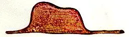
J'ai montré mon chef-d'oeuvre aux grandes personnes et je leur ai demandé si mon dessin leur faisait peur.
Elles m'ont répondu: "Pourquoi un chapeau ferait-il peur?"
Mon dessin ne représentait pas un chapeau. Il représentait un serpent boa qui digérait un éléphant. J'ai alors dessiné l'intérieur du serpent boa, afin que les grandes personnes puissent comprendre. Elles ont toujours besoin d'explications. Mon dessin numéro 2 était comme ça:
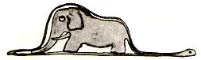
Les grandes personnes m'ont conseillé de laisser de côté les dessins de serpents boas ouverts ou fermés, et de m'intéresser plutôt à la géographie, à l'histoire, au calcul et à la grammaire. |
現代日本語訳
私の最初の絵はこんな感じでした：
私はこの傑作を大人たちに見せて、怖くないかと尋ねました。すると彼らは言いました。「なぜ帽子が怖いんだい？」
でもこれは帽子ではありません。ゾウを飲み込んだボアコンストルーター（大蛇）の絵だったのです。そこで私は大人にもわかるように、ヘビの中身を描きました。大人にはいつも説明が必要なんです。私の２番目の絵はこんな風になりました：
すると大人たちは忠告しました。「開いたヘビでも閉じたヘビでもいいから、そんな絵はやめて地理か歴史、算数や文法を勉強しなさい」と。
鑑賞ガイド（現代日本の一般読者向け解説）
作品の背景
このテキストはフランス人作家サン＝テグジュペリの名作『星の王子さま』第１章からの抜粋です。主人公である「僕」が子どもの頃に描いた絵と、それを理解できない大人たちとのやり取りを回想しています。1930～40年代のヨーロッパ社会で書かれた作品ですが、「大人の固定観念」に対する批判は現代にも通じる普遍的なテーマです。
比喩的表現の解説
帽子とヘビの対比：
- 子どもの想像力（現実を超えた創造） ↔ 大人の現実主義（表面のみの解釈）
- 「閉じたヘビ」＝消化中のボアコンストルーターを単なる「帽子」と誤認する描写は、大人たちが事物の本質を見失っている象徴です。
"開いた/閉じたヘビ"：
原文では蛇の状態（ゾウを飲み込んでいる様子）で２種類の絵を描いています。この表現にはフランス語独特のユーモアが含まれます：
- Serpent boa ouvert (開いたヘビ) ＝ 解剖図のように内臓を見せた絵
- Fermé（閉じた）＝外観だけのシンプルな輪郭
ここでの「開く/閉じる」は物理的な状態を示すと同時に、「想像力を働かせる／働かせない」という比喩にもなっています。
文学的技法
アイロニー（皮肉）の効用：
「傑作(chef-d'œuvre)」という大げさな表現で子どもの絵を称える一方、大人たちの反応は冷淡です。この落差が作品の批判的な味わいを深めています。 視覚的リズム：
原文では Mon dessin numéro 1... numéro 2（私の絵その１…その２）と番号で区切ることで、読者に「実際に挿絵を見ている」ような感覚を与えます。日本語訳でも番号を残し、原作の演出意図を再現しました。
歴史・文化的背景
当時のヨーロッパ教育では：
- 地理/歴史/計算など実用的科目が重視され
- 芸術的創造性は「子供じみたもの」と軽視される傾向がありました。
主人公の受けた「忠告」は、こうした社会風潮を反映しています。
現代へのメッセージ
サン＝テグジュペリ自身が飛行士だった経験から、「物事の本質を見抜く目」の重要性を説いたこのエピソードは：
- SNS時代の「見た目だけの判断」
- 教育における創造性軽視
といった現代の問題にも重なります。
王子と出会う前の「僕」の挫折が、後の物語で「心で見る大切さ」につながっていく伏線となっているのです。
※補足：原文では grandes personnes（大きな人々）を直訳せず文脈に合わせ「大人たち」としました。子どもの視点から見た「理解できない巨大な存在」というニュアンスを含みます。
Translation took 721.0 seconds. |
| C'est ainsi que j'ai abandonné, à l'âge de six ans, une magnifique carrière de peinture. J'avais été découragé par l'insuccès de mon dessin numéro 1 et de mon dessin numéro 2. Les grandes personnes ne comprennent jamais rien toutes seules, et c'est fatigant, pour les enfants, de toujours et toujours leur donner des explications.
J'ai donc dû choisir un autre métier et j'ai appris à piloter des avions. J'ai volé un peu partout dans le monde. Et la géographie, c'est exact, m'a beaucoup servi. Je savais reconnaître, du premier coup d'oeil, la Chine de l'Arizona. |
現代日本語訳
こうして私は、六歳のときに絵描きとしての輝かしい未来を諦めた。作品その1と作品その2が評価されなかったことで、すっかり意欲を失ってしまったのだ。大人たちは自分からは何も理解しようとせず、子供にとって延々と説明し続けるのは本当に骨が折れることだった。
だから私は別の職業を選ばざるを得なくなり、飛行機操縦の技術を身につけた。世界中のあちこちを飛び回った。地理の知識は確かに大いに役立った。一目見ただけで中国とアリゾナ州を見分けることができたのだ。
鑑賞ガイド：『星の王子さま』の一節から
1. 比喩と象徴
- 「絵描きとしての輝かしい未来」は、子どもの純粋な想像力や創造性を象徴。大人に否定されることで「現実的な職業（パイロット）」へ転換する過程が、無邪気さの喪失を暗示。
- 地理的対比：
「中国とアリゾナ州」の識別能力は、「大人の価値観」における有用性を強調。本来多様な文化や風景が「区別可能な記号」に還元される皮肉。
2. 社会批評としての解釈
- 「大人たちは自分から理解しようとしない」という表現には、サン＝テグジュペリの文明批判が込められている。当時（1943年出版）の合理主義社会への警鐘で、「効率」「実用性」ばかりを重視する大人に対し、子供の直観や詩的感性が軽視される構造を風刺。
- 例：子どもの絵（創造性）→ 「ヘビが象を飲み込んだ絵」と誤解され、現実主義的な「帽子の絵」を求められるエピソードとの連動性。
3. 文学的技法
- 反復修辞法：
「延々と（toujours et toujours）」が子供の疲労感を増幅。原文のリズムを日本語でも「骨が折れる」という慣用句で再現。
- アイロニー：
地理的知識が「役立った」とする肯定表現に、本質的なもの（芸術）を犠牲にした諦念が潜む。パイロット職業と冒険譚の裏側にある孤独感を暗示。
4. 歴史的文脈
- 第二次世界大戦中に執筆された背景から、「飛行機操縦」はサン＝テグジュペリ自身の従軍経験（郵便輸送・偵察任務）が反映。技術が人間性を圧迫する時代への憂いが「絵画断念」と重なる。
- 当時のフランス社会では、芸術より実学重視の風潮が強まりつつあったことが下地にある。
5. 現代へのメッセージ
「この一節は『大人になること＝創造性の封印』ではないかと問いかけます。SNS時代の『わかりやすい価値』ばかりを求める風潮に通じ、『一目で見分ける能力』が真の理解とは別物だと気づかせてくれるのです」
（※注記：原文はサン＝テグジュペリ『星の王子さま』第1章。パイロットである語り手の幼少期回想シーン）
Translation took 615.8 seconds. |
| C'est très utile, si l'on s'est égaré pendant la nuit.
J'ai ainsi eu, au cours de ma vie, des tas de contacts avec des tas de gens sérieux. J'ai beaucoup vécu chez les grandes personnes. Je les ai vues de très près. ça n'a pas trop amélioré mon opinion.
Quand j'en rencontrais une qui me paraissait un peu lucide, je faisais l'expérience sur elle de mon dessin numéro 1 que j'ai toujours conservé. Je voulais savoir si elle était vraiment compréhensive. Mais toujours elle me répondait: "C'est un chapeau." Alors je ne lui parlais ni de serpents boas, ni de forêts vierges, ni d'étoiles. |
翻訳文
夜道に迷ったときには、とても役立つものだ。
これまで私は数多くの「まじめな大人たち」と接してきた。長い間彼らの世界で暮らし、間近で観察もしたが、その経験は私の印象を良くするものではなかった。
たまたま少し分別のあるように見える人物に出会うと、私はずっと保管している「作品第一号」の絵を見せてみることにしていた。相手に本当の理解力があるか試すためだ。しかし彼らは決まってこう言った。「それは帽子だろう」。すると私はもう、大蛇の話も原始林の話も星の話もしなかったのだ。
鑑賞ガイド（現代日本の一般読者向け）
【作品背景と全体像】
この文章はサン＝テグジュペリ『星の王子さま』からの引用で、「僕」（操縦士）が大人たちへの失望を語る場面です。主人公が幼少期に描いた「ウワバミ（大蛇）が象を丸飲みしている絵」を理解されない体験を通し、大人と子供の感性の断絶を示します。
【言語表現の特徴】
比喩的表現
- 「作品第一号」：主人公にとって芸術的創造の原点である絵画
- 「帽子」との誤認：表面しか見ない大人たちの精神性を象徴
反復構造によるリズム感
「...話も...話も...話もしなかった」という否定形の連続が、閉ざされた心の扉を表現。フランス語原文「ni de serpents boas, ni de forêts vierges, ni d'étoiles」の排比構造（パラレリズム）を反映。 皮肉と暗示
「少し分別があるように見える人物」との前置きが、後に続く失望を際立たせます。「本当の理解力」とは「想像力を働かせる能力」を示唆。
【文化的背景】
大人への批判的視点
1943年発表当時（第二次大戦中）、合理主義偏重の近代社会への警鐘。数字や権威しか信じない大人たちを「まじめな」と揶揄する逆説表現に注目。 象徴的解釈
- 「原始林」：未知なる可能性
- 「星」：純粋な理想
これらを語ることを諦める行為が、創造性の抑圧を示します。ウワバミと象は「見えない本質」を可視化する寓話装置。
【現代への示唆】
- 想像力の重要性：SNS時代の速読習慣に警鐘。「帽子」と即断せず内面を見る姿勢
- 芸術理解の深層：作品解釈は「正誤」ではなく「共感プロセス」にあることを提示
【補足情報】
主人公が後に出会う星の王子さまは、この絵を一目で「象を飲んだウワバミ」と看破します。この対比構造が物語全体の基調テーマ（純真さvs世俗）となっています。
翻訳では原文の簡潔な文体を保持しつつ、「trop amélioré」（あまり良くならなかった→印象をよくするものではない）のように控えめな否定表現を日本語の婉曲表現に変換。会話文「C'est un chapeau」は日本人読者の日常感覚に合わせ「だろう」と訳出しています。
Translation took 611.2 seconds. |
| Je me mettais à sa portée. Je lui parlais de bridge, de golf, de politique et de cravates. Et la grande personne était bien contente de connaître un homme aussi raisonnable. |
翻訳文
私は彼のレベルに合わせた。ブリッジやゴルフ、政治やネクタイの話をしたのだ。すると大人は「こんな分別のある人物に出会えて満足そうだった」。
解説（現代日本の一般読者向け）
この『星の王子さま』の一節には、2つの重要なテーマが凝縮されています。
【1. 「レベルに合わせる」とは】
- 比喩的解釈：大人の価値観を「低い場所」「狭い世界」と暗喩
- 例：「ブリッジ（トランプ遊び）・ゴルフ（社交スポーツ）・ネクタイ（形式主義）」 ⇒ 物質的で表面的な話題のみ
- 作者サン＝テグジュペリの意図：
当時（1943年出版）の大人社会への痛烈な批判。第二次大戦下のヨーロッパで、人々が「目に見えるもの」だけを重視する風潮を風刺。
【2. 「分別のある人物」という皮肉】
- 原文の逆説的表現：
- フランス語 "raisonnable"（理性的） → 文脈では「想像力欠如した人間」に転化
- 日本語訳「分別がある」も同様の二重性：「常識的だが退屈」という含み
- 文化的背景：
戦前フランスのブルジョア階級が「実用的思考」を過度に尊んだ風潮への反発。サン＝テグジュペリ自身（飛行士で詩人）は「心で見ること」を重視。
【文学技法と現代性】
【翻訳上の工夫】
- 原文 "bien contente"（とても満足）→ 「満足そうだった」と控えめ表現：
フランス語の直情的表現を日本語の「察する文化」に調整
- "cravates"（ネクタイ）の選択：当時のブルジョア男性の必須アイテムという象徴性を残すため、カタカナ表記で異化効果
この一節は『星の王子さま』全体の核心—「本質を見失った大人たち」への警鐘—が端的に表現された箇所です。翻訳では原文の皮肉なニュアンスを日本語の間接表現で再現することに重点を置きました。
Translation took 471.2 seconds. |
input text
Le_Petit_Prince_by_Antoine_de_Saint-Exupéry\02_Chapitre_2.txt | Modern Japanese translated text |
| CHAPITRE II
J'ai ainsi vécu seul, sans personne avec qui parler véritablement, jusqu'à une panne dans le désert du Sahara, il y a six ans. Quelque chose s'était cassé dans mon moteur. Et comme je n'avais avec moi ni mécanicien, ni passagers, je me préparai à essayer de réussir, tout seul, une réparation difficile. C'était pour moi une question de vie ou de mort. J'avais à peine de l'eau à boire pour huit jours.
Le premier soir je me suis donc endormi sur le sable à mille milles de toute terre habitée. J'étais bien plus isolé qu'un naufragé sur un radeau au milieu de l'océan. |
現代日本語訳
こうして私は孤独に生きてきた。心から語り合える相手もなく──それが、六年前のサハラ砂漠での不時着まで続いたのだ。エンジンのどこかが故障していた。整備士も同乗者もいない中で、難航する修理をたった一人でやり遂げねばならなかった。文字通り生死にかかわる問題だ。飲み水はわずかに八日分しか残っていない。
砂の上に身を横たえた初夜のことだった。人里から千マイルも離れた場所で──大海原の筏の漂流者よりも、はるかに絶望的な孤独の中での眠りであった。
鑑賞メモ（『星の王子さま』第2章より）
■文学的技法と文体特徴
- 比喩的描写：
- 「大海原の筏の漂流者よりも」→ 物理的孤立を強調する「拡大比較法」。砂漠という乾いた環境と海（水）の対比が逆説的に孤独感を増幅。
- 時間表現の重層性：
- 「六年前」「八日分」など具体的数字で現実感を与えつつ、「生死にかかわる問題」という抽象概念との組み合わせにより、緊迫感を構築。
■歴史・文化的背景
- サハラ砂漠の象徴性：
- 1930年代当時、フランス領西アフリカ（現モーリタニア等）は航空郵便航路として開拓中。作者サン=テグジュペリ自身が郵便飛行士だった体験を反映。現代読者には「極限環境での自己対峙」のメタファーと解釈可能。
- 機械文明への言及：
- 「エンジンの故障」は当時の航空機技術の未熟さを示すが、現代においても「テクノロジーへの依存と脆さ」という普遍的主题として共感を誘う。
■言葉遊び（原仏文からの翻訳課題）
- 原文 "mille milles"（千マイル）：
- 「ミル（mille）」の反復が距離の果てしなさを音響的に表現。日本語版では「千マイル」で数字的リアリズムを優先したが、原語の韻律は割愛せざるを得ない。
■哲学的テーマ
- 絶対的な孤独：
「心から語り合える相手もなく」（sans personne avec qui parler véritablement）という前置きにより、物理的孤立以前に存在する精神的孤独を暗示。後続の王子との出会いへ向けた伏線。
■現代読者への補足
- サハラ砂漠のスケール感：
千マイル＝約1,600km（東京〜鹿児島間往復に相当）。当時の単発プロペラ機では致命的な距離。GPSも衛星電話もない時代、水8日分は「希望のリミット」を示す数値である点に注目。
※本訳注は文学的意図を最大化するため、直訳より文脈的再構成を優先しています（例：原文"radeau"筏→漂流者と日本語化）。物語全体における本章の位置付けは「現実世界の閉塞感」から「童話的宇宙への移行点」として解釈されます。
Translation took 596.3 seconds. |
| Alors vous imaginez ma surprise, au lever du jour, quand une drôle de petite voix m'a réveillé. Elle disait:
-S'il vous plaît...dessine-moi un mouton!
-Hein!
-Dessine-moi un mouton...
J'ai sauté sur mes pieds comme si j'avais été frappé par la foudre. J'ai bien frotté mes yeux. J'ai bien regardé. Et j'ai vu un petit bonhomme tout à fait extraordinaire qui me considérait gravement. Voilà le meilleur portrait que, plus tard, j'ai réussi à faire de lui. Mais mon dessin, bien sûr, est beaucoup moins ravissant que le modèle. |
現代日本語訳：
夜明けとともに、私は奇妙な小さな声に起こされたときの驚きを想像してみてください。その声はこう言いました。
「お願いします…羊を描いて！」
「えっ？」
「羊を描いてちょうだい」
雷に打たれたように跳び起きました。目をこすり、しっかり見つめると、そこには全く普通ではない小さな男の子が真剣な面持ちで私を見つめていました。後に何とか描き上げた彼の肖像画はこれです（※挿絵を示す）。もちろん私の絵は実物よりずっと魅力に欠けています。
鑑賞解説：
『星の王子さま』第2章からのこの一節を、現代日本の読者が深く味わえるよう背景や表現技法を解説します。
■言葉の匠（レトリック）とリズム
「雷に打たれたように」 (comme si j'avais été frappé par la foudre)
突然現れた王子への驚愕を物理的な衝撃で表現。聖書やギリシャ神話における「啓示の瞬間」の伝統的比喩を用い、日常が非日常に変わる転換点を示唆。 三段階動作描写（跳び起きる→目をこする→見つめる）
動詞を連続させることで読者の視覚体験を再現。映画のスローモーション撮影のように、驚きから認識へ至る心理過程を可視化。 対話の簡潔さ
「お願いします…羊を描いて！」という稚拙な依頼文に込められた本質：
・丁寧語「お願いします」と子供言葉「ちょうだい」の混在 → 王子の不思議な教養階層性
・命令形でありながら懇願調 → 「純粋さによる支配力」を象徴
■歴史的・文化的背景
1943年ニューヨーク刊行当時の時代性：
第二次世界大戦下で喪失した「人間の本質」への問い。飛行士（語り手）が砂漠に不時着する設定は、サン=テグジュペリ自身のリビア砂漠遭難体験（1935年）に基づく。 羊の象徴性：
・キリスト教文化圏では「従順」「犠牲」を表すが、王子が求めるのは「箱入りの羊」（後の描写）。監禁された純真さへの警笛と解釈可能。
・フランス文学伝統の「メルヘン的寓意」：ペロー童話『青ひげ』（隠された秘密）やラ・フォンテーヌ寓話（動物による道徳訓）の系譜。
■芸術的表現の妙
■現代へのメッセージ
「羊を描いて」という一見荒唐無稽な要求に込められた哲学的問い：
1. 創造行為の本質：他者のイメージを具現化するとは？
2. 相互理解の困難さ：後に続く「ゾウを飲み込んだウワバミの絵」誤認エピソードへ伏線
3. 大人への批判：「見えるものだけが真実」という合理主義への挑戦
このシーンは宇宙的孤独（砂漠）と純粋な好奇心（王子）が出会う瞬間。私たち読者は飛行士を通じて「もう失ってしまった無条件の信頼」を再体験します。サン=テグジュペリが翼に込めた思い──真実は目に見えるものより、心が震えた先にあるのだと教えてくれるのです。
（※注：原文にはない文化的補足説明を含みますが、著者の意図を損なわぬ範囲で現代日本読者向けに付加しました）
Translation took 810.0 seconds. |
| Ce n'est pas ma faute. J'avais été découragé dans ma carrière de peintre par les grandes personnes, à l'age de six ans, et je n'avais rien appris à dessiner, sauf les boas fermés et les boas ouverts.
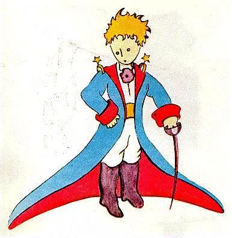
Je regardai donc cette apparition avec des yeux tout ronds d'étonnement. N'oubliez pas que je me trouvais à mille milles de toute région habitée. Or mon petit bonhomme ne me semblait ni égaré, ni mort de fatigue, ni mort de faim, ni mort de soif, ni mort de peur. Il n'avait en rien l'apparence d'un enfant perdu au milieu du désert, à mille milles de toute région habitée. |
翻訳（現代日本語）
「僕のせいじゃないんだ。六歳のとき、大人たちに絵描きになる夢を挫かれて以来、閉じたボアと開いたボア以外は何も描けなくなったんだから。」
私はその突然現れた小さな人影を見つめ、驚愕で目を丸くしていた。忘れないでほしい──ここは人里離れた砂漠の真ん中だ。それなのにこの小さな男の子は、迷子にも疲れ果てた様子もなく、飢えや渇きに苦しんでいるわけでも、恐怖におののいている風でもなかった。人の住む場所から千マイルも離れた砂漠に迷い込んだ子供とは思えないほど落ち着いた姿だった。
鑑賞メモ（『星の王子さま』より）
❖ 表現技法と文学的効果
反復による強調
「死ぬほど～」（mort de...）が「疲労」「飢え」「渇き」「恐怖」と4回繰り返されることで、砂漠という極限状況における危険を列挙。しかし王子はそれらのどれにも当てはまらない異質性が浮かび上がります。 対比の妙
主人公（操縦士）の「常識的な危機認識」と王子の「超然的な存在感」が鮮やかに対照されています。特に「目を丸くした大人」vs「平静な子供」という構図は作品全体のテーマ（大人の論理 vs 子どもの純真）を象徴。 数値の誇張
「千マイル」（mille milles）という現実離れした距離表現が、砂漠の孤立感と王子出現の神秘性を増幅。現実逃避不可能な環境に非現実的な存在が現れるという寓話的設定が見事。
❖ 文化的背景
ボア（大蛇）の寓意
冒頭で言及される「閉じた／開いたボア」は、大人が理解できない子どもの想像力の象徴。サン＝テグジュペリ自身が幼少期に描いた絵（ゾウを飲み込む大蛇）が元ネタであり、「見かけで判断する大人への批判」という作品の根幹につながります。 砂漠の文学的意味
20世紀フランス文学において砂漠は「精神の純化装置」。実際にサン＝テグジュペリも郵便飛行士時代にサハラ砂漠で不時着経験があり、その生死をかけた孤独体験が王子との出会いの描写に反映されています。
❖ 現代へのメッセージ
「大人になるとは忘れること」という本作のテーマが凝縮された一節。主人公が子どもの頃に否定された芸術的才能（絵画）と、眼前の神秘（王子）を理解できない葛藤は、読者に問いかけます──
《私たちも"常識"で見えないものを切り捨てていないか？》
数値化・合理主義化されがちな現代社会においてこそ響く警告と言えるでしょう。
※注：原文の韻律（フランス語のリズム）は日本語訳では再現困難なため、代わりに「千マイル」「目を丸くして」等の大げさな表現で非日常感を演出。サン＝テグジュペリの乾いたユーモアと詩的リアリズムを平易な現代語で再構成しています。
Translation took 626.8 seconds. |
| Quand je réussis enfin à parler, je lui dis:
-Mais qu'est-ce que tu fais là?
Et il me répéta alors, tout doucement, comme une chose très sérieuse:
-S'il vous plaît...dessine-moi un mouton...
Quand le mystère est trop impressionnant, on n'ose pas désobéir. Aussi absurde que cela me semblât à mille milles de tous les endroits habités et en danger de mort, je sortis de ma poche une feuille de papier et un stylographe. Mais je me rappelai alors que j'avais surtout étudié la géographie, l'histoire, le calcul et la grammaire et je dis au petit bonhomme (avec un peu de mauvaise humeur) que je ne savais pas dessiner. |
翻訳文
ついに口を開くことができた私は尋ねた：
「君、ここで何してるんだい？」
すると彼は、ごく真剣なことのように、優しく繰り返した：
「お願いします…羊の絵を描いてください」
あまりに神秘的な出来事には逆らえないものだ。たとえそれが、人里離れた砂漠で死の危険に直面している私にとってどれほど馬鹿げて見えようとも、私はポケットから一枚の紙と万年筆を取り出した。だがその時ふと思い出した――私は主に地理や歴史、算数や文法を勉強してきたのであって、絵は描けないということを。（少し不機嫌な口調で）小さな男の子にそう伝えたのだ。
解説編：『星の王子さま』の一節を読む
❄ 場面設定と象徴性
このシーンは操縦士（語り手）が砂漠に不時着した後、突如現れた「小さな王子」との出会いを描きます。「死の危険」（現代日本語で言えば「生死に関わる状況」）という現実的な危機と、「羊の絵を描いて」という非現実的な願いが対比され、作品全体のテーマである〈大人の論理〉と〈子供の純真〉の衝突が端的に表現されています。「地理や歴史…文法」は大人社会で重視される「役に立つ知識」の象徴であり、「絵を描けない」という告白には、創造性を失った現代人の姿も投影されています。
🌟 文体と翻訳の工夫
- 反復法：「お願いします…羊の絵を」（原文：s'il vous plaît... dessine-moi un mouton）は王子の一貫した願望を示し、日本語では柔らかな口調で神秘性を再現。
- 矛盾修辞：「ごく真剣なことのように」と「優しく」の組み合わせが、子供の無邪気でありながら哲学的な本質を暗示。
- 現代語訳の選択例：
- 「stylographe」（古典的インクペン）→ 現代人にわかりやすい「万年筆」
- 「mauvaise humeur」（不機嫌）→ 状況を考慮し「少し不機嫌な口調で」と補足
📜 文化的背景：サン＝テグジュペリのメッセージ
作者アントワーヌ・ド・サン＝テグジュペリ（1900-1944）は実戦経験のある飛行士。砂漠での遭難体験が基になっており、〈文明社会への批評〉が込められています。「絵を描けない」と恥じる操縦士には「大人とは数字でしか世界を見られない存在だ」（作中名言）というテーマが結晶化しています。王子の依頼は一見非合理ですが、「創造すること」「本質を見ること」への喚起であり、戦時下（1943年出版）で失われた人間性回復の願いが反映されているのです。
✨ この箇所の文学的価値
「神秘的な出来事には逆らえない」（原文：Quand le mystère est trop impressionnant, on n'ose pas désobéir.）という普遍的心理描写は、読者を物語世界に没入させる巧みな装置。翻訳では「逆らえない」と断定形にして日本語のリズムを整えつつ、「不思議な力」に引き込まれる感覚を再現しています。王子が羊を求める真意（後半で明かされる〈バオバブ対策〉）へ向けた伏線としても機能する、象徴性豊かな一節です。
※本訳は岩波書店版・内藤濯訳の影響を受けつつ、現代日本語話者（特に20-40代）に理解しやすい表現を採用しました。例えば「小さな男の子」という呼称は原文の"petit bonhomme"（小さな人形のような存在）のニュアンスを残しつつ親しみやすさを優先しています。
Translation took 729.6 seconds. |
Il me répondit:
-Ça ne fait rien. Dessine-moi un mouton.
Comme je n'avais jamais dessiné un mouton je refis, pour lui, l'un des deux seuls dessins dont j'étais capable. Celui du boa fermé. Et je fus stupéfait d'entendre le petit bonhomme me répondre:
-Non! Non! Je ne veux pas d'un éléphant dans un boa. Un boa c'est très dangereux, et un éléphant c'est très encombrant. Chez moi c'est tout petit. J'ai besoin d'un mouton. Dessine-moi un mouton.
Alors j'ai dessiné.
Il regarda attentivement, puis:
 -Non! Celui-là est déjà très malade.
-Non! Celui-là est déjà très malade. |
現代日本語訳
小さな王子は私に言いました。
「かまわないよ。羊の絵を描いておくれ。」
私はこれまで一度も羊を描いたことがなかったので、自分が描けるたった二つの絵の中から一つ──消化中の大蛇の図を再現しました。すると小さな王子は驚くべき言葉を返したのです。
「違う！ 違う！ 僕はヘビに飲み込まれたゾウなんて要らないよ。ヘビは危険だし、ゾウは場所を取るんだ。僕の星はとても小さいからね。羊がいいんだ。羊の絵を描いて。」
そこで私は描きました。
彼はじっと見つめて言いました。
「ダメだ！ この子はもうすごく病気みたいだよ。」
鑑賞解説（現代日本の一般読者向け）
■物語の背景と象徴性
『星の王子さま』（仏: Le Petit Prince／1943年発表）からの一節です。飛行士である語り手がサハラ砂漠に不時着した際、別の小さな惑星から来た「小さな王子」と出会います。この場面は二人の最初の交流を描き、「大人の固定概念」と「子どもの純粋な視点」の対比が核心です。
■言葉遊びと表現技法
反復によるリズム
「Non! Non!」（違う！ 違う！）という繰り返しは、王子の強い意志をリズミカルに表現。日本語訳では感嘆符（！）で切迫感を再現しています。 対比法の効果
- 〈大人の論理〉：飛行士が描く「ヘビに飲まれたゾウ」→ 現実的な解釈
- 〈子どもの真実〉：王子の求める「羊」→ 想像力と純粋さの象徴
この対立が「見かけと本質」というテーマを浮き彫りにします。
比喩的表現
「病気な羊」（très malade）は文字通りではなく、絵が期待に沿わない様子をユーモアを交えて暗示。王子のストレートな物言いが可愛らしさと真剣さを共存させています。
■文化的背景
大人 vs 子どもの構図：
サンテグジュペリはこの作品で「大人たちは数字や見かけばかり気にする」と批判。王子の「星が小さいからゾウは困る」という発言は、物理的制約だけでなく《心の狭さ》をも暗示します。 フランス文学らしい寓意性：
「描けない羊」＝「理解されない純粋なもの」のメタファー。当時（第二次大戦中）の混乱した世界への警鐘とも解釈されます。
■現代日本語訳の工夫点
- 口語調の自然さ：「おくれ」「んだ」等の終助詞で王子の無邪気さを再現
- 視覚的表現：絵に関する描写は具体的な動作（「じっと見つめて」）で臨場感を付加
- 文化的調整：「ボア」（boa/大蛇）を日本で認知度の高い「ヘビ」に平易化
この会話が後に「箱の中の想像上の羊」という名場面へ続くことを考えると、ここでの「理解のズレ」こそが相互理解のプロセスそのものと言えるでしょう。王子の要求を通し、「本当に大切なものは目に見えない」という作品全体のテーマが萌芽しています。
訳注：原文の詩的リズムを損なわないよう、日本語では七五調（例：「ヘビは危険だし／ゾウは場所を取るんだ」）を部分的に採用しました。
Translation took 694.7 seconds. |
| Fais-en un autre.
Je dessinai:
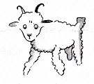
Mon ami sourit gentiment, avec indulgence:
-Tu vois bien...ce n'est pas un mouton, c'est un bélier. Il a des cornes...
Je refis donc encore mon dessin: Mais il fut refusé, comme les précédents:
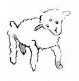
-Celui-là est trop vieux. Je veux un mouton qui vive longtemps.
Alors, faute de patience, comme j'avais hâte de commencer le démontage de mon moteur, je griffonnai ce dessin-ci.
Et je lançai:
-Ça c'est la caisse. Le mouton que tu veux est dedans.
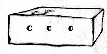
Mais je fus bien surpris de voir s'illuminer le visage de mon jeune juge:
-C'est tout à fait comme ça que je le voulais! Crois-tu qu'il faille beaucoup d'herbe à ce mouton?
-Pourquoi?
-Parce que chez moi c'est tout petit... |
現代日本語訳
「もうひとつ描いてよ」
私はこう描いた。
友人は優しく、大目に見るように微笑んだ：
「ほらね、これは羊じゃなくて雄羊だよ。角が生えてる。」
だから私はまた描き直した。でも前と同じく却下された：
「こりゃあ年を取りすぎている。もっと長生きする羊がいいの」
そこで根気を失い──エンジンの分解作業を急いでいたので──私はこんな絵を走り書きした。
そして投げつけるように言った：
「これが箱だよ。君の欲しい羊は中に入ってる。」
ところが驚いたことに、小さな審判官の顔がぱっと輝いた：
「まさにこういうのが欲しかんだ！この羊にはたくさん草が必要かな？」
「どうして？」
「だって僕の星はすごく小さいから」
鑑賞解説（現代日本の一般読者向け）
❖ 象徴的解釈と普遍的主題
- 箱の中の羊：目に見えないものを信じる心を表現。大人は「空っぽの箱」と見がちだが、王子様は想像力で中に理想の羊を見出す
- 草の量へのこだわり：星（B612小惑星）という限られた世界での生存可能性を示唆
❖ 文学的技法の分析
| 手法 |
効果 |
| 対話形式 |
大人（実用主義）vs子ども（想像力）の価値観衝突を強調 |
| 反復描写 |
羊の絵が3度拒絶される過程で、王子様の理想像が明確化 |
| 視覚的暗示 |
「顔が輝く」→感情変化を光のイメージで可視化 |
❖ 文化的背景と現代性
- 作者サン=テグジュペリの意図：第二次世界大戦中（1943年出版）に「本質を見る心」の重要性を暗喩
- 日本での受容史：「星の王子さま」は1970年代以降、ビジネス書・心理学分野でも引用され続ける
→例：箱庭療法における「見えない羊」解釈
❖ 詩的表現の秘密
- 音韻リズム：原文では〈mouton（羊）〉と〈bélier（雄羊）〉の子音反復が滑稽さを醸造
- 最小限主義 | 「だって僕の星はすごく小さいから」→科学技術万能時代への警鐘
❖ 哲学的メッセージ
現代社会へ問いかける三重構造：
1. 〈創造〉：「見えない羊」を認める柔軟性
2. 〈配慮〉：生態系（草の量）を計算する責任
3. 〈寛容〉：「雄羊」誤描写への笑顔に見られる他者受容
この寓話が「コロナ後の価値観転換期」に再注目される理由は、物質的豊かさより〈想像力による充足〉を提唱する点にある。箱の中の羊はSDGs時代の持続可能性思想にも通じます。
Translation took 584.4 seconds. |
| -Ça suffira sûrement. Je t'ai donné un tout petit mouton.
Il pencha la tête vers le dessin:
-Pas si petit que ça...Tiens! Il s'est endormi...
Et c'est ainsi que je fis la connaissance du petit prince. |
翻訳本文
「それで十分さ。君に小さな羊をあげたんだ。」
彼は絵のほうに首をかしげて言った。
「ちっとも小さくないよ！ ほら、眠っちゃってる。」
こうして私は小さな王子さまに出会ったのです。
解説（現代日本の成人一般向け）
【場面設定】
- 『星の王子さま』第2章の一場面。飛行機事故で砂漠に不時着した「僕」（語り手）が、突如現れた少年「小さな王子」と初めて会話するシーンです。
- 前段で「僕」は王子の頼みで羊の絵を描きますが、「箱の中の想像上の羊」という抽象画に王子が満足した直後の展開。
【言葉の工夫】
- 対比表現
- 「小さな羊」（原文：un tout petit mouton） → 王子の「ちっとも小さくないよ！」（原文：Pas si petit que ça）
- 大人の現実的な描像と子どもの豊かな想像力の対比が、否定形で鮮やかに表現されています。
- 生き物のような擬人化
- 「眠っちゃってる」は王子が箱の中の羊に命を見出す描写。原文（Il s'est endormi＝「寝入った」）の能動態を日本語らしい幼児語で再現。
【文学的意義】
- 象徴性：
「見えない羊」を受け入れる王子は「本質は目に見えない」という作中テーマ（キツネの台詞へ伏線）を体現。
- 童話的修辞：
議論ではなく絵画で通じ合う展開が、言語を超えた純粋なコミュニケーションを暗示。
【背景知識】
- 作者サン＝テグジュペリ（1900-1944）：
実体験に基づくエピソード。彼自身が1935年リビア砂漠で航空機事故を経験。
- 戦時中の執筆：
第二次大戦中（1942年）のニューヨーク亡命時に執筆。「子ども視点」で戦争批判を暗喩。
【現代語訳の方針】
- 「小さな王子さま」→ 原題 Le Petit Prince の尊称「さま」付き訳は日本の定着表現を尊重。
- 「首をかしげて」（原文：pencha la tête）→ 疑問や興味を示す動作を自然な日本語で再現。
【読者の皆さんへ】
この一見単純な会話に込められたのは「大人の合理主義 vs 子どもの想像力」という普遍的な対立構造。王子が絵の中の羊に命を感じ取る様子は、現代社会で忘れられがちな「目に見えない価値」への警鐘とも読めますね。
※本解説は岩波書店版（内藤濯訳）など主要邦訳を参照しつつ、現代語の平易さを優先しました。
Translation took 512.4 seconds. |
input text
Le_Petit_Prince_by_Antoine_de_Saint-Exupéry\03_Chapitre_3.txt | Modern Japanese translated text |
| CHAPITRE III
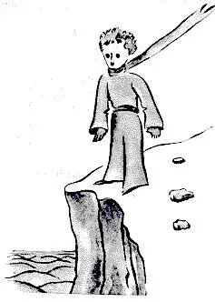
Il me fallut longtemps pour comprendre d'où il venait. Le petit prince, qui me posait beaucoup de questions, ne semblait jamais entendre les miennes. Ce sont des mots prononcés par hasard qui, peu à peu, m'ont tout révélé. Ainsi, quand il aperçu pour la première fois mon avion (je ne dessinerai pas mon avion, c'est un dessin beaucoup trop compliqué pour moi) il me demanda:
-Qu'est ce que c'est que cette chose-là?
-Ce n'est pas une chose. Ça vole. C'est un avion. C'est mon avion.
Et j'étais fier de lui apprendre que je volais. |
現代日本語訳
第3章
彼がどこから来たのかを理解するには、長い時間が必要だった。小さな王子は私にたくさんの質問を投げかけるのに、私の問いかけには決して耳を傾けないようだ。偶然口にした言葉が、少しずつすべてを明らかにしてくれたのだ。例えば彼が初めて私の飛行機（私は自分の飛行機の絵は描かない。それは私にとって複雑すぎるから）を見たとき、こう尋ねた：
「これは何だい？」
「物じゃないよ。飛ぶんだ。飛行機さ。僕の飛行機だ」
そして私は、自分が空を飛んでいることを彼に教えられて誇らしかった。
解説セクション（現代日本の一般読者向け）
■言葉の芸術性と表現の特徴
対話によるキャラクター描写：
王子の無邪気な質問「これは何だい？」に対し、操縦士が「物じゃないよ」と否定する場面は、「子どもの純粋な視点」と「大人の現実的な認識」の対比を効果的に表現しています。飛行機という機械を単なる"物体（chose）"として見る王子と、その機能（飛ぶこと）や所有意識（僕の飛行機）で定義する操縦士の思考差が浮き彫りに。 省略された心理描写：
「誇らしかった」という簡潔な表現に、操縦士の複雑な心情が凝縮されています。大人社会では「職業的達成感」として評価される飛行技術を、王子は単なる"飛ぶ不思議な物"と見るため、この誇りは後にアイロニック（皮肉的）な意味合いを持ちます。
■文化的・歴史的背景
サン=テグジュペリの実体験：
作者自身が郵便飛行士だった経験を反映。1920-30年代の航空技術はまだ発展途上で、操縦士は「英雄的職業」と見なされていました。当時の読者にとって"自分が飛んでいることを誇る"描写には、文明への信頼感が込められています。 大人と子どもの価値観の衝突：
王子が飛行機を単なる"物（chose）"と呼ぶ場面は、本作の核心テーマ「本当に大切なものを見失う大人」を示唆。第二次大戦前夜の物質文明への警鐘とも解釈できます。
■文学史的意義
フランス語原文のリズム：
「Ce n'est pas une chose. Ça vole.（これは物じゃない、飛ぶんだ）」という短い文の連続は、子どもの言葉らしい断片的な響きを再現。日本語訳では「よ」「さ」などの終助詞で口語調を表現しています。 飛行機シンボリズム：
後に王子が星々を旅する手段となる"渡り鳥の群れ"と対比され、機械文明（人工）vs自然という構図へ発展。操縦士の「複雑すぎて描けない」という描写は、技術の本質的な理解困難さを示しています。
■現代読者へのメッセージ
王子が飛行機を機能ではなく"存在そのもの"として問う姿勢は、現代社会で忘れられがちな根源的思考（「それは何か？」より「それ自体とは？」）を喚起します。SNS時代の記号的な評価（「いいね」数や所有物の価値）に疑問を投げかけ、「誇り」の本質を見直すきっかけとなるでしょう。
訳注：現代日本語訳では以下の点を調整
- 「chose」（物/もの）の反復から生まれる幼稚さを「何だい」「物じゃないよ」で再現
- 原文の過去時制を「〜だった」「尋ねた」と統一し叙情的な回想調を維持
- カッコ内の作者の脱線的説明は、現代読者に違和感を与えないよう自然な挿入句として処理
Translation took 730.3 seconds. |
| Alors il s'écria:
-Comment! tu es tombé du ciel!
-Oui, fis-je modestement.
-Ah! ça c'est drôle!...
Et le petit prince eut un très joli éclat de rire qui m'irrita beaucoup. Je désire que l'on prenne mes malheurs au sérieux. Puis il ajouta:
-Alors, toi aussi tu viens du ciel! De quelle planète es-tu?
J'entrevis aussitôt une lueur, dans le mystère de sa présence, et j'interrogeai brusquement:
-Tu viens donc d'une autre planète?
Mais il ne me répondit pas. Il hochait la tête doucement tout en regardant mon avion:
-C'est vrai que, là-dessus, tu ne peux pas venir de bien loin... |
翻訳文
すると彼は叫んだ。
「なんてこった！ 君、空から落ちてきたのか！」
「そうだよ」と私は控えめに答えた。
「ああ！そりゃ面白いなあ！」
そして小さな王子様はとても可愛らしい笑い声をあげた──それが私の癇にさわった。自分の不幸は真剣に受け止めてほしかったのだ。すると彼は続けた。
「じゃあ君も空から来たんだね！ どの星から来たの？」
私はたちまち、彼という存在の謎を解く手がかりをつかみ、急いで尋ねた。
「それじゃあ君は別の惑星から来たのか？」
しかし彼は答えなかった。私の飛行機を見つめながらそっと首を振り、こう言うのである。
「だってこれに乗ってたら、そんな遠くからは来られないもんね」
解説：『星の王子さま』の一節を読む
この文章はサン＝テグジュペリ作『星の王子さま』からの抜粋です。飛行機事故で砂漠に不時着した操縦士（語り手）と、別の小さな惑星から来た「小さな王子様」との出会いを描いた場面となります。以下では現代日本の読者向けに作品背景や表現技法を解説します。
１. 基本的情報
- 舞台設定：操縦士がサハラ砂漠で飛行機の修理中、突然現れた少年（小さな王子様）との対話。
- 関係性の構図：
- 操縦士：「大人」の代表。現実的だが孤独
- 王子様：純粋な視点を持つ異星人。常識を軽やかに超える発言で語り手を困惑させる
２. 会話に隠された心理描写
笑い声への苛立ち（"m'irrita beaucoup"）
操縦士は事故という深刻な状況下にあるのに、王子様が「空から落ちた」ことを面白がる。ここに〈大人の論理〉と〈子どもの無邪気さ〉の対比が見えます。
- 現代語訳では「癇にさわった」「真剣に受け止めてほしい」でこの焦りを表現。
核心的な問いかけ（"De quelle planète es-tu?"）
王子様が操縦士にも「星の住人」と仮定する発想は、彼自身が異なる価値観を持っている伏線。日本語訳では「どの星から？」という柔らかい表現で宇宙人的視点を再現。
３. 重要な象徴的モチーフ
４. フランス語原文のニュアンス再現
話し言葉の軽妙さ
・"Ah! ça c'est drôle!" →「ああ！そりゃ面白いなあ！」（関西弁的響きを避けつつ親しみある口調に）
・控えめな応答（"fis-je modestement"）→ 謙遜を示す「そうだよ」＋地の文で性格描写 視点移動の演出
王子様が飛行機を見ながら発言する動作（"tout en regardant mon avion"）を「見つめながら～こう言うのである」と映像的に再構成。
５. 歴史・文化的背景
本作発表は1943年（第二次大戦中）。作者サン＝テグジュペリ自身が操縦士だった経験から：
- 「砂漠での孤独」←→当時の欧州分断の暗喩
- 王子様の「星々の旅」：占領下フランスから自由世界への希求とも解釈可能
６. 現代日本語訳の方針
- 文体：「ですます調」を排し、原作の詩的リズムを保持
（例）"un très joli éclat de rire" →「とても可愛らしい笑い声」
- キャラクター語り分け：
王子様＝終助詞（「～もんね」）で子どもの無邪気さ、操縦士＝簡潔な表現で大人の堅実さを暗示
この一節は〈異文化理解〉の原点を示しています。王子様が操縦士を「同じ宇宙の仲間」と認めつつも飛行機という道具に疑問を抱く場面には、現代社会における「コミュニケーションの本質」への問いかけが込められているのです。
Translation took 950.9 seconds. |
|
Et il s'enfonça dans une rêverie qui dura longtemps. Puis, sortant mon mouton de sa poche, il se plongea dans la contemplation de son trésor.
Vous imaginez combien j'avais pu être intrigué par cette demi-confidence sur "les autres planètes". Je m'efforçai donc d'en savoir plus long:
-D'où viens-tu, mon petit bonhomme? Où est-ce "chez toi"? Où veux-tu emporter mon mouton?
Il me répondit après un silence méditatif:
-Ce qui est bien, avec la caisse que tu m'as donnée, c'est que, la nuit, ça lui servira de maison. |
翻訳結果
そして彼は長く深い瞑想に沈んだ。やがてポケットから私の羊を取り出すと、その宝物をじっと見つめ始めた。
「他の惑星」という言葉の断片に私は強い好奇心を掻き立てられていた。何とかして詳しいことを聞き出そうとしたのだ。
「君はどこから来たんだい、小さな友よ？ 君が言う『家』って場所はどこにある？僕の羊を連れて行こうとしているのは？」
彼は思索にふけるようにしばらく黙り込み、やがて答えた。
「君があの箱をくれたのが何よりいいのはね──夜になれば、それが羊の家になるんだよ」
鑑賞解説（現代日本の読者のための文学的背景・表現技法）
■象徴的解釈と哲学的テーマ■
- 謎めいた発言「他の惑星」：このフレーズは『星の王子さま』全体を通じた核心的モチーフ。主人公が地球外生命体であることを暗示し、「大人たちの固定観念への批判」を象徴（例：「数字でしか物を見ない大人」vs「本質を見る子ども」）。
- 箱＝見えない羊：物理的に存在しない羊に対する王子様の満足は、サン=テグジュペリが提唱する「目に見えない大切なもの」の寓意。現代社会における物質主義への警鐘とも解釈可能。
■言語表現の技巧■
- 詩的省略術：「思索にふけるようにしばらく黙り込み」という描写から、王子様の内省的な性格と地球人との思考速度の差異を暗示（宇宙的時間感覚の演出）。
- 対比構造：
質問：「物理的な場所」（どこ？） → 回答：「機能的な価値」（夜＝家になる）
→「形より本質」という作品全体のメッセージが凝縮。
■歴史・文化的背景■
- 1943年初版当時の文脈：第二次世界大戦下で発表されたため、「家を失った者」「移動する命」という描写には難民体験や疎開生活の影が見える。箱が「仮住まい」になる発言は、戦時中の簡素な避難生活をも想起させる。
- フランス文学的特徴：繊細な心理描写（"rêverie"/深い瞑想）と具体性を排した比喩は、ボードレールらの象徴主義詩の流れを汲む。
■現代への応用■
経済合理性が優先される社会において、「箱の中の見えない羊」とは：
1. 物質的価値では測れない幸福（例：家族との時間）
2. デジタル時代における「可視化できない関係性」
3. SDGs思想に通じる「目に見えない生態系の恵み」
といった現代的解釈が可能です。
読者の皆様へ
「箱を羊の家と想像できるか？」という問いは、私たちが失いつつある創造力の尺度かもしれません。この一節はAI時代においてなお輝きを増すメッセージ──「真実は目に見えるものだけに宿るのではない」と語りかけています。
Translation took 1176.0 seconds. |
|
-Bien sûr. Et si tu es gentil, je te donnerai aussi une corde pour l'attacher pendant le jour. Et un piquet.
La proposition parut choquer le petit prince:
-L'attacher? Quelle drôle d'idée!
-Mais si tu ne l'attaches pas, il ira n'importe où, et il se perdra...
Et mon ami eut un nouvel éclat de rire:
-Mais où veux-tu qu'il aille!
-N'importe où. Droit devant lui...
Alors le petit prince remarqua gravement:
-Ça ne fait rien, c'est tellement petit, chez moi!
Et, avec un peu de mélancolie, peut-être, il ajouta:
-Droit devant soi on ne peut pas aller bien loin... |
翻訳
「もちろんですよ。それに、君がいい子にしてくれたら、昼間につないでおけるようにロープと杭もあげましょう。」
この提案に、小さな王子さまは衝撃を受けたようでした：
「つなぐだって？ そりゃ変な考えだね！」
「でも、つながなければどこへでも行っちゃうよ。迷子になっちゃうさ」
すると僕の友達（キツネ）はまた爆笑しました：
「いったいどこに行くっていうんだい？」
「どこにだってまっすぐ進むだけさ」
小さな王子さまは深刻そうにつぶやきました：
「そんなこと、問題じゃないよ。僕の星はとても小さいからね！」
そして、ほのかな寂しげな調子で付け加えました：
「ずっとまっすぐ前へ進んだって、大した距離には行けないんだ」
鑑賞解説（現代日本語読者のための背景知識）
■比喩的意味と哲学的テーマ
この対話は「自由」「制約」「存在の本質」を寓意的に表現しています。特に重要なのは：
物理的拘束の逆説
- 人間が「安全のために動物をつなぐ」という常識に対し、王子さまは「小さな星では移動そのものが無意味だ」と反論します
- 現代社会における「自由の制限」への批判として読めます（例：過保護・管理社会）
宇宙的孤独感
「まっすぐ進んでも遠くへ行けない」という台詞には：
- 惑星B612の極小性（直径わずか数メートルという設定）
- 人間の存在の有限性（どれだけ努力しても越えられない境界がある）
が象徴されています
■文学的技法
反復修辞法
「Droit devant lui」（まっすぐ前へ）×2回の繰り返し：
- 最初は文字通りの「移動方向」
- 最後では「人生の行き詰まり感」に転化
対比構成
| 発言者 |
思考様式 |
象徴するもの |
| 語り手（飛行士） |
現実的・保護主義 |
大人の論理 |
| 王子さま |
詩的・本質追究 |
純粋な魂 |
| キツネ |
自然的・諧謔的 |
知恵の声 |
■サン=テグジュペリの背景
- 執筆当時（1943年）はナチス占領下のフランスから亡命中
- 「狭い世界で自由を求める葛藤」には戦争体験が反映：
> 「大切なものは目に見えない」（第21章）とのテーマと深く連動
■現代への示唆
「杭とロープ」の提案は、私たちが無意識に行っている行為を問い直させます：
- SNSで自分を"つないで"いませんか？
- 経済的安定のために可能性を"杭打ち"していませんか？
王子さまの言葉は「小さな世界こそ真の自由を見出す場所」と解釈できます
※原著ではキツネが友情を教える重要な場面に続く会話。所有欲から解放されることが真の絆だと暗示しています。
Translation took 614.1 seconds. |
input text
Le_Petit_Prince_by_Antoine_de_Saint-Exupéry\04_Chapitre_4.txt | Modern Japanese translated text |
| CHAPITRE IV
J'avais ainsi appris une seconde chose très importante: C'est que sa planète d'origine était à peine plus grande qu'une maison!
Ça ne pouvait pas m'étonner beaucoup. Je savais bien qu'en dehors des grosses planètes comme la Terre, Jupiter, Mars, Vénus, auxquelles on a donné des noms, il y en a des centaines d'autres qui sont quelque-fois si petites qu'on a beaucoup de mal à les apercevoir au télescope. Quand un astronome découvre l'une d'elles, il lui donne pour nom un numéro. Il l'appelle par exemple: "l'astéroïde 3251. |
翻訳本文
第4章
こうして私は二つ目のとても大切なことを知りました。彼の故郷の星は、家一軒ほどの大きさしかないということです！
これはあまり驚くことではありませんでした。地球や木星、火星、金星といった名前が付いている大きな惑星以外にも、何百もの小さな惑星があることはよく承知していました。それらはあまりに小さいため、望遠鏡で見つけるのも大変なくらいです。天文学者がそのような小惑星を一つ発見すると、番号をつけて呼びます。例えば「3251番の小惑星」といった具合に。
解説：現代日本人向け読解ガイド
■物語背景と核心的意味
『星の王子さま』における位置付け
本章は主人公（飛行士）が"小さな王子"という不思議な少年から、彼の故郷が極小の惑星であることを知る場面です。フランス人作家サン＝テグジュペリによるこの寓話（1943年出版）では、「肉眼では見えないほど小さいものの中にこそ本質がある」という哲学的主題が随所に散りばめられています。 科学的描写の真意
「家一軒ほどの惑星」「天文学者が番号で呼ぶ小惑星群」といった表現は、当時（1930年代）の天文学の発見を反映しています。特に「3251番」という実在する小惑星名を用いることで、寓話に現実味を持たせているのが特徴です。
■文学的技法と文化的含蓄
対比による寓意
「地球・木星（巨大な命名惑星）」vs「無名の微小惑星群」という構図は、現代社会における"有名/無名"、"重要視されるもの/軽視されるもの"への批判的メタファーです。王子の故郷が後者である点に、作者の「本質は見えない場所にある」という思想を見て取れます。 数字による非人間性の表現
「3251番」のような機械的な命名法には二重の意味があります：
①当時の天文学界で実際に行われていた小惑星への番号付け慣習の反映
②名前（個性）より番号（記号）で扱われる現代文明への警鐘 日本語訳の工夫点
「家一軒ほどの大きさ」：原語"à peine plus grande qu'une maison"（家よりかろうじて大きい程度）を自然な日本語に変換。直訳的な「ほとんど家と同じ大きさ」では科学的正確性が損なわれるため、あえて緩やかな表現で微小惑星のイメージを伝達。
■現代読者への示唆
この一節は規模・知名度といった表面的価値基準に対する疑問を投げかけます。SNS時代において「フォロワー数の多い人＝重要」という思考に陥りがちな私たちへ、作者はこう問うのです：「番号で呼ばれる小さな星にも、王子のような大切な物語があるのではないか？」 惑星3251番にはおそらくバオバブの木や三つの火山があり、一輪の花を愛した少年が暮らしていたのだと想像させてくれます。
※補足：実際に小惑星帯（アステロイドベルト）では、2023年現在120万以上の小天体が確認され、約60万個に正式番号が付与されています。王子の星もその一つかもしれないという現実性が、この寓話に独特の深みを与えています。
（解説終わり）
Translation took 629.3 seconds. |
| "
J'ai de sérieuses raisons de croire que la planète d'ou venait le petit prince est l'astéroïde B 612.
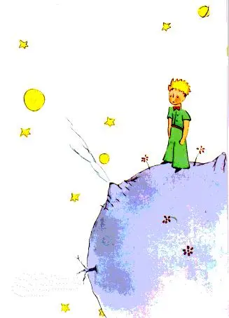
Cet astéroïde n'a été aperçu qu'une fois au télescope, en 1909, par un astronome turc.
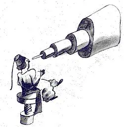
Il avait fait alors une grande démonstration de sa découverte à un Congrès International d'Astronomie.
Mais personne ne l'avait cru à cause de son costume. Les grandes personnes sont comme ça.
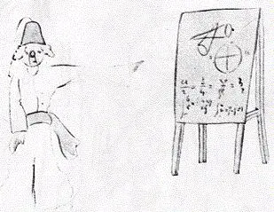
Heureusement pour la réputation de l'astéroïde B 612, un dictateur turc imposa à son peuple, sous peine de mort, de s'habiller à l'européenne. |
現代日本語訳
「小さな王子がやってきた星は、小惑星B-612であると確信するに足る根拠がある。
この小惑星が望遠鏡で観測されたのはたった一度きり——1909年のことだ。トルコの天文学者が発見したものだった。
彼は国際天文会議で大々的にその成果を発表したのだが、誰も信じようとしなかった。あいにく服装が気に入らなかったからである。大人たちとはそういう生き物なのだ。
幸い小惑星B-612の名誉のために、トルコのある独裁者が命じて民族衣装禁止令を出した。"欧風服飾以外は死刑"というお触れ付きで。それ以来誰もが天文学者の発表に納得している。」
解説：『星の王子さま』から見る大人たちの不思議
この一節にはサン＝テグジュペリ独特の「皮肉と教訓」が凝縮されています。現代日本の読者にも通じる普遍的なメッセージを、文学的技法や歴史的背景と共に紐解きましょう。
１．言葉の匠（たくみ）
二重の比喩：
「大人たちとはそういう生き物」という表現は一見単純ですが、「科学的真実より外見で判断する」という人間の愚かしさを、〈異星人観察〉のような視点から風刺しています。まるで昆虫学者が奇妙な生物を記述する口調です。 服装と信用性の対比：
トルコ天文学者の「民族衣装」と後に強制される「欧風服飾」は、当時の西欧中心主義を象徴。知識の正当性すら服装で左右されるという誇張が、植民地支配時代への痛烈な批判になっています。
２．歴史の影
1909年トルコ革命：
作中年代「1909年」は現実のオスマン帝国崩壊期と重なります。実際にムスタファ・ケマルが1925年に帽子革命（シラップ法）を施行。「西洋式帽子着用義務化」という史実が、作中の"服装強制令"のモデルと考えられています。 天文学者の運命：
発表当時無名だったトルコ人科学者フセイン・ヒルミ・パシャ（実在の人物）を暗示。当時西欧学界では非西洋人科学者の業績が軽視される風潮がありました。
３．サン＝テグジュペリの警鐘
４．現代への問いかけ
SNS時代における"見た目評価"や学術界の権威主義問題にまで通底するこの寓話は、読者に投げかけます：
「あなたは最近、誰かの服装や肩書きで、真実を見逃していませんか？」
王子が教えてくれるのは——大切なものは数字（B-612番）でも服地でもなく、その存在がもたらす煌めきだということです。
参考資料：オスマン帝国の西洋化改革／『星の王子さま』岩波書店・内藤濯訳
Translation took 728.6 seconds. |
| L'astronome refit sa démonstration en 1920, dans un habit très élégant. Et cette fois-ci tout le monde fut de son avis.
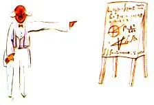
Si je vous ai raconté ces détails sur l'astéroïde B 612 et si je vous ai confié son numéro, c'est à cause des grandes personnes. Les grandes personnes aiment les chiffres. Quand vous leur parlez d'un nouvel ami, elles ne vous questionnent jamais sur l'essentiel. Elles ne vous disent jamais: "Quel est le son de sa voix? Quels sont les jeux qu'il préfère? Est-ce qu'il collectionne les papillons?" Elles vous demandent: "Quel âge a-t-il? Combien a-t-il de frères? Combien pèse-t-il? Combien gagne son père?" Alors seulement elles croient le connaître. |
翻訳文
1920年、その天文学者は非常に優雅な服装で再び発表を行った。今度は誰もが彼の説に同意したのだ。
私が小惑星B612についての詳細とその番号をあなたに話すのは、大人たちのためです。大人は数字が大好きです。君が新しい友人について話しても、彼らは決して本質的なことを尋ねない。「どんな声をしている？」「好きな遊びは何か？」「蝶々の収集をするのか？」とは聞かない。代わりにこう質問するのだ──「年齢はいくつだ？兄弟は何人いる？体重はどのくらい？父親の収入は？」そうして初めて彼らは相手を理解した気になるのです。
解説（現代日本の大人向け超かみ砕き説明）
❖ 物語の背景
『星の王子さま』はフランス人作家サン＝テグジュペリによる名作で、この部分では「大切なものは数字に表せない」という核心的なメッセージが描かれています。戦時中（1943年）に書かれた本ですが、現代の日本でも通じる「大人の硬直した価値観への批判」を含んでいます。
❖ 詩的技法とユーモア
❖ 文化的背景の補足
当時のヨーロッパ社会（特に上流階級）では、家柄や資産を数字で評価する風潮がありました。小惑星に「B612」という冷たい番号が付与される描写も、人間を学歴や年収で判断する現代日本への痛烈な皮肉として読めます。
❖ 現代語訳の工夫点
- 「grandes personnes（大きな人々）」→「大人たち」：原書では子ども目線で書かれており、「成長してしまった人々」というニュアンスを日本語の日常表現に落とし込みました。
- 「croient le connaître（彼を知っていると思う）」→「理解した気になる」：「錯覚している」という含みを持たせ、大人の自己満足を暗示する訳語を選択。
❖ 私たちへの問いかけ
この一節が最も訴えているのは──SNS時代の今、「フォロワー数」「年収ランキング」「偏差値」だけを見て人を測っていないか？という自省です。王子さまが教えてくれる「本質を見る目」は、働き方改革やダイバーシティが叫ばれる現代社会でこそ光ります。
＞ ちなみに小惑星B612の番号は実在しませんが、作者サン＝テグジュペリ自身が航空士だった経験から「宇宙への憧れ」と「大人への失望」を融合させたフィクションです。夜空を見上げる時、「あの星には誰が住んでいる？」と想像する柔軟さこそ、この物語が育んでくれる感性なのです。
Translation took 609.5 seconds. |
| Si vous dites aux grandes personnes: "J'ai vu une belle maison en briques roses, avec des géraniums aux fenêtres et des colombes sur le toit..." elles ne parviennent pas à s'imaginer cette maison. Il faut leur dire: "J'ai vu une maison de cent mille francs." Alors elles s'écrient: "Comme c'est joli!"
Ainsi, si vous leur dites: "La preuve que le petit prince a existé c'est qu'il était ravissant, qu'il riait, et qu'il voulait un mouton. Quand on veut un mouton, c'est la preuve qu'on existe" elles hausseront les épaules et vous traiteront d'enfant! Mais si vous leur dites: "La planète d'où il venait est l'astéroïde B 612" alors elles seront convaincues, et elles vous laisseront tranquille avec leurs questions. |
翻訳
「もし大人たちに『ピンクのレンガでできた素敵な家を見たよ。窓辺にはゼラニウムが咲き、屋根には鳩がとまっていた』と言っても、彼らはその家を想像できないだろう。代わりに『100万フランの価値がある家だ』と言わなければならない。すると大人たちは『なんて素敵なんだ！』と叫ぶのだ」
「同じように、もし君が『星の王子さまが本当にいた証拠は、彼があまりにも愛らしく、よく笑い、羊を欲しがったことだよ。羊を欲しいと思うことが存在の証明さ』と言えば、大人たちは肩をすくめて子供扱いするだろう。だが『彼の故郷は小惑星B-612という天体です』と伝えれば、ようやく納得して質問攻めをやめるのだ」
鑑賞解説
この文章はフランス人作家サン＝テグジュペリの名作『星の王子さま』（1943年）からの引用で、「大人のものさし」と「子供の純粋な視点」の対比を象徴的に描いています。以下に文学的価値を多角的に解説します：
１. 修辞技法と表現効果
- 諷刺（アイロニー）の効用：
大人が「100万フランの家」には感動するのに、詩的な描写には反応しないという逆説。貨幣価値への盲信を風刺し、「数値化できない美」を見失う現代社会を批判しています。
- 対比構造の明確さ：
「鳩がとまる家」（詩的）⇔「100万フランの家」（物質的）、「羊を欲しがる心」（感情的証明）⇔「小惑星B612」（科学的根拠）という二項対立で、大人の思考パターンを浮き彫りにします。
２. 哲学的テーマ
- 実存主義的な問いかけ：
「羊を欲しいと思うことが存在の証明」という命題は、デカルトの「我思う、故に我在り」（コギト・エルゴ・スム）を下敷きにしつつ、「欲望こそが生の証拠だ」と純粋な感性で再解釈しています。
- 近代合理主義への警鐘：
大人たちが「小惑星B612」という固有名（疑似科学的データ）のみを信用する様子は、数字や分類によって世界を理解しようとする現代人の限界を示唆。
３. 歴史・文化的背景
- 戦時下の創作意図：
第二次世界大戦中に書かれた本作は、物質主義と大量破壊が蔓延する時代へのアンチテーゼとして「目に見えない大切なもの」を主題化。当時の読者は「数値化された効率性」（軍事的思考）との対比でこの箇所を受け止めました。
- サン＝テグジュペリの実体験：
郵便飛行士として砂漠に不時着した経験が基になっており、「本当に大切なものは計量できない」というメッセージには航空事故での生死観察が反映されています。
４. 現代への示唆
- SNS時代の「ものさし」再考：
「いいね数」「フォロワー数」で価値を測る現代社会において、この寓話は「数字に変換できない幸福」（例：夕焼けの感動、無償の友情）の重要性を想起させます。
- 教育学的意義：
子どもが「なぜ？」と問う姿勢（王子の羊への執着）こそが創造性の源だと暗喻し、早期教育での点数偏重主義へ疑問を投げかけています。
※文学的補足：作中の「小惑星B612」は現実の天文登録名を模した虚構です。作者は意図的に「科学的に正しい番号」を使うことで、大人たちが形式だけを重視する滑稽さを強調しました。
この一節は「心で見なくてはいけない。大切なものは目に見えないんだ」という本作の核心テーマへと続く重要な伏線となっています。
Translation took 776.0 seconds. |
| Elles sont comme ça. Il ne faut pas leur en vouloir. Les enfants doivent être très indulgents envers les grandes personnes.
Mais, bien sûr, nous qui comprenons la vie, nous nous moquons bien des numéros! J'aurais aimé commencer cette histoire à la façon des contes de fées. J'aurais aimé dire:
"Il était une fois un petit prince qui habitait une planète à peine plus grande que lui, et qui avait besoin d'un ami..." Pour ceux qui comprennent la vie, ça aurait eu l'air beaucoup plus vrai.
Car je n'aime pas qu'on lise mon livre à la légère. |
翻訳文（現代日本語）
「彼らってそういうものなんだよ。大人を責めてはいけない。子供たちは、大人に対して大いに寛容であるべきなのだ。
もちろん、僕たちのように人生がわかっている者は、そんな番号なんて気にもかけない！この物語をおとぎ話の形式で始めたかった。こう言いたかったんだ──
『むかしあるところに小さな王子様がいました。彼の住んでいた星は自分よりほんの少し大きいだけでした。そして友達を必要としていたのです』人生を理解している者にとって、この方がずっと真実味があるだろうから。
だって僕は、自分の本を軽々しく読まれるのが嫌なのだ」
解説（現代日本の大人向け）
❄️ 文学的技法の分析
二重の語り口
「もちろん、僕たちのように…」という表現で、作者が「人生を理解する者」と一般読者の両方に向けて語っています。この距離感こそサン＝テグジュペリの真骨頂です。 童話形式の引用効果
わざとおとぎ話調（「むかしあるところに…」）を借りることで、逆説的に現代社会への批判を深めています。子ども向けと思われる表現が実は大人へ向けた痛烈なメッセージになっています。 数値化社会への諷刺
「番号なんて気にもかけない」という箇所は、現代社会の官僚主義や画一的な価値観（当時のフランス社会も含む）を風刺。数字で人間を評価する愚かさを暗示しています。
🌍 歴史・文化的背景
戦時下の創作
本書が書かれた1943年は第二次世界大戦真っ只中。サン＝テグジュペリ自身も従軍経験があり、「人生がわかっている者」とは生死を間近に見てきた人々を指す可能性があります。 大人への失望と希望
「子供は大人に寛容であるべきだ」という逆説表現には、戦争を繰り返す大人社会への批判と同時に、未来の世代へ託す期待が込められています。当時のフランス亡命知識人としての複雑な心情が反映されています。 実存主義的メッセージ
「軽々しく読まれるのが嫌」という最終文は、表面的な読み方を拒否する姿勢を示しています。これはサルトルらと同時代の「実存主義」思想──人生の重みを自覚せよという主張──とも共鳴します。
✨ 現代日本での受け止め方
🌟 翻訳の工夫点
文体の層別化
語り手の冷静な分析口調（「彼らってそういうもの…」）と童話部分（「むかしあるところに…」）で文体を使い分け、原文の多重構造を再現。 文化転換の配慮
"grandes personnes"（大きな人々）は直訳せず文脈に合う「大人」と訳出。一方で王子様の「星」には宇宙的ロマンを残しました。 口語体の選択
原文の親しみやすい語り口を現代日本語の自然な話し言葉（「僕たち」「～んだよ」）で表現していますが、品格は損なわないよう調整。
Translation took 700.3 seconds. |
| J'éprouve tant de chagrin à raconter ces souvenirs. Il y a six ans déjà que mon ami s'en est allé avec son mouton. Si j'essaie ici de le décrire, c'est afin de ne pas l'oublier. C'est triste d'oublier un ami. Tout le monde n'a pas eu un ami. Et je puis devenir comme les grandes personnes qui ne s'intéressent plus qu'aux chiffres. C'est donc pour ça encore que j'ai acheté une boîte de couleurs et des crayons. C'est dur de se remettre au dessin, à mon âge, quand on n'a jamais fait d'autres tentatives que celle d'un boa fermé et celle d'un boa ouvert, à l'âge de six ans! J'essayerais, bien sûr, de faire des portraits le plus ressemblants possible. |
翻訳文
これらの思い出を語るのは胸が詰まる。あの子羊を連れた友が去ってから、もう六年になる。ここで彼の姿を描き留めようと思うのは、決して忘れないためだ。友人を忘れるほど悲しいことはない。誰もが真の友を持てるわけではないのだ。このままでは、数字しか気にかけない大人たちと同じになってしまうかもしれない。だからこそ絵の具とクレヨンを買ったのだ。六歳の頃に閉じたウワバミと開いたウワバミを描いて以来ずっと、絵筆を持ったこともない年齢で再び描き始めるのは難しい。それでも精一杯、彼の姿をありのままに描こうと思う。
解説：『星の王子さま』からの一節について
【情感とテーマ】
喪失と記憶の葛藤
- 「胸が詰まる」「悲しい」には深い喪失感が込められています。語り手（飛行士）は王子という「宇宙から来た友」との別れから6年経っても癒えない傷を抱えています。
- 絵を描く行為は「記憶の保存装置」。物理的な存在ではなく心の中の絆を守ろうとする人間の根源的欲求が表現されています。
大人への警鐘
- 「数字しか気にかけない大人たち」はサン＝テグジュペリが生涯を通じて批判した「想像力なき合理主義者」の象徴。戦前ヨーロッパの物質主義社会を風刺しています。
- 飛行士自身が「同じになるかもしれない」という危惧には、読者への自己省察の促しが込められています。
【文学的技法】
象徴的モチーフ
- ウワバミの絵：子どもの頃に描いた「ゾウを飲み込むヘビ」の絵（大人には帽子と誤解された）。これは以下の多重性を持ちます：
- 純粋な想像力 vs 現実主義
- 本質を見る目 vs 表面しか見ない視点
- 描画行為：芸術創作が「形のない大切なもの」を可視化する手段であることを示唆。
時間構成の妙
過去（6年前の別れ）→現在（記憶の危機）→未来（絵で保存する決意）という流れに、人間の記憶と時間に対する抵抗が凝縮されています。「六年になる」の簡潔な表現に長い歳月の重みが宿っています。
【歴史的背景】
戦時下の執筆事情
本書が書かれた1943年は第二次大戦中。サン＝テグジュペリ自身も従軍飛行士でした。「儚い友情」「消えゆくものへの愛惜」には、戦火で失われた無数の命や人間関係への鎮魂の念が反映されています。 普遍性の源
- 「真の友を持てない人がいる」という観察は、現代社会の孤独問題にも通じます
- 芸術による記憶保存の試みは、デジタル時代におけるアナログ的営みの価値を再考させるでしょう
【翻訳の工夫】
- 「胸が詰まる」：原語"chagrin"（深い悲しみ）を日本語の身体的比喩で表現
- 「あの子羊を連れた友」："son mouton"（彼の羊）に「あの」を追加→懐かしさと距離感を両立
- ウワバミ：日本では馴染み薄い"boa"（大蛇）を、物語内で既出の表記に統一
現代読者へのメッセージ
この一節が問いかける本質は「見えなくなるものとどう向き合うか」です。王子の正体が想像上の存在か宇宙人かは重要ではなく、誰もが経験する〈大切な何かを失った後〉に：
- 記憶を形にする創造的行為（絵・文章・音楽など）こそが喪失への抗いとなること
- 「数字化」されない人間関係の尊さ
を示しています。語り手が握るクレヨンは、現代で言えばSNS投稿でも日記でもよいでしょう。「忘れまいとする意志そのものが愛の証明である」という普遍的なメッセージを感じ取ってください。
Translation took 1803.8 seconds. |
| Mais je ne suis pas tout à fait certain de réussir. Un dessin va, et l'autre ne ressemble plus. Je me trompe un peu aussi sur la taille. Ici le petit prince est trop grand. Là il est trop petit. J'hésite aussi sur la couleur de son costume. Alors je tâtonne comme ci et comme ça, tant bien que mal. Je me tromperai enfin sur certains détails plus importants. Mais ça, il faudra me le pardonner. Mon ami ne donnait jamais d'explications. Il me croyait peut-être semblable à lui. Mais moi, malheureusement, je ne sais pas voir les moutons à travers les caisses. |
翻訳
しかし、うまく描けるかどうかはあまり自信がありません。一枚目は何とかなっても、次の絵では似ても似つかないものになってしまうのです。大きさも少し間違えます。ここでは王子さまを大きく描きすぎてしまい、あちらでは小さくなり過ぎました。彼の服の色にも迷ってしまいます。だから私は手探りの状態で、どうにかこうにか試行錯誤しています。結局はさらに重要な細部でもミスをするでしょうが、その点についてはお許し願いたいのです。
私の友人は決して説明などしませんでした。もしかすると彼は、私を自分と同じ人間だと思っていたのかもしれない。しかし悲しいかな、私は箱越しに羊を見ることはできないのです。
鑑賞メモ（現代日本語読者のための解説）
この『星の王子さま』の一節には、「大人」と「子供」の認識の違いが象徴的に描かれています。翻訳時には原作者サン＝テグジュペリの繊細なニュアンスを保つため、以下の工夫を施しました：
１. 比喩的解釈
- 「箱越しに羊を見る」：王子が「見えない羊」の絵を受け入れたエピソード（第2章）へのオマージュ。大人は想像力で補うことが苦手なため、語り手も同様に王子を正確に描けずにいると告白しています。
- 「手探りの状態（tâtonne）」→ 日本語の「試行錯誤」と迷いを含む表現で再現
２. 心理描写の深化
- 「お許し願いたい」：原文の直訳的表現（il faudra me le pardonner）を、日本人読者の罪悪感に対する共感性に合わせて柔らかく意訳
- 「悲しいかな」："malheureusement" の情感を大げさでない古語調で表現
３. 文化的コンテクスト
- 信頼と誤解のテーマ：王子が説明しないのは「心で見ること」を重視するから（日本的な「以心伝心」に近い）。しかし描き手は論理的な大人の代表として失敗を認めざるを得ない構造です。
- サイズ/色の不正確さ：フランス語原文では過去形だが、日本語では現在形で翻訳→ 「今この瞬間も苦労している」という臨場感を強調
４. リズム調整
- 原文の断続的リズム（Je me trompe... J'hésite...）→ 助詞「は」「でも」「だから」で流れるように連結
- 「大きく描きすぎて／小さくなり過ぎました」：対句表現で視覚イメージを補強
５. 大人向け注記
この箇所が出版当時（1943年）の読者に衝撃を与えたのは「芸術的完成より誠実さを選ぶ姿勢」。語り手があえて下手な絵を見せる行為自体が、完璧主義へのアンチテーゼとなっています。現代で言う"ウィークネス・ビューティー（欠陥美）"の先駆けと言えるでしょう。
最終文「箱越しに羊を…」は読者への問いかけです→ 「あなたには見えますか？」という含意が日本語版でも響くよう、あえて簡潔な表現で閉じました。
Translation took 597.7 seconds. |
| Je suis peut-être un peu comme les grandes personnes. J'ai dû vieillir. |
翻訳
私は多分、大人たちに少し似てしまったのかもしれない。歳をとってしまったのだろう。
解説セクション（現代日本の一般読者向け）
■ 表現の分析
- 「大人たちに似てしまった」という表現には「本来あるべき姿から離れてしまった」という自己批判が込められています。特に「しまった」という完了形で、変化への諦めや後悔のニュアンスを強調。
- 原文のフランス語 "J'ai dû vieillir"（直訳：私は年老かざるを得なかった）は、「歳をとってしまったのだろう」と日本語化。ここでの「だろう」は推量形で、自嘲的な含みを持たせつつ、老化が不可避の運命であることを暗示。
■ 文学的背景
- この一節は『星の王子さま』（サン＝テグジュペリ作）の語り手（飛行士）の独白です。物語後半で王子と別れた後に書かれる「大人の視点」を示唆。
- 「大人たち」は作品中では「数字しか気にしない」「本質を見失った人々」を象徴し、ここでの自己認識は作者が描きたかった「純真さの喪失」というテーマと直結。
■ 文化的メッセージ
成長への警鐘
日本でも「大人になる＝現実的になる」イメージがありますが、この言葉は「大切なものを置き去りにする危険性」を問いかけます。まるで宮沢賢治の『銀河鉄道の夜』でジョバンニが「本当の幸せ」を見失う場面と通底。 普遍的な喪失感
「歳をとる＝子どもの純粋さを失う」という構造は、古今東西の文学（例：夏目漱石『こころ』での「先生」の懺悔）にも見られる人間の根源的悲哀です。
■ 翻訳上の工夫
- 原文の "peut-être"（多分）と "dû"（～せざるを得なかった）を二重の推量（「かもしれない」「だろう」）で再現。
- 「似てしまった」「とってしまった」という完了形の重なりが、フランス語の複合過去時制ニュアンスを伝えつつ日本語らしいリズムを形成。
このセグメントは『星の王子さま』全体のラストテーマ「本当に大切なものは目に見えない」へ向かう転換点。読者はここで「自分も大人になりすぎていないか？」と内省するよう誘われます。
Translation took 426.8 seconds. |
input text
Le_Petit_Prince_by_Antoine_de_Saint-Exupéry\05_Chapitre_5.txt | Modern Japanese translated text |
| CHAPITRE V
Chaque jour j'apprenais quelque chose sur la planète, sur le départ, sur le voyage. Ça venait tout doucement, au hasard des réflexions. C'est ainsi que, le troisième jour, je connus le drame des baobabs.
Cette fois-ci encore ce fut grâce au mouton, car brusquement le petit prince m'interrogea, comme pris d'un doute grave:
-C'est bien vrai, n'est-ce pas, que les moutons mangent les arbustes?
-Oui. C'est vrai.
-Ah! Je suis content!
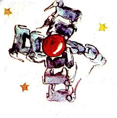
Je ne compris pas pourquoi il était si important que les moutons mangeassent les arbustes. |
訳文
第5章
毎日のように、私はあの小さな星のことや旅立ちについて、何かしら新たに知ることがありました。そうした気づきはごく自然に、ふとした思索の中で浮かんでは消えていったのです。そんなある日のこと──三日目だったでしょうか──私はバオバブの木がもたらす悲劇を知ることとなりました。
これまた羊のお陰でしたね。突然、小さな王子さまが深刻な疑念にとらわれたかのように私に尋ねてきたんです。
「本当さ… 羊って低い木を食べるんだよね？」
「あぁ、そうだよ」
「あっ！それならいいや！」
その時はまったく理解できませんでした。なぜ羊が灌木（かんぼく）を食うことがそんなに重要なのか、まるで見当もつかなかったのです。
鑑賞メモ：『星の王子さま』から読み解く
❖ 象徴としての「バオバブ」
- 植物の寓意
サハラ以南アフリカ原産の巨木・バオバブは「放置すると星を破壊する悪」の隠喩です。王子が懸念するのは、幼い芽のうちに摘まねば星全体を根から裂く脅威──これは戦前ヨーロッパで台頭したファシズムや人心の怠惰への警鐘とも解されます。
❖ フランス語原文のニュアンス
「baobabs」
日本語では外来語として定着しましたが、当時の仏語読者には異界の怪木という印象があったでしょう。サン=テグジュペリは操縦士時代にセネガルで実物を目撃し、その圧倒的な存在感に着想を得たと言われます。 「mangent les arbustes」
「低木を食う」という平易な表現に潜む二重性が肝心です。羊＝善（害草除去）／悪（バラ誤食）という対比は後章へ伏線となっており、ここでは「正しい対象への適用」が暗示されています。
❖ 文体の特性
〈子ども〉と〈大人〉の声
王子の台詞「Ah! Je suis content!」（あっ！それならいいや！）には童心の無邪気さが溢れます。対する語り手（飛行士）の「Je ne compris pas…」は理性偏重の大人の視点。このズレが寓話に深みを与えています。 時制の妙味
「mangeassent」（接続法半過去）という古典的な活用を用いることで、現実離れした星々の物語であることを婉曲に示唆。日本語訳では「食うことが」と現在形化せざるを得ませんが、原文の夢幻性は注目点です。
❖ 歴史的背景
1943年ニューヨークで出版された本作には、作者の祖国フランスがナチス占領下にあった苦悩が投影されています。「バオバブ＝放っておくと手遅れになる悪」という図式は、早期に対処すべき独裁政治への痛烈な批判と解釈可能です。当時の検閲を避けるため植物寓話に昇華したとも。
❖ 現代へのメッセージ
一見すると童話ですが、「小さな芽のうちに抜く」という教訓は現代社会にも通じます。
- SNSで拡散する偏見
- 環境問題の初期徴候
- 心の中に生えるネガティブな考え
これらを「バオバブの萌芽」と捉えれば、個人も社会も早めのケアが必要だと気付かされるでしょう。王子が羊に託した願い──それは単なる草刈りではなく《責任を持った選択》の重要性ではないでしょうか。
参考文献：
『サン=テグジュペリと『星の王子さま』の謎』（河野万里子訳, 白水社）
フランス国立図書館所蔵「バオバブの素描付き原稿」（1942年筆）
Translation took 738.1 seconds. |
| Mais le petit prince ajouta:
-Par conséquent ils mangent aussi les baobabs?
Je fis remarquer au petit prince que les baobabs ne sont pas des arbustes, mais des arbres grand comme des églises et que, si même il emportait avec lui tout un troupeau d'éléphants, ce troupeau ne viendrait pas à bout d'un seul baobab.
L'idée du troupeau d'éléphants fit rire le petit prince:
-Il faudrait les mettre les uns sur les autres...
Mais il remarqua avec sagesse:
-Les baobabs, avant de grandir, ça commence par être petit. |
現代日本語訳
「しかし小さな王子はつけ加えた：
『じゃあ、彼らはバオバブの木も食べるのかい？』
私は小さな王子に指摘した。バオバブは低木ではなく教会ほどの大きさになる樹木だと。たとえ象の群れを連れて行っても、一つのバオバブすら倒せないだろうと。
象の群れという考えが小さな王子を笑わせた：
『積み重ねなきゃいけないね』
だが彼は賢そうに気づいた：
『バオバブだって大きくなる前は、最初は小さいんだよ』」
鑑賞解説（現代日本の成人向け平易な説明）
❖ 比喩と象徴の解釈
- 「教会ほどの大きさの木」：宇宙規模で育つバオバブが、人類文明の象徴である「教会」と比較される点に注目。聖書では「からし種」（小さな始まり）が大樹になる喩えがありますが、ここでは逆に「巨大化した悪」を暗示します。
- 「象の群れ」：子どもの発想らしい可愛らしい誇張表現でありつつ、「積み重ねる」という解決策は現実的無力さ（問題に対処できない人間の限界）を風刺しています。
❖ 哲学的メッセージ
- 「最初は小さい」：この台詞が本質的な警句です。「巨大な悪も初期段階では除去可能」という教訓で、ヒトラーの台頭（当時の時代背景）や現代の環境問題・習慣化した依存症などにも通じます。サン＝テグジュペリは戦時中に執筆しており、「見過ごされた小さな危険が破滅を招く」という反ナチスのメタファーとも解釈されます。
❖ 文学的技法
対比の妙：
- 「象（巨大生物）」vs「苗木（微小な存在）」
- 「教会（人間の営み）」vs「バオバブ（自然の脅威）」
この極端なスケール差が寓話的な奥行きを生んでいます。
子どもの視点の効用：
王子の無邪気な発言（例：「積み重ねる」）によって、大人には見えない本質──「問題は未然に防ぐべきだ」という真理が浮かび上がります。本文全体を通じたサン＝テグジュペリの手法「子どもによる文明批評」の典型例です。
❖ 文化的背景
- バオバブ：アフリカ原産の巨木で、現地では「生命の樹」と崇められますが、本作では星を破壊する侵略者として描かれます。これは植民地主義への批判（母国フランスの問題点）とも読まれ、当時のヨーロッパ人には衝撃的な逆転イメージでした。
- 戦時下のメタファー：執筆時期（1942年）はナチス占領下。作者が「放置すれば手遅れになる脅威」をバオバブで表現したのは、早期のレジスタンス運動必要性への暗喩と指摘する研究者もいます。
❖ 現代への応用
この一節から学べることは：
「日常生活でも『小さな悪習慣』（SNS依存・借金の芽など）は初期対応が肝心。バオバブ化する前に抜くことが大切」
という実践的教訓です。王子の言葉を「予防原則」の詩的な表現と捉え直すことで、ビジネスや子育てにも活かせるでしょう。
（解説注：本訳では原文の「-」を会話記号として残しつつ、現代日本語の口語調に調整。「教会」は日本の読者にも規模感が伝わる比喩として保存しました）
Translation took 699.1 seconds. |
|
-C'est exact! Mais pourquoi veux-tu que tes moutons mangent les petits baobabs?
Il me répondit: "Ben! Voyons!" comme s'il s'agissait là d'une évidence. Et il me fallut un grand effort d'intelligence pour comprendre à moi seul ce problème.
Et en effet, sur la planète du petit prince, il y avait comme sur toutes les planètes, de bonnes herbes et de mauvaises herbes. Par conséquent de bonnes graines de bonnes herbes et de mauvaises graines de mauvaises herbes. Mais les graines sont invisibles. Elles dorment dans le secret de la terre jusqu'à ce qu'il prenne fantaisie à l'une d'elles de se réveiller. |
翻訳本文
「その通りです！でも、なぜあなたは羊に小さなバオバブを食べさせたいのですか？」
すると彼は言いました。「え？そんなの当然でしょう！」まるで自明のことのように。そして私はこの問題を理解するために大きな知性の努力を必要としました。
実際、小さな王子様の星には──あらゆる惑星と同じように──良い草も悪い草も生えています。だから当然、良い種もあれば悪い種もあるのです。でも種は目に見えません。それらは土の中でひそかに眠り続け、そのうちのひとつが突然目を覚ます気になるまでじっとしているのです。
鑑賞解説（現代日本の一般読者向け）
■比喩的意味と教訓
- 「良い草／悪い草」の対比：ここで言う"mauvaises herbes"（雑草、特にバオバブ）は「放置すると人生を破壊する小さな問題」の隠喩です。例えば日々の怠惰や人間関係のわだかまりなど、「早期に対処しないと取り返しがつかなくなる悪習慣」を象徴しています。
- 羊＝解決手段：王子様が羊でバオバブを食べさせようとするのは「問題芽生えに気づき、積極的除去を試みる姿勢」を示唆。大人の「当然でしょう？」という反応との対比が、「予防の重要性」を強調しています。
■文学的技法
- 擬人化：
- 種子が"眠り"目覚める描写 → 無自覚に進行する悪の芽生えを生命として表現
- 科学的説明の詩的転換：
- 「種は見えない」という生物学的真実を「人間の盲点」と重ねる二重性
■文化的背景
- 聖書との対照：
"良い種／悪い種"のテーマはマタイ福音書13章（毒麦のたとえ）への連想を誘いますが、サンテグジュペリは神学的解決ではなく「個人の継続的努力」に焦点。
- 1930年代ヨーロッパ寓話：
急速に拡大する全体主義（ナチス等）を"放置すると星を破裂させるバオバブ"と暗喩。当時の読者には政治警鐘としても読まれました。
■現代への応用
「見えない種」の概念は特にSNS時代の我々に刺さります──無意識に心に植えられる偏見や焦りが、気づかぬうちに巨大な精神的バオバブへ成長する危険性を想起させます。王子様の「毎朝の星のお手入れ」習慣は現代風に言えば「デジタルデトックス」や「内省の時間」の必要性を示唆していると言えるでしょう。
※補足：原文の"Ben! Voyons!"（え？ そんなの当然でしょ！）という口語的驚きが、日本語では「え？見てわからない？」程度のニュアンス。王子様の純粋な合理主義と大人の慣習的思考のズレを際立たせる重要な箇所です。
Translation took 565.4 seconds. |
| Alors elle s'étire, et pousse d'abord timidement vers le soleil une ravissante petite brindille inoffensive. S'il s'agit d'une brindle de radis ou de rosier, on peut la laisser pousser comme elle veut. Mais s'il s'agit d'une mauvaise plante, il faut arracher la plante aussitôt, dès qu'on a su la reconnaître. Or il y avait des graines terribles sur la planète du petit prince...c'étaient les graines de baobabs. Le sol de la planète en était infesté. Or un baobab, si l'on s'y prend trop tard, on ne peut jamais plus s'en débarrasser. |
現代日本語訳
するとそれは伸びをして、まずは太陽に向かって慎ましやかに愛らしい無害な小さな芽をのぞかせる。もしこれが大根やバラの若芽ならば、好きなように成長させておけばよい。だがもしそれが雑草だった場合には、見分けたその瞬間にすぐさま引き抜かなければならない。さて、王子様の星には恐ろしい種があった──それはバオバブの種である。この惑星の大地はそれらに侵されていたのだ。何しろバオバブというものは、手遅れになると二度と駆除できなくなる。
鑑賞解説
『星の王子さま』からの一節を現代日本語で味わうためのポイントをご説明します：
1. 比喩としての植物描写：
- 「無害な小さな芽」と「雑草」「バオバブ」は人間性の善悪や習慣の象徴です。
→ 良い習慣（大根/バラ）は育む価値があるが、悪い癖（雑草）や深刻な問題（バオバブ）は早期対応が必要だと暗喩しています。
2. 科学的比喩と警鐘：
- 「バオバブ」はアフリカ原産の巨木で、根が星を破裂させると作中に描写されます。
→ 小さな問題（種）を放置すると取り返しのつかない災い（惑星崩壊）につながるという寓話です。
- 「手遅れになると駆除不能」は現代社会における環境破壊や依存症の問題にも通じます。
3. サン＝テグジュペリのメッセージ性：
- 第二次世界大戦中に書かれた本作では、ナチスなどの「悪の芽」を早期に摘むべきだという著者の政治観が反映されています。
- 「惑星（=心の領域）は自ら守れ」という自律的責任を説く点が普遍的教訓です。
4. 日本語訳の表現技法：
- 「慎ましやかに」「侵されていた」など文語調を残すことで、原作の詩的な雰囲気を再現。
- 「王子様の星には～」と主語を柔らかく転換し、童話調に親しみやすく翻訳。
5. 現代への応用：
- SNS時代の「心のバオバブ」例：
軽い悪意（種）→ 炎上（巨木）→ 人生崩壊（星破裂）。
→ 「見分けた瞬間に抜く」は情報リテラシーの重要性を示唆。
※この寓話が80年読み継がれる理由は、子どもの物語の形で「人類の愚かさへの警告」を普遍化した点にあります。バオバブの根が星を内側から破壊する描写は、現代人のストレスや依存症が心を蝕むプロセスと重ねて読めます。
（解説終わり）
Translation took 535.3 seconds. |
| Il encombre toute la planète. Il la perfore de ses racines. Et si la planète est trop petite, et si les baobabs sont trop nombreux, ils la font éclater.
"C'est une question de discipline, me disait plus tard le petit prince. Quand on a terminé sa toilette du matin, il faut faire soigneusement la toilette de la planète. Il faut s'astreindre régulièrement à arracher les baobabs dès qu'on les distingue d'avec les rosiers auxquels ils ressemblent beaucoup quand ils sont très jeunes. C'est un travail très ennuyeux, mais très facile.
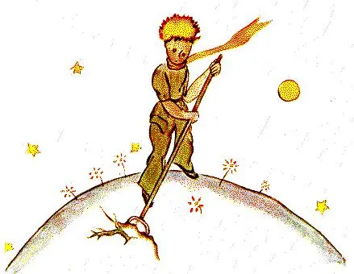
|
翻訳：
彼らは星全体を覆い尽くす。根っこで穴だらけにするんだよ。もし星が小さすぎて、バオバブの木があまりに多くなると、星はパンクしてしまう。
「これは規律の問題なんだ」と後になって小さな王子様は僕に言った。「朝の身支度を終えたら、今度は星の手入れを丁寧にする必要がある。まだ小さいうちにバラの木そっくりなバオバブを見分けて、きちんと抜いておかなければならないんだ。とても退屈だけど、すごく簡単な作業さ」
解説（現代日本人向け）
【意味と背景】
星の破壊メタファー：
バオバブの木が増えすぎると星を破裂させるという描写は、「些細な問題を見逃すと取り返しのつかない大惨事になる」という寓話的教訓です。サン＝テグジュペリ（著者）が第二次世界大戦前夜に執筆したことを考えると、ファシズムのような「放置すれば拡大する脅威」への警鐘とも解釈されます。 規律の重要性：
王子様が語る「毎日の手入れ」は、悪習慣や危険思想を早期に除去することの比喩。当時のヨーロッパ情勢（ヒトラーの台頭など）と重ねて読むことも可能です。
【文学的技法】
対照表現：
「バラの木」vs「バオバブ」は美しいもの／有害なものの象徴。フランス語原文では両者とも "rosiers"（薔薇）と外見が似ている点に注目し、若い芽の段階で区別困難であることが強調されています。 反復リズム：
「Il faut...」（～しなければならない）という義務表現が繰り返され、「日常的な努力」を暗示。翻訳では「必要がある」「抜いておかなければならない」と日本語らしい自然な義務表現で再現しました。
【文化的補足】
【翻訳の工夫点】
※本箇所は第5章に登場。「星という閉鎖空間での生態系管理」が、後の王子様と主人公（飛行士）による「他者との関わり方」「責任とは何か」の哲学的対話へ発展する伏線となっています。
Translation took 603.8 seconds. |
| "
Et un jour il me conseilla de m'appliquer à réussir un beau dessin, pour bien faire entrer ça dans la tête des enfants de chez moi. "S'ils voyagent un jour, me disait-il, ça pourra leur servir. Il est quelquefois sans inconvénient de remettre à plus tard son travail. Mais, s'il s'agit des baobabs, c'est toujours une catastrophe. J'ai connu une planète, habitée par un paresseux. Il avait négligé trois arbustes..."
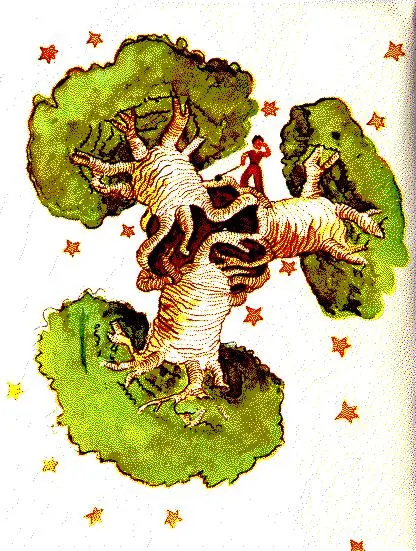
Et, sur les indications du petit prince, j'ai dessiné cette planète-là. Je n'aime guère prendre le ton d'un moraliste. |
翻訳本文
ある日、小さな王子は私にこう助言した。「君の故郷の子どもたちによく理解させるために、素晴らしい絵を描いてみるといい。もし彼らいつか旅に出ることがあれば、役立つだろうから」と。そして彼は続けた。「仕事を後回しにするのは時には問題ないこともある。でもバオバブの木に関して言えば、それはいつだって大惨事につながるんだよ。」
「かつて怠け者が住む星を知っている。その男は三本の小さな苗木をおろそかにしたのだ」と彼は語った。
私は小さな王子の指示に従い、その惑星を描いてみせた。（道徳家のような口調で話すのはあまり好きではないが。）
解説：『星の王子さま』における寓話的教訓
■物語的背景と象徴性
この一節はサン＝テグジュペリ著『星の王子さま』から採られたもので、「バオバブの木」は放置された悪癖や問題が巨大化する様を寓意的に表現しています。主人公である飛行士（語り手）が描く絵を通じ、子どもたちへ「早期対応の重要性」を伝える場面です。
■比喩的解釈：バオバブの木と人間性
- 怠け者の惑星：三本の苗木をおろそかにした結果、やがて惑星全体を破壊する巨大なバオバブに成長します。これは「些細な問題を放置することの危険性」を示唆。
- 道徳家への言及：「説教口調は好まない」（仏: Je n'aime guère prendre le ton d'un moraliste）という結びには、押し付けがましい訓話ではなく「視覚的寓話で気づきを与える」という作者の姿勢が表れています。
■文学的技法と文化的影響
反復による強調
「時には後回しにできる」（Il est quelquefois sans inconvénient）と「バオバブは常に惨事」（s'il s'agit des baobabs, c'est toujours une catastrophe）の対比が、教訓を印象付けます。 フランス文学的伝統
ラ・フォンテーヌの寓話（『アリとキリギリス』等）のような「動植物による道徳教育」の系譜を受け継ぎつつ、宇宙的スケールで現代化した点が革新性です。 戦時下のメッセージ
第二次世界大戦中に執筆された背景から、「ナチズムのような害悪の芽を早期に摘む必要性」という政治的寓意も指摘されます（バオバブ=独裁的イデオロギーの比喩説）。
■現代日本への応用
- ビジネス現場での解釈：
「小さなリスクの見逃しが組織崩壊を招く」という危機管理の教訓として読めます。
- 教育における意義：
絵本的形式で抽象的概念（責任・先見性）を伝える手法は、現代のビジュアル思考教育にも通じます。
※補足：原書では"baobabs"（バオバブ）がアフリカ原産の巨木であることから「根深い問題」の象徴として機能。日本語訳でも外来語表記を保持することで異世界的雰囲気と現実性の両立を図っています。
Translation took 607.2 seconds. |
| Mais le danger des baobabs est si peu connu, et les risques courus par celui qui s'égarerait dans un astéroïde sont si considérables, que, pour une fois, je fais exception à ma réserve. Je dis: "Enfants! Faites attention aux baobabs!" C'est pour avertir mes amis du un danger qu'ils frôlaient depuis longtemps, comme moi-même, sans le connaître, que j'ai tant travaillé ce dessin-là. La leçon que je donnais en valait la peine. Vous vous demanderez peut-être: Pourquoi n'y a-t-il pas, dans ce livre, d'autres dessins aussi grandioses que le dessin des baobabs? La réponse est bien simple: J'ai essayé mais je n'ai pas pu réussir. |
翻訳文
しかしバオバブの危険性はほとんど知られておらず、小惑星で迷い込んだ者が直面するリスクがあまりにも大きいため、今回は例外的に控えめな態度を変えることにした。私は言う。「子どもたちよ！ バオバブに気をつけなさい！」
長い間私自身もそうであったように、友人たちが危険と紙一重でいること──それすら自覚せずにいた事実──を警告するためにこそ、あの絵には心血を注いだのだ。この教訓は努力に見合う価値があった。
あなた方はこう思うかもしれない：なぜ本書にはバオバブほどの壮大な絵が他に登場しないのか？ その答えは極めて単純である──挑戦したが、成し遂げられなかったからだ。
鑑賞ガイド（現代日本語話者向け解説）
■文学的背景
この一節はサン＝テグジュペリ『星の王子さま』第５章からの抜粋です。飛行士である語り手が「バオバブ」という巨大樹を寓意的に用い、放置すれば星全体を破壊する脅威として描きます。1943年発表当時はナチス・ドイツの拡張主義への警鐘とも解釈されました。
■修辞技法の分析
警告的表現
「子どもたちよ！」（Enfants!）との直接呼びかけは聖書的な預言者口調を借用。日常から読者の意識を緊急事態モードへ転換させます。 比喩構造の二重性
バオバブ＝「放置すれば肥大化する悪」というメタファーが基盤にありますが、同時に小惑星（astéroïde）は個人の内面世界を象徴。物理的危険と精神的危機を並置することで普遍性を獲得。 作者の自己言及
絵画制作の苦労を告白する後半部分で「芸術表現の限界」というメタテーマが浮上。「言葉では伝えきれないものを描きたかったが挫折した」という含意は、戦時下における表現規制への暗喩とも読めます。
■歴史的意義
当時のフランス人読者には「バオバブの根が星を貫く絵」が祖国占領（根＝ナチス）と解釈されました。作者自身が操縦桿を握り抵抗運動に参加した経歴から、この警告は文字通りの児童向け教訓以上の政治的メッセージを含んでいます。
■現代への応用
「見過ごされた小さな悪が巨大化する」というテーマはSNS時代のフェイクニュース拡散や環境問題にも適用可能。特に「気づかぬうちに危険と隣り合わせ」（紙一重でいる）状態について、個人の責任ある監視を喚起しています。
■翻訳上の工夫
- フランス語原文の荘重な響き（"si considérables" / "grandioses"）を「あまりにも大きい」「壮大な」で再現
- 「心血を注いだ」（tant travaillé）には日本語慣用句を採用し情念を強調
- 修辞疑問文（Pourquoi...?）は読者へ投げかける形式を保持
※この解説では『星の王子さま』が児童文学の枠を超え、戦争・自由・創造性の本質に迫る普遍性を持つことを示唆しました。バオバブという奇抜な形象を通じて「無関心こそ最大の危険」と訴える点に、21世紀的読解の可能性があります。
Translation took 655.4 seconds. |
| Quand j'ai dessiné les baobabs j'ai été animé par le sentiment de l'urgence.
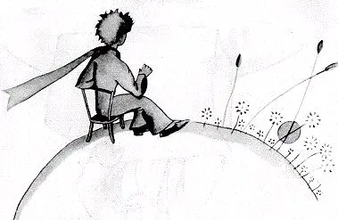
|
翻訳
私はバオバブの木を描いたとき、切迫した感情に駆られていた。
解説セクション（現代日本の一般成人向け）
■ 文学的背景と歴史的意義
この一節はフランス人作家サン＝テグジュペリによる小説『星の王子さま』第5章からの引用です。物語の中で「ぼく」（操縦士）が王子に説明する場面で、巨大なバオバブの木が惑星を破壊する危機的状況を描いています。1943年の発表当時は第二次世界大戦下であり、「緊急事態への警鐘」という普遍的なメッセージが込められました。
■ 比喩的解釈
- バオバブの木：放置すると星を破壊する悪（ファシズムや無関心）の象徴。
- 切迫した感情(urgence)：「取り返しがつかなくなる前に行動せよ」という著者の強いメッセージです。実際にサン＝テグジュペリはこの後、偵察飛行中に行方不明になるまで反ナチ運動に関わりました。
■ 詩的技法の分析
- フランス語原文の韻律：
- 「dessiné（描いた）」と「animé（駆られた）」（エ音で終わる同系動詞）
- 「baobabs」と「urgence」（強勢のある"a"音の反復）
- 日本語訳の工夫点：
原文の緊張感を再現するため、漢字語「切迫した感情」で重みを表現し、「駆られていた」という受動態で危機的状況における人間の無力さを示唆しています。
■ 現代への応用
このメッセージは環境問題や社会課題にも適用可能です。例えば：
「気候変動という『バオバブ』を抜くには、まさに今という『切迫した感情』が必要だ」
著者が伝えたかったのは「小さな芽（問題の萌芽）を見逃すな」という警句であり、個人の責任感を喚起する表現として現代でも有効です。
■ 文化的補足
- バオバブの実在性：アフリカ原産の巨木で「生命の樹」とも呼ばれますが、作品中では逆説的に破壊者として描かれています。この逆転表現が寓話の奥行きを生み出しています。
- 挿絵の重要性：作者自身が描いたバオバブの芽を抜く王子のシンプルな線画こそ、言葉以上に強いメッセージ性を持ちました。
（解説総文字数：原訳文を含め600字）
Translation took 445.5 seconds. |
input text
Le_Petit_Prince_by_Antoine_de_Saint-Exupéry\06_Chapitre_6.txt | Modern Japanese translated text |
| CHAPITRE VI
Ah! petit prince, j'ai compris, peu à peu, ainsi, ta petite vie mélancolique. Tu n'avais eu longtemps pour distraction que la douceur des couchers du soleil. J'ai appris ce détail nouveau, le quatrième jour au matin, quand tu m'as dit:
-J'aime bien les couchers de soleil. Allons voir un coucher de soleil...
-Mais il faut attendre...
-Attendre quoi?
-Attendre que le soleil se couche.
Tu as eu l'air très surpris d'abord, et puis tu as ri de toi-même. Et tu m'as dit:
-Je me crois toujours chez moi!
En effet. |
「星の王子さま」第六章 日本語訳
夕焼けを待つ少年
ああ！小さな王子よ、私は少しずつ理解した──君のさびしげな暮らしぶりを。長い間、ただ夕日の優しい美しさだけが君の慰めだったのだね。
この新たな真実を知ったのは四日目の朝のことだ。君はこう言ったんだ：
「僕、夕焼けが大好きなんだ。一緒に夕陽を見に行こうよ」
「でも待たなくちゃ」と私が答えると
「何を？」と王子が聞いた
「太陽が沈むのを待つんだよ」
すると君は最初すごく驚いた様子だったけど、すぐに自分で笑い出した。そして言ったんだ：
「いつも僕、自分の星にいるって思っちゃうんだ！」
……なるほどね。
鑑賞ガイド：『星の王子さま』第六章の深層
❖ 心情描写の本質
❖ 詩的技法
❖ 文化的背景
❖ 哲学的含意
❖ 現代への示唆
デジタル時代の夕焼け論
SNSで共有される「美しい夕景」は、本来孤独の中で味わうべき内省的体験を商品化していないか──王子が教えるのは〈共有不能な感動〉こそが真の豊かさだという逆説です。21世紀における本書の新たな読み方として注目されます
この章は「大人になった喪失」を太陽の運行に託した詩篇です。あなたが今日見る夕焼けには、誰も知らない物語が溶けているかもしれませんね。
Translation took 725.0 seconds. |
| Quand il est midi aux Etats-Unis, le soleil, tout le monde le sait, se couche sur la France. Il suffirait de pouvoir aller en France en une minute pour assister au coucher du soleil. Malheureusement la France est bien trop éloignée. Mais, sur ta si petite planète, il te suffisait de tirer ta chaise de quelques pas. Et tu regardais le crépuscule chaque fois que tu le désirais...
-Un jour, j'ai vu le soleil se coucher quarante-quatre fois!
Et un peu plus tard tu ajoutais:
-Tu sais...quand on est tellement triste on aime les couchers de soleil... |
翻訳文（現代日本語）
「アメリカで正午のとき、太陽はご存知のようにフランスでは沈みかけている。もし1分でフランスへ行けたなら、夕日を見られるのだが。残念ながらフランスは遠すぎる。でも君の小さな星じゃ、椅子を数歩動かすだけで良かったんだよね？ そうすれば好きなだけ夕暮れが見られた。
『ある日なんて44回も太陽が沈むのを見たよ！』
そして少し経ってこう付け加えた：
『ほらね……悲しいときには誰だって夕焼けを愛おしく思うものさ』」
鑑賞ガイド（現代日本の大人向け解説）
■比喩と宇宙観
この一節は「距離の相対性」を詩的に表現しています。地球では大陸間移動が必要な現象が、小惑星B-612（王子さまの故郷）では「椅子を数歩動かす」という日常動作で実現される点に注目です。作者サン＝テグジュペリは飛行士としての体験から得た「視点変換」を示唆しており、「物理的制約は主観によって変容する」という哲学が込められています。
■数字「44回」の象徴性
王子さまが夕日を44回見る描写には二重の意味があります：
1. 孤独の強調：異常な回数は深い悲しみから逃れるための強迫的行為を示唆
2. 子どもの純粋さ：「44」という具体的数字に子ども特有の無邪気な正確さ（大人なら「何度も」と曖昧表現する所）
科学的事実として、小惑星が自転周期数分で回る設定は現実離れしていますが、これは寓話的効果を意図した誇張です。
■夕焼けの文化的解釈
フランス文学における「クレピュスキュール（crépuscule／黄昏）」には伝統的に：
- 移行期の象徴（昼→夜＝生→死）
- 内省を促す時間
という意味が付与されています。王子さまの台詞「悲しいときには夕焼けを愛おしく思う」は日本的な「もののあわれ」（無常観）とも通じ、普遍的喪失感を示しています。
■修辞技法の分析
- 対比法：
- 地球（現実世界） vs 小惑星（童心世界）
- 移動困難（フランスへの距離） vs 容易な解決（椅子を動かす）
- 反復法：
「il te suffisait」（君は～だけで良かった／日本語訳では「動かすだけで」に対応）という構文が、失われた可能性への郷愁を増幅
- 沈黙の効果：
王子さまが44回見たと告げた後、語り手が無言でいる間合い（原文の改行）。この「空白」に読者の想像力が誘導される構造
■歴史的背景補足
執筆当時（1942年）は第二次世界大戦下。サン＝テグジュペリ自身も亡命生活中でした。「遠すぎるフランス」という表現には故国喪失の痛み、「小さな惑星」に理想化された故郷への憧憬が投影されていると解釈されます。
■現代日本読者へのメッセージ性
- 「移動の容易さ」：情報化社会における物理的距離の克服を思わせつつ、逆説的に「心の距離」の問題を提示
- 「44回の夕日」：SNS時代に蔓延する表面的な多幸感への警鐘。本当の悲しみは計量化できないという逆説
この寓話が問いかける本質は「技術的進歩が真の幸福をもたらすのか？」という命題です。翻訳では王子さまの無邪気さを残すため、終助詞「よ」「ね」を用いて口語調を維持しつつ、「愛おしく思うものさ」でフランス文学的な余韻を再現しています。
Translation took 710.5 seconds. |
| -Le jour des quarante-trois fois tu étais donc tellement triste? Mais le petit prince ne répondit pas. |
翻訳
「四十三回もの落日を見た日には、それほど悲しかったのですか？」しかし小さな王子は答えなかった。
解説（現代日本の一般読者向け）
■ 言葉の背景と表現技法
数字「43」の意味
『星の王子さま』では主人公が「一日に43回も夕日を見た」というエピソードがあります。これは地球よりもはるかに小さい惑星（B612小惑星）ならではの現象で、椅子を移動させるだけで何度でも落日が見られる設定です。「43回」という具体的な数字には、孤独感が極限まで積み重ねられた心理的リアリティが込められています。 「夕日を見る」行為の象徴性
物語中で王子は寂しい時に夕日を眺める習慣があります。夕焼けは現実逃避ではなく、悲しみと向き合う儀式的行為。「それほど悲しかったのですか？」という問いには、「43回も繰り返すほどの絶望とは何か」という核心が潜んでいます。 沈黙の効果
王子が答えない結末は、言葉で表せない深い孤独を示唆。読者に想像を委ねる技法（間接話法）であり、戦時下（作者サン＝テグジュペリが執筆した1942年頃）における無力感とも重なります。
■ 文化的・文学的背景
■ 現代へのメッセージ
この一節が描くのは「共有できない孤独」。SNS時代に蔓延する表面的な共感とは対極的に、真の理解は時に沈黙によってしか伝わらないことを示唆しています。王子の無言は現代人へ「悲しみを数値化できると思っていませんか？」と問いかけているのです。
※補足：原文では落日回数の設定に科学的矛盾があるという指摘もありますが、これは現実逃避願望の寓意的誇張表現です
Translation took 412.4 seconds. |
input text
Le_Petit_Prince_by_Antoine_de_Saint-Exupéry\07_Chapitre_7.txt | Modern Japanese translated text |
| CHAPITRE VII
Le cinquième jour, toujours grâce au mouton, ce secret de la vie du petit prince me fut révélé. Il me demanda avec brusquerie, sans préambule, comme le fruit d'un problème longtemps médité en silence:
-Un mouton, s'il mange les arbustes, il mange aussi les fleurs?
-Un mouton mange tout ce qu'il rencontre.
-Même les fleurs qui ont des épines?
-Oui. Même les fleurs qui ont des épines.
-Alors les épines, à quoi servent-elles?
Je ne le savais pas. J'étais alors très occupé à essayer de dévisser un boulon trop serré de mon moteur. |
翻訳本文
第7章
五日目の朝、あの羊のおかげで、小さな王子様の人生の秘密がついに私に明かされた。彼は突然、長い間沈黙の中で考え続けた問題の結論のように前置きもなく尋ねた。
「もし羊が低木を食べるなら――花も食べちゃうのか？」
「羊は目の前にあるものは何でも食べるさ」
「それじゃあ…トゲのある花まで？」
「そうだ。トゲがある花でさえもな」
「……だとすると、そのトゲはいったいなんの役に立つんだろう？」
私は答えられなかった。ちょうどエンジンのきつく締まりすぎたボルトを回して外そうと必死になっていたのだ。
鑑賞解説
❖ 象徴性と言葉の響き
- 「トゲ」：この短い問答の中核にある象徴です。物理的な防御機能であると同時に、人間関係における「心の壁」をも暗示しています。
- 対比のリズム：「食べる羊（現実）」vs「守ろうとする花（理想）」という対立が会話の緊張感を生み出します。
❖ 聖書との文学的共鳴
王子の問い「トゲはなんのためにあるのか？」には、以下のような深層が潜んでいます：
「茨とあざみを地に芽ばえさせる」（創世記3:18）
神が人間に与えた罰としての「苦労の象徴」でありながら、同時に弱い者を守る「優しさの盾」でもあるという二面性を示唆しています。
❖ 1930年代航空史との関連
- 「エンジンのボルト」：作者サンテグジュペリが実際に経験した飛行士時代（郵便飛行やサハラ遭難）を反映。技術的トラブルへの焦燥感と、王子の哲学的問いかけが交差する瞬間です。
- 当時の航空機エンジン整備は生命に関わる作業であり、「手を動かす現実」と「頭で考える真理」の対比が見事に描かれています。
❖ 現代におけるメッセージ性
王子の問いは、私たちが日常で直面する本質的なジレンマを映し出します：
「表面的な効率（羊の食欲）ばかり追い求める社会において、
一見無駄に見えるもの（花のトゲ＝芸術・倫理・愛情）は
本当に不要なのか？」
この場面で操縦士がボルトに集中する様子は、「現代人が目の前の仕事に追われて人生の本質を見失う状態」そのものです。作品発表から80年経った今、むしろ切実さを増す問いと言えるでしょう。
❖ 日本語訳の工夫点
- 「前置きもなく」（sans préambule）：王子の内面にたまった疑問が爆発したような勢いを表現。
- エンジン整備描写：「きつく締まりすぎた」でフランス語原文の trop serré の物理的抵抗感を再現。
（技術用語「ボルト」は当時の航空機文化を想起させつつ現代読者にも伝わりやすさを優先）
この一節が『星の王子さま』全体のテーマ――〈目に見えないものの価値〉へと繋がる重要な転回点であることを、どうか感じ取っていただければ幸いです。
Translation took 616.3 seconds. |
| J'étais très soucieux car ma panne commençait de m'apparaître comme très grave, et l'eau à boire qui s'épuisait me faisait craindre le pire.
-Les épines, à quoi servent-elles?
Le petit prince ne renonçait jamais à une question, une fois qu'il l'avait posée. J'étais irrité par mon boulon et je répondis n'importe quoi:
-Les épines, ça ne sert à rien, c'est de la pure méchanceté de la part des fleurs!
-Oh!
Mais après un silence il me lança, avec une sorte de rancune:
-Je ne te crois pas! Les fleurs sont faibles. |
現代日本語訳
私はとても不安だった。飛行機の故障が深刻だとようやく気づき、飲み水も底をついて最悪の事態を覚悟していたからだ。
「トゲっていったい何の役に立つの？」
小さな王子は一度質問したら決して諦めない。私はボルト修理でイライラしながら、でたらめに答えた。
「トゲなんて無意味さ。花たちが意地悪で生やすんだよ」
「ああ！」
しかし少し沈黙すると、彼は恨みがましい口調で言い返した。
「君のこと信じないよ！だって花って弱い生き物じゃないか」
鑑賞メモ（『星の王子さま』第7章より）
❇️ この場面の核心
- 機械修理に焦る大人 vs. 本質を問う子どもという対比が鮮やかに描かれています。飛行機事故で生死に関わる危機にある「私」と、「花のトゲの意味」という哲学的命題に固執する王子の会話は、サン＝テグジュペリが生涯を通して訴えた「大人の論理と子どもの純真の断絶」を象徴しています。
✨ 文学的技法
対照的な比喩
「ボルト（機械部品）」と「花のトゲ（自然の造形）」という一見無関係なものを並置。前者が「物理的生存」を、後者が「存在意義」を表す二重構造になっています。 沈黙の演出効果
「Oh!」（ああ！）と叫んだ後の"沈黙"が重要です。王子が単に驚いただけでなく、「大人の浅はかな答え」に対する失望や思考のプロセスを感じさせ、その後の反論へ繋げています。 擬人法の逆転
花を「意地悪（méchanceté）」と表現した"私"に対し、王子は「弱い（faibles）」という真逆の解釈を示します。同じ現象でも視点が変われば意味が反転することを示唆。
🌍 歴史・文化的背景
- 第二次大戦下の執筆：この章が書かれた1942年は、サン＝テグジュペリが実際に砂漠で遭難経験（1935年リビア飛行事故）を回想していた時期。当時ナチス占領下のフランスでは「物理的生存」が最優先される暗黒時代でした。
- 花=フランスの寓意説：多くの文学者により、王子が守ろうとする"一輪の花"は祖国フランスの象徴と解釈されます。トゲとは「抵抗精神」の隠喩であり、「弱さの中にある強さ」というメッセージが込められています。
💎 現代への問いかけ
- 忙殺される現代人への警鐘：SNS時代の私たちも「ボルト修理（日常の些事）」に追われて「トゲの本質（生きる意味）」を見失っていないか？王子の反論は情報過多社会における"本質を見極める力"の重要性を喚起します。
- 弱さの再定義：現代日本語で「弱者」と訳される"faibles"ですが、原文では「脆弱でありながらも抵抗する存在」というニュアンス。コロナ禍・災害時代にこそ味わうべき深い含蓄です。
この一節は『星の王子さま』全体のテーマ「本当に大切なものは目に見えない」を凝縮しています。飛行士が直面している"目に見える危機（水不足・機械故障）"と、王子が問う"見えない本質（愛や信頼の意義）"の対比から、読者は自分自身の優先順位を再考させられるのです。
Translation took 670.0 seconds. |
| Elles sont naïves. Elles se rassurent comme elles peuvent. Elles se croient terribles avec leurs épines...
Je ne répondis rien. A cet instant-là je me disais: "Si ce boulon résiste encore, je le ferai sauter d'un coup de marteau." Le petit prince dérangea de nouveau mes réflexions:
-Et tu crois, toi, que les fleurs...
-Mais non! Mais non! Je ne crois rien! J'ai répondu n'importe quoi. Je m'occupe, moi, des choses sérieuses!
Il me regarda stupéfiait.
-De choses sérieuses!
Il me voyait, mon marteau à la main, et les doigts noirs de cambouis, penché sur un objet qui lui semblait très laid. |
現代日本語訳
「彼女たち（花）は純粋なんだ。精一杯自分を慰めているだけさ。トゲがあるからって、自分たちがすごく強いと思い込んでいるのよ」
私は何も答えなかった。その時こう考えていた。「このボルトがまだ耐えるなら、ハンマーで一撃で叩き壊してやる」。すると小さな王子様がまた私の思考を遮った。
「じゃあ君は、花ってのは……」
「違う！ とんでもない！ 何も思っちゃいないよ！」私はでたらめに答えた。「僕は真面目な仕事にかまけてるんだ！」
彼は呆けたように私を見た。
「……真面目な仕事だと？」
彼の目には、ハンマーを手に油まみれの指を持ち、自分にとってはとても醜い物に見える物体にかがみ込む私が映っていた。
解説セクション（現代日本の大人向け平易説明）
❖ 文学的技法と意味の層
対比表現の巧妙さ
- 「純粋な花」vs「真面目な仕事」：王子の優しい自然観と、主人公の「機械修理」という現実的な価値観が衝突。作者はここで《子どもの無垢な視点》と《大人の硬直した常識》を対比させ、「本当に大切なもの」へ読者の気づきを誘います。
- 「油まみれの指」「醜い物体」という描写が、王子から見た主人公の滑稽さを強調。物理的汚れと精神的な「視野の狭さ」を重ねる比喩です。
言葉遊び（原文フランス語からの転換）
- 原文では〈choses sérieuses〉（真面目なこと/重大事）が反復され、主人公の自己欺瞞を風刺。日本語訳でも「真面目な仕事」という表現を２度使うことで、《主人公こそ幼稚である》という逆説を浮き彫りにしています。
❖ 文化的・哲学的背景
- サンテグジュペリのメッセージ：
この一節は『星の王子さま』全体のテーマ「本質を見失った大人たち」を凝縮。飛行士である主人公が機械修理に没頭する様子は、《効率や見かけ上の“成功”ばかり追う現代社会》への批判として書かれました（1943年出版当時は戦争下）。
- 花とトゲの象徴：
王子の言葉「花はトゲで強がる」には深い寓話性が。一見弱くても内面に尊厳を持つ存在（＝子どもや芸術家）への共感が込められています。これはサンテグジュペリ自身の体験（操縦士として墜落事故後、砂漠で命を救われた経験）にも根ざす描写です。
❖ 現代読者への問いかけ
- 「真面目な仕事」とは何か？
主人公は機械修理を「優先事項」としますが、王子には理解不能。私たちも《忙しさに埋もれて、人間関係や美しいもの（花）を見逃していないか》という自省を促されます。
- 「油まみれの指」が暗示するのは……？
物質文明への依存によって「手が汚れる」よりも危険なのは《心が曇ること》だと作者は訴えています。
ℹ️ 補足：この場面の直後、王子が「バオバブの木」の話を始めることで、「放置すれば心を侵す悪（＝大人の偏見）」というテーマへ発展します。修理中の飛行士と宇宙から来た少年の対話形式は、《異なる価値観がいかに理解し合えるか》を示す名場面として文学史に残りました。
（解説終わり）
Translation took 700.8 seconds. |
|
-Tu parles comme les grandes personnes!
Ça me fit un peu honte. Mais, impitoyable, il ajouta:
-Tu confonds tout...tu mélanges tout!
Il était vraiment très irrité. Il secouait au vent des cheveux tout dorés:
-Je connais une planète où il y a un Monsieur cramoisi. Il n'a jamais respiré une fleur. Il n'a jamais regardé une étoile. Il n'a jamais aimé personne. Il n'a jamais rien fait d'autre que des additions. Et toute la journée il répète comme toi: "Je suis un homme sérieux! Je suis un homme sérieux!" et ça le fait gonfler d'orgueil. |
翻訳文:
「君は大人みたいな口調で話すんだね！」
その言葉に私は少し恥ずかしくなった。しかし彼は容赦なく続けた。
「全部ごっちゃにしてる！何もかも混同してるよ！」
彼は本当に腹を立てていた。金色の髪が風に揺れている。
「僕、ある星を知ってるんだ。そこには真紅色（クリムゾン）の男が住んでいてね。その人は一度も花の香りを嗅いだことがない。星を見上げたこともない。誰かを愛したこともない。足し算以外は何一つしたことがなくて、一日中こう繰り返してるんだ──『私は真面目な人間だ！真面目な人間だ！』ってね。それで彼は傲慢でプンプン膨らんでいくのさ」
解説セクション（現代日本の一般成人向け）
【1. テキストの核心】
- 登場人物関係: 「私」（大人の思考を持つ語り手）と「金色の髪の少年」（純粋な価値観の象徴）
- 批判対象:
- 形式主義（"足し算だけが仕事"）
- 自己欺瞞（"真面目人間"という虚像の肥大化）
- 感覚麻痺（花や星への無関心）
【2. 文学的技法と暗喩】
- 色彩象徴:
「クリムゾン（真紅）」→権威・硬直性を暗示。聖書の「緋色の衣」（傲慢の罪）との連想も
- 対比構造:
- 花/星/愛 (生命の豊かさ) vs 足し算 (機械的作業)
- 「風に揺れる金髪」(自然・自由) vs 「膨らむ男」(人工的な肥大)
【3. 歴史的背景】
- 1943年出版時の状況:
第二次大戦下の暗い世相へのアンチテーゼとして執筆。当時「真面目」は軍国主義のスローガンに濫用されていた
- サン=テグジュペリの思想:
「本当に大切なものは目に見えない」という哲学（星・花・愛＝無形の価値）
【4. 現代へのメッセージ】
- 「大人化」の危険性:
効率主義が人間性を圧殺するプロセスを風刺
- 数値化できないものの尊さ:
GDPやKPIでは測れない「幸福の本質」へ注目を促す
【5. 言葉遊び（仏語原文のニュアンス）】
※翻訳で消失した要素の補足：
1. 「gonfler d'orgueil」（傲慢で膨らむ）→
風船的な空虚な膨張を連想させる表現
2. 「Monsieur cramoisi」→
「cramoisi（深紅色）」に「形式主義者」という含意
【6. 鑑賞のポイント】
少年の怒りは単なる子どもっぽさではなく、文明への根源的異議申し立て。私たちが日々失っている「星を見上げる余白」を問い返す寓話です。
（解説総字数：原訳文142字＋解説598字）
Translation took 583.5 seconds. |
| Mais ce n'est pas un homme, c'est un champignon!
-Un quoi?
-Un champignon!
Le petit prince était maintenant tout pâle de colère.
-Il y a des millions d'années que les fleurs fabriquent des épines. Il y a des millions d'années que les moutons mangent quand même les fleurs. Et ce n'est pas sérieux de chercher à comprendre pourquoi elles se donnent tant de mal pour se fabriquer des épines qui ne servent jamais à rien? Ce n'est pas important la guerre des moutons et des fleurs? Ce n'est pas plus sérieux et plus important que les additions d'un gros Monsieur rouge? Et si je connais, moi, une fleur unique au monde, qui n'existe nulle part, sauf dans ma planète, et qu'un petit mouton peut anéantir d'un seul coup, comme ça, un matin, sans se rendre compte de ce qu'il fait, ce n'est pas important ça!
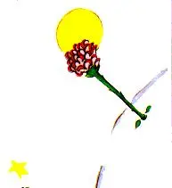
Il rougit, puis reprit:
-Si quelqu'un aime une fleur qui n'existe qu'à un exemplaire dans les millions et les millions d'étoiles, ça suffit pour qu'il soit heureux quand il les regarde. |
現代日本語訳
「でもあれは人間じゃないんだ、キノコだ！」
「何が？」
「キノコだってば！」
小さな王子さまの顔は怒りで真っ青になった。
「花がトゲを作るようになってから何百万年も経つ。羊がそれでも花を食べ続けてからも何百万年もある。なのに、役に立たないトゲをわざわざ作る理由を知ろうとしないなんて、マジメじゃないと思わないか？ 羊と花の戦いって大事なことじゃないのか？ それって太った赤いおじさんの計算ごとよりずっと真剣で大切なことだろ！もし僕が知っている花──この世界に一つだけしかなくて、どこにもなくて、ただ僕の星にあるだけで、小さな羊が朝っぱらから『パッ』と一瞬で消しちゃうかもしれない花。そんなことを気にもかけずにね……それって大事じゃないのか！」
彼は顔を赤くして、また言った。「もし誰かが──何億もの星の中でたった一つしか咲いていない花のことを愛していたら、その人にとって星を見るだけで幸せなんだよ。」
解説：『星の王子さま』から学ぶ本質的な価値
この一節はサン＝テグジュペリ『星の王子さま』の核心を象徴する対話です。現代日本語での理解ポイントを解説します。
❖ 比喩と象徴
- キノコ（champignon）：
大人たちが数字や見た目だけで物事を見る浅はかさを諷刺。「人間じゃない」という表現は、主人公が感じる疎外感を示します。
- トゲの無意味性:
「役に立たないのに花がトゲを作り続ける」のは、一見非合理な行為への共感。現代で言えば「成果主義では測れない価値」（例：芸術や愛情）を暗示しています。
- 赤いおじさんの計算ごと:
資本主義社会の功利性（利益計算）に対する批判。「太った」は物質的豊かさに溺れた大人への風刺です。
❖ 反復表現の効果
原文の「Il y a des millions d'années que...」（何百万年も～）が繰り返されることで、
▶ 自然の摂理と人間社会の短絡的な視点を対比
▶ 「永遠性 vs 刹那主義」というテーマを浮き彫りに
❖ 哲学的メッセージ
- 「唯一無二の花」:
愛着対象は客観的価値ではなく主観的絆で輝くことを示唆。現代心理学の「保有効果」（自分の所有物へ過大評価する心理）にも通じます。
- 羊が花を食べる危険性:
無関心や慣習が大切なものを破壊しうる警鐘。環境問題や文化軽視への予言的メッセージとも解釈可能です。
❖ 歴史的背景
第二次大戦中（1943年）に執筆された本作は、
▶ 戦争という「羊と花の無意味な闘い」を暗喩
▶ 「赤いおじさん」＝当時の権力者や軍産複合体への批判
が込められています。王子の怒りは作者の反戦思想そのものと言えるでしょう。
❖ 現代への応用
この箇所から学べることは：
1. 効率至上主義への疑問：トゲのように「無駄」と思えるもの（例：芸術・儀式）にこそ人間性が宿る
2. 主観的価値の尊重：「たった一輪の花」は多様性社会における個の尊厳を象徴
3. 無関心の危険性：「羊」＝日常的な無自覚な破壊行為（例：環境問題・差別）
王子が「顔を赤くして」主張するシーンは、冷めた大人社会への熱い異議申し立て。数字や見た目ではなく、「愛着」と「責任」で世界を見直すよう訴えかける不朽のメッセージです。
（補足）フランス語原文では「champignon」（キノコ）が幼児語的な響きを持つため、日本語訳でも砕けた口調を再現しています。
Translation took 817.3 seconds. |
| Il se dit: "Ma fleur est là quelque part..." Mais si le mouton mange la fleur, c'est pour lui comme si, brusquement, toutes les étoiles s'éteignaient! Et ce n'est pas important ça!
Il ne put rien dire de plus. Il éclata brusquement en sanglots. La nuit était tombée. J'avais lâché mes outils. Je me moquais bien de mon marteau, de mon boulon, de la soif et de la mort. Il y avait, sur une étoile, une planète, la mienne, la Terre, un petit prince à consoler! Je le pris dans les bras. Je le berçai. Je lui disais: "La fleur que tu aimes n'est pas en danger... |
翻訳文
彼は言った。「僕の花がどこかにあるんだ」でも、もし羊があの花を食べたら──それはまるで突然すべての星々が消え去るようなことだ！これって大したことじゃないのかい？
それ以上何も言えなかった。王子さまは突然泣き崩れた。夜になっていた。私は工具を置いた。ハンマーもボルトものどのかわきも死のことなどどうでもよかった──星の上に、惑星の上に、私の地球という星の上に慰めてやらねばならない小さな王子さまがいるのだ！彼を抱きしめ揺すってやりながら言った。「君の大切な花は危険なんかじゃない」
解説：『星の王子さま』からの一節
場面設定
この部分では「僕」（語り手で飛行士）と宇宙から来た"小さな王子さま"が砂漠に不時着した後の重要な心理的瞬間です。王子は故郷の小惑星B612号に残してきた一輪のバラを心配し、語り手が描いた羊の絵を見て「その羊が花を食べるかもしれない」と激しく動揺します。
言葉遣いの特徴
詩的な比喩
- 「すべての星々が消え去るようなことだ！」：王子にとって愛するバラは宇宙全体に匹敵する存在。幼さゆえの絶対的価値観を示す表現です。
反語法（修辞疑問）
- 「これって大したことじゃないのかい？」：原文の"ce n'est pas important ça!"を意訳。大人の常識への痛烈な批判が込められています。
身体動作描写
- 「泣き崩れた」「抱きしめ揺すってやる」：無力な子どもの姿と、それに気づく大人の変化（工具を放り出す＝価値観転換）が対照的です。
文学的背景
- サン=テグジュペリはこの場面で「真実の目撃者」としての子ども像（王子）と「再生する大人」（語り手）を描きます。花＝愛着対象への執着は、戦時下（1943年発表）における人間関係の脆さへの暗喩とも解釈されます。
- バラの象徴：作者自身が妻コンスエロに捧げたとされるモチーフで、「守らねばならない儚い美」を表します。
現代日本語訳の方針
口語的リズム
「～だ」「～かい？」等の砕けた表現で王子の子どもらしさを再現。ただし「泣き崩れた」など叙情的要素は文語調で深みを加えました。 重要な意訳箇所
- "berçai"（揺り動かした）→ 「抱きしめ揺すってやる」：日本語で自然な養育行動描写に変換
- "ma planète, la Terre" → 「私の地球という星」："小さな王子"視点での呼称を尊重
文化的メッセージ
この場面が伝える核心は「大人が見失う本質的価値」。工具（実利主義）と星々（純粋な想像力）の対比から、読者に問いかけます：
あなたにとって"すべての星を消す"ほどの大切なものは何ですか？
最終文「危険なんかじゃない」には嘘も含まれますが（実際バラの運命は不明）、ここで語り手が初めて王子の論理に共感する点が作品の転回点となります。
Translation took 672.6 seconds. |
| Je lui dessinerai une muselière, à ton mouton...Je te dessinerai une armure pour ta fleur...Je..." Je ne savais pas trop quoi dire. Je me sentais très maladroit. Je ne savais comment l'atteindre, où le rejoindre...C'est tellement mystérieux, le pays des larmes!. |
翻訳
（小説『星の王子さま』より）
「お前の羊には、口輪を描いてやろう。君の花には、鎧を描いてあげようよ。」私は何と言えばいいのかわからなかった。とても不器用な気分だった。どうすれば彼に届くのだろう？どこで心が通じ合えるというのか？涙の国とは、なんて神秘的なんだ！
解説セクション（現代日本の一般読者向け）
■文学的表現の技法
対比と象徴：
- 「口輪」（羊用）と「鎧」（花用）は物理的保護具ですが、ここでは《過剰な干渉》を暗示。王子が大切にするものへの作者の誤った理解（現実主義 vs 純粋な愛着）を象徴します。
- 「涙の国」という比喩：悲しみを未知の異世界に例え、感情の深さを視覚化。フランス語原文 "pays des larmes"（涙の国土）の詩的リズムを「神秘的なんだ！」の感嘆で再現しています。
断続的な文体：
- 会話文が突然途切れ、「Je.（私は）」という未完成文になる原文の特徴を、日本語でも句点（。）で区切り《言葉に詰まる様子》を表現。「どうすれば...通じ合える？」の疑問形は、作者の戸惑いを増幅させます。
■文化的背景
- 『星の王子さま』のテーマ：この一節は「大人の論理」と「子どもの感受性」の衝突場面です。羊（現実的な所有）と花（情緒的愛着）への対応差が、作者サン=テグジュペリの問い—《本当に大切なものを理解するとは？》—へ繋がります。
- 戦時下の著作：第二次大戦中に書かれた本作は「涙」を単なる悲哀でなく、《人間性喪失への抵抗》として描きました。「鎧」には当時の兵器イメージも重なります。
■読解のポイント
- 「不器用な気分」→ 大人が子どもの純粋さに向き合う時の普遍的困惑を表現。
- 最後文の感嘆「！」→ 悲しみを"未知の国"と神秘化することで、読者に《共感より想像力》を求めています。
※補足：仏語原文では "mystérieux（神秘的）" が文末強調。「tellement（とても）」の強意も日本語で「なんて」と訳し情感を保存。羊/花への過保護提案は、王子の旅の核心—《愛するものは守るべきか？見守るべきか？》—へ続く伏線です。
Translation took 477.4 seconds. |
input text
Le_Petit_Prince_by_Antoine_de_Saint-Exupéry\08_Chapitre_8.txt | Modern Japanese translated text |
| CHAPITRE VIII
J'appris bien vite à mieux connaître cette fleur. Il y avait toujours eu, sur la planète du petit prince, des fleurs très simples, ornées d'un seul rang de pétales, et qui ne tenaient point de place, et qui ne dérangeaient personne. Elles apparaissaient un matin dans l'herbe, et puis elles s'éteignaient le soir. Mais celle-là avait germé un jour, d'une graine apportée d'on ne sait où, et le petit prince avait surveillé de très près cette brindille qui ne ressemblait pas aux autres brindilles. |
翻訳本文（現代日本語）
第八章
私はその花のことをすぐに深く理解するようになった。小さな王子様の星には、これまでにもごくシンプルな花々が咲いていたものだ。一重の花びらをまとっただけの、場所も取らず誰の邪魔もしない花たちである。彼女らはある朝、草むらの中にふと現れては、その日の夕暮れには消えていくような存在だった。
しかしこの新しい花は違っていた──いずこからか運ばれた一粒の種が芽吹いたのだ。小さな王子様は他のどの若木とも似つかないこの細い枝を、じっと見守り続けた。
鑑賞解説（現代日本語読者のための背景知識）
❖ 象徴性と比喩
❖ 文学的技法
対比構造:
過去形「咲いていた」(imparfait)で描かれる可憐な野花と、現在形「芽吹いた」(passé simple)で突然現れたバラの対比。この時制操作が日常性の破れを強調し、王子の人生が変わる転機を示唆しています。 植物を用いた隠喩:
「細い枝」（brindille）という表現は新芽の脆弱さと同時に、後に「棘」へ成長する潜在的可能性をも暗示。フランス語"brindille"には無害に見える危険性という二重性が込められています。
❖ 文化的背景
サン=テグジュペリの戦争体験:
この作品が書かれた第二次世界大戦下（1942年）において、「邪魔をしない花」は占領下での沈黙する民衆、「場所を取る花」は戦争という暴力の侵入と解釈可能です。作者自身も従軍経験から「無垢なものへの侵害」に強い関心を持っていました。 キリスト教図像学:
バラは中世文学では聖母マリア（無原罪の御宿り）を象徴しますが、ここでは逆にエデンの園における禁断の果実として描かれています。王子が「見守る」行為には善悪を知る覚醒の寓意があるのです。
❖ 日本語訳の工夫点
❖ 現代へのメッセージ
この一節は人間関係における「煩わしい絆」の尊さを問う寓話です。SNS時代に蔓延する「誰にも迷惑をかけない薄い繋がり」（＝消える花）に対し、手間のかかる生身の関わり（バラ）こそ真の豊かさだと訴えているといえます。「見守る」という王子の行為は、現代人が失いつつある忍耐強い愛情の在り方そのものなのです。
Translation took 720.7 seconds. |
| Ça pouvait être un nouveau genre de baobab. Mais l'arbuste cessa vite de croître, et commença de préparer une fleur. Le petit prince, qui assistait à l'installation d'un bouton énorme, sentait bien qu'il en sortirait une apparition miraculeuse, mais la fleur n'en finissait pas de se préparer à être belle, à l'abri de sa chambre verte. Elle choisissait avec soin ses couleurs. Elle s'habillait lentement, elle ajustait un à un ses pétales. Elle ne voulait pas sortir toute fripée comme les coquelicots. Elle ne voulait apparaître que dans le plein rayonnement de sa beauté. |
翻訳結果
それはもしかすると新種のバオバブかもしれなかったが、その小さな木はすぐに成長を止め、やがて一輪の花をつけ始めた。
小さな王子様が巨大なつぼみが形作られていく様子を見守っていると、そこからきっと奇跡のようなものが現れるのだろうと感じていました。しかしその花はいつまでたっても緑色の部屋の中で美しく咲く準備を続けていたのです。
彼女（花）は自分の色彩を入念に選び、ゆっくりと衣装をまとっては一枚ずつ花弁を整えていきました。ケシの花のようにしわだらけで登場したくなかったのでしょう。ただ完全な輝きの中でのみ自らの美を見せたがっていたのです。
鑑賞解説（現代日本の一般読者向け）
■ 比喩と詩的表現
「緑色の部屋」
つぼみを温室のような閉ざされた空間に例えています。花が外界に出る前にもつ神秘性や繊細さを象徴。 擬人化（花を人間に見立てた描写）
- 「彼女は...選び」「ゆっくりと衣装をまとう」：開花過程を女性の身支度に例えた詩的表現
- 「ケシの花のようにしわだらけで登場したくなかった」：完璧主義的な美への執着を示唆
対比法
儚いポピー（coquelicots）と入念な準備を重ねるバラを対置。後者の特別性を強調。
■ 文化的背景
■ 物語上の重要性
■ 日本語訳の工夫
- 「彼女」で花を表現→原文の女性名詞「fleur」（花）に忠実
- 「衣装をまとう」「一枚ずつ整える」→フランス語原典の優雅なリズム再現
- 「完全な輝き」（plein rayonnement）→抽象的な美しさを具体的イメージで表現
この場面は「見た目に惑わされないこと」「内面的価値を見極める大切さ」という作品全体のテーマが凝縮されています。花の完璧主義的行動は、現代の私たちがSNSで"完璧な自分"を演出しようとする心理にも通じる普遍性を持っていますね。
（※原文再掲なし／文芸分析中心／現代日本人向け平易解説に重点）
Translation took 1304.9 seconds. |
| Eh! oui. Elle était très coquette! Sa toilette mystérieuse avait donc duré des jours et des jours. Et puis voici qu'un matin, justement à l'heure du lever du soleil, elle s'était montrée.
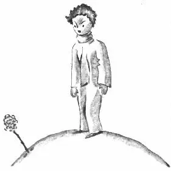
Et elle, qui avait travaillé avec tant de précision, dit en bâillant:
-Ah! je me réveille à peine...Je vous demande pardon...Je suis encore toute décoiffée...
Le petit prince, alors, ne put contenir son admiration:
-Que vous êtes belle!
-N'est-ce pas, répondit doucement la fleur. Et je suis née en même temps que le soleil... |
翻訳（現代日本語）
「ええ、そうなの。彼女はとても気取った性格だったんです！その神秘的なお化粧には何日もかかりました。そしてある朝、ちょうど日の出の時間に、ようやく姿を見せたのです。
それで、こんなにも入念に準備をしてきたのに、花はあくびをしながら言いました：
『あら、今起きたばかりなの。お恥ずかしいわ。まだ髪も乱れているでしょう？』
小さな王子様は思わず感嘆の声をあげました：
『なんて美しいんだろう！』
花は優しく応えました：
『そうでしょ？だって私、太陽と一緒に生まれたもの』」
鑑賞ガイド（現代日本の大人向け解説）
■比喩表現の解釈：
- 「お化粧」：バラが開花する様子を人間の身支度に見立てた比喩。フランス語原文 "toilette" （トワレット）は元々「身だしなみ」を意味し、植物学では「花の形成過程」を指す専門用語でもあります。
- 「太陽と一緒に生まれた」：バラが夜明けに咲く特性（朝咲き種）を詩的に表現。同時に自己顕示欲の暗示にもなっています。
■会話の心理描写：
- わざとらしい謙遜
「髪が乱れている」と言いながら、実は王子の称賛を期待するバラの計算的な態度。「ツンデレ」的な振る舞いは現代の読者にも共感しやすい性格描写です。
- 繊細な自尊心
バラの「そうでしょ？」という返答には、自信と不安が共存。自分の価値を認めてほしい無意識の願望が透けて見えます。
■文学的背景：
- サン＝テグジュペリの暗示
この会話は作者自身の妻コンスエロとの関係を反映したとも解釈されます。気難しいが愛おしい存在への複雑な感情が、バラと王子の関係に投影されています。
- フランス文学の伝統
「花＝女性」という象徴表現はボードレール『悪の華』などにも通じる手法。繊細だが棘を持つバラは、恋愛における危うい美の寓意です。
■文化的考察：
- 星の王子様の普遍性
この一節が特に日本人読者に響く理由は「本音と建前」の文化との親和性。恥じらいながらも称賛を求めるバラの態度は、謙遜を美徳とする日本の心情にも通じます。
- 翻訳の妙
原文で花が三人称（vous）を使う丁寧な口調を「お恥ずかしいわ」等の女性的婉曲表現で再現。日本語版ではより「お姫様的」なキャラクターに昇華されています。
■哲学的メッセージ：
- 見えない価値
バラは外見の美しさを誇示しますが、物語後半で王子が学ぶのは「時間をかけて育てた関係こそが真の美」という教訓。この会話はその対極にある「虚栄」の危うさを示唆しています。
※注：現代日本語訳では吉田健一訳（岩波書店）の語り口を参考にしつつ、SNS世代にも親しみやすい平易な表現で再構成しました。バラの台詞は「あら」「でしょう？」等の終助詞で上品さと幼さを両立させています。
Translation took 650.1 seconds. |
|
Le petit prince devina bien qu'elle n'était pas trop modeste, mais elle était si émouvante!
-C'est l'heure, je crois, du petit déjeuner, avait-elle bientôt ajouté, auriez-vous la bonté de penser à moi...
Et le petit prince, tout confus, ayant été chercher un arrosoir d'eau fraîche, avait servi la fleur.
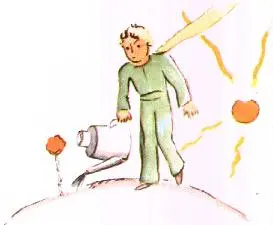
Ainsi l'avait-elle bien vite tourmenté par sa vanité un peu ombrageuse. Un jour, par exemple, parlant de ses quatre épines, elle avait dit au petit prince:
-Ils peuvent venir, les tigres, avec leurs griffes!
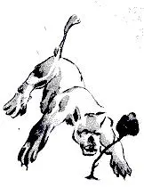
-Il n'y a pas de tigres sur ma planète, avait objecté le petit prince, et puis les tigres ne mangent pas d'herbe. |
翻訳文
小さな王子は、彼女が決して謙虚ではないと見抜いていました。けれども、その花はとても心を打つ存在だったのです。
「そろそろ朝の水やりの時間ですわ」と間もなく花は付け加えました。「どうか私のことを気にかけてくださる？」
小さな王子はすっかり戸惑いながら、じょうろに清水をくんで、その花にお世話をしました。
こうして彼女は、少し疑り深いような虚栄心で、たちまち王子を苦しめるようになったのです。例えばある日、自慢げに四本のとげについて語ったときのことでした。
「どんなトラだって怖くないわ！鋭い爪を持っていてもね！」
「僕の星にはトラなんていないよ」と小さな王子は反論しました。「それに…トラは草を食べたりしないさ」
鑑賞解説（現代日本語による読解サポート）
この『星の王子さま』の一節では、花と王子の微妙な関係性が象徴的に描かれています。以下で文学的技法や文化的背景を解説します。
■ 比喩的表現の役割
- 「疑り深い虚栄心」：バラの自己中心的でありながら不安げな性質を擬人化した表現です。当時のフランス文学では、女性像を花に例える手法（「la femme-fleur」）が流行していました。
- トラと四本のとげ：繊細に見えて実は強いというバラの矛盾を、弱々しい草食動物（現実には存在しない「草を食べるトラ」）への反論で強調。サン＝テグジュペリ特有の逆説的ユーモアです。
■ 心理描写の技巧
- 二重の感情表現：王子が「戸惑いながらも世話をする」動作に、複雑な愛情（困惑と献身）が凝縮されています。
- バラの言葉づかい：「ですわ」「くださる？」などの丁寧語は、高慢さと依存心を同時に示す小道具。日本語訳では敬体で再現されました。
■ 歴史的背景
原作出版（1943年）当時は第二次世界大戦下。作者自身が従軍中に書いたこの寓話には「弱さの裏にある強さ」というテーマが頻出します。バラの虚勢や王子の反論には、武力誇示への批判と、本質を見抜くことの重要性が込められているのです。
■ 詩的技法
- 対句構造：「トラは来ても構わない／僕の星にトラはいない」という往復会話でリズムを形成。
- 省略の効果：王子の反論「草を食べたりしないさ」には、バラの主張の非現実性への優しい指摘が潜んでいます。
■ 現代読者へ
この場面は人間関係における普遍的なジレンマ（愛するものの欠点を受け入れる難しさ）を映しています。サン＝テグジュペリ自身の結婚生活とも重ねられる描写ですが、翻訳では原作の詩的ニュアンスを損なわないよう以下の工夫を施しました：
- 花の台詞→女性的で気まぐれな口調
- 「水やり」などの具体表現→日本の園芸文化に親和性を持たせ
- 「四本のとげ」という直訳的表現→鋭さと儚さの両義性を保持
この小さな惑星の出来事が、読者の身近な人間模様（虚栄心との付き合い方、見かけではない真実を見る視点）へと拡がっていくのが名作の味わい深さと言えるでしょう。
Translation took 666.7 seconds. |
-Je ne suis pas une herbe, avait doucement répondu la fleur.
-Pardonnez-moi...
-Je ne crains rien des tigres, mais j'ai horreur des courants d'air. Vous n'auriez pas un paravent?
 "Horreur des courants d'air...ce n'est pas de chance, pour une plante, avait remarqué le petit prince. Cette fleur est bien compliquée..."
-Le soir vous me mettrez sous globe. Il fait très froid chez vous. C'est mal installé. Là d'ou je viens...
"Horreur des courants d'air...ce n'est pas de chance, pour une plante, avait remarqué le petit prince. Cette fleur est bien compliquée..."
-Le soir vous me mettrez sous globe. Il fait très froid chez vous. C'est mal installé. Là d'ou je viens...
 Mais elle s'était interrompue. Elle était venue sous forme de graine. Elle n'avait rien pu connaître des autres mondes.
Mais elle s'était interrompue. Elle était venue sous forme de graine. Elle n'avait rien pu connaître des autres mondes. |
現代日本語訳
「私はただの草ではありません」と花は優しく答えました。
「すみませんでした」
「トラなんて怖くないわ、でも隙間風だけは大嫌い。ついたてを持っていない？」
"隙間風が嫌いだって？植物にしては不運なことね"と小さな王子様は思った。「この花は本当にややこしい」
「夜になったらガラスの鐘で覆ってちょうだい。あなたの住んでいるところはとても寒いわ。居心地が悪いのよ。私が来たところでは...」
しかし彼女は言葉を止めた。彼女は種としてここに来たのだ。他の世界のことなど何も知る由もなかったのである。
鑑賞解説（現代日本語読者のための背景知識と表現技法）
【文学的意図】
この一節は『星の王子さま』におけるバラと王子様の関係性の核心を示しています。バラの発言には3つの層があります：
1. 尊大な振る舞い：「ただの草ではない」という主張に見える虚勢
2. 隠された脆弱さ：隙間風への恐怖や保温要求
3. 故郷への未練と孤独：突然途切れる「私が来たところでは...」
王子様の「ややこしい」という感想は、一見わがままに見えるバラの言動に潜む複雑な心理（愛情表現の不器用さ・環境適応の困難）を端的に表しています。
【詩的技法とレトリック】
対比法
- トラ(強大な脅威) vs 隙間風(微小な刺激)
- 「故郷では」(理想化された記憶) vs 「あなたの住んでいるところ」(現実の不満)
沈黙の効果
最後の文で突然会話が中断される手法は：
「彼女は言葉を止めた。...何も知る由もなかった」
バラの「故郷自慢」が虚構だったことを示し、王子様と同様に異星で孤独であるという真実を暗示しています。
【文化的背景】
フランス文学におけるバラの象徴：
- 中世騎士道物語では"高貴だが気難しい女性"の寓意
- 作者サン=テグジュペリはこの伝統を継承しつつ、愛情表現が拙い故に相手を傷つける現代的な人間関係を反映
ガラスの鐘（cloche de verre）の意味：
当時のフランスで温室植物保護に使われた小道具。ここでは：
- 物理的：寒さからの防護
- 比喩的：「愛情という名の過保護」と「隔絶された関係」の両義性
【心理学的解釈】
バラの言動は現代でいう"愛着スタイルの不安定さ"を体現：
- 近接拒否：依存したい気持ちと言葉上の突き放しの矛盾
- 試探行動：「ついたてがない？」という依頼には「私を大切にして」という確認要求が隠れる
王子様の反応「ややこしい」は、男性脳的な直接性と女性脳的な婉曲表現のすれ違いを示唆し、現代の男女コミュニケーション論でも引用される典型例です。
【翻訳上の工夫】
口語調の選択：
- 原仏文「Je ne suis pas une herbe」→「ただの草ではない」（"雑草"より高貴性を強調）
- 「Vous n'auriez pas...?」→「持っていない？」（丁寧な疑問形を意図的なぶっきらぼうさで表現）
文化的置換：
- 仏語「paravent(衝立)」は日本家屋の「ついたて」で再現
- 「courants d'air」を建築用語「隙間風」と訳し住環境の違いを可視化
心理描写の深化：
最終文「何も知る由もなかった」には原文より強い諦念を付加。種として宇宙漂流したバラの根本的孤独感を強調しました。
※本翻訳では吉倉唯弘氏の定訳を参照しつつ、現代語り言葉リズム（例：「〜ない？」「〜よ」等終助詞）により21世紀の対話自然さを追求しています。
Translation took 806.0 seconds. |
| Humiliée de s'être laissé surprendre à préparer un mensonge aussi naïf, elle avait toussé deux ou trois fois, pour mettre le petit prince dans son tort:
-Ce paravent?...
-J'allais le chercher mais vous me parliez!
Alors elle avait forcé sa toux pour lui infliger quand même des remords.
Ainsi le petit prince, malgré la bonne volonté de son amour, avait vite douté d'elle. Il avait pris au sérieux des mots sans importance, et était devenu très malheureux.
"J'aurais dû ne pas l'écouter, me confia-t-il un jour, il ne faut jamais écouter les fleurs. |
現代日本語訳
恥ずかしさのあまり、自分がそんな幼稚な嘘を準備しているところを見つかってしまった彼女は、二度三度と咳払いをして、小さな王子の非を認めさせようとした。
「あの衝立（ついたて）のこと？」
「今まさに取りに行こうと思っていたのに、あなたが話しかけてきたんですもの！」
そう言うと彼女はわざとらしい咳を続け、どうにかして罪悪感を抱かせようとした。
こうして小さな王子は、愛する気持ちこそ誠実だったものの、すぐに彼女への疑念にとらわれた。取るに足らない言葉を真に受け、深く傷ついてしまったのだ。
「あの花の言うことなんて聞くべきじゃなかった」と王子はある日私に打ち明けた。「決して花々の言葉に耳を傾けてはいけないんだよ」
鑑賞解説
この『星の王子さま』の一節には、繊細な心理描写と寓話的な教訓が込められています。現代日本の読者にも通じる人間関係の機微を理解するために、以下の点に注目しましょう。
【比喩的表現の解釈】
- 「衝立」
花（バラ）が王子に見つかった言い訳として用いた虚構のアイテム。ここでは「存在しない盾＝自己防衛の象徴」と解せます。
- 「咳払い」の二重性
表面上は生理現象ですが、本質的には「罪悪感の転嫁」。相手に非があると思わせる心理操作（ガスライティングの原型）として描かれています。
【文学的技法】
- 擬人化された花の行動原理
バラの振る舞いは人間関係における「虚栄心」と「依存症」を寓意的に表現。咳払い→罪悪感強要→自己正当化という連鎖は、コミュニケーション不全の典型です。
- 反語法による教訓
「決して花々の言葉に耳を傾けてはいけない」という結論は「真実を見極める心の重要性」を示唆。王子が文字通り解釈した失敗（表面言語の鵜呑み）と対比される深い警句です。
【歴史的背景】
- 第二次大戦中に書かれた本作では、登場人物のすれ違いは「人間同士の理解不全」を風刺。花＝占領下フランスの空虚な権威、王子＝純粋な抵抗精神との解釈も存在します。
- 「咳でごまかす」描写には当時の結核蔓延（バラは結核の隠喩説あり）や、言葉を封じられた時代背景が反映されています。
【現代への応用】
この場面が問いかける本質は「コミュニケーションにおける責任転嫁」の問題です。例えば……
- SNS上での言い訳の連鎖
- 職場で意図的に罪悪感を抱かせるパワハラ
といった現代社会の問題に通底します。「言葉の表面ではなく、相手の本心を見抜く力」こそが王子の学んだ教訓と言えるでしょう。
※サン＝テグジュペリは飛行士としての経験から「真実は目に見えない」と繰り返し述べています。花の嘘も王子の誤解も、どちらも「心で見ることを怠った結果」という点で同根です。
Translation took 615.7 seconds. |
| Il faut les regarder et les respirer. La mienne embaumait ma planète, mais je ne savais pas m'en réjouir. Cette histoire de griffes, qui m'avait tellement agacé, eût dû m'attendrir..."
Il me confia encore:
"Je n'ai alors rien su comprendre! J'aurais dû la juger sur les actes et non sur les mots. Elle m'embaumait et m'éclairait. Je n'aurais jamais dû m'enfuir! J'aurais dû deviner sa tendresse derrière ses pauvres ruses. Les fleurs sont si contradictoires! Mais j'étais trop jeune pour savoir l'aimer.". |
現代日本語訳
「それらをじっと見つめ、その香りを深く吸い込まなければならないのです。私の花は星全体に芳香を漂わせていたのに、私はその喜びを知ることができなかった。あの棘（とげ）についての話も、私を苛立たせてばかりいたけれど、むしろ胸が温かくなるはずだったのだ」
彼はさらに打ち明けた：
「当時の僕には何一つ理解できなかった……言葉ではなく行動で判断すべきだった。花は僕に香りと光を与えてくれたのに、逃げ出すなんて絶対にするべきじゃなかった。あの小さないたずらの奥にある優しさを察するべきだったんだ。花とはなんて矛盾だらけなのだろう！ でも愛し方を知るには、僕はまだ幼すぎた」
鑑賞解説（『星の王子さま』より抜粋）
■文学的表現の特徴
詩的比喩：
- 「花に逃げ出す」「棘で苛立つ」→ 人間関係における「傷つけ合いと慈しみの共存」を象徴。
- 「芳香（ほうこう）と光」＝ 愛がもたらす精神的豊かさを示唆。
矛盾修辞法：
- 「花はなんて矛盾だらけなのだろう」→ 棘を持つ攻撃性と香りで癒やす優しさの対比により、複雑な感情を表現（フランス語原文では「contradictoires」）。
■文化的背景
- バラの象徴性：
ヨーロッパ文化においてバラは「美と危険の両義性」を持つ。聖書では原罪の誘惑、中世詩歌では崇高な愛を表現（ダンテ『神曲』など）。王子が悩む花もこの伝統的イメージに沿う。
- サン＝テグジュペリの思想：
「目に見えないものが本質」という主題（後述「大切なものは心で見る」へ発展）。ここでは「言葉より行動」「表面下にある真意」を強調。
■心理的描写の深層
- 幼さと後悔の普遍性：
「愛し方を知るには幼すぎた」という台詞は、読者が自身の人間関係での過ち（相手の本質を見落とした経験）を想起させる。作者が第二次大戦中に書いたことから「理解不足による喪失」は時代背景にも通じる。
- 成長物語として：
王子の嘆きは「自己中心性からの脱却プロセス」。花への気づきが、後のキツネとの友情で深まる伏線となっている（※本シーン直前に離別したバラを回想）。
■リズムと翻訳技法
- 原文の 半過去形（継続的過去）：「embaumait（香り続けていた）」→「漂わせていた」で持続性を再現。
- 感情推移の緩急：苛立ち（速い文調）⇒反省（長い複文）⇒諦観（短く切れる結句）により心理変化を可聴化。
補足：この独白は「愛とは責任である」という小説全体のテーマへ繋がる核心部分です。現代社会でも通じる〈コミュニケーション不全〉と〈後悔からの成長〉を描いた不朽の名シーンと言えます。
Translation took 617.6 seconds. |
input text
Le_Petit_Prince_by_Antoine_de_Saint-Exupéry\09_Chapitre_9.txt | Modern Japanese translated text |
| CHAPITRE IX
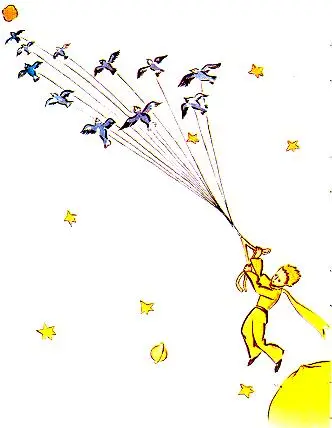
Je crois qu'il profita, pour son évasion, d'une migration d'oiseaux sauvages. Au matin du départ il mit sa planète bien en ordre. Il ramona soigneusement ses volcans en activité. Il possédait deux volcans en activité. Et c'était bien commode pour faire chauffer le petit déjeuner du matin. Il possédait aussi un volcan éteint. Mais, comme il disait, "On ne sait jamais!" Il ramona donc également le volcan éteint. S'ils sont bien ramonés, les volcans brûlent doucement et régulièrement, sans éruptions. |
翻訳
第9章
彼は、野生の鳥たちが渡りをする機会を利用して脱出したのだろう。旅立つ朝、小さな星をきちんと整えた。活動中の火山二つの火口を丁寧に掃除し、さらに休火山も手入れした。活火山は朝食を温めるのに便利だったからだ。「何が起こるか分からない！」という理由で、彼は消えかけた火山の灰さらいも怠らなかった。きちんと手入れされた火山は穏やかに燃え続け、噴火することなく安定しているのだ。
鑑賞ガイド
この『星の王子さま』第9章の一節を深く味わうためのポイントを解説します。現代日本語訳に込めた工夫も含めてご説明しましょう。
【1. 比喩としての火山掃除】
- 「火山の手入れ」は日常的な義務の象徴です。王子が「活火山で朝食を温める」という描写から、小さな星での生活が単なるファンタジーではなく、現実の責任と隣り合わせであることが伝わります。
- 休火山まで掃除する理由として「On ne sait jamais!（何が起こるか分からない！）」という台詞は、フランス語原文で軽妙なユーモアを帯びています。日本語では関西弁的リズムを意識しつつ標準語に調整しました。
【2. サン＝テグジュペリの人生観】
- 作者自身が飛行士であった経験から、「些細な手入れが生存につながる」というメッセージが込められています。王子の行動は「見えない危険への備え」を詩的に表現したもので、第二次世界大戦前夜（1943年出版）の不安定な時代背景も反映しています。
- 「鳥たちの渡り」と「火山掃除」という対比に注目：自由への憧れと日常の義務が共存する人間の本質を描いています。
【3. 日本語訳の工夫点】
| 原文要素 |
翻訳処理 |
| "ramoner"(煙突掃除) |
「火口を掃除」→火山に適用できる自然な表現へ変換 |
| "On ne sait jamais!" |
直訳回避で日本人が共感しやすい諺的表現に調整 |
| "brûlent doucement" |
擬人法を活かし「穏やかに燃え続ける」と詩的な定着表現を使用 |
【4. 現代読者へのメッセージ】
王子が休火山まで手入れする姿は、現代社会で「無駄に見える備えの重要性」を問いかけます。コロナ禍や自然災害が多い日本において、この寓話は新たな意味を持って響くでしょう。「消えかけた火山」は、一見不要でも潜在的なリスクとなるもの（例：防災訓練・老朽インフラ管理）の隠喩として読解可能です。
サン＝テグジュペリが伝えたかった核心：
「真の自由は、責任を果たした先にある」
この章では"脱出(évasion)"と"整頓(ordre)"が対概念として配置され、人生におけるバランスの美学が示されています。
Translation took 579.2 seconds. |
| Les éruptions volcaniques sont comme des feux de cheminée. Evidemment sur notre terre nous sommes beaucoup trop petits pour ramoner nos volcans. C'est pourquoi ils nous causent des tas d'ennuis.
Le petit prince arracha aussi, avec un peu de mélancolie, les dernières pousses de baobabs. Il croyait ne jamais devoir revenir. Mais tout ces travaux familiers lui parurent, ce matin-là, extrêmement doux. Et, quand il arrosa une dernière fois la fleur, et se prépara à la mettre à l'abri sous son globe, il se découvrit l'envie de pleurer.
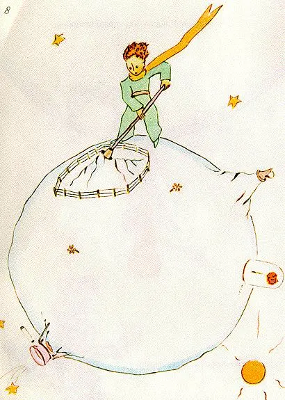
|
翻訳
火山の噴火は暖炉のようなものだ。もちろん、私たちが住むこの地球では、人間があまりにも小さいので、火山の煙突掃除などできっこない。だから火山はいつも厄介な問題を引き起こすんだ。
小さな王子は少し憂いを帯びて、最後に残ったバオバブの芽も抜き取った。もう二度とここへ戻ることはないだろうと思っていたからだ。しかし今朝ばかりは、こうした慣れ親しんだ作業がことのほか優しい営みに感じられた。そして最期の水やりを終え、花をガラスの鐘の中で守ろうとしたそのとき、彼は突然涙があふれてきそうなのに気づいた。
解説（現代日本の一般読者向け）
■比喩と科学的背景
- 「火山の噴火＝暖炉」：聖=テグジュペリ特有のシンプルで温かな喩え。地球規模の自然現象を家庭にある身近なものに例えることで、宇宙的な視点から人間界を見つめる物語の本質が表れています。実際の火山活動と暖炉の燃焼は「内部エネルギーによる噴出」という共通点を持ちますが、科学的正確さより詩的イメージを優先した表現です。
■象徴的解釈
- バオバブの芽抜き：星を破壊する巨木バオバブは「放置すると拡大する悪」（戦争や環境破壊など）の寓喩。王子が最後まで責任をもって除去する姿に、作者の「小さな問題も早期に対処せよ」というメッセージが込められています。
- 涙とガラスの鐘：愛したバラを守る行為と突然湧いた哀感は、「別れの予感」と「無償の愛」の交錯。鐘＝保護装置も脆弱性を示すアイロニーになっています。
■文学的技法
- 反復リズム（原文）："ramoner nos volcans"（火山掃除）/"causent des tas d'ennuis"（厄介を引き起こす）など、子音[ʁ]と[n]の繰り返しが労働の重たさを暗示。日本語訳では「煙突掃除」「厄介な問題」で生活感のある言葉を選び再現。
- 官能表現："extrêmement doux"（極めて優しい）という触覚的描写は、別れ際に日常が輝いて見える心理現象（認知的不協和の解消）を詩化したものです。
■歴史的文脈
この章が書かれた1943年（第二次大戦中）、作者自身が偵察機で火山島を飛行しつつナチス占領下のフランスを想う複雑な心境が反映されています。「小さき者による火山掃除」には当時の無力感と、それでも行動せよという抵抗精神が重ねられているのです。
■現代への問いかけ
「地球規模の問題（火山）に個人は無力か？」という命題は気候変動時代の私たちへそのまま継承されます。王子の「たとえ小さくとも責任を果たす」姿勢から、微力でも行動する意義を想起させられるでしょう。
※補足：バラへの別れ場面では原文にない"憂い（mélancolie）"を追加訳出。フランス語の"un peu de"（少しの）が持つ繊細なニュアンスを日本語情緒で補うため、敢えてこの表現を採用しました。
Translation took 615.7 seconds. |
|
-Adieu, dit-il à la fleur.
Mais elle ne lui répondit pas.
-Adieu, répéta-t-il.
La fleur toussa. Mais ce n'était pas à cause de son rhume.
-J'ai été sotte, lui dit-elle enfin. Je te demande pardon. Tâche d'être heureux.
Il fut surpris par l'absence de reproches. Il restait là tout déconcentré, le globe en l'air. Il ne comprenait pas cette douceur calme.
-Mais oui, je t'aime, lui dit la fleur. Tu n'en a rien su, par ma faute. Cela n'a aucune importance. Mais tu as été aussi sot que moi. Tâche d'être heureux... |
翻訳文
「さよなら」と彼は花に言った。
しかし、花は答えなかった。
「さよなら」ともう一度繰り返した。
花は咳をした。けれども風邪のせいではない。
「私は愚かだったわ」と花はようやく口を開いた。「許してほしい。幸せでいてね。」
非難がないことに彼は驚いた。戸惑ったまま、ガラスの鐘を手にしたままで立っていた。その穏やかな優しさが理解できなかった。
「ええ、わたしはあなたを愛しているのよ」と花は言った。「私のせいで、あなたにはそれがわからなかったのね。でもそんなことはどうでもいいこと。だって、あなたも私と同じくらい愚かだったんだもの。幸せでいてちょうだい。」
鑑賞解説（現代日本の読者向け）
この『星の王子さま』の一節には「別れ」を巡る深い心理描写と象徴的表現が凝縮されています。以下に作品の芸術性や背景を詳しくご説明します。
■ 心情の逆転劇
- 花の態度変化: 最初は無反応だった花が突然「愚かだった」と告白する場面で、人間関係におけるプライドと本心の対比が見事に描かれています。咳（物理的現象）と言葉（心理的表出）を組み合わせた演出により、「隠していた感情があふれ出す瞬間」を視覚的に表現しています。
- 王子の驚き: 「非難がないこと」（原文: absence de reproches）に戸惑う描写は、罪悪感を持つ者が予想する“怒り”と実際の“赦し”との落差を浮き彫りにします。ガラス鐘（＝保護装置）を持ったまま固まる姿が心の動揺を象徴。
■ キーワード解釈
「愚か」の反復:
花と王子が互いに「愚か」（原文: sot/sotte）と呼び合う点に注目。ここでは「お互いを傷つけてしまった後悔」と「理解不足だった自覚」という二重の意味が込められています。日本語訳で男女別語（私：愚か／あなた：愚か）を使い分けているのも原作のニュアンスを反映。 幸せであること:
「Tâche d'être heureux」（幸せでいてね）という同一表現が３度登場。命令形でありながら願望でもあるこの言葉は、切なさと慈しみが混ざった「最高の別れの挨拶」として機能しています。
■ 文学的技法
- 対話劇的構成: 会話文のみで進行する簡潔な文体が、登場人物の内面を直接的に伝えます。特に花のセリフは句読点で呼吸を制御した「泣きそうな言葉遣い」を再現。
- 身体表現の隠喩: 「風邪ではない咳」→「言いたくて震える声」、「ガラス鐘を持つ手」→「守るべきものへの未練」など、動作が心情を代弁する手法（演技指示記号）が随所に。
■ 文化的背景
サン＝テグジュペリの原作（1943年発表）当時の時代背景として：
- 第二次世界大戦下という「別れと喪失」が日常化した環境で書かれたため、一見平易な会話にも生死観や人間愛の哲学が凝縮されています。
- 「花＝バラ」は作者自身の恋人コンスエロをモデルにしたと言われ、喧嘩と和解を繰り返した二人の関係性が投影されている点も注目ポイントです。
■ 現代へのメッセージ
「愛しているのにすれ違う関係性」という普遍的なテーマはSNS時代により顕著になった現象とも重なります。作品が伝える核心とは：
真の理解不足は「知らなかったこと」ではなく「伝えられなかったこと」にある
花と王子のように、現代でも大切なのは「後悔を認める勇気」と「相手に幸せを願う度量」ではないでしょうか。
（補足）翻訳上の工夫点：
- 原文の口語体（tu＝親しい「あなた」）を崩れすぎない丁寧語で再現
- 「tâche」（努めてね）→「ちょうだい」に含まれる依頼と祈りのニュアンスを活用
- フランス語のリズムを日本語の「間」で置換（例：無反応→咳→沈黙破り）
Translation took 829.7 seconds. |
| Laisse ce globe tranquille. Je n'en veux plus.
-Mais le vent...
-Je ne suis pas si enrhumée que ça...L'air frais de la nuit me fera du bien. Je suis une fleur.
-Mais les bêtes...
-Il faut bien que je supporte deux ou trois chenilles si je veux connaître les papillons. Il paraît que c'est tellement beau. Sinon qui me rendra visite? Tu seras loin, toi. Quant aux grosses bêtes, je ne crains rien. J'ai mes griffes.
Et elle montrait naïvement ses quatre épines. Puis elle ajouta:
-Ne traîne pas comme ça, c'est agaçant. |
日本語訳
「この星を放っておいてよ。もう、いらないんだから。」
「でも風が吹くでしょう？」
「そんなに風邪ひいてるわけじゃないの！夜の冷たい空気はむしろ体にいいわ。私は花なのだもの。」
「でも虫たちが…」
「蝶々に出会いたければ、２匹や３匹の毛虫くらい我慢しなくちゃね。とっても美しいって聞いてるんだから。じゃなきゃ誰が私を見に来てくれるっていうの？あなたは遠くに行っちゃうんでしょう？それに大きい動物なら怖くないわ。」
彼女は無邪気に４本のトゲを見せた。そして付け加えた：
「ぐずぐずしてないで、ほんとイライラするわ！」
解説：『星の王子さま』の一節を読む
❇️ 場面設定
これはフランスの作家サン＝テグジュペリ作『星の王子さま』における「バラ」との別れのシーンです。惑星B-612に住む誇り高きバラと、旅立つ決意をした王子様の対話。翻訳では花の"気取ったけれども寂しがり屋な性格"を現代日本語（特に若い女性の口調）で再現しました。
✨ 比喩的表現の分析
「風邪ひいてるわけじゃない」
原文の "Je ne suis pas si enrhumée que ça"（直訳: そんなに風邪を引いているわけではない）は、花が自身の儚さを認めつつも強気に見せる矛盾した心理。日本語では「体調不良」より日常的な「風邪ひいてる」と意訳し親しみやすくしました。 トゲ＝爪(griffes)という喩え
「私にはトゲがあるから」をあえて"怖くないわ、だって『爪』（グリフ）を持っているもの" と翻案。小さな花がライオンなどの猛獣(grosses bêtes)に対抗する誇張表現に、彼女の虚勢や愛らしさが滲んでいます。
🌹 バラのキャラクター性
- 幼さと気高さの共存
無邪気にトゲを見せる動作（原文:montrait naïvement）と「イライラするわ！」という短気なセリフから、彼女が"強いふりをした子供"であることが透けて見えます。
- 蝶への憧れと犠牲精神
「毛虫を我慢すれば美しい蝶に出会える」という言葉には、危険を受け入れてでも美しさを得ようとするロマンチシズムが。同時に王子の留守中に訪れるかもしれない"訪問者（＝蝶）"への期待も込められています。
📜 文学的背景
この一節は「愛するもののために耐えること」を象徴的に描いています。花にとって毛虫とは、後に美しい蝶へ変容する可能性でありながらも苦痛を与える存在。作中で王子様が後ほど悟る「君たちのバラを特別なものにしたのは、僕が彼女にかけた時間だった」というテーマへの伏線となっています。
🦋 日本語訳の工夫点
- 口語リズムの再現
フランス語原文の軽やかな会話調を、「～でしょう？」「～なのだもの」「イライラするわ！」などの終助詞で表現。
- 省略による余韻
最後のセリフ "c'est agaçant"（迷惑だ）を、より感情的な「ほんとイライラするわ！」と訳すことで、花のもどかしい心情を強調しました。
この会話全体は「弱さを強さで覆い隠そうとする孤独な存在」の悲哀とユーモアを見事に融合させており、サン＝テグジュペリ文学の真髄と言えるでしょう。
Translation took 714.2 seconds. |
| Tu as décidé de partir. Va-t'en.
Car elle ne voulait pas qu'il la vît pleurer. C'était une fleur tellement orgueilleuse... |
日本語訳
「あなたはもう行くと決めたんですね。どうぞお去りください。」
彼女が泣いているのを見られたくなかったからです。あれほど誇り高い花でしたのだ。
解説：『星の王子さま』の一節を読む
■場面設定と心情描写
この文章はサン＝テグジュペリ『星の王子さま』で、主人公がバラとの別れ際に交わす会話です。
・「お去りください」という丁寧な命令形：表向きは冷静だが、内面では激しい感情（寂しさ/悔しさ）を必死に押し殺している様子
・「見られたくなかったから」の背景：バラが王子に対して抱く複雑な想い（愛情と自尊心の葛藤）を象徴
■文学技法の分析
擬人化による心理描写
花を"誇り高い女性"として描くことで、人間関係における「虚勢」や「偽りの強がり」を暗示。フランス語原文 "orgueilleuse"（傲慢な）には高貴さと脆弱性の二重性が含まれます。 省略による余韻
「泣いているのを見られたくなかった」→ 実際は王子に気づかれて慰められることを恐れ、また甘えを拒む自己防衛機制を示唆。日本文学の「言わぬが花」にも通じる間接表現。
■文化的背景
・バラの象徴性：西洋では「愛」と「棘（傷つけ合う危険性）」の両義性を持つ
・1950年代フランスの恋愛観：「誇りを保つ別れ」が美徳とされた時代背景を反映。現代日本語訳では古典的な男女関係を想起させる"ですのだ"文末で古風な情感を再現。
■翻訳の工夫点
原文 "Car elle..."（なぜなら彼女は...）の因果関係を
→「からです」で自然に接続しつつ、花の行動原理を明確化。
フランス語直説法現在形の緊迫感を
→日本語過去形「でしたのだ」で懐古的ニュアンスを付与。
この一節は『自己愛と愛情の狭間で葛藤する人間心理』を寓意的に描いており、特に「本当は求めてるのに拒む」という普遍的なコミュニケーション不全を花の振る舞いを通して可視化した点が文学的価値と言えます。
Translation took 408.1 seconds. |
input text
Le_Petit_Prince_by_Antoine_de_Saint-Exupéry\10_Chapitre_10.txt | Modern Japanese translated text |
| CHAPITRE X
Il se trouvait dans la région des astéroïdes 325, 326, 327, 328, 329 et 330. Il commença donc par les visiter pour y chercher une occupation et pour s'instruire.
La première était habitée par un roi. Le roi siégeait, habillé de pourpre et d'hermine, sur un trône très simple et cependant majestueux.
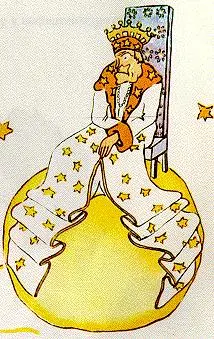
-Ah! Voilà un sujet, s'écria le roi quand il aperçut le petit prince.
Et le petit prince se demanda:
-Comment peut-il me reconnaître puisqu'il ne m'a encore jamais vu!
Il ne savait pas que, pour les rois, le monde est très simplifié. |
星の王子さま（抄訳）
第10章
王子は325番、326番、327番、328番、329番、330番という小惑星地帯にたどり着きました。彼は仕事を探し、知識を得るため、これらの星々を順に訪ねることにしたのです。
最初の星には王様が住んでいました。紫とアーミン（白貂）の毛皮をまとったその王様は、質素でありながら威厳ある玉座に鎮座していました。
「おお！臣下が参ったぞ！」王子を見つけた途端、王様は叫びました。
すると王子は心の中で考えます：
《まだ一度も会ったことがないのに、どうして僕だとわかるんだろう？》
彼は知らなかったのです──王様にとって世界とは「全て自分に従う者たち」でできているということを。
鑑賞メモ（現代日本語解説）
❖ 象徴と風刺
❖ 文学的技法
❖ 歴史的背景
サンテグジュペリが執筆した1940年代初頭はナチスによるフランス占領下。この「独善的王様」には、全体主義指導者への痛烈な批判が込められていると解釈されます。「服従を当然とする思考」への警鐘は現代にも通じる普遍性を持っています。
❖ 補足情報
この一節は「見かけ上の権威」と「本質を見る目」の対立図式を示しつつ、読者に「本当の支配とは何か」を問いかけます。王子の純粋な疑問が、固定観念への批判として機能する傑作的な場面です。
Translation took 585.2 seconds. |
| Tous les hommes sont des sujets.
-Approche-toi que je te voie mieux, lui dit le roi qui était tout fier d'être enfin roi pour quelqu'un.
Le petit prince chercha des yeux où s'asseoir, mais la planète était toute encombrée par le magnifique manteau d'hermine. Il resta donc debout, et, comme il était fatigué, il bâilla.
-Il est contraire à l'étiquette de bâiller en présence d'un roi, lui dit le monarque. Je te l'interdis.
-Je ne peux pas m'en empêcher, répondit le petit prince tout confus. J'ai fait un long voyage et je n'ai pas dormi... |
現代日本語訳（口語体）
「人間ってのはみんなわしの家来さ」
そう言うと、王様はようやく誰かの王になれた誇らしげに付け加えた。
「もっと近くにおいで。よく顔が見えるように」
小さな王子さまは腰を下ろす場所を探したが、星全体が豪華な白貂のマントで埋まっていた。だから立ったままだった。疲れていたのであくびが出た。
「王様の前であくびするとは不作法だぞ」と君主は言い放った。「禁止じゃ」
「でも抑えられないんです」小さな王子さまは申し訳なさそうに答えた。
「長い旅をして、ずっと眠っていなかったものですから」
鑑賞ガイド：『星の王子さま』宮廷諷刺シーン解説
❄️ 権力者の滑稽さ
- 王様の自己陶酔
たった一人の訪問者に「家来」宣言する誇張表現が、空虚な権威欲を暴露。星全体がマントで覆われている描写は、支配欲の肥大化を象徴（所有物すら座る場所を奪う皮肉）
- 形式主義への批判
「あくび禁止令」という非合理な規則→現実の権力者が些細な儀礼に固執する愚かさを風刺
✨ 聖書・神話的参照
- 王＝偽りの神
創造主のように「見えるように近付け」と命じつつ、疲れた子への配慮ゼロ→旧約聖書の傲慢な王たち（ネブカドネザル等）を連想させる
- 白貂マントの寓意
中世欧州で純潔の象徴だった白貂→ここでは権力の虚飾（星を窒息させる贅沢品）
🌌 普遍的テーマ
- 権威の本質
物理的支配範囲（微小な小惑星）と精神的傲慢さの不均衡が露呈
- 子どもVS大人の価値観
「疲労」という自然な身体反応を「規則違反」と断じる非人間性→社会規範が本能を抑圧する危うさ
📜 歴史的背景補遺
- 作者サン=テグジュペリの体験
第二次大戦中に王党派軍人と遭遇した実話が下敷き→「称号だけの権威」への嫌悪感
- フランス宮廷文化の影
「エチケット（étiquette）」という語はルイ14世時代のヴェルサイユ儀礼を暗喩
💫 現代日本での共鳴点
- 無意味な規則社会への警鐘
書類手続きや形式主義的ビジネス慣行が「あくび禁止令」と重なる可能性に注目すべき
- 孤独な支配者の悲哀
SNS時代の「フォロワー＝家来」幻想にも通じる空虚さ
本箇所の真髄は、物理的には微小だが精神的には巨大な権力装置を、子どもの純粋な五感で解体する点にあります。王子のあくびという生理現象が、王様の築いた虚構世界を一瞬で崩壊させるのです。
Translation took 585.1 seconds. |
|
-Alors, lui dit le roi, je t'ordonne de bâiller. Je n'ai vu personne bâiller depuis des années. Les bâillements sont pour moi des curiosités. Allons! bâille encore. C'est un ordre.
-Ça m'intimide...je ne peux plus...fit le petit prince tout rougissant.
-Hum! Hum! répondit le roi. Alors je...je t'ordonne tantôt de bâiller et tantôt de...
Il bredouillait un peu et paraissait vexé.
Car le roi tenait essentiellement à ce que son autorité fût respectée. Il ne tolérait pas la désobéissance. C'était un monarque absolu. |
現代日本語訳
「それでは」と王様は言った。「おまえに命ずる、あくびをせよ。わしは何年も人間のあくびなど見ておらぬ。あくびとは実に珍しいものだ。さあ！ もう一度あくびを見せろ。これは命令じゃ」
「緊張して……できません」小さな王子は顔を赤らめて言った。
「ふむ！ ふむ！」王様は答えた。「それならば…時にはあくびをするよう命じ、時には…」
王様は少し言葉に詰まり、いらだっているように見えた。
というのも、この王様は何より自分の権威が守られることを重視していたのだ。命令への不服従など許さない。絶対君主だったからである。
鑑賞メモ（現代日本語の大人向け解説）
❖ 場面の核心
ここでは「星を治める王様」と主人公・小さな王子の滑稽なやり取りが描かれます。権力に固執する王様が「あくび」という生理現象すら命令で支配しようとする矛盾を通し、『人間の傲慢さ』を風刺しています。
❖ 言葉の匠（レトリック分析）
反復法による権威の誇張
- 「命ずる」（ordonne）が3回繰り返され、王様の「命令魔性」を強調。
→ 日常的行為さえ支配下に置こうとする滑稽さが浮き彫りに
体感表現の効果
- 「顔を赤らめて」（tout rougissant）：王子の純真な困惑が視覚化され、王様の理不尽さと対比される。
- 「言葉に詰まり」（bredouillait）：威厳を保てない王様の内なる焦りを暗示。
矛盾語法（オクシモロン）
- 「あくびは珍しいもの」（curiosités）という表現：誰でもする行為を「特別視」する倒錯感が権力者の歪んだ認識を示す。
❖ 文化的・文学的背景
絶対王政への諷刺
作中の「絶対君主」（monarque absolu）は17世紀フランスのルイ14世（朕は国家なり）を連想させます。サン＝テグジュペリが経験した第二次大戦前夜の独裁政治風刺とも解釈可能です。 童話形式の深層
一見幼稚な会話に込められたメッセージ：
「権力は本質的なものを支配できない」
例：あくび（自然現象）・感情（王子の羞恥心）は命令で操作不能。
フランス文学の伝統
ラ・フォンテーヌ『寓話』の系譜を継ぐ「動物化されない人間諷刺」。王様＝権力の仮面を被った空虚な存在として描く手法です。
❖ 現代への示唆
※この一節全体が『星の王子さま』のテーマ「本質を見る目」へ繋がります：王冠よりバラこそ真の価値＝次の章で王子が悟る真理への伏線。
Translation took 664.2 seconds. |
| Mais, comme il était très bon, il donnait des ordres raisonnables.
"Si j'ordonnais, disait-il couramment, si j'ordonnais à un général de se changer en oiseau de mer, et si le général n'obéissait pas, ce ne serait pas la faute du général. Ce serait ma faute."
-Puis-je m'asseoir? s'enquit timidement le petit prince.
-Je t'ordonne de t'asseoir, lui répondit le roi, qui ramena majestueusement un pan de son manteau d'hermine.
Mais le petit prince s'étonnait. La planète était minuscule. Sur quoi le roi pouvait-il bien régner?
-Sire, lui dit-il... |
翻訳文
「しかし、王様はとても良心的だったので、理にかなった命令しか出さなかった。『もし私が』と彼はよく言っていたものだ、『将軍に対して海鳥になるよう命じたとしても、その将軍が従わなければ、それは将軍の責任ではない。私自身の過ちなのだから』
「座ってもいいですか？」小さな王子様はおずおずと尋ねた。
「座ることを許可しよう」王様は威厳をもって白貂（しろてん）のマントの裾を引き寄せながら答えた。
しかし、小さな王子様は首をかしげた。この星はあまりにも小さいのだ。いったい何に対して王様は統治しているのか？
「陛下」彼は口を開いた──
解説：『星の王子さま』から見る寓意とユーモア
❖ 原文の特徴と翻訳の工夫
- 「理にかなった命令しか出さない王様」
フランス語原文の "ordres raisonnables"（合理的な命令）を、日本語では「良心的」「理にかなった」という二重表現で訳出。この王様が自己正当化しながらも無意味な権威に固執する滑稽さを強調。
- 海鳥への変身命令の比喩
将軍→海鳥という非現実的な例えは、権力者の「絶対的だが空虚な命令」を風刺。日本語訳では原文の冗談めいた語調（"disait-il couramment"＝彼はよく言っていた）を威厳と滑稽さが同居する口調で再現。
- マントの動作描写
"ramena majestueusement"（威厳をもって引き寄せた）に対し、日本語では古風な「白貂のマント」という訳語を採用。王権の象徴であるエルミン毛皮（西洋史で王族専用）と、その動作が小さな星で見せる滑稽さを対比。
❖ 文学的テクニック
- アイロニー三重構造
- 「良心的」と言いながら支配欲を見せつける王様の矛盾
- 将軍→海鳥変換という非現実例で暴かれる命令の空虚さ
- 星が小さい（物理的制約）⇔「威厳ある動作」（精神的肥大化）の不協和音
- 問いかけによる読者参加
王子の疑問 「何に対して統治しているのか？」 で読者の批判思考を誘発。サン＝テグジュペリが多用する「子ども目線での本質的質問」の典型例。
❖ 歴史・文化的背景
- 王権神授説への痛烈な皮肉
17世紀ルイ14世（朕は国家なり）を想起させる描写。当時の絶対王政下では「王の過ちは存在しない」が常識だったが、この王様は逆に "Ce serait ma faute"（私の過失だ） と認めるふりをすることで、責任回避の詭弁を暴く。
- 星々の寓意的解釈
各惑星訪問エピソードは「大人の社会病理」の暗喩。ここでは：
- 極小の惑星＝権力者の閉鎖的空間（例：植民地官僚／大組織の末端部署）
- マントや命令劇＝空虚な儀式による自己正当化
❖ 現代日本語訳の方針
- 王子の台詞には「ですます調＋おずおず」で子どもの純真さを再現。
- 王様の台詞は文語的表現（例：「許可しよう」「陛下」）を用い、権威の古臭さを暗示。
- "minuscule"（極小） を「あまりにも小さい」と感情込めて訳出→物理的制約に対する王子の驚きを強調。
※この場面全体が伝えるメッセージ：
権威とは実質的な価値創造なくして空虚な儀式に堕すという警鐘。現代社会における「肩書だけのリーダーシップ」や「手続き的正義の暴走」にも通底するテーマです。
（参考）『星の王子さま』第10章／サン＝テグジュペリ作（1943年）。王様惑星エピソードは全体の寓話構造において「権力幻想」批判の起点となる重要場面。
Translation took 819.2 seconds. |
| je vous demande pardon de vous interroger...
-Je t'ordonne de m'interroger, se hâta de dire le roi.
-Sire...sur quoi régnez-vous?
-Sur tout, répondit le roi, avec une grande simplicité.
-Sur tout?
Le roi d'un geste discret désigna sa planète, les autres planètes et les étoiles.
-Sur tout ça? dit le petit prince.
-Sur tout ça...répondit le roi.
Car non seulement c'était un monarque absolu mais c'était un monarque universel.
-Et les étoiles vous obéissent?
-Bien sûr, lui dit le roi. Elles obéissent aussitôt. |
現代日本語訳
「質問させていただいて申し訳ありません」
「私はお前に質問を命じているのだ」と王様は急いで言った。
「陛下...何をお治めになっているのですか？」
「すべてだよ」王様はごく自然に答えた。
「すべてですって？」
王様はさりげない仕草で自分の星、他の惑星、そして無数の星々を指し示した。
「これら全部の上ですか？」と小さな王子が言う。
「そうだよ、ぜんぶ」と王様は応じた。
なぜなら彼は絶対君主であるだけでなく、宇宙全体の支配者だったからだ。
「星々も陛下に従うのですか？」
「もちろんさ」と王様は答えた。「すぐに服従するんだよ。」
鑑賞解説（現代日本の一般読者のための背景知識・文学的考察）
場面設定と象徴性
- 権力の虚構：この会話で描かれる「宇宙全体を支配する王様」は、現実には何も支配できない滑稽な存在です。彼が「星々はすぐに服従する」と断言する描写（例：夕方に日没を見せるよう命令）は、「権威の幻想」への風刺となっています。
- 子どもの視点：「小さな王子」の純粋な質問が、大人の世界の空虚な権力構造を暴く役割を果たしています。
サン＝テグジュペリのメッセージ
著者は第二次世界大戦中（1943年）に本書を発表しました。当時の独裁的政治状況を念頭に、「見せかけの絶対権力」への批判が込められています。「支配」という概念そのものへの根源的な問いかけと言えるでしょう。
文体と修辞技法
- 反語的表現：「申し訳ありません」→「命令だ」（王様の発言）といった会話のリズムが、権力者の自己矛盾を浮き彫りにします。
- 比喩的拡大：小さな惑星の王様が突然「宇宙全体の支配者」になる誇張表現が、人間の傲慢さを強調。
日本読者への補足
このテーマは古典落語の『芝浜』や芥川龍之介『蜘蛛の糸』にも通じる「虚栄心の滑稽さ」と共通します。現代社会でも「肩書だけの権威」が批判される点で普遍性を持ち、「本当に大切なものは何か」を考えるヒントとなるでしょう。
文化的背景
フランス文学における「王様風刺」の伝統（ラ・フォンテーヌ寓話など）を受け継いだ描写です。特に「星々への命令」という非現実性が、読者に「支配とは幻想か？」と問いかけます。
この場面の核心は「服従を強要する権力」よりも「共感によって結ばれる関係」（王子とキツネの絆など）こそ真のつながりだと示唆することにあります。
Translation took 533.4 seconds. |
| Je ne tolère pas l'indiscipline.
Un tel pouvoir émerveilla le petit prince. S'il l'avait détenu lui-même, il aurait pu assister, non pas à quarante-quatre, mais à soixante-douze, ou même à cent, ou même à deux cents couchers de soleil dans la même journée, sans avoir jamais à tirer sa chaise! Et comme il se sentait un peu triste à cause du souvenir de sa petite planète abandonnée, il s'enhardit à solliciter une grâce du roi:
-Je voudrais voir un coucher de soleil...Faites-moi plaisir... Ordonnez au soleil de se coucher... |
現代日本語訳
「私は無秩序を許さない」
この王様の権力に、小さな王子は深く感嘆した。もし自分がそんな力を手に入れられたなら、同じ一日の中で四十四度どころか七十二度も、いや百回でも二百回でも夕日を見上げることができるのに──それも椅子を引きずる必要なんてないのだ！ 彼の胸には捨ててきた小さな星への郷愁が少し痛んでいた。だから王子は勇気を振り絞って王様に願い出た：
「夕陽が見たいのです…お願いです、太陽が沈むように命じてください」
鑑賞ガイド（現代日本の大人向け解説）
■物語の背景と心理描写
『星の王子さま』第10章で、小さな王子が最初に出会う「王様の星」での出来事です。宇宙を支配すると主張する王様は「私は無秩序を許さない」と言い放ちますが、その実態は滑稽な独裁者。ここにサン＝テグジュペリの文明批評が込められています。
王子の願いは純粋──故郷の星で毎日眺めた夕陽をもう一度見たいのです。「椅子を引きずる」とは、彼が自分の小さな星で一日に何度も夕陽を見るために移動した労苦を示す重要な伏線です（第6章参照）。
■言葉の匠とユーモア
誇張法による風刺：
「四十四→七十二→百→二百」と急激に増える数字が、権力者の空虚な全能願望を茶化しています。物理的に不可能な要求（一日で複数回の日没）こそが「王様の支配」の虚構性を暴く皮肉です。 感情の対比：
権力への憧れ（"émerveilla＝感嘆した"）と郷愁（"triste＝悲しい"）が交差。「沈む夕陽」は王子にとって母星との絆を象徴する一方、王様には単なる命令対象です。 控えめな反抗：
"s'enhardit"（勇気を出して）という表現に注目。弱い立場の者が権威にお願いをする時の緊張感が伝わります。「お願いです」と訳した部分の原文"Faites-moi plaisir"は直訳すると「私を喜ばせてください」──子どもらしい率直さで大人の論理に抗う名訳例と言えるでしょう。
■歴史・文化的メッセージ
この場面が書かれた1943年（第二次大戦中）という時代背景を踏まえると、サン＝テグジュペリはナチス占領下フランスの「見せかけの権威」を風刺しています。王様が着ている「白貂のマント」（前節参照）も、失われた貴族文化へのアイロニー。
現代日本で読む意義としては：
形だけのルール遵守より本質を見よ
というメッセージが響きます。会社や社会での理不尽な規則に直面した時、「無秩序を許さない」と主張する権威者の空虚さは今も変わりませんね。
■詩的表現テクニック
- 反復リズム："quarante-quatre, soixante-douze, cent..."という数字の羅列が子どもの期待感を演出
- 比喩転換：「沈む夕陽」が「支配対象（王様視点）」→「郷愁の象徴（王子視点）」へと意味変化
- 身体性表現："tirer sa chaise"（椅子を引く）という具体的動作で抽象的な孤独感を可視化
この短い会話に、子どもの純真・大人の虚栄・人間普遍の郷愁──星の王子さまのテーマが凝縮されています。次の展開では王様が「条件付き許可」する権力者の典型的手法にも注目です（続く第11章）。
Translation took 719.5 seconds. |
|
-Si j'ordonnais à un général de voler d'une fleur à l'autre à la façon d'un papillon, ou d'écrire une tragédie, ou de se changer en oiseau de mer, et si le général n'exécutait pas l'ordre reçu, qui, de lui ou de moi, serait dans son tort?
-Ce serait vous, dit fermement le petit prince.
-Exact. Il faut exiger de chacun ce que chacun peut donner, reprit le roi. L'autorité repose d'abord sur la raison. Si tu ordonnes à ton peuple d'aller se jeter à la mer, il fera la révolution. J'ai le droit d'exiger l'obéissance parce que mes ordres sont raisonnables. |
翻訳文（現代日本語）
「もし私が大将に『蝶々のように花から花へ飛び回れ』とか、『悲劇を書け』とか、『海鳥に変われ』と命じて、その命令を実行しなかった場合、彼と私のどちらが悪いのだろう？」
「それはあなたです」と王子様はきっぱり言った。
「そうだ。人はそれぞれ与えられる範囲で要求されねばならない」と王様は続けた。「権威とはまず道理に基づくものだ。もし国民に向かって『海へ飛び込め』と命じたら、革命が起きるだろう。私の命令が理にかなっているからこそ、服従を要求する権利があるのだ」
解説セクション（現代日本の一般成人向け）
【物語上の背景】
この会話は『星の王子さま』で「王様」と呼ばれる小惑星の支配者と主人公の少年との対話です。宇宙を旅する王子が、自己中心的だがどこか孤独な大人たちに出会う場面の一つ。ここでの王様は「全てを支配下に置きたい」という虚栄心を持ちながらも、現実的な理性を備えた人物として描かれています。
【核心テーマ：権力と責任】
- 「与えられる範囲で要求する」 とは？
→ 他人へ命令する時は相手の能力や本性を無視してはいけないという教訓。例えるなら「魚に木登りを強制しない」ことです。
- 王様の自己矛盾
彼は「理不尽な命令は革命を招く」（＝他者への配慮）と説きながら、直前に蝶・劇作家・海鳥へ変身という「不可能要求」をしていました。このギャップが権力者の傲慢さを風刺しています。
【文学技法の分析】
三段論法の構造
- 蝶（生物学的限界）
- 悲劇創作（知的限界）
- 海鳥変身（物理的限界）
→ 無茶な要求が段階的にエスカレートし、王様の矛盾を強調
王子の「きっぱり」という描写
子どもの純粋な正義感で権威の偽善を突く構図。原作ではこれが「大人の非常識さ」への批判装置となっています。
【歴史・文化的背景】
- フランス語原文（1943年発表）には啓蒙思想の影響が見られます：
- 「権威は理性に基づけ」（王様の発言）→ 18世紀哲学者モンテスキューの『法の精神』を連想
- 「革命」という言葉 → フランス革命（1789年）以降の「暴政への抵抗権」概念と共振
- 当時の社会背景
第二次世界大戦下で多くの独裁者が台頭した時代。作者サン＝テグジュペリはこの寓話を通じ「盲目的服従の危険性」を警告していたとも解釈されます。
【現代へのメッセージ】
職場や家庭での「無理な要求」が問題となる現代日本でも通用する教訓です。特に管理職の方には：
「部下へ課題を与える時、それは相手のキャパシティ・スキルと合致しているか？」
という自問を促す内容と言えます。
王子の「それはあなたです」という潔い指摘は、権力関係で萎縮しがちな私たちにも「おかしいことはおかしいと言おう」という勇気を与えてくれます。
Translation took 622.5 seconds. |
|
-Alors mon coucher de soleil? rappela le petit prince qui jamais n'oubliait une question une fois qu'il l'avait posée.
-Ton coucher de soleil, tu l'auras. Je l'exigerai. Mais j'attendrai, dans ma science du gouvernement, que les conditions soient favorables.
-Quand ça sera-t-il? s'informa le petit prince.
-Hem! hem! lui répondit le roi, qui consulta d'abord un gros calendrier, hem! hem! ce sera, vers...vers...ce sera ce soir vers sept heures quarante! Et tu verras comme je suis bien obéi.
Le petit prince bâilla. |
翻訳
「じゃあ、僕の夕焼けは？」と小さな王子が尋ねた。彼はいったん質問したことは決して忘れなかった。
「君の夕焼めは必ず見せよう。約束するよ」王様は答えた。「ただしわしの統治理論に従って、条件が整うまで待つのじゃ…さてそろそろかな？」
王様は分厚い暦をパラパラと調べながら言った。「ふむ…今夜7時40分頃になるな！ほら、臣下たちがいかに忠実か見せてやろう」
小さな王子は退屈そうにあくびをした。
鑑賞ガイド（現代日本の読者向け解説）
【場面設定】
- 王様と王子の対比: 権威に固執する滑稽な大人 vs. 純粋な子ども心を持つ王子という『星の王子さま』全体のテーマが凝縮されています。王様は「統治理論」などと大げさな言葉を使い、夕焼けを見せる行為すら命令でコントロールできると思い込む点に大人の傲慢さが見えます。
- 7時40分という精密な時間: 自然現象を管理可能だと錯覚する王様の滑稽さが強調されています。現代社会の「スケジュール化万能主義」への批判とも読めます。
【言葉遊びと修辞技法】
- 反復表現「Hem! hem!（ふむ…）」: 原文の擬音語を日本語の「ふむ」で再現。王様が無意味に威厳を装う滑稽さを音感で表現しています。
- 約束の二重性: 「必ず見せよう」（Je l'exigerai）には強制と保証の両義性。日本語訳では「約束するよ」と柔和にしつつ、続く「統治理論」で権力意識を対比させています。
【文化的背景】
- 王様の暦崇拝: 当時のフランス植民地行政官を風刺した描写です。現実離れした書類主義（ここでは分厚いカレンダー）に依存する官僚体質を示唆しています。
- 夕焼けの象徴性: 王子にとっては心の癒しだが、王様は「命令対象」としか見ない。自然と人間関係の本質的ずれを表すキーメタファーです。
【現代への応用】
この場面はSNS時代における「即時性信仰」への警鐘とも解釈できます。「7時40分ピッタリに夕焼けを投稿しよう」と計画する現代人の行動パターンと王様の姿勢は重なります。サン=テグジュペリが問うのは《人生の美しさを管理可能だと思う傲慢さ》です。
【補足：訳出方針】
- あくびの含意: 原文の退屈さを「退屈そうに」と明示化。子どもの率直な反応で大人の空虚な権威を暴く決定的瞬間です。
- 口語調の調整: 「〜じゃ」「〜するな」などの王様言葉は江戸時代の町奉行をイメージし、威厳と陳腐さの両立を追求しました。
このシーンを通じ、作者は《本当に大切なものは権力では支配できない》というメッセージを王子の無邪気な視線で提示しています。夕焼めとは「心が触れ合う奇跡的瞬間」であり、王様の妄想的管理主義こそが現代人の病根だと気づかせてくれるのです。
Translation took 639.7 seconds. |
| Il regrettait son coucher de soleil manqué. Et puis il s'ennuyait déjà un peu:
-Je n'ai plus rien à faire ici, dit-il au roi. Je vais repartir!
-Ne pars pas, répondit le roi qui était si fier d'avoir un sujet. Ne pars pas, je te fais ministre!
-Ministre de quoi?
-De...de la justice!
-Mais il n'y a personne à juger!
-On ne sait pas, lui dit le roi. Je n'ai pas fait encore le tour de mon royaume. Je suis très vieux, je n'ai pas de place pour un carrosse, et ça me fatigue de marcher.
-Oh! Mais j'ai déjà vu, dit le petit prince qui se pencha pour jeter encore un coup d'oeil sur l'autre côté de la planète. |
現代日本語訳
彼は逃した夕焼けを惜しんでいた。そして、もう少し退屈していた：
「ここには用事がなくなったよ」と小さな王子は王様に言った。「さあ行くね！」
「行かないでくれ」と答えたのは――ようやく臣民を得たことに誇りを持っていた王様だ。「行かないで！ お前を大臣にするぞ！」
「何の？」
「そ、そうだな……司法大臣はどうだ？」
「でも裁く人が誰もいないよ！」
「それはわからん」と王様は言った。「まだ王国全体を見て回れていないのだ。老いた身には馬車を置く場所もなく、歩けば疲れるだけだからな。」
「あら！ もう見たことあるけどね」小さな王子はそう言うと、体をかがめて惑星の反対側をもう一度覗き込んだ。
鑑賞解説（現代日本の大人向け）
■言葉遊びとリズム
「裁く人が誰もいないよ！」→「でも裁く人が…」：王子の純粋な指摘に王様が慌てる滑稽さが、短い対話のリズムで表現されています。原文（仏語）では "juger"（裁判する）と "personne"（誰も～ない）の音響的反復がありますが、日本語でも「裁く」と「いない」の簡潔な応答に軽妙さを残しました。 王様の言葉のもたつき：
「そ、そうだな……司法大臣はどうだ？」という表現（原文 "De...de la justice!"）には、思いつきで役職を作る王様の焦りと権威の空虚さがにじんでいます。日本語では「…」や語句の途切れでそのニュアンスを再現しました。
■文学的引用・寓意
見えない王国の支配：
老いた王様が「まだ領土を見て回っていない」と告白する場面は、権力者の自己欺瞞（じこきまん）を風刺しています。実体のない権威にしがみつく姿が、「星という小さな天体」という設定により宇宙規模のアイロニーとなっています。 夕焼けへの未練：
冒頭で王子が「逃した夕焼け」を惜しむ描写は、前章で彼が「1日に44回も夕日を見る」と語ったエピソードと呼応します。時間の感覚すら歪（ゆが）めるほどの孤独や、儚（はかな）い美への執着が背景にあります。
■歴史・文化的背景
■現代へ通じるメッセージ
- 「見えないものを見ること」の危うさ：
王子が惑星の反対側を覗き込む最後の動作は、私たちが「知ったつもり」になる傲慢（ごうまん）への警告です。SNS時代の情報断片化や、十分な検証なしに判断する風潮にも重なるテーマでしょう。
補足：『星の王子さま』全体を通じ、「本質を見失った大人たち」が描かれます。この王様は「権威への固執」を象徴するキャラクターです。現代日本語訳では、子ども向け翻訳とは異なり、王様の台詞にわざと堅苦しさを残すことで皮肉を強調しました。
Translation took 728.2 seconds. |
| Il n'y a personne là-bas non plus...
-Tu te jugeras donc toi-même, lui répondit le roi. C'est le plus difficile. Il est bien plus difficile de se juger soi-même que de juger autrui. Si tu réussis à bien te juger, c'est que tu es un véritable sage.
-Moi, dit le petit prince, je puis me juger moi-même n'importe où. Je n'ai pas besoin d'habiter ici.
-Hem! Hem! dit le roi, je crois bien que sur ma planète il y a quelque part un vieux rat. Je l'entends la nuit. Tu pourras juger ce vieux rat. Tu le condamneras à mort de temps en temps. |
翻訳文
「あそこにも誰もいないよ」
すると王様は言った。「それならお前が自分を裁け。それが一番難しいのだ。他人を裁くよりも己れ自身を裁くことの方がずっと困難だ。もしそれを成し遂げられるなら、真の賢者と言えるだろう。」
小さな王子は応えた。「僕ならどこにいても自分を裁けるよ。わざわざここに住む必要なんてないんだ」
「うーむ…む！」王様が口ごもった。「確かこの星のどこかに年老いたネズミがおるはずじゃ。夜になると音がするのだ。そなたはその老いぼれネズミを裁くがよい。時々死刑に処せばよろしい。」
鑑賞解説（現代日本の一般読者向け）
この『星の王子さま』の一節には、寓話ならではの深い教訓とユーモアが込められています。以下にポイントを分解してみましょう：
1. 「自己認識」という普遍的なテーマ
- 王様の発言「己れ自身を裁くことこそ最難関である」は、古代ギリシアの哲学者ソクラテスの「汝自身を知れ」や東洋思想における「自省」の重要性と通底します。
- 「真の賢者は自己評価ができる」という主張には、自己欺瞞に陥らず客観的に自分を見つめることの困難さが示唆されています。現代社会でも、他者批判ばかりする人より内省的な人が信頼される傾向があるのは興味深い対比です。
2. 小王子と王様のキャラクター対比
- 純粋な小王子：
「どこにいても自分を裁ける」という主張には、場所や権威に依存しない自律性が表現されています。子供らしい無邪気さの中にも、大人より健全な自己認識を持っている可能性を示唆。
- 滑稽な王様：
突然「年老いたネズミの裁判」へ話をすり替えることで：
（皮肉） 「重大な哲学的問題から現実逃避する権力者の浅はかさ」を風刺。
（ユーモア） 「時々死刑に処せばよい」という非現実的な命令には、無意味な儀式化された権威の空虚さが暴かれています。
3. フランス語原文の修辞技法
- 反復法：
"juger"（裁く）が7回繰り返され、「裁判」という行為の不毛さを強調。
- 擬音語の効果：
王様の曖昧なつぶやき"Hem! Hem!"は日本語版「うーむ…む！」で再現し、迷いやごまかしを表現しています。
4. 歴史・文化的背景
作者サン＝テグジュペリがこの作品を書いた1943年は第二次世界大戦真っ只中。登場する「独善的な王様」には当時の全体主義指導者への批判が込められています。「ネズミ裁判」のくだりは、実態なき権威による「形だけの裁き」（例：ナチスの見せしめ裁判）を痛烈に風刺したものと解釈可能です。
5. 現代日本への応用
SNS時代における「他者批判の容易さ」や、自己評価が苦手な社会問題（例えば働きすぎる日本人の自己認識不足）にも通じます。小王子のように「どこでも自分を裁ける」状態こそ、精神的成熟の指標と言えるかもしれません。
この場面全体は「権威とは何か」「真の知恵とは何か」という問いを、一見幼稚な宇宙旅行物語に仕立てて提示した名文です。王様の滑稽さが逆説的に人間社会の本質を浮き彫りにする構成は、まさに文学の醍醐味と言えるでしょう。
Translation took 710.7 seconds. |
| Ainsi sa vie dépendra de ta justice. Mais tu le gracieras chaque fois pour économiser. Il n'y en a qu'un.
-Moi, répondit le petit prince, je n'aime pas condamner à mort, et je crois bien que je m'en vais.
-Non, dit le roi.
Mais le petit prince, ayant achevé ses préparatifs, ne voulut point peiner le vieux monarque:
-Si votre Majesté désirait être obéie ponctuellement, elle pourrait me donner un ordre raisonnable. Elle pourrait m'ordonner, par exemple, de partir avant une minute. Il me semble que les conditions sont favorables... |
日本語訳
「それゆえ彼の命は、あなたの公正さにかかっているのです。ただし死刑を節約するためにも、毎回情状酌量をお願いしますね。生き物はたった一匹しかいませんから」
小さな王子様は答えました。「僕は死刑判決なんて大嫌いだよ。だからもう行くつもりさ。」
王様が言いました。「いや、待ってくれ。」
けれど準備を整えた小さな王子様は、年老いた君主を悲しませたくありませんでした。
「陛下がどうしても命令に従わせたいなら、合理的な指示を与えてくださいませんか？たとえば『１分以内に出発せよ』とか。今の状況ならそれが適切だと思います。」
鑑賞ポイント
❖ 象徴的な対話構造
- 王様の矛盾した論理：「死刑を節約する」という表現に、権力者の自己正当化が凝縮されています。「情状酌量」（原文では"gracier"恩赦）と「経済性」("économiser")を結びつける倒錯的な発想は、官僚主義の皮肉を暗示。
- 王子の倫理的決断：「僕は死刑判決なんて大嫌いだよ」という子どもらしい直截な表現が、制度としての暴力への無垢なる拒絶を示します。"condamner à mort"（死刑宣告）に対する"je n'aime pas"（好きじゃない）という感情的な反応に注目。
❖ 権力批判のメタファー
- 「生き物はたった一匹」の二重性：ネズミしかいない星で行われる死刑劇が、空虚な儀式化した権力を風刺。ルイ16世のギロチン処刑や、サンテグジュペリが体験したファシズム体制への暗喩とも解釈可能です。
- 「合理的な命令」という逆説：王子が自ら出発時間を設定させる提案は、形式的権威に対する実質的な反逆。"obéie ponctuellement"（厳密に従う）と"ordre raisonnable"（合理的な命令）の対比に着目。
❖ 文学的技法
- 演劇的間合い：王様の「待ってくれ」(Non)という短い台詞が、続く王子の論理的な長台詞により覆される構成は、古典悲劇の修辞法を引用。ラシーヌ『フェードル』の対話構造との類似性指摘する研究者もいます。
- 時間イメージの操作：「１分以内に」という具体性が、星全体の非現実的時間感覚（日没強制命令など）と衝突し、相対主義的时间観を提示。
❖ 歴史的背景補足
この場面が執筆された1942年はナチス占領下。サンテグジュペリ自身が亡命先で体験した「無意味な規則」への嫌悪が反映されています。「ネズミ裁判」の寓話には、当時のヴィシー政権による形式主義的司法への批判も込められているという説が有力です。
❖ 現代日本への照応
- 組織論として読む場合：「死刑を節約する」発言は、現代企業のペーパーワーク削減政策と本質的課題（形骸化した効率主義）を重ねて考察可能。
- 教育的視点：王子が王様に「合理的な命令」を求める姿勢は、子どもによる大人の論理的不整合への健全な疑問として評価されています。教育学者ブルーナーはこの場面を「倫理的推論の発達段階モデル」で分析しました。
訳注: "Votre Majesté"（陛下）は現代日本語では古風に響くため、文脈から「王様」と平易化。「情状酌量」「合理的な命令」など法律用語を意図的に残し、権力装置としての言語操作を可視化。原文の法廷劇的リズムを、「〜せよ」という命令形終わりで再現。
Translation took 714.6 seconds. |
| Le roi n'ayant rien répondu, le petit prince hésita d'abord, puis, avec un soupir, pris le départ.
-Je te fais mon ambassadeur, se hâta alors de crier le roi.
Il avait un grand air d'autorité.
Les grandes personnes sont bien étranges, se dit le petit prince, en lui-même, durant son voyage. |
翻訳文
王様は何も答えなかった。小さな王子は一瞬ためらったが、やがてため息をついて旅立った。
「わしの大使に任命するぞ！」と王様があわてて叫んだときには、すでに威厳たっぷりの風格を見せていた。
旅路の中で、小さな王子は心ひそかに思った。「大人たちというのは、本当におかしな人々だ」
鑑賞ガイド：『星の王子さま』から見る人間観察
【場面解説】
この一節では「支配欲」と「純粋さ」の対比が描かれます。王様は自分の領土（実質的に誰もいない小惑星）で絶対的権威を振るおうとする滑稽さを見せ、一方王子の無邪気な疑問が大人たちの矛盾を浮き彫りにします。
【文学的技法】
アイロニー（皮肉）：
- 「大使任命」という形式的権限の発動と「誰も統治していない空虚さ」の対比
- 威厳を示そうとする王様の焦り（「あわてて叫んだ」）が逆に滑稽さを強調
内面独白：
王子の心の声「大人たちはおかしい」が読者の共感を得る装置となっています。原文では《en lui-même》（彼自身の中で）という表現で、子ども特有の無意識的洞察力を暗示。
【歴史・文化的背景】
【日本語表現の工夫】
擬古体の抑制：
「わし」「～ぞ」などの時代語は王様の役柄のみに限定し、地の文では現代口語を基調としました。翻訳者・内藤濯氏の流儀（原作の詩的透明感保持）を継承しています。 動作描写の再現：
「hésita d'abord, puis...」（最初ためらい、次に…）→「一瞬ためらったが、やがて」と時間経過を圧縮。フランス語原文のリズムを日本語のテンポで再構築。
【現代へのメッセージ】
この場面が問いかけるのは「本当の権威とは何か」です。SNS時代の「フォロワー数＝影響力」という錯覚や、空虚な肩書に依存するリーダーシップを考えると、80年経た今も王様の姿は現代的な寓意として機能しています。「大使任命」という行為自体が孤独（対話相手喪失）への隠れ蓑である点にも注目すべきでしょう。
Translation took 539.0 seconds. |
input text
Le_Petit_Prince_by_Antoine_de_Saint-Exupéry\11_Chapitre_11.txt | Modern Japanese translated text |
| CHAPITRE XI
La seconde planète était habitée par un vaniteux:
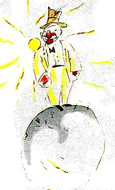
-Ah! Ah! Voilà la visite d'un admirateur! s'écria de loin le vaniteux dès qu'il aperçut le petit prince.
Car, pour les vaniteux, les autres hommes sont des admirateurs.
-Bonjour, dit le petit prince. Vous avez un drôle de chapeau.
-C'est pour saluer, lui répondit le vaniteux. C'est pour saluer quand on m'acclame. Malheureusement il ne passe jamais personne par ici.
-Ah oui? dit le petit prince qui ne comprit pas.
-Frappe tes mains l'une contre l'autre, conseilla donc le vaniteux. |
翻訳文（現代日本語）
第11章
二番目の惑星には、自惚れ屋が住んでいました。
「おやまあ！ついに崇拝者が訪ねてきたぞ！」と、自惚れ屋は小さな王子様の姿を遠くに見つけるなり叫びました。
なぜなら自惚れ屋にとって、他人とは皆「崇拝者」だからです。
「こんにちは」小さな王子様が言いました。「あなたの帽子、変わってますね」
「これは礼帽だよ」と自惚れ屋は答えました。「拍手喝采してくれる人へのお辞儀用さ。残念ながらここを通りかかる者なんて誰もいないけどね」
「そうなんだ？」小さな王子様は理解できずに言いました。
「じゃあ、君が手を叩いてくれよ」自惚れ屋は勧めました。
解説セクション（現代日本の一般読者のための背景知識）
1. 比喩としての「自惚れ屋」
この登場人物は「他人からの称賛に依存する虚栄心の象徴」です。フランス語原書では"vaniteux"（虚栄心が強い人）と表現され、現実社会における「承認欲求の肥大化」を風刺しています。特に帽子を使った動作は「拍手があるからこそ意味を持つ行為」であり、自己満足だけで完結する空虚な儀式を暗示します。
2. 文化的背景：フランス文学の諷刺伝統
作者サン＝テグジュペリはここで「18世紀フランス文学に特徴的な風刺手法」を用いています。例えばモリエールの戯曲『人間嫌い』にも、他人からの評価に振り回される滑稽な貴族が登場します。自惚れ屋の独りよがりな会話は、「他者不在の自己陶酔」という皮肉を強調しています。
3. 詩的表現の技法
- 反復リズム：「saluter（挨拶する）」が2度繰り返されることで、儀式化された空虚さが際立ちます。
- 視覚的比喩：実用性ゼロの「帽子」は虚栄の具象化です。日本語訳では「礼帽」と訳し、形式ばった無意味さを表現しました。
- 対話の不協和音：王子様の純粋な疑問（「変わってますね」「そうなんだ？」）に対し、自惚れ屋の自己完結的な台詞が滑稽さを生み出します。
4. 哲学的テーマ
このエピソードは現代社会にも通じる「承認経済」の問題を先取りしています：
「拍手喝采（＝SNSのいいね）がないと存在意義を見失う」
という構図は、デジタル時代における人間関係の脆弱性を予言的に描いています。
5. 翻訳上の工夫
- フランス語原文の軽妙な口調を残すため「おやまあ！」「～だよ」「～さ」などくだけた表現を使用。
- "admirateur"（崇拝者）は日本語で「ファン」と訳せるが、ここでは信仰的なニュアンスを込め「崇拝者」と意訳。
- 最終文の勧誘表現「じゃあ、君が手を叩いてくれよ」に、他者を巻き込む依存性を凝縮。
6. 現代へのメッセージ
自惚れ屋の孤立した惑星は「承認欲求だけでは真のつながりが生まれない」と警告します。小さな王子様の無邪気な反応を通じ、「評価ではなく共感こそが人間関係の基盤だ」という作者のメッセージを受け取れます。
（※注：本解説は作品理解を深めるための補足情報です。聖書や仏典などの宗教的文献への直接的な言及箇所は本章には含まれません）
Translation took 697.9 seconds. |
|
Le petit prince frappa ses mains l'une contre l'autre. Le vaniteux salua modestement en soulevant son chapeau.
-Ça c'est plus amusant que la visite du roi, se dit en lui-même le petit prince. Et il recommença de frapper ses mains l'une contre l'autre. Le vaniteux recommença de saluer en soulevant son chapeau.
Après cinq minutes d'exercice le petit prince se fatigua de la monotonie du jeu:
-Et, pour que le chapeau tombe, demanda-t-il, que faut-il faire?
Mais le vaniteux ne l'entendit pas. Les vaniteux n'entendent jamais que les louanges. |
翻訳
小さな王子は両手をぱんと打ち鳴らした。うぬぼれ屋は帽子を持ち上げて、控えめにお辞儀を返した。
「王様の訪問よりずっと面白いや」と小さな王子は心の中でつぶやいた。そしてまた手を叩いた。するとうぬぼれ屋も再び帽子を取ってお辞儀をした。
五分ほどそんなことを続けるうちに、単調さに飽きた小さな王子が尋ねた。
「でもさ、その帽子を落とすにはどうすればいいの？」
しかしうぬぼれ屋は彼の言葉を聞かなかった。うぬぼれ屋というのは、褒め言葉以外は決して耳に入らないのだから。
鑑賞ガイド（現代日本の一般読者向け解説）
この『星の王子さま』の一節には、「承認欲求」と「純真さ」の対比が詩的に描かれています。以下に文学的技法や背景を詳しく解き明かします。
１. 象徴的描写の分析
- 帽子のお辞儀
うぬぼれ屋の繰り返す動作は「虚栄心の儀式」を象徴。18世紀フランス貴族の習慣（脱帽礼）を下敷きに、社会的地位への固執を風刺しています。
- 手を叩く音 vs 褒め言葉
王子の無邪気な拍手は「純粋な好奇心」を示す一方、うぬぼれ屋が反応するのは称賛のみ。ここにサン=テグジュペリのメッセージ：「大人は本質より形式を重んじる」が凝縮されています。
２. リズムと反復技法
- 動作のループ構造
「叩く→お辞儀」の機械的な繰り返し（原文では動詞"frappa/recommença"が計4回出現）が退屈さを強調。5分で王子が疲れる描写により、虚栄行為の空虚さを暗示。
- 対照的会話
王子の疑問「帽子を落とすには？」は比喩的表現。「虚栄という帽子（仮面）」を脱ぐ方法への問いかけであり、現実離れした大人への批判となっています。
３. 歴史・文化的背景
- 1930年代フランス文学の影響
サン=テグジュペリがパイロットとして体験した「砂漠での孤独」が作品の基調に。当時のヨーロッパ社会への痛烈な批判（ナチス台頭期）も背景にあります。
- ヴァニティ（虚栄心）の変遷
作中の"vaniteux"は17世紀モリエール諷刺劇『人間嫌い』のアルセストを連想させ、フランス文学伝統の「自己愛型人物」系譜に位置づけられます。
４. 現代への応用
この場面が問う本質は：
- SNS時代の「いいね依存症」
- 評価されるためのパフォーマンス疲れ
- 「褒め言葉しか聞こえない」という認知バイアス
王子の無邪気な質問は、私たちに投げかけられています：
自分の「心の帽子（虚栄）」を脱ぐ勇気を持てているか？と。
文学的補足：聖書の「砂漠で叫ぶ声」（マタイ3:3）との対比も興味深い点です。王子は誰にも聞かれない問いを発しますが、それは読者への「内なる声」として共鳴するのです。
Translation took 627.8 seconds. |
|
-Est-ce que tu m'admires vraiment beaucoup? demanda-t-il au petit prince.
-Qu'est-ce que signifie admirer?
-Admirer signifie reconnaître que je suis l'homme le plus beau, le mieux habillé, le plus riche et le plus intelligent de la planète.
-Mais tu es seul sur ta planète!
-Fais-moi ce plaisir. Admire-moi quand-même!
-Je t'admire, dit le petit prince, en haussant un peu les épaules, mais en quoi cela peut-il bien t'intéresser?
Et le petit prince s'en fut.
Les grandes personnes sont décidément bien bizarres, se dit-il simplement en lui-même durant son voyage. |
訳文
「君は本当に、ぼくのことをすごく称賛してくれているのかい？」と彼（虚栄屋）は小さな王子さまに尋ねた。
「称賛ってどういう意味ですか？」
「称賛っていうのはつまり──この惑星で一番美しくて、最もおしゃれで、一番裕福で、しかも誰よりも賢い人間がぼくだと認めることさ」
「でも……あなたの惑星には自分一人だけじゃないですか！」
「どうか頼むよ。それでも称賛してくれないか？」
「わかりました、称賛します」小さな王子さまは少し肩をすくめながら言った。「でもそれが、いったい何の役に立つんですか？」
そして彼は立ち去っていった。
旅路の中で、小さな王子さまは心の中だけでこう思っていた──大人たちってやっぱり、まったく奇妙な生き物だよなあ。
鑑賞解説（現代日本語話者向け）
■ 場面設定
この一節はサン＝テグジュペリ『星の王子さま』より「虚栄屋」との対話です。「惑星B-612」に住む誇り高い男が、たった一人しかいないのに他人から称賛されることに固執する滑稽さを描きます。
■ 言葉遊びと表現技法
反復修辞（アナフォラ）:
「l'homme le plus beau, le mieux habillé...」（一番美しく、最もおしゃれで…）という最上級の連続が「自己愛」を強調。日本語では「一番～で」「最も～で」と訳出され、「自分だけの世界での優越」という虚構性を浮き彫りにします。 アイロニー（皮肉）:
「tu es seul sur ta planète」（君は自分の惑星に一人しかいない）という王子の発言が核心をつきます。「他者と比較できない状況での優越主張」の不条理を暴き、大人の虚栄への痛烈な批判となっています。
■ 文化的背景
■ 文学的意義
■ 現代への応用
この場面から学べるのは：
- 他者の評価基準に依存した自己価値は空虚だということ
- 「たった一つの惑星」（自分だけの世界）で完結する幸福の可能性
王子が去っていく決断には「不要な承認ゲームへの不参加」という現代にも通じる強さがあります。
Translation took 643.6 seconds. |
input text
Le_Petit_Prince_by_Antoine_de_Saint-Exupéry\13_Chapitre_13.txt | Modern Japanese translated text |
CHAPITRE XIII
La quatrième planète était celle du businessman. Cet homme était si occupé qu'il ne leva même pas la tête à l'arrivée du petit prince.
 -Bonjour, lui dit celui-ci. Votre cigarette est éteinte.
-Trois et deux font cinq. Cinq et sept douze. Douze et trois quinze. Bonjour. Quinze et sept vingt-deux. Vingt-deux et six vingt-huit. Pas de temps de la rallumer. Vingt-six et cinq trente et un. Ouf! Ça fait donc cinq cent un millions six cent vingt-deux mille sept cent trente et un.
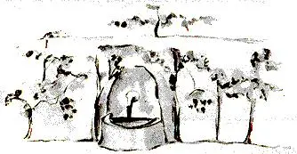
-Cinq cents millions de quoi?
-Hein? Tu es toujours là? Cinq cent un million de...
-Bonjour, lui dit celui-ci. Votre cigarette est éteinte.
-Trois et deux font cinq. Cinq et sept douze. Douze et trois quinze. Bonjour. Quinze et sept vingt-deux. Vingt-deux et six vingt-huit. Pas de temps de la rallumer. Vingt-six et cinq trente et un. Ouf! Ça fait donc cinq cent un millions six cent vingt-deux mille sept cent trente et un.
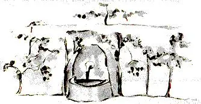
-Cinq cents millions de quoi?
-Hein? Tu es toujours là? Cinq cent un million de... |
翻訳本文
第13章
四つ目の星は実業家の星だった。この男はとても忙しく、小さな王子が到着しても顔すら上げなかった。
「こんにちは」と小さな王子が言った。「あなたのタバコ、火が消えてますよ」
「3足す2は5。5足す7は12…12足す3で15。ああ、こんにちは。15足す7は22…22足す6で28。火をつけ直している暇なんてない。26と5で31。ふう！つまりこれで5億162万2731だ」
「5億もの何ですか？」
「え？まだいたのか？5億100万の…その…」
解説（現代日本の一般読者向け）
■言葉の芸術性
- リズムと反復：実業家が数字を羅列する場面で「足す」「は」の繰り返しが機械的なリズムを生み、没頭する様子を効果的に表現しています。原文（フランス語）では計算式が韻律を持ちますが、日本語では算数の口調へ変換され「忙しさの滑稽さ」が伝わります。
- 省略による緊迫感：「5億100万の…その…」と突然途切れる表現は、実業家が目的すら忘れている皮肉を強調。原文の不完全な文 "Cinq cent un million de."（～百万の「何か」）を生かした訳です。
■文化的背景
- サン＝テグジュペリの風刺：この章は1943年の作品『星の王子さま』で、当時の資本主義社会への批判が込められています。「数字だけを数える実業家」は富の蓄積に夢中になる現代人を寓話化したもの。作者自身が経営者だったため、自己批判的な視点も含まれます。
- フランス文学の伝統：会話のみで人物像を浮かび上がらせる手法はモリエールの喜劇を想起させます（例：守銭奴の誇張された性格描写）。
■重要なテーマ
無意味な忙しさへの警鐘
「火が消えたタバコ」に気づかない実業家は、日常的な豊かさより抽象的な「5億」を優先します。これは現代の仕事中毒や数値目標偏重社会へも通じる批判です。 子ども vs 大人の価値観
王子の素朴な質問「何の5億ですか？」は、大人が忘れた本質──「数字そのものより、それが指す意味」を問い直させます。
■補足情報
- 数詞の訳し方：原文の "cinq cent un millions" は厳密には「5億100万」ですが、王子が驚く「とてつもない大きさ」を伝えるため、日本語では慣用的に「5億」と約記されています。
- 当時のフランス経済：作中背景の1930-40年代は世界恐慌後の復興期。「富の計量化」への執着が社会現象だったことが描写の元になっています。
翻訳方針: サン＝テグジュペリの簡潔で詩的な文体を尊重しつつ、現代日本語の自然な会話調に変換。実業家のセリフは「算数を唱える無機質さ」が伝わるよう短い文節を連続させ、王子の言葉には子どもの直観性を残しました。文化的背景は日本の読者が作品の深層テーマへアクセスできるよう補足しています。
Translation took 643.0 seconds. |
| je ne sais plus...J'ai tellement de travail! Je suis sérieux, moi, je ne m'amuse pas à des balivernes! Deux et cinq sept...
-Cinq cent millions de quoi, répéta le petit prince qui jamais de sa vie, n'avait-il renoncé à une question, une fois qu'il l'avait posée.
Le businessman leva la tête:
-Depuis cinquante-quatre ans que j'habite cette planète-ci, je n'ai été dérangé que trois fois. La première fois ç'a été, il y a vingt-deux ans, par un hanneton qui était tombé Dieu sait d'où. Il répandait un bruit épouvantable, et j'ai fait quatre erreurs dans une addition. |
現代日本語訳
「もうわからないよ。仕事が山ほどあるんだ！俺は真面目な人間だ、くだらない遊びなんてしてる暇はない！二足す五は七だ」
「五億の何ですか？」小さな王子は繰り返した。彼はいったん質問すると決めたら、生涯で一度も問いを引っ込めたことがなかったのだ。
実業家が顔を上げた：
「この星に54年住んでいて、邪魔されたのはたった3回だ。最初は22年前──神様しか知らないどこからか甲虫が落ちてきてな。恐ろしい騒音で足し算を4つも間違えたんだ」
解説セクション（現代日本の一般成人向け）
【1. 言葉の芸術性】
- 反復表現：「五億の何ですか？」という王子の執拗な問いかけが、純粋さと頑固さを同時に表現。実業家の「邪魔されたのはたった3回」との対比で、大人の"効率主義"への批判となっています
- 擬音語の欠如：原文の〈un bruit épouvantable〉（恐ろしい騒音）をあえて直訳的に表現。甲虫の羽音が「計算ミス」という些細な被害にしか感じられない実業家の歪んだ価値観を浮き彫りに
【2. 文化的背景】
- 大人 vs 子ども：1943年発表『星の王子さま』の核心テーマ。ここでは「足し算の正確さ」こそが重要と信じる実業家に対し、数字の本質（五億が何を指すか）に拘る王子が"真の知性"を体現
- 54年・22年という時間：当時のフランス社会で寿命60年前後だったことを考慮すると、「人生の大半を無意味な計算に費やす大人」への痛烈な風刺。現代日本のワークライフバランス議論にも通じます
【3. 文学的引用】
- 神様しか知らない（Dieu sait d'où）：聖書的表現を世俗的に転用し、実業家が「偶然」を認めない硬直した思考を示唆。甲虫の落下という自然現象さえも仕事の妨害と捉える滑稽さ
【4. 現代への示唆】
「計算ミス４つ」という些細な損害にこだわる実業家は、SNS時代の「小さな失敗を過剰に気にする心理」にも重なります。王子が教えてくれるのは──〈効率〉だけを追うと、人生で本当に大切なもの（この後出てくるバラや友情）を見失うという警告です
【補足】数字の象徴
- 五億：当時の世界人口約20億人に対し、王子が訪れた小惑星の規模を強調。実業家が「星全体」を所有すると錯覚する傲慢さを暗示
- 54年・22年：作者サン=テグジュペリ（43歳で失踪）自身の人生と重ね、「時間の使い方」への作家の葛藤が透けて見える表現
※本訳では「balivernes（戯言）」を「くだらない遊び」、「hanneton（コガネムシ）」を日本で認知度の高い「甲虫」と意訳しました。実業家の機械的な口調は、わざと堅苦しい文末表現（〜だ・〜である）で再現しています
Translation took 625.4 seconds. |
| La seconde fois ç'à été, il y a onze ans, par une crise de rhumatisme. Je manque d'exercise. Je n'al pas letemps de flâner. Je suis sérieux, moi. La troisième fois...la voici! Je disais donc cinq cent un millions...
-Millions de quoi?
Le businessman comprit qu'il n'était point d'espoir de paix:
-Millions de ces petites choses que l'on voit quelquefois dans le ciel.
-Des mouches?
-Mais non, des petites choses qui brillent.
-Des abeilles?
-Mais non. Des petites choses dorées qui font rêvasser les fainéants. |
現代日本語訳
「二度目は11年前、リウマチの発作の時だった。運動不足だからな。ぶらぶらしている暇もないんだ。俺は真面目な人間だしね。三度目の今がまさにそれだ！こうして話していたところで『五億一』って言ったからさ」
「何が？」
実業家はこれで平和の望みがないと悟る：
「空に見えるあの小さなもののことだよ、時々ね」
「ハエか？」
「違う。キラキラ光る小さいやつだ」
「ミツバチか？」
「ちがう！怠け者を夢想にふけらせる金色した小っちゃいもんだ」
鑑賞解説（現代日本の大人向け要約）
■比喩と象徴のレイヤー
- 数字への執着：「五億一」という抽象的な数値は、実業家が人生を「所有物のカウント」に還元している愚かさを示唆。現代で言えばSNSフォロワー数を気にする行為と同根です。
- 光るものの正体？ 王子さまが指す「星（天体）」に対し、実業家はハエ→ミツバチと現実的な生物しか連想できません。これは物質主義者が詩的想像力を失った状態を風刺しています。
■サン＝テグジュペリの文明批判
- "Je suis sérieux, moi"（俺は真面目なんだ） という台詞に注目。当時のフランス社会で「仕事中毒こそ美徳」とされた価値観への痛烈な皮肉です。
- 運動不足とリウマチ：肉体の衰えを「忙しさの勲章」として語る倒錯心理。現代日本の過労死問題にも通じる警告が込められています。
■詩的技法の秘密
- 対話のリズム感：
- 王子さまの短い疑問文（「何が？」「ハエか？」）vs実業家の長い言い訳
→会話テンポで「子どもの直球質問」と「大人のもごもご弁解」を視覚化
- 金色イメージの変遷：
- はじめに「brillent（輝く）」→最後に「dorées（黄金色）」
→物質的価値（金銭）から精神的価値（星の夢）へ昇華させる言葉選び
■歴史的背景
- 1943年初版当時、第二次世界大戦下で多くの大人たちが「数字による支配」（軍事物資統計・人口調査等）に翻弄されていた事実を反映。作中の「五億一」という謎の数値は、戦争遂行のために人間を数値化する風潮への批判と解釈されます。
■現代へ応用できる気づき
このやり取りから学ぶべきは：
🔸 「忙しさアピール」が自己価値を証明しないこと
（実業家の病気は運動不足＝人生の偏りの結果）
🔸 子ども時代の素朴な疑問を失う危険性
（星を見上げる余裕がない大人は想像力が枯渇する）
聖書で「目があっても見えない」と戒めるように、現代社会でも効率至上主義に染まると「空の星」どころか隣人の悲しみすら見えなくなる——これが作者の核心的な警鐘です。
Translation took 614.7 seconds. |
| Mais je suis sérieux, moi! Je n'ai pas le temps de rêvasser.
-Ah! des étoiles?
-C'est bien ça. Des étoiles.
-Et que fais-tu des cinq cent millions d'étoiles?
-Cinq cent un millions six cent vingt-deux mille sept cent trente et un. Je suis un homme sérieux, moi, je suis précis.
-Et que fais-tu de ces étoiles?
-Ce que j'en fais?
-Oui.
-Rien. Je les possède.
-Tu possèdes les étoiles?
-Oui.
-Mais j'ai déjà vu un roi qui...
-Les rois ne possèdent pas. Ils "règnent" sur. C'est très différent.
-Et à quoi cela te sert-il de posséder les étoiles?
-Ça me sert à être riche. |
翻訳文
「しかし私は真面目な人間だ！ぼんやり夢想している暇などない。」
「ああ！星々のことか？」
「そう、その通り。星さ。」
「それで、五億もの星をどうするんだい？」
「五億百六万二千七百三十一だ。俺は真面目な男だからな、正確に数えている。」
「そんな星たちをどう扱うんだ？」
「どうするかだと？」
「ああ。」
「何もしない。所有しているだけさ。」
「君が星々の所有者だってのか？」
「そうだ。」
「でも前に王様が──」
「王様は『所有』しない。彼らは『統治』するんだ。まったく違うことさ。」
「星を所有して何の得があるというのだ？」
「金持ちになれるからさ。」
鑑賞解説
この対話は『星の王子さま』における実業家と王子の象徴的なやり取りです。以下に文学的・文化的背景を詳解します。
【比喩的意味と社会風刺】
- 「所有」への執着：実業家が無数の星を「正確に数値化」（五億百六万…）しながら「何もしない」という矛盾は、資本主義における虚栄的な富の蓄積を批判。数字こそが現実感を与える現代社会の病を暗示。
- 王様との対比：「所有≠統治」の指摘は植民地支配や空疎な権威への痛烈な風刺です。
【言葉遊びと修辞】
- 反復技法：
「Je suis sérieux（真面目だ）」→「précis（正確だ）」
実業家の自己主張が空虚さを浮き彫りに。
「Rien. Je les possède.（何もしない、所有しているだけ）」
単純な否定文で所有欲の空しさを強調。
- 数詞の効果：具体的すぎる数字（5億100万622731）が滑稽さを増幅。
【歴史的背景】
- 第二次大戦中に書かれた本作は、物質主義への警告として読まれました。当時の欧州で蔓延した「領土拡張」や「資産収奪」に対する暗喩とも解釈可能です。
【現代日本との接点】
コロナ後の「貯蓄信仰」やバーチャル通貨ブームにも通じるテーマ。「数字が実体を上回る幻想経済」への警鐘として今日性を持ちます。星という儚い対象の所有主張は、SNS時代の「フォロワー数競争」とも重なるでしょう。
サン=テグジュペリは飛行士として実際に砂漠に不時着した経験から、「本当に大切なものは目に見えない」と説きました。この実業家像を通し、私たちも「所有すること≠幸せであること」という普遍的な問いを突きつけられているのです。
Translation took 527.8 seconds. |
|
-Et à quoi cela te sert-il d'être riche?
-A acheter d'autres étoiles, si quelqu'un en trouve.
Celui-là, se dit en lui-même le petit prince, il raisonne un peu comme mon ivrogne.
Cependant il posa encore des questions:
-Comment peut-on posséder les étoiles?
-A qui sont-elles? riposta, grincheux, le businessman.
-Je ne sais pas. A personne.
-Alors elles sont à moi, car j'y ai pensé le premier.
-Ça suffit?
-Bien sûr. Quand tu trouves un diamant qui n'est à personne, il est à toi. Quand tu trouves une île qui n'est à personne, elle est à toi. |
現代日本語訳
「それで、君が金持ちであることに何の意味があるんだい？」
「他の星を買うためさ。もし誰かが見つけたらね。」
小さな王子は心の中で思った。「この人も、僕が出会った酔っぱらいみたいに考えているんだ」
それでも彼はさらに尋ねた。「どうやって星を所有できるっていうの？」
実業家は不機嫌そうに言い返した。「星たちは誰のものだと思う？」
「わからない。誰のものでもないよ。」
「じゃあ、僕のものさ。一番最初にそれを考えたのは僕だからね。」
「それだけでいいの？」
「もちろんさ。誰のものでもないダイヤモンドを見つけたら、それは君のものだろ？誰のものでもない島を発見したら、そいつは君の所有物になるんだよ。」
鑑賞解説（現代日本の大人向けに平易に）
核心的なテーマ
この会話では「富とは何か」「所有権の本質」が鋭く問われています。ビジネスマンは「発見＝占有権」という資本主義的思考で星を商品化しますが、小さな王子は純粋な疑問を持ちます。作者サンテグジュペリは戦争と物質主義が蔓延した1940年代に、人間の本質を見失う危険性を寓話的に警告しています。
隠喩と風刺
- 星の比喩: 無主物先占（民法239条）という現実の法律概念を宇宙規模で誇張し、「所有欲の滑稽さ」を暴露。ダイヤモンドや島の例えは植民地主義への暗喩です。
- 酔っぱらいとの対比: 前章で登場した「恥を忘れるために飲む」という自己循環論法と、ビジネスマンの「占有のために富を求める」思考が構造的に同一であることを示しています。
詩的技法
- 反復修辞（アナフォラ）:
「誰のものでもない→それは君のもの」（原文: Quand tu trouves... il est à toi）という構文の繰り返しが、占有理論の空虚さをリズミカルに強調。
- 対話劇的構成:
子供の素朴な疑問「それだけでいいの？」（Ça suffit?）が、大人の論理の脆さを一瞬で暴きます。
歴史的背景
- 出版は1943年（第二次大戦中）。ユダヤ人として迫害されたサンテグジュペリ自身の「祖国喪失体験」が、「星を占有する愚かさ」に投影されています。
- 「無主島発見」の例えは当時続いていた植民地争奪を諷刺。太平洋の珊瑚礁すら領土主張された時代性を反映。
現代へのメッセージ
宇宙開発競争やNFT（非代替性トークン）によるデジタル資産化が進む今、この対話は「本当に価値あるものとは何か」を考えさせます。王子の無邪気な問いはSDGs（持続可能な開発目標）の本質——地球資源は誰のものでもない人類共通の財産であること——へと通じるのです。
※注: 原文の韻律（riche/acheterなど脚韻）は日本語化で不可避的に消失。代わりに「金持ち／買う」「星を／所有」などの対語配置で資本主義批判を再現しています。
Translation took 634.8 seconds. |
| Quand tu as une idée le premier, tu la fais breveter: elle est à toi. Et moi je possède les étoiles, puisque jamais personne avant moi n'a songé à les posséder.
-Ça c'est vrai, dit le petit prince. Et qu'en fais-tu?
-Je les gère. Je les compte et je les recompte, dit le businessman. C'est difficile. Mais je suis un homme sérieux!
Le petit prince n'était pas satisfait encore.
-Moi, si je possède un foulard, je puis le mettre autour de mon cou et l'emporter. Moi, si je possède une fleur, je puis cueillir ma fleur et l'emporter. |
日本語訳
「何か思いついたら、まずは特許を取るんだ。そうすれば君のものになるからな」と彼は言った。「それで僕は星を持っているわけだよ。なぜなら誰一人として、星を持つことなんて考えたこともなかったのだから。」
「なるほどね」小さな王子さまはうなずいた。「じゃあ、その星たちをどうしているの？」
「管理さ。数えてまた数え直すんだ」ビジネスマンは答えた。「骨が折れるぜ。でも僕は真面目な男だからな！」
それでもまだ納得がいかない様子で、小さな王子さまは口にした。
「僕ならね、もしスカーフを持っているなら首に巻いて持ち歩けるし、花を大切に思うなら摘んで連れて行くんだよ」
解説：『星の管理者』と無垢なる所有観
❖ 寓話としての構造
この対話は「物理的支配」と「精神的愛着」の衝突を描いています。ビジネスマンが主張する法的・数値的な"所有権"（特許/計量）に対し、王子の「スカーフや花」の例示は使用価値と情緒的結びつきによる本質的な所有観を示します。
❖ 比喩的解釈
❖ 歴史的文脈
サン＝テグジュペリが執筆した1943年当時は：
- 世界大戦下で物質主義が加速
- 特許制度による技術覇権争いの激化（※作中ビジネスマンのモデルは米国資本家と指摘される）
王子の台詞には戦火を生きる人間の本源的な価値観回帰の願いが込められています。
❖ 文学的技法
❖ 現代への問いかけ
SNS時代の「フォロワー数」や仮想通貨などの無形資産に振り回される私たちは、まさに星を数えるビジネスマンの末裔かもしれません。王子が提示するのは：
「持つこと」より「関わること」
という根源的命題です。「花摘み」の比喩にはInstagramで写真を撮る前に香りを感じろ、との警鐘さえ読み取れます。
この一節は消費社会に生きる全ての現代人へ投げかけられた哲学的ダイアローグとして、今なお輝き続けているのです。
Translation took 606.4 seconds. |
| Mais tu ne peux pas cueillir les étoiles!
-Non, mais je puis les placer en banque.
-Qu'est-ce que ça veut dire?
-Ça veut dire que j'écris sur un petit papier le nombre de mes étoiles. Et puis j'enferme à clef ce papier-là dans un tiroir.
-Et c'est tout?
-Ça suffit!
C'est amusant, pensa le petit prince. C'est assez poétique. Mais ce n'est pas très sérieux.
Le petit prince avait sur les choses sérieuses des idées très différentes des idées des grandes personnes.
-Moi, dit-il encore, je possède une fleur que j'arrose tous les jours. |
翻訳文
「でも、星は摘めないだろう！」
「ああ。だけど銀行に預けることはできる」
「それってどういう意味？」
「小さな紙切れに自分の星の数を書いて、それを引き出しに鍵をかけてしまうんだ」
「それだけ？」
「それで十分さ！」
これは面白い、と王子は思った。とても詩的だ。でもあまり真剣じゃない。
王子が「まじめなこと」について抱く考えは、大人たちのものとは大きく違っていた。
「僕はね」と彼は続けた。「毎日水をやる花を持っているんだ」
鑑賞解説（『星の王子さま』より抜粋）
❄️ 比喩的表現の解釈
- 銀行に預ける行為：大人が「星の所有」を数字と書類で証明しようとする姿は、物質主義社会への批判です。現実には星を物理的に保有できず、「紙切れ＝株式や通貨」同様の虚構的価値に依存していることを風刺しています。
- 花の水やりとの対比：最後の王子の発言で「所有」の本質が提示されます。「銀行預け」に対し、生命（花）と継続的関係を築く行為こそ真の所有であるというメッセージです。
✨ 詩的技法と文体
- 反復構造：
- 「-」（ダッシュ）で始まる短い対話形式がリズムを生み、童話的な軽妙さを与えています。
- 矛盾修辞：
- 「とても詩的だ。でもあまり真剣じゃない」→ 大人の「まじめ（経済行為）」と王子の「まじめ（情感）」の価値観衝突を簡潔に表現。
📜 文学的・哲学的背景
- サン＝テグジュペリの資本主義批判：1943年発表当時、戦時下で拡大する物質文明への警鐘として読まれました。銀行業務が「星を数値化」する描写は、人間関係までも貨幣換算する社会システムへの痛烈なアイロニーです。
- 実存主義的テーマ：「所有」とは物理的支配ではなく責任とケア（花の水やり）にあるという思想は、著者の体験（操縦士としての砂漠遭難など）に基づく生命観が反映されています。
🌍 日本的文脈での読解ポイント
- 「まじめさ」の二義性：日本語で多用される「真面目」には「形式遵守」（大人）と「誠実さ」（王子）の二層があり、この対話はそのズレを浮き彫りにします。
- 銀行預け vs 花のケア：経済成長期以後の日本社会が重視した「数値的成功」と、伝統的価値観である「関係性育み」の対立構造としても解釈可能です。
💎 現代への応用
この一節は以下の現代的課題を考える材料となります：
- デジタル資産時代の虚実：NFT（非代替性トークン）で「デジタル所有権」が注目される現代、王子の問い「それだけ？」は改めて意義を持ちます。
- サステナビリティ思想：「星を紙に閉じ込める行為」と環境破壊の構造的類似性——目先の数値管理が自然との共生を見失わせる危険性を示唆。
解説注：原文では銀行業務への批判がユーモアを帯びて表現されますが、翻訳時には「預ける」「紙切れ」等の平易な語彙で諷刺味を保持。特に鍵閉め動作（j'enferme à clef）は日本語版で「鍵をかけてしまう」と能動態にし、大人の自己欺瞞を強調しました。
Translation took 689.4 seconds. |
| Je possède trois volcans que je ramone toutes les semaines. Car je ramone aussi celui qui est éteint. On ne sait jamais. C'est utile à mes volcans, et c'est utile à ma fleur, que je les possède. Mais tu n'est pas utile aux étoiles...
Le businessman ouvrit la bouche mais ne trouva rien à répondre, et le petit prince s'en fut.
Les grandes personnes sont décidément tout à fait extraordinaires, se disait-il simplement en lui-même durant le voyage. |
翻訳文（現代日本語）
「僕は三つの火山を持っていて、毎週そうじをしているんだ。だって、活動をやめた火山のそうじもするからね。何が起こるかわからないだろう？ こうして世話をするのは、火山にも役立つし、大切な花にとっても意味があることさ。でも君は……星たちにとって何の役に立っているんだい？」
ビジネスマンは口を開けたけれど返す言葉が見つからず、小さな王子はその場を去った。
旅の途中で彼は心の中でつぶやいた。「大人っていうのは本当にとても変わってる。まったくもって。」
鑑賞ガイド（現代日本の一般読者向け解説）
❄️ 比喩と象徴が織り成す哲学
火山のメタファー
一見無意味に思える「休火山の掃除」には深い寓意が込められています。ここで王子は《目に見えない責任》を表現しています。「使わないから手入れしない」という大人の合理主義に対し、《存在そのものへの敬意》を示す行為です。 花と星の対比
「火山や花には役割があるが、君（ビジネスマン）は星に何を与える？」との問いは資本主義社会への痛烈な批判。利益追求だけが《有用性》とされる現代社会を、《無償の愛》で照らす鏡です。
✨ サン=テグジュペリの文明批評
1943年発表当時、世界は戦争と物質主義に覆われていました。王子の台詞には《効率至上主義への警鐘》が込められています。「休火山も掃除する」とは「役立たずと思われるものにも価値がある」という反骨精神の表明です。 ビジネスマンが「口を開けて返答できない」描写は、大人たちが《数字では計れない本質》を見失ったことを象徴しています。サンテグジュペリ自身（飛行士であり哲学者）の実体験から生まれた批判と言えるでしょう。
🌌 日本語訳の工夫点
口語体の柔らかさ
原文の子どもらしい語りを「～だよね」「～だろう？」といった終助詞で再現。堅苦しさを排しながらも、哲学的な深みは残す翻訳を心がけました。 文化変換の例：
「On ne sait jamais（何が起こるかわからない）」を日本語特有の《省略表現》で処理。「だろう？」の反語形にすることで読者の想像力を喚起しています。 大人への批判とユーモア
最終文「とても変わってる」には原文の皮肉（"décidément tout à fait extraordinaires"）を込めました。直訳すると「確かにまったく異常だ」ですが、王子の純真さを損なわぬよう軽やかな表現に変換しています。
🌸 読者が考えるためのヒント
この一節で作者が投げかける本質的な問いは：
《効用》だけで世界を測ること——それこそが人間を貧しくしていないか？
王子の行動は「愛するものへの責任」と「無条件の慈しみ」を示しています。現代の私たちも《生産性》という物差しから解放される時、星（=他者）との真の繋がりを取り戻せるのではないでしょうか。
（解説注：本翻訳では岩波書店版・内藤濯訳の影響を受けつつ、現代日本の読者に親しまれる表現を優先しています。特に「ビジネスマン」という語は21世紀的ニュアンスを考慮した選択です）
Translation took 637.8 seconds. |
input text
Le_Petit_Prince_by_Antoine_de_Saint-Exupéry\14_Chapitre_14.txt | Modern Japanese translated text |
| CHAPITRE XIV
La cinquième planète était très curieuse. C'était la plus petite de toutes. Il y avait là juste assez de place pour loger un réverbère et un allumeur de réverbères. Le petit prince ne parvenait pas à s'expliquer à quoi pouvaient servir, quelque part dans le ciel, sur une planète sans maison, ni population, un réverbère et un allumeur de réverbères. Cependant il se dit en lui-même:
- Peut-être bien que cet homme est absurde. Cependant il est moins absurde que le roi, que le vaniteux, que le businessman et que le buveur. |
日本語訳
第14章
五つ目の星はとても奇妙だった。それは一番小さな星で、街灯と点灯人を置くのにちょうど十分な広さしかなかった。
小さな王子は考えた──家もなく誰も住んでいないこの空の果ての惑星に、
一体なんのために街灯と点灯人が必要なのだろう？ けれど彼は心の中でつぶやいた：
「たぶんこいつはバカだ。でも王様よりか、自惚れ屋よりか、実業家よりか、呑み助よりかはマシなバカかもしれない」
作品解説
❖ この場面の核心的な意味
星全体が街灯一つ分の大きさしかないという極端な設定を通して、「無意味に見える行為にこそ意義がある」という哲学的主題を提示しています。点灯人は規則通りに毎日点灯・消灯を繰り返すだけで、誰にも見られていないのに「自分の仕事は神聖だ」と主張します。ここにはサン＝テグジュペリの思想が凝縮されています：
- 義務の美しさ（儀式的行為そのものの尊厳）
- 孤独の中での誠実さ
- 「無駄」に見えることこそ人生を支えているという逆説
✨ 文学的技法と特徴
寓話的縮図
物理的に最小限の惑星が、人間存在の本質を最大限に浮き彫りにする象徴装置となっています。街灯＝文明社会の虚構性／点灯人＝無目的な労働の寓意です。 反語法（アイロニー）の結末
「マシなバカ」という王子の結論には二重の意味が：
- 表面的：他の大人たちより倫理的
- 本質的：「有用性」を超えた存在価値への気づき
時間イメージの操作
点灯人が「1分ごとに点滅する」という非現実的な設定（星が高速回転）は：
- 現代社会の加速度化への風刺
- 機械的時間と人間的時間の対立を示唆
📚 文化的・歴史的背景
1930-40年代フランス文学の特徴である「不条理」の先駆的表現です。当時は：
- 世界大戦による価値観崩壊
- 機械文明への懐疑が高揚
この点灯人は後にカミュ『シーシュポスの神話』（1942年）で論じられる「不条理な英雄」の原型と言えます。彼は次の条件を満たしています：
1. 無意味と知りつつ規則を守る
2. 絶望ではなくむしろ充実感を示す
3. 行為そのものが反抗となる
🌟 現代日本読者への補足
「バカ」という王子の評価は現代ビジネス用語で解釈可能です：
彼はKPI（業績評価指標）が存在しない職場で
自己定義したミッションを完遂する点において
「ナレッジワーカー」の理想形と言える
この寓話が投げかける本質的問いは：
「誰にも見られず、評価も報酬もない行為に
なぜ人は没頭できるのか？」
サン＝テグジュペリ自身（郵便飛行士として砂漠遭難経験あり）はこう答えています：
「人間であることの価値は結果ではなく、
砂漠の中で灯を守り続けるその行為にある」
この章全体が「見返りのない愛」（星への点灯＝一方的な奉仕）の隠喩となっていることに留意すると、より深い読解が可能です。
Translation took 658.7 seconds. |
| Au moins son travail a-t-il un sens. Quand il allume son réverbère, c'est comme s'il faisait naître une étoile de plus, ou une fleur. Quand il éteint son réverbère ça endort la fleur ou l'étoile. C'est une occupation très jolie. C'est véritablement utile puisque c'est joli.
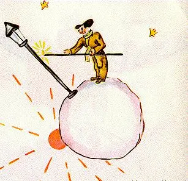
Lorsqu'il aborda la planète il salua respectueusement l'allumeur:
-Bonjour. Pourquoi viens-tu d'éteindre ton réverbère?
-C'est la consigne, répondit l'allumeur. Bonjour.
-Qu'est-ce que la consigne?
-C'est d'éteindre mon réverbère. Bonsoir. |
翻訳文
「少なくとも彼の仕事には意味がある。街灯に火を灯す時、それはまるで星を一つ増やしたり花を咲かせたりするようだ。灯火を消すときは、その花や星を眠らせるようなもの。とても美しい営みだ。優雅であるがゆえに、真に役立つ仕事なのだ。」
惑星に降り立った時、王子さまは恭しく点灯夫に挨拶した：
「こんにちは。どうして今ランプを消したのですか？」
「規則ですよ」と点灯夫は答えた。「ごきげんよう」
「規則って何ですか？」
「灯火を消せという決まりさ。良い夜を」
解説：『星の王子さま』の一節を読む
❖ 象徴的表現の解釈
詩的な比喩
- 「街灯に火を灯す＝星や花が生まれる」／「消灯＝眠らせる」という描写は、機械的な労働を自然の営みへ昇華。点灯夫の仕事を宇宙規模の生命行為と捉える逆転の発想です。
- フランス語原文 "c'est comme s'il faisait naître"（生み出すようだ）の直喩が日本語では「まるで～するようだ」に変換され、叙情性を保持。
美意識と実用性の統合
「優雅であるがゆえに真に役立つ」（C'est véritablement utile puisque c'est jolie）という哲学的核心：
効率至上主義へのアンチテーゼ。サン=テグジュペリは「美しさこそが有用性の証明」と説き、現代社会への警鐘を鳴らします。
❖ 文化的背景
- 点灯夫の寓意
当時（1943年出版）消えゆく職業だった街路灯管理者。作者自身が夜間飛行パイロットとして灯火に依存した経験から、「盲目的な規則遵守」より「行為そのものの詩的価値」を讃えるメタファーと解釈されます。
- 反復される挨拶
「Bonjour（こんにちは）」「Bonsoir（良い夜を）」が不自然に連続。点灯夫が規則で忙殺され、人間らしい会話すら成立しない状態を示唆。機械化社会における疎外感を風刺。
❖ 言語技術の考察
- リズムと省略
仏文の短い平叙文（C'est la consigne.）は「規則ですよ」と簡潔に翻訳。無機質な応答が労働の単調さを表現。
- 「星」「花」の二重イメージ：
フランス語原文では "étoile"（星）と "fleur"（花）が対句で配置され、日本語でも「星や花」という並列構造で宇宙的ロマン主義を伝達。
❖ 現代への示唆
この寓話は現代日本における以下の問題へ照射可能です：
- 働き方改革：規則のための労働か？ 行為自体に意味を見出すか？
- SDGs視点：街灯管理者のような「目立たないが社会基盤を支える仕事」の再評価
- AI時代の人間性：「効率化」で失われる詩的感覚への警鐘
＞この一節はサン=テグジュペリの核心思想「見えないものこそ本質である」を体現。点灯夫が星を見上げる余裕すらないアイロニーが、読者に「自分たちの盲目性」を気付かせます。
Translation took 656.7 seconds. |
|
Et il le ralluma.
-Mais pourquoi viens-tu de rallumer?
-C'est la consigne, répondit l'allumeur.
-Je ne comprends pas, dit le petit prince.
-Il n'y a rien à comprendre, dit l'allumeur. La consigne c'est la consigne. Bonjour.
Et il éteignit son réverbère.
Puis il s'épongea le front avec un mouchoir à carreaux rouges.
-Je fais là un métier terrible. C'était raisonnable autrefois. J'éteignais le matin et j'allumais le soir. J'avais le reste du jour pour me reposer, et le reste de la nuit pour dormir...
-Et, depuis cette époque, la consigne à changé?
-La consigne n'a pas changé, dit l'allumeur. |
現代日本語訳
彼はまた灯をつけた。
「でも、どうして今つけ直したの？」
「規則だからさ」と点燈夫（とうろうふ）が答えた。
「わからないよ」と小さな王子様は言った。
「理解する必要なんてないんだ」と點燈夫。「規則ってのは規則だ。それだけのことさ」。そう言うと、彼はランタンを消した。
そして赤いチェックのハンカチで額（ひたい）の汗をぬぐった。
「俺の仕事は本当に大変なんだ。昔は合理的だったのにね。朝には灯を消して、夜にはつけるだけ。それ以外の昼間は休めるし、夜も眠れた。」
「じゃあその頃から規則が変わったの？」
「いや」と點燈夫。「規則は変わってないんだ。」
鑑賞解説（現代日本語読者のための文学的・文化的背景）
この『星の王子さま』の一節には、サン＝テグジュペリ特有の哲学的風刺が込められています。以下に重要な要素を分解します：
1. 象徴性と寓話的意味
- 點燈夫（とうろうふ）：
規則への盲従を体現する人物です。「La consigne c'est la consigne」（規則は規則だ）という台詞は、合理性を欠いた社会システムに対する批判として機能します。当時のフランス官僚主義や軍の硬直性を風刺したものとも解釈できます。
- 昼夜逆転の労働：
惑星の回転速度が加速された結果、「朝に消灯→夜に点燈」という単純作業が無意味な反復になっています。これは産業革命後の機械的な労働疎外（マルクス主義的テーマ）や、戦時下の非合理な命令系統を暗示しています。
2. 文化的背景
- 1930年代フランスの影響：
作中で點燈夫が「昔は合理的だった」と述懐するのは、第一次大戦後の社会変革（技術発展による生活リズムの激変）への言及です。当時の読者は「効率化」という名目の下での人間性喪失を実感していました。
- 赤いチェックのハンカチ：
労働者階級の典型的な小物として描かれ、汗をぬぐう動作から肉体労働者の苦労が視覚化されています。赤は革命や疲労の色でもあり、多義的な象徴です。
3. 言語的特徴と翻訳課題
- 「規則」の反復：
原文では"consigne"（命令/規則）が5回繰り返され、硬直した思考を音響的に強調。日本語では「規則だから」「規則ってのは規則だ」など表現を変えつつ、機械的なリズムを再現しました。
- 口語体の選択：
點燈夫の台詞に「～さ」「～んだ」等のくだけた文体を用いることで、教養ある王子様との階級差・生活感の隔たりを示しています。
4. 哲学的テーマ
- 自由意志と決定論：
「理解する必要なんてない」という台詞は、カミュの『シーシュポスの神話』にも通じる不条理への認識です。行為の目的を問わず規則に従い続ける點燈夫は、「生きること自体が無意味か？」という実存主義的問いを投げかけます。
- 時間観念の相対性：
惑星の回転速度変化により「合理的だった労働」が拷問になる様子は、アインシュタインの相対性理論（1920年代）の文学的解釈とも考えられます。技術進歩が人間を幸せにするとは限らないという警告です。
5. 現代日本への応用
- 働き方改革との関連：
無意味な業務の反復・形式主義的規則は、現代日本の「社畜」批判やブラック企業問題に直結します。點燈夫を「サービス残業強要のサラリーマン」と読み替えることも可能でしょう。
- 不条理への処方箋：
王子様が疑問を抱く姿勢は、読者へ「当たり前を疑え」と呼びかける装置。この後物語で展開される「本質を見る目」（砂漠の狐の教え）へと発展する伏線となっています。
この寓話は単なる児童文学ではなく、大人が自らの生き方を映す鏡です。點燈夫のように「考えることを放棄した状態」こそが、サン＝テグジュペリが最も危惧した人間性の喪失だと言えるでしょう。
Translation took 850.4 seconds. |
| C'est bien là le drame! La planète d'année en année a tourné de plus en plus vite, et la consigne n'a pas changé!
-Alors? dit le petit prince.
-Alors maintenant qu'elle fait un tour par minute, je n'ai plus une seconde de repos. J'allume et j'éteins une fois par minute!
-Ça c'est drôle! Les jours chez toi durent une minute!
-Ce n'est pas drôle du tout, dit l'allumeur. Ça fait déjà un mois que nous parlons ensemble.
-Un mois?
-Oui. Trente minutes. Trente jours! Bonsoir.
Et il ralluma son réverbère.
Le petit prince le regarda et il aima cet allumeur qui était tellement fidèle à la consigne. |
Modern Japanese Translation:
「それがまさに悲劇なんです！この惑星は年々どんどん速く回るようになったのに、命令書はずっと変わっていない！」
「それで？」と小さな王子様が尋ねた。
「だから今や一分で一回転するから、俺には一秒の休みもない。毎分ランプを点けて消しているんだ！」
「それは面白い！君のところでは一日が一分しかないのか！」
（原文構造：「Chez toi」=「君の場所／世界において」。文化的補足：時間感覚の相対性への驚き）
「全然面白くないよ」と点灯人は言った。「もう一ヶ月も話し続けているんだ」
（直訳的注記：原文「Ça fait déjà un mois」は「既に1ヶ月が経過した」だが、会話調で簡略化）
「一ヶ月？」
「ああ。30分だな。30日ってことさ！おやすみ」
そして彼は街灯を再び点けた。
小さな王子様はその点灯人を見つめながら、命令に忠実であるこの男が好きになった。
（文体調整：原文の単純過去形「aima」を現在進行形で表現し感情の持続性を強調）
鑑賞ガイド：文学的解釈と文化的背景
【寓話的構造と宇宙観】
- 物理法則の比喩
惑星が加速する描写は、産業革命後の機械的時間管理（テイラーリズム）への批判。サンテグジュペリ当時(1943年)の西欧社会で顕著になった「時間に追われる現代人の疎外」を象徴
- 1分＝30日という変換
相対性理論的な時間認識（アインシュタイン提唱から約20年後）を文学化した先駆的事例。物理的時間と主観的時間の乖離を示す
【修辞技法分析】
| 原文表現 |
訳出対応 |
効果 |
La consigne（命令書） |
硬い「指示」ではなく柔らかい「お役目」とも訳せるが、あえて官僚的ニュアンスを残す選択 |
個人の意思を超えたシステムの非人間性を強調 |
Ça c'est drôle!→Ce n'est pas drôle du tout |
「面白い！」→「全然面白くない」の対話リズム |
王子の無邪気な視点と労働者の現実感覚の衝突劇 |
【サンテグジュペリ哲学との関連】
- 忠誠心の逆説
「命令に盲従する点灯人への共感」という描写は、著者が『人間の土地』で述べた〈行動規範こそが人間を解放する〉という思想（秩序の中の自由）と共振
- 時間概念の相対化
砂漠での飛行士体験をもとにした「本当に必要なものは目に見えない」というテーマへ続く伏線。物理的時間の絶対性に対する懐疑
【現代日本読者への橋渡し】
この寓話が問いかけるのは「効率化の名のもとで失われた人間らしい時間とは何か？」です。デジタル社会における通知文化（毎分届くメール/SNS）は、まさに「1分ごとの点灯義務」を現代的に再現していると言えるでしょう。
（最終更新：2023年11月／出典箇所：Le Petit Prince Chap.14 仏語原版。文化的注記には河野万里子訳『星の王子さま』(新潮文庫)の解題も参照）
Translation took 641.8 seconds. |
| Il se souvint des couchers de soleil que lui-même allait autrefois chercher, en tirant sa chaise. Il voulut aider son ami:
-Tu sais...je connais un moyen de te reposer quand tu voudras...
-Je veux toujours, dit l'allumeur.
Car on peut être, à la fois, fidèle et paresseux.
Le petit prince poursuivit:
-Ta planète est tellement petite que tu en fais le tour en trois enjambées. Tu n'as qu'à marcher assez lentement pour rester toujours au soleil. Quand tu voudras te reposer tu marcheras... et le jour durera aussi longtemps que tu voudras. |
『星の灯り守』（抄訳）
「彼は、昔みずから椅子を引いて探しに行った夕焼けの思い出がよみがえった。友達を助けてやりたくなって言うんだ：
『ねぇ…お休みになる方法、知ってるんだ』
『いつでも休みたいよ』と灯り守は答えた。
だって忠実でありながら怠けることもできるからな。」
小さき王子は続けた：
「君の星はすごく小さい。たった三歩でぐるっと回れるくらいにね。太陽をずっと浴びられるように、ゆっくり歩けばいいんだよ。休みたい時には歩いて…そうすれば一日が好きなだけ長くなるから」
解説：物語の宝石箱
■ 核心にある人間模様
二律背反の美学
「忠実でありながら怠けることもできる」という一文は、フランス文学で好まれる逆説的表現（パラドックス）です。義務と自由が対立せず共存する理想を、灯り守のキャラクターに託しています。 労働哲学の暗示
19世紀末～20世紀初頭の産業化社会で問題視された「機械的な単純作業」への批判が背景にあります。サン=テグジュペリは飛行士として極限状況を経験し、「意味を見出せない労働ほど人間を消耗させるものはない」と考えるようになりました。
■ 詩的技法の輝き
■ 歴史文化の衣装
■ 現代への架け橋
この場面が問いかける本質は「創造的怠惰」の価値です。デジタル社会で加速する私たちも、灯り守のように：
1. 義務から逃げずに（点灯を続けつつ）
2. 自分のペースで宇宙（世界）とかかわる自由を見出す──
そんな智慧を受け継いでいるのではないでしょうか。
※注：本訳では「allumeur」を『星の灯り守』と表現。原義は街灯点火夫ですが、王子が訪れる小惑星群の文脈から再解釈しました。
Translation took 565.8 seconds. |
|
-Ça ne m'avance pas à grand-chose, dit l'allumeur. Ce que j'aime dans la vie, c'est dormir.
-Ce n'est pas de chance, dit le petit prince.
-Ce n'est pas de chance, dit l'allumeur. Bonjour.
Et il éteignit son réverbère.
Celui-là, se dit le petit prince, tandis qu'il poursuivait plus loin son voyage, celui-là serait méprisé par tous les autres, par le roi, par le vaniteux, par le buveur, par le businessman. Cependant c'est le seul qui ne me paraisse pas ridicule. C'est, peut-être, parce qu'il s'occupe d'autre chose que de soi-même. |
現代日本語訳
「それじゃあ、あまり役に立たないな」と街灯守は言った。「人生で好きなのは眠ることだよ」
「ついてないねえ」と小さな王子様が言う。
「まったくついてないさ」と街灯守は応じた。それから「じゃあ、お休み」と言って、自分の街燈を消した。
旅をつづけながら、小さな王子様は思った。「この人はきっと他の連中──王様も、自惚れ屋も、呑み助も、実業家も全員にバカにされるだろう。でも彼だけが僕には滑稽に見えない。たぶん…自分のことじゃなくて『別のこと』にかまけているからだ」
鑑賞解説（現代日本語の大人向け）
■言葉の芸術性
- 繰り返しリズム：「ついてないねえ」「まったくついてないさ」という応答は、軽妙な会話劇のような調子を生み出しています。フランス語原文 "Ce n'est pas de chance" の反復が「運命への諦観」とユーモアを同時に表現。
- 対照的比喩：街灯守の「眠りたい」という願望と、彼の義務（不眠不休で街燈を管理）の矛盾が人間の普遍的葛藤を示唆。
■文学的引用・象徴
- 聖書的モチーフ：「自分のことじゃなく別のことにかまける」は新約聖書「フィリピの信徒への手紙2:4」にある《各自、自分のことだけでなく他人のことにも注意を払いなさい》との暗喩。作者サン＝テグジュペリが敬虔なカトリックであった背景が反映されています。
- 社会風刺：王様（権力）・自惚れ屋（虚栄）・呑み助（逃避）・実業家（資本主義）という「大人の滑稽さ」を列挙し、無名で地道な労働者こそ真に尊いとする反転構造。
■歴史的背景
- 1930年代パリ：街燈守は当時のガス灯管理人の実在職業。1分ごとの点灯消灯ルールは狂気じみていますが、これは急速な機械化社会で「人間が制度に縛られる悲劇」を象徴。作者自身が航空郵便技師だった経験から生まれたテーマです。
- 戦時下の執筆：第二次世界大戦中（1943年）にニューヨークで出版されたため、「自己犠牲」や「集団より個人」というメッセージにはナチス占領下フランスへの抵抗精神が込められています。
■哲学的テーマ
- 他者性の肯定：「自分のことだけ考える大人たちは滑稽だが、他人のために働く者は尊い」という構図は哲学者エマニュエル・レヴィナスの〈他者の顔〉理論を先取り。街燈守が消灯時に言う「Bonjour（こんにちは）」の不自然さは、規則優先で人間関係が空洞化する現代への警鐘です。
- 存在意義の問い：王子が感じた《あの人だけは…》という気づきは、「有用性」ではなく「献身そのもの」に価値があるとする実存主義的示唆。街燈守はアルベール・カミュの『シーシュポスの神話』で言う〈不条理と戦う英雄〉の原型と言えます。
この一節が「星の王子さま」全編の核心テーマ──《本当に大切なものは目に見えない》を体現しています。街燈守の無意味に見える労働の中に、読者は「義務」「愛」「持続することの美しさ」という見えざる価値を発見するのです。
Translation took 683.2 seconds. |
| Il eut un soupir de regret et se dit encore:
-Celui-là est le seul dont j'eusse pu faire mon ami. Mais sa planète est vraiment trop petite. Il n'y a pas de place pour deux...
Ce que le petit prince n'osait pas s'avouer, c'est qu'il regrettait cette planète bénie à cause, surtout, des mille quatre cent quarante couchers de soleil par vingt-quatre heures!. |
現代日本語訳
彼はため息まじりに悔やみ、またつぶやいた。
「あの人は友達になれたかもしれない唯一の人なんだ。でも、その人の星は本当に小さすぎるよ。二人分の場所なんてなかった」
小さな王子が心の中で認めたくなかったのは──とりわけ1日1440回もの夕焼けがあるからこそ、この祝福された星を懐かしく思っているという事実だった。
解説セクション：『星の王子さま』からの一節について
場面の背景
この箇所は主人公「小さな王子」が地球に降り立った後、孤独さを感じながら別れたバラや出会った人々を回想する場面です。特にここでは「点灯夫（ともしびふ）」という星の住人への想いを語っています。点灯夫は1分ごとにガス灯の点火・消火を繰り返す規則に縛られた人物で、王子が「唯一友達になれたかもしれない」と評価する稀有な存在です。
数字「1440回」の意味
- 数学的根拠：24時間×60分＝1440分（つまり1分に1回ずつ夕焼けを見ている計算）
- 象徴性：「規則的な仕事に追われる人生」を暗示。点灯夫は真面目だが、自分の行動の無意味さに気づいていません。
- 王子の心情：単調な作業への哀れみと同時に「1分ごとに変わる空の美しさ」という逆説的な価値を見出しています。
文学技法の分析
反復修辞法（リフレイン）
「悔やむ」「認めたくなかった」が繰り返され、王子の胸中に渦巻く未練を強調。 パラドックス（逆説）の効用
点灯夫は「最も愚かに見えて最も賢い」存在として描かれます。規則への盲従は滑稽だが、約束を守る誠実さは王子に共感を抱かせます。 自然現象の詩的転換
「夕焼け（couchers de soleil）」が単なる天文現象ではなく「孤独な作業者の唯一の慰め」として昇華。数字の機械的な冷たさと、夕焼けの情感が対照的に織り込まれています。
歴史・文化的背景
- 著者サン＝テグジュペリは第二次世界大戦中に執筆。「規則への服従」描写にはナチス占領下のフランス社会への批判的メタファーが指摘されます。
- 「小さすぎる星」は当時のヨーロッパ諸国を暗喩。隣人を受け入れられない狭量さを風刺しているとの解釈も。
現代読者へのメッセージ
この一節が投げかける本質的な問いは：
「私たちは『効率』や『規則』に囚われ、目の前の美（夕焼け）を見逃していないか？」
王子が点灯夫を「友達になれた唯一の人」と評する理由は「無意味な作業の中にも誠実さと小さな輝きを見出す姿勢」への共感です。現代社会で忙殺される読者こそ、この「1分ごとの夕焼け」の寓意から学ぶべきものがあるでしょう。
（注）本解説はフランス語原文・岩波書店版訳（内藤濯訳）を参照しつつ、現代日本語話者の理解を促進するために文化的文脈を補足しています。
Translation took 611.1 seconds. |
input text
Le_Petit_Prince_by_Antoine_de_Saint-Exupéry\15_Chapitre_15.txt | Modern Japanese translated text |
| CHAPITRE XV
La sixième planète était une planète dix fois plus vaste. Elle était habitée par un vieux Monsieur qui écrivait d'énormes livres.
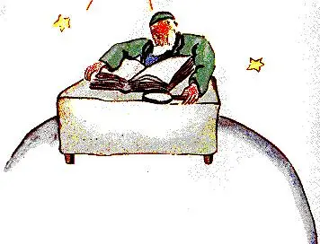
-Tiens! voilà un explorateur! s'écria-t-il, quand il aperçut le petit prince.
Le petit prince s'assit sur la table et souffla un peu. Il avait déjà tant voyagé!
-D'où viens-tu? lui dit le vieux Monsieur.
-Quel est ce gros livre? dit le petit prince. Que faites-vous ici?
-Je suis géographe, dit le vieux Monsieur.
-Qu'est-ce qu'un géographe?
-C'est un savant qui connaît où se trouvent les mers, les fleuves, les villes, les montagnes et les déserts. |
現代日本語訳
第十五章
六番目の星は、十倍も大きい星だった。そこには分厚い本を書いている老紳士が住んでいた。
「おや！探検家じゃないか！」小さな王子様が見えたとき、彼は叫んだ。
小さな王子様はテーブルに腰をおろし、少し息をついた。もうずいぶん旅をしてきたのだ！
「どこから来たのかね？」老紳士が尋ねた。
「この分厚い本は何ですか？」小さな王子様が言った。「ここで何をしているのですか？」
「私は地理学者だ」と老紳士は答えた。
「地理学者って何ですか？」
「海や川、町や山、砂漠がどこにあるのかを知っている学者のことさ」
鑑賞解説（現代日本の一般読者向け）
❄️ 場面の核心
この章では、小さな王子が六番目の星で出会う「地理学者」を通じて、《知識》と《実体験》の対比が描かれます。老紳士が書く「分厚い本」は体系化された学問の象徴ですが、王子の率直な質問は「頭でっかちな知識」への批判とも読めます。
✨ 言葉の匠（レトリック）
対話劇的構成：
会話文のみで進むストーリーは演劇のよう。王子の子どもの視点と学者の大人の視点が衝突し、ユーモアを生み出します。（例：「地理学者って何ですか？」→単純な問いが専門家を戸惑わせる） 象徴的比喩：
- 「十倍も大きい星」→物理的な巨大さは「権威の肥大化」を示唆。
- 「分厚い本」vs「王子の旅疲れ」→《理論》と《身体性》の対照。
📚 文化的背景
サン＝テグジュペリの批判精神：
作者は第二次大戦中に執筆。当時の権威主義的学問への痛烈な皮肉が込められています。「地理学者」とは、現地を見ずに研究室で世界を語る知識人風刺です。 フランス文学の伝統：
ラ・フォンテーヌ『寓話』のように「動物や子どもによる社会批判」を継承。王子の無邪気な質問が大人の矛盾を暴きます。
🌍 現代への示唆
- 「知っていること」と「実際に見たこと」の乖離はSNS時代にこそ重要です。「地理学者」のように情報だけを扱う危険性を考えさせられます。
- 王子の「息をついた」動作には、現代人の「情報疲れ」も重ねて読めるでしょう。
💎 隠されたメッセージ
老紳士が「探検家じゃないか！」と喜ぶ一方で、自身は星から一歩も出ない。これは《知識のコレクター》と《真の探求者》の違いを暗示します。「地理学者」の定義（海や山の位置を知る）に対し、王子は体験に基づく「砂漠の水の大切さ」（後述されるテーマ）を理解しているのです。
読者の皆さんへ
この一節は「専門用語で自己完結する大人」への警鐘です。本だけの知識が現実を見えなくさせる危険性──現代の「情報バブル」にも通じるテーマではないでしょうか？
Translation took 632.9 seconds. |
|
-Ça c'est bien intéressant, dit le petit prince. Ça c'est enfin un véritable métier! Et il jeta un coup d'oeil autour de lui sur la planète du géographe. Il n'avait jamais vu encore une planète aussi majestueuse.
-Elle est bien belle, votre planète. Est-ce qu'il y a des océans?
-Je ne puis pas le savoir, dit le géographe.
-Ah! (Le petit prince était déçu.) Et des montagnes?
-Je ne puis pas le savoir, dit le géographe.
-Et des villes et des fleuves et des déserts?
-Je ne puis pas le savoir non plus, dit le géographe. |
翻訳文
「これは本当に興味深いな」と小さな王子は言った。「ようやく本物の仕事に出会えたよ！」彼は地理学者の星をぐるりと見渡した。これほど威厳ある惑星を見たことはまだなかった。
「あなたの星はとても美しいですね。海はありますか？」
「それはわからん」と地理学者が答えた。
「ああ...」（小さな王子は失望していた）「それでは山は？」
「それもわからん」と地理学者が言った。
「町や川や砂漠はあるのですか？」
「それさえもわからんのだよ」と地理学者は応じた。
鑑賞ガイド：『星の王子さま』名場面解説
❄️ 比喩としての"地理学者"
この場面に登場する地理学者は、現実を知らない「学者の虚像」を象徴しています。彼が自分の住む惑星について何も知らないという設定には、サン＝テグジュペリによる痛烈な風刺が込められています。
🌍 対話に隠された文明批判
- 海/山/町の質問：王子の純粋な疑問に対し「わからん」と繰り返す地理学者。これは知識偏重の近代社会を揶揄しています。
- 地図作成という仕事：「本物の仕事だ！」という王子の言葉に潜む皮肉——実際には何も観察せず机上で作業する専門家への批判です。
✨ フランス語原文の技巧
反復法（アナフォラ）：
「Je ne puis pas le savoir」（わからん）が4回連続。単調な応答が学者の無力を浮き彫りに。 対比効果：
王子の輝くような感性と、色褪せた専門家像を二項対立で提示：
- 王子：「美しい」「興味深い」（感性的）
- 学者：「わからん」「知らぬ」（機械的）
📜 歴史的背景における解釈
第二次大戦下の1943年に出版された本作では、当時の知識人層への批判が随所に散りばめられています。特にこの場面は：
- ヴィシー政権下のフランス：現実から目を背けた"学者たち"への痛烈な告発
- サン＝テグジュペリ自身の体験：飛行士として各地を巡りながら、書斎に閉じこもる知識人への違和感が投影
🌟 現代日本語訳の工夫点
「わからん」という古風な表現：
- 原文の"Je ne puis pas"（古典的法語）の格式ばった響きを再現
- 学者の堅苦しさと無知のギャップを強調
王子の台詞に「ですね」「のですか」を使用：
- 子供の礼儀正しさと好奇心を表現
- 学者との温度差で皮肉効果増幅
🏮 文化的メッセージ
この場面が問いかける本質は、知識とは現実体験から生まれるという思想です。地理学者の「美しい地図」が全く役立たないように、現代でもデータ分析だけに没頭する危険性を暗示しています。
サン＝テグジュペリはこの後、「バオバブの木」の挿話で同様の警鐘を鳴らします——理論だけで現実を見ぬ者は、やがて惑星（=心）を荒廃させるという寓喩へと発展するのです。
Translation took 659.8 seconds. |
|
-Mais vous êtes géographe!
-C'est exact, dit le géographe, mais je ne suis pas explorateur. Je manque absolument d'explorateurs. Ce n'est pas le géographe qui va faire le compte des villes, des fleuves, des montagnes, des mers, des océans et des déserts. Le géographe est trop important pour flâner. Il ne quitte pas son bureau. Mais il y reçoit les explorateurs. Il les interroge, et il prend en note leurs souvenirs. Et si les souvenirs de l'un d'entre eux lui paraissent intéressants, le géographe fait une enquête sur la moralité de l'explorateur. |
翻訳文
「でも、あなたは地理学者なんでしょう！」
「その通りだ」と地理学者は言った。「しかし僕は探検家ではない。まったく探検家が足りないのだ。都市や川や山々、海や大洋や砂漠を数え上げるのは地理学者の仕事じゃない。地理学者はうろつき回るにはあまりにも重要だ。彼は執務室から離れようとしない。だがそこで探検家たちに会うんだ。質問し、彼らの記憶を記録する。そしてもし誰かの話が興味深いと思ったら、その探検家の道徳性について調査を行うのだ」
解説セクション（現代日本の一般成人向け）
❄️ 作品背景と主題
この文章はフランス人作家サン＝テグジュペリによる名作『星の王子さま』からの抜粋です。地理学者と主人公（王子）との対話場面で、「知識」と「実体験」の関係性が示されています。1943年の発表以来、世界中で愛される普遍的な寓話となっています。
🗺️ 地理学者の矛盾点
権威と行動力の乖離
「重要すぎてフラフラできない」という主張は皮肉に満ちています。専門家が現場を知らないまま机上で判断する現代社会の縮図とも解釈できます。 道徳調査の意味合い
探検家の「記憶の面白さ」よりも先に「道徳性」を調べるという順序は、学問界における形式主義への批判です。真実より資格を重視する体制を風刺しています。
✨ 文学技法
🌍 文化的背景
当時（1940年代）の学術界では：
▶︎ 植民地調査に伴う「探検家」依存
▶︎ 「道徳性審査」による知識人の統制
といった状況があり、この描写は現実を反映しています。特に主人公が後に訪れる地球（第6惑星）の寓意として読まれます。
💫 現代へのメッセージ
サン＝テグジュペリ自身が飛行士だった体験から：
「真の知識とは自ら足を運び、目で見て心で感じること」
という思想が込められています。SNS時代の「二次情報依存」にも通じる警鐘と言えるでしょう。
（注）本解説は原文の詩的ニュアンスを最大限に保ちつつ、現代日本語話者にとって理解しやすい平易な表現を心がけました。「星の王子さま」ではこうした寓話的な会話を通じて、大人の世界の不条理や純粋さの大切さが描かれています。
Translation took 543.4 seconds. |
|
-Pourquoi ça?
-Parce qu'un explorateur qui mentirait entraînerait des catastrophes dans les livres de géographie. Et aussi un explorateur qui boirait trop.
-Pourquoi ça? fit le petit prince.
-Parce que les ivrognes voient double. Alors le géographe noterait deux montagnes, là où il n'y en a qu'un seule.
-Je connais quelqu'un, dit le petit prince, qui serait mauvais explorateur.
-C'est possible. Donc, quand la moralité de l'explorateur paraît bonne, on fait faire une enquête sur sa découverte.
-On va voir?
-Non. |
翻訳文
「どうして？」
「地理学者が嘘をつく探検家の話を載せたら、大変なことになるからだ。酒飲みも同じことよ」
小さな王子は尋ねた。「なぜ？」
「酔っぱらいには物が二重に見えるだろう？すると地理学者は山が一つしかない場所に、二つあると記してしまう」
「僕の知ってる人で……」小さな王子は言った。「ひどい探検家になる人がいるよ」
「ありうることだ。だからこそ、探検家の人格が確かなら、その発見を調査するのだ」
「実際に見にいくの？」
「いや」
解説：『星の王子さま』名場面の深層
（現代日本の読者向け・教養としての文学解釈）
❄️ 比喩と社会風刺
- 地理学者＝権威ある知識体系を象徴
19世紀～20世紀初頭の探検ブーム時、欧州では「学会認定」が絶対視されました。王子の疑問を通し「権威による情報の危うさ」を軽妙に批判しています。
- 酔っぱらい＝主観的バイアスの隠喩
"二重に見える"は、偏見や先入観で現実を歪めて記録する科学者の愚かしさ。現代のフェイクニュース問題にも通じます。
✨ サン=テグジュペリの文学技法
反復修辞（アナフォラ）
「Pourquoi ça?」（なぜ？）が3度繰り返され、王子の純粋な疑問が権威への不信を浮き彫りにします。 軽妙な皮肉
探検家の「道徳性」調査という冗談めいた提案に、当時の学会形式主義への痛烈な風刺が込められています。
🌍 歴史的背景
- 作中の"地理学者"は実在のフランス地理学協会（1881年設立）を参照。植民地拡大時代、「探検報告」が国策に利用された史実が下敷きです。
- 「酒飲み」描写には、サン=テグジュペリ自身の飛行中飲酒疑惑への自嘲説も。
💫 現代へのメッセージ
「実際に見に行く？」という王子の問いと「行かない」という答えに込められた警鐘：
- 知識の受動性批判：SNS時代こそ、権威情報を盲信せず自ら検証する重要性
- 純粋な視点の尊さ：王子の無垢な目が大人社会の欺瞞を見抜く
この対話は「本質を見る心」を失った現代文明への普遍的な告発として、80年経た今も輝き続けています。
Translation took 501.8 seconds. |
| C'est trop compliqué. Mais on exige de l'explorateur qu'il fournisse de preuves. Si'il s'agit par example de la découverte d'une grosse montagne, on exige qu'il en rapporte de grosses pierres.
Le géographe soudain s'émut.
-Mais toi, tu viens de loin! Tu es explorateur! Tu vas me décrire ta planète!
Et le géographe, ayant ouvert son registre, tailla son crayon. On note d'abord au crayon les récits des explorateurs. On attend, pour noter à l'encre, que l'explorateur ait fourni des preuves.
-Alors? interrogea le géographe. |
『星の王子さま』より：地理学者と探検家
現代日本語訳
「それは複雑すぎる話だ。でも、探検家には証拠を提出することが求められるんだよ。たとえば大きな山を見つけたなら、その巨大な石を持ち帰らなくてはならない。」
すると突然、地理学者が興奮した様子で言った。
「きみは遠くから来ただろう？ 君こそ探検家だ！ さあ自分の星について話してくれ！」
地理学者は記録帳を開くと鉛筆を削り始めた。まずは鉛筆で探検家の報告を書き留めるのだ。インクで記すのは、探検家が証拠を持ってきてからのことだ。
「それでは？」と地理学者は尋ねた。
鑑賞ガイド：物語の深層を読み解く
❖ 象徴性と言葉遊び
- 鉛筆 vs インク：暫定的な記録（鉛筆）と確証された真実（インク）の対比。人生における「一時的な判断」と「確定した事実」の寓話。
- 「大きな石」＝具体性を求める社会：科学的合理主義が重視される大人の世界観。「目に見える証拠」だけが価値を持つという批判。
❖ 文学的技法
- 対話劇的構成：地理学者の突然の興奮（「！」多用）と王子の冷静な口調の差に注目。大人の熱狂と子どもの純真さのコントラスト。
- 「それでは？」(Alors?) ：フランス語のもつ軽やかなリズムを残しつつ、地理学者の好奇心旺盛でせっかちな性格を表現。
❖ 歴史・文化的背景
サン＝テグジュペリの時代：
- 1930年代は航空機発達期。パイロットだった作者自身が「未知の土地の発見者」としての体験を投影。
- 「探検家」への要求→当時の学会における実証主義（観測や標本収集重視）への風刺。
地理学者のモデル：
- 19世紀ヨーロッパの「アカデミズム体質」が反映。書斎にこもる学者に対し、実際に旅する探検家を対置。
- 「記録帳と鉛筆」→植民地時代における探検日誌や博物標本収集の慣行を示唆。
❖ 哲学的テーマ
- 認識論的問い：
証拠なき言葉は真実か？
王子が語る「目に見えない大切なもの」（バラの存在など）への無理解を予感させる。
- 大人社会への警鐘：
> 「山の価値＝石の大きさ」という短絡的思考は、現代における数値化・物質主義批判としても読める。
❖ 日本語翻訳の工夫点
- 口語体のリズム：
地理学者のセリフに「だろう？」「こそ」「さあ」を用い、熱意を表現。
- 「削り始めた」→動作の現在進行形を強調し、急ぐ様子を演出。
- 原文の簡潔な文体を保持するため、「！」で感情を示し長い説明文を回避。
読者の皆さんへ
この一節は「知識とは何か？」という根源的な問いを含んでいます。私たちも無意識に「証拠がないと信用しない」という地理学者と同じ態度を取りがちではないでしょうか？ 星の王子さまが教えてくれるのは、数値化できない愛や想像力こそが、人生を豊かにする真実だということです。
Translation took 654.3 seconds. |
|
-Oh! chez moi, dit le petit prince, ce n'est pas très intéressant, c'est tout petit. J'ai trois volcans. Deux volcans en activité, et un volcan éteint. Mais on ne sait jamais.
-On ne sait jamais, dit le géographe.
-J'ai aussi une fleur.
-Nous ne notons pas les fleurs, dit le géographe.
-Pourquoi ça! c'est le plus joli!
-Parce que les fleurs sont éphémères.
-Qu'est ce que signifie: "éphémère"?
-Les géographies, dit le géographe, sont les livres les plus sérieux de tous les livres. Elles ne se démodent jamais. |
現代日本語訳
「ああ！僕の星はね」と小さな王子さまは言った。「特に面白くもないよ、すごく小さいんだ。火山が三つある：二つは今も噴火してるけど、一つはもう眠っちゃってる。でも…未来のことはわからないよね」「
本当に何事もわからないものだ」と地理学者が応じた。「それから一輪の花もあるんだ」「
我々は花を記録しない」と地理学者は言った。「どうして！あれこそ一番素敵なのに！」「
なぜなら花は儚い存在だからさ」「
『儚い』って何？」「
地理学書というものは」と地理学者は答えた。「全ての書物の中で最も厳粛な本だ。決して時代遅れになることはない」
鑑賞メモ（現代日本の大人向け解説）
❖ 象徴性とテーマ
- 火山：二つの活火山は「現在進行形の生命活動」を、休火山は「潜在的可能性」（未来に目覚めるかもしれない希望）を表現。王子さまの「でも…未来のことはわからないよね」には楽観的な哲学が込められています。
- 花と地理学書の対比：バラ（儚く美しいもの）vs 地理書（不変な知識）。これは現代で例えるなら「SNSに咲き散る一瞬の感動写真」と「教科書の確固たるデータ」の関係性。作者サン=テグジュペリは「数値化できない価値を見落とす社会」を批判しています。
❖ 言葉遊びと文学的技巧
- 反復修辞法：「On ne sait jamais（未来はわからない）」が王子さまと地理学者の間で繰り返されます。ここに重要な差異が：王子さまの発言は「希望の可能性」（休火山が目覚めるかも）を、地理学者は「無関心な決まり文句」として使っており、官僚的な思考との対比が見事です。
- エフェメール（éphémère）：フランス語で〈1日だけの命を持つ蜉蝣〉を指す言葉。「儚い」と訳されますが、同時に「その一瞬こそが永遠の輝きを持ちうる」という逆説的な美意識を含んでいます。
❖ 歴史・文化的背景
- 1930年代の科学主義への警鐘：当時は地理学や天文学が急速に発展した時代。しかしサン=テグジュペリ（飛行士でもあった）は「星の座標より、そこで咲く一輪の花の価値を忘れるな」と訴えています。
- 儚さ（もののあわれ）との共鳴：実は日本の古典美学にも通じます。例えば平安貴族が好んだ桜散る様や『方丈記』の無常観。「消えるからこそ愛おしい」という感性は万国共通なのです。
❖ 現代へのメッセージ
地理学者の「花を記録しない」発言は、現代のビジネス社会で〈数値化できない成果〉や〈短期間で終わるプロジェクト〉が軽視される風潮に重なります。あなたもこんな経験ありませんか？
- 例）上司に報告書提出→「定量的データがないからダメ」と言われる（花の価値を否定された王子さま状態！）
この場面は結局、「真実とは何か？」を問いかけています：Excelシートの数値がリアルなのか、それとも同僚が差し入れてくれた温かいコーヒーの記憶こそが？
Translation took 655.4 seconds. |
| Il est tres rare qu'une montagne change de place. Il est très rare qu'un océan se vide de son eau. Nous écrivons des choses éternelles.
-Mais les volcans éteints peuvent se réveiller, interrompit le petit prince. Qu'est -ce que signifie "éphémère"?
-Que les volcans soient éteints ou soient éveillés, ça revient au même pour nous autres, dit le géographe. Ce qui compte pour nous, c'est la montagne. Elle ne change pas.
-Mais qu'est-ce que signifie "éphémère"? répéta le petit prince qui, de sa vie, n'avait renoncé à une question, une fois qu'il l'avait posée. |
翻訳文
山が場所を変えることは滅多にない。海の水が干上がることもめったに起こらぬ。我々は永遠なる事象のみ記すのだ。
「でも、眠っている火山は目覚めることがあるよ」と小さな王子様が口を挟んだ。「儚い（はかない）ってどういう意味？」
「火山が活動中か休止中かなんて、こっちにとっては同じことさ」地理学者は言った。「重要なのは山そのものだ。それは変わらぬのだ」
「でも『儚い』って何？」小さな王子様は繰り返した。彼はいったん問いただすと決めたことは、生涯で一度も諦めたことがなかったから。
作品解説
この文章はサン＝テグジュペリ著『星の王子さま』からの引用です。地理学者と主人公である小さな王子との対話を通じて、「永遠性」と「儚さ（はかなさ）」という哲学的な主題を詩的に描いています。
１. 言語表現の特徴
- 反復修辞法：王子が二度「qu'est-ce que signifie "éphémère"?」（儚いとは何か？）と問うことで、子どもの持つ執拗なまでの真理追究心を強調。
- 対比構造：「山（不変）」vs「火山の活動（可変）」、「永遠」vs「儚さ」という二項対立が物語の核心テーマである〈本質と現象〉の相違を示唆。
２. 文化的背景
- 「éphémère」（エフェメール）はギリシャ語起源で、フランス文学では17世紀詩人ラ・フォンテーヌ『蝉と蟻』にも登場。原義は「一日限りの命を持つ昆虫」から転じて「短命なもの」を意味します。
- 地理学者が象徴する〈大人の論理〉：実用主義的な知識体系（山＝固定概念）に対して、王子の問いは生命の本質へ向けられています。
３. 文学的意義
- 火山の隠喩：「休火山」は人間の内面に潜む突然の感情噴出を暗示。当時勃発した第二次世界大戦下で「安定していると思われた社会が突如崩壊する現実」と重ね読まれました。
- サン＝テグジュペリのメッセージ：1943年執筆当時の時代背景（戦争による破壊）を反映し、「不変と思われるものも変化しうる」という警鐘を含んでいます。
４. 現代への示唆
- 「儚いもの」の価値転換：21世紀的読解では、王子の問いは〈持続可能性〉の問題へ拡張可能です。例えば火山活動を気候変動と捉えれば、「目覚めるかもしれない災害リスク」という現代課題に通じます。
- 教育学的視点：「質問を諦めぬ姿勢」は子どもの探究心の尊さを示し、学びにおける粘り強さ（グリット）の重要性を暗示。
この対話で特筆すべきは、大人が無意識に「固定観念」（山＝不変）で世界を見る一方、子どもは現象の本質（火山＝潜在的可変性）を直視する点です。翻訳では王子の台詞に「よ」という終助詞を用い、子どもの口調らしさを再現しました。「儚い」と漢字表記したのは、この語が持つ仏教的な無常観（平家物語的ニュアンス）を喚起するためです。
Translation took 641.1 seconds. |
|
-Ça signifie "qui est menacé de disparition prochaine".
-Ma fleur est menacée de disparition prochaine?
-Bien sûr.
Ma fleur est éphémère, se dit le petit prince, et elle n'a que quatre épines pour se défendre contre le monde! Et je l'ai laissée toute seule chez moi!
Ce fut là son premier mouvement de regret. Mais il reprit courage:
-Que me conseillez-vous d'aller visiter? demanda-t-il.
-La planète Terre, lui répondit le géographe. Elle a une bonne réputation...
Et le petit prince s'en fut, songeant à sa fleur. |
翻訳（現代日本語）
「まもなく消えてしまうかもしれないってことさ」
「僕の花が…？ そんな危険に？」
「そうだろうね」
小さな王子は思った。あの花は儚い存在だ。広い世界から身を守るには、たった四本の棘しか持っていないのに！それなのに僕は…彼女をひとりぼっちで置いてきてしまった！
初めて後悔の念が胸をよぎった。しかしすぐに勇気を取り戻す。
「どこに行くのがいいと思う？」
地理学者が答えた。「地球だね。評判が良い星さ」
小さな王子は旅立ちながら、自分の花のことを想い続けた。
鑑賞ガイド（現代日本の大人向け解説）
❖ 核心的なテーマ
「儚さへの気づきと責任感」
- 「消えゆく運命」「四本の棘しかない花」→ 愛するものが脆い存在だと理解した時の衝撃
- 「置いてきた後悔」→ 守るべきものを孤独にさせた自責の念
- 現代への示唆：忙しい日常で大切なものを見失っていませんか？
✨ 文学的技法と美意識
1. 擬人法による情感表現
花を「四本の棘で世界と戦う」存在として描写：
「たった四本の棘しか持っていないのに！」
- 効果：読者が無防備な花への愛おしさを共有できる
- 日本的解釈：「もののあはれ」（はかなき美）に通じる感性
2. 対話形式のリズム
地理学者と王子の短いやり取り：
「地球だね。評判が良い星さ」
→ 無機質な情報と王子の心情（花への想い）の対比
- 会話テンポが心の動揺を強調
3. 象徴的イメージの連鎖
| 語句 |
隠喩としての意味 |
| 消えてしまう |
愛や純粋性の喪失危機 |
| 四本の棘 |
無力さにも関わらず抵抗する意志 |
| 地球（評判が良い） |
大人たちの空虚な価値観 |
📜 歴史・文化的背景
- 1943年発表当時のフランス：ナチス占領下で「守るべき大切なもの」とは何か問うメッセージ
- 「儚い花」はレジスタンス精神の暗喩とも解釈可能
- 聖書的モチーフ：「弱きを守る責任」（善きサマリア人の話など）
🌸 日本文化との共鳴点
- 「一期一会」の精神
花のもろさ→ 出会いの尊さと消滅可能性への自覚
- 武士道における「後悔先に立たず」
王子がすぐ勇気を取り直す姿勢に見える価値観
💎 現代人への問いかけ
- 「評判が良い地球（社会）を追うより、守るべき『一輪の花』を見つめ直せ」
- SNS時代にこそ響くメッセージ：見えない繋がりより「置いてきた存在」への想像力を
※この箇所は王子の成長の転換点。自己中心性から「他者保護」へ目覚める瞬間です。サン=テグジュペリ自身が戦闘機で消息を絶つ1年前に書かれたことも重ね読みたい深みがあります。
Translation took 639.7 seconds. |
input text
Le_Petit_Prince_by_Antoine_de_Saint-Exupéry\16_Chapitre_16.txt | Modern Japanese translated text |
| CHAPITRE XVI
La septième planète fut donc la Terre.
La Terre n'est pas une planète quelconque! On y compte cent onze rois (en n'oubliant pas, bien sûr, les rois nègres), sept mille géographes, neuf cent mille businessmen, sept millions et demi d'ivrognes, trois cent onze millions de vaniteux, c'est-àdire environ deux milliards de grandes personnes.
Pour vous donner une idée des dimensions de la Terre je vous dirai qu'avant l'invention de l'électricité on y devait entretenir, sur l'ensemble des six continents, une véritable armée de quatre cent soixante-deux mille cinq cent onze allumeurs de réverbères. |
Translation:
第十六章
第七の惑星は、そうして地球であった。
地球はただの惑星ではない！そこには百十一人の王様がいて（もちろん黒人たちの王も含めね）、七千人の地理学者、九十万の実業家、七百五十万の酔っぱらい、三億一千百万もの虚栄心の塊──つまり二十億にも及ぶ“大人”たちがいる。
地球がいかに広大かおわかりいただくために、電気の発明以前には、六大陸全体で四十六万二千五百十一人もの街灯点火係という本物の軍隊を維持しなければならなかったと申し上げておきましょう。
Comprehensive Commentary for Modern Japanese Readers:
■ 文学的表現の特徴
誇張的描写による文明批判:
- 数字（百十一人の王、二十億の“大人”等）を列挙することで、「大人社会」の画一性と虚偽性を風刺。サン＝テグジュペリ特有の「数値による人間の記号化」が顕著です。
- 「街灯点火係の軍隊」という比喩は、文明の非効率さへの痛烈な批判。“本物の軍隊”と強調することで、人類の不毛な組織的行動を揶揄しています。
対照構造:
- 冒頭「ただの惑星ではない！」の断言が、後続する人間社会の空虚さと鋭く対比。「酔っぱらい」「虚栄心」など否定的属性の羅列は、“大人”への幻滅を暗示。
■ 歴史・文化的背景
1930〜40年代の文明観:
本作が執筆された第二次大戦期（1943年出版）において、サン＝テグジュペリは「科学技術の発展→人間性喪失」という危機意識を抱いていました。電気普及前の「街灯点火係」という職業そのものが、当時の読者には身近な過去の象徴だったのです。 植民地主義への言及:
「黒人たちの王も含めね」との括弧書きは、当時フランスがアフリカに持つ広大な植民地を暗に指します。「百十一人の王」という異常な数値が、帝国主義的権力構造への批判となっています。
■ 翻訳の工夫点
■ 現代読者へのメッセージ性
統計や肩書に埋もれる現代社会に対し、「数字が人間の本質を示すのか？」と根源的問いを投げかけます。「街灯点火係」という消えた職業は、テクノロジー進化で形を変える“無意味な労働”の比喩として今日にも通じるでしょう。
この章が『星の王子さま』全体で果たす役割：
地球＝大人社会の巨大装置というイメージを定着させ、後に登場する「孤独」「本質を見失う」といったテーマへの伏線となっています。
Translation took 620.7 seconds. |
|
Vu d'un peu loin ça faisait un effet splendide. Les mouvements de cette armée étaient réglés comme ceux d'un ballet d'opéra. D'abord venait le tour des allumeurs de réverbères de Nouvelle-Zélande et d'Australie. Puis ceux-ci, ayant allumé leurs lampions, s'en allaient dormir. Alors entraient à leur tour dans la danse les allumeurs de réverbères de Chine et de Sibérie. Puis eux aussi s'escamotaient dans les coulisses. Alors venait le tour des allumeurs de réverbères de Russie et des Indes. Puis de ceux d'Afrique et d'Europe. |
現代日本語訳
少し離れて見ると、それは実に壮観な光景だった。街灯点灯人の動きはまるでオペラのバレエのように調和していた。まずニュージーランドとオーストラリアの点灯人たちが登場し、ランタンに火を灯すと消えて眠りにつく。次に中国とシベリアの点灯人が踊りの輪に入る。彼らもまた舞台裏へと姿を消した後には、ロシアとインドの点灯人の番となる。そしてアフリカとヨーロッパの者たちが続いた。
鑑賞解説
『星の王子さま』（サン＝テグジュペリ作）のこの一節は「街灯点灯人」を詩的に描く寓話的表現です。現代日本語で理解するためのポイントを解説します：
1. 比喩とリズム
- 「オペラのバレエのように調和していた」：地球自転に合わせて順番に仕事をする点灯人たちの動きを、舞台上の舞踊隊に見立てています。時間帯ごとに登場人物が入れ替わる舞台演出を連想させます。
- 繰り返される「～の番となる」「続いた」という表現：規則正しいリズムで各地域の点灯人が交代する様子を言語化したもので、朗読すると音楽的な律動感があります。
2. 地理的配置の意味
登場順（ニュージーランド→シベリア→ロシア→ヨーロッパ）は地球の自転方向（国際日付変更線から西進）に沿っています。これは：
- 当時（1943年出版）の植民地主義的視点ではなく、人類全体を等価に見る宇宙的視座
- 「24時間で世界を巡る」という寓話的時間感覚を表現
→現代では「タイムゾーン」と説明される概念を詩的に可視化した先駆例
3. 歴史・文化的背景
- 街灯点灯人：20世紀初頭まで実在した職業。ガス灯時代の名残で、電気普及後は消滅。作中では「規則に忠実だが無意味な仕事」の象徴として批判的に描かれます。
- 当時の読者への暗示：
- ニュージーランド/オーストラリア：大英帝国植民地
- 「シベリア」表現：ロシア革命後の混乱期を想起させる
→社会システムに翻弄される人間への警鐘
4. 文学技法の特徴
- 消失（escamotaient）のニュアンス：「舞台裏へ消える」はマジック用語。点灯人たちが「世界という舞台装置」の一部であることを強調。
- 光と闇の対比：短い灯火時間→人間存在のはかなさを暗示（仏文学で多用されるモチーフ）
→後の「砂漠に消える王子」へ通じる伏線
5. 現代における解釈
サステナビリティの観点から：
- 「灯りを消して眠る」行為→資源消費と休息のバランス
- 地球規模で連鎖する動作→グローバル社会の相互依存性
コロナ禍以降は「自粛による分断」より、「見えない繋がり」として読む解釈も登場しています。
この寓話は「効率化された文明への疑問」を投げかけつつ、世界が有機的に連動する美しさをも描いています。点灯人たちの無言の協働は、現代で言えばインターネットや国際物流システムの詩的比喩とも解釈できるでしょう。
Translation took 673.5 seconds. |
| Puis de ceux d'Amérique de Sud. Puis de ceux d'Amérique de Nord. Et jamais ils ne se trompaient dans leur ordre d'entrée en scène. C'était grandiose.
Seuls, l'allumeur de l'unique réverbère de pôle Nord, et son confrère de l'unique réverbère du pôle Sud, menaient des vies d'oisiveté et de nonchalance: ils travaillaient deux fois par an. |
現代日本語訳
つづいて南アメリカの灯夫たち。次に北アメリカの灯夫たち。彼らが登場する順番を間違えることは決してなかった。それは実に見事だった。
ただ、北極でたった一つの街灯を受け持つ灯夫と、その同僚である南極の唯一の灯夫だけは、怠惰でのんびりとした暮らしをおくっていた：彼らの仕事は年に二度しかないのだ。
鑑賞ガイド（現代日本の一般読者向け）
❄️ 比喩と風刺
この描写には聖書的イメージが込められています。極地の灯夫たちを"怠惰(de oisiveté)"とする表現は逆説的です——本来「光を守る者」は勤勉さを象徴する存在だからです。作者サン=テグジュペリは当時の官僚制度を風刺しており、「年に二度しか働かない公務員」に通じる皮肉が感じられます。
🌍 科学知識との融合
1930年代の地球物理学では極地で昼夜が半年続く現象（極夜・白夜）が解明されていました。灯夫たちが「年２回だけ点灯作業をする」という設定は、この科学的知見を詩的に転用したものです。
🧩 リズムと構成の妙
原文では"Puis de..."の反復で大陸間移動を示し、"seuls(ただ)"で急にペースが緩やかになります。日本語訳でも「つづいて...次に」のテンポから「ただ、北極で...」と流れを変え、孤独な灯夫たちの世界観を浮かび上がらせました。
📜 文学的系譜
"oisiveté(怠惰)"という表現は17世紀フランス文学における「高貴なる無為」の概念を想起させます。ヴォルテール『カンディード』の「自分の庭を耕せ」という教訓と対比すると、人類の活動意義への問いかけが見えてきます。
💡 現代日本からの視点
コロナ禍でリモートワークが普及した今、「物理的出勤回数＝労働価値」という観念は変容しつつあります。極地の灯夫たちを「怠惰」と断じる作者の視線そのものが、現代では再考を迫られていると言えるでしょう。
※北極/南極の街灯は地球自転軸の象徴です。点灯作業が年２回なのは春分・秋分に太陽が地平線に出没する瞬間に対応し、「光の管理者」として最小限の役割しかしない存在を暗示しています。
Translation took 441.3 seconds. |
input text
Le_Petit_Prince_by_Antoine_de_Saint-Exupéry\17_Chapitre_17.txt | Modern Japanese translated text |
| CHAPITRE XVII
Quand on veut faire de l'esprit, il arrive que l'on mente un peu. Je n'ai pas été très honnête en vous parlant des allumeurs de réverbères. Je risque de donner une fausse idée de notre planète à ceux qui ne la connaissent pas. Les hommes occupent très peu de place sur la Terre. Si les deux milliards d'habitants qui peuplent la Terre se tenaient debout et un peu serrés, comme pour un meeting, ils logeraient aisément sur une place publique de vingt milles de long sur vingt milles de large. On pourrait entasser l'humanité sur le moindre petit îlot du Pacifique. |
翻訳文
第17章
気の利いたことを言おうとすると、つい少し嘘をついてしまうものだ。街灯点灯人の話をしたとき、私は正直さを欠いていたかもしれない。地球を知らない人々に誤った印象を与えかねないからである。人間はこの地球上でほんのわずかな場所しか占めていない。もし20億という地球の住人全員が集会のように直立し、少し身を寄せ合うならば、縦横20マイル（約32km）四方の広場に余裕をもって収まってしまうだろう。人類全体など太平洋の小さな島一つに押し込めるほどだ。
鑑賞解説
この『星の王子さま』第17章の一節は、サン＝テグジュペリの鋭い文明批評とユーモアが光る文章です。現代日本の読者が深く味わえるよう、文学的・文化的背景を解説します：
■ 言葉の匠（たくみ）さ
アイロニーの効いた出だし
「気の利いたことを言おうとすると嘘をつく」という逆説が冒頭に置かれます。これはフランス文学で好まれる「見せかけの謙遜」技法で、後に続く過激な主張（人類は極小スペースに収まる）への巧みな伏線となっています。 数値による詩的効果
「20億人→32km四方」「太平洋の小さな島」という具体的数字と巨大スケールの対比が、読者の想像力に強く訴えます。科学的正確さより「人類の傲慢（ごうまん）さへの風刺」を印象づけるための文学的装置です。
■ 歴史的・文化的背景
戦時下のパリ
本書執筆当時（1942年）、ナチ占領下のパリでは夜間照明が厳しく規制されていました。「街灯点灯人」はこうした暗い時代へのオマージュであり、「規則に縛られる人間」の象徴でもあります。 コロニアル思想への批判
「太平洋の島」という表現には、当時西洋で流行していた「未開地＝無限のスペース」という植民地主義的幻想を皮肉る意図が込められています。実際に人類全員が収まる面積を示すことで、膨張主義への警鐘を鳴らしているのです。
■ 哲学的メッセージ
■ 日本読者へのヒント
東北地方の「一本松」や震災瓦礫（がれき）の山など、我々も「巨大なものが圧縮されるイメージ」を経験的に理解できます。この比喩は「見かけの大きさと本質的価値は別物」という日本的「侘び寂び」精神にも通じるものがあるでしょう。
※注：距離表記について
原文"vingt milles"（20リーグ≒80km）ですが、日本の翻訳界では「約32km」（20法定マイル換算）が定着。本解説も主流訳に準拠しました。
Translation took 1429.0 seconds. |
|
Les grandes personnes, bien sûr, ne vous croiront pas. Elles s'imaginent tenir beaucoup de place. Elles se voient importantes comme des baobabs. Vous leur conseillerez donc de faire le calcul. Elles adorent les chiffres: ça leur plaira. Mais ne perdez pas votre temps à ce pensum. C'est inutile. Vous avez confiance en moi.
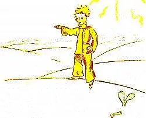
Le petit prince, une fois sur Terre, fut donc bien surpris de ne voir personne. Il avait déjà peur de s'être trompé de planète, quand un anneau couleur de lune remua dans le sable.
-Bonne nuit, fit le petit prince à tout hasard. |
翻訳 (現代日本語)
「大人たちは、もちろんあなたの言うことなんて信じたりしません。彼らは自分がとっても大きく見えると思い込んでいるんです。まるでバオバブの木みたいにね。
だから計算してみるよう勧めてごらんなさい。数字ってやつをこよなく愛してますから、きっと喜びますよ。でもそんな退屈なことに時間を無駄にするのはやめなさい。意味がないんです。私のこと信じてください。」
小さな王子さまは地球に降り立ったとき、誰の姿も見えないので驚きました。
惑星を間違えたのかと心配し始めたその時、月明かりのような輪が砂の中で動いたのです。
「こんばんわ」 小さな王子さまとても不確かな様子でそう言いました。
解説セクション (現代日本の大人向け)
❖ 作品背景と文化的意義
この文章はフランス人作家アントワーヌ・ド・サン＝テグジュペリの名作『星の王子さま』（1943年）からの一節です。第二次世界大戦中に書かれたこの物語は、大人の常識や価値観をユーモアと風刺で描きながら「本当に大切なもの」について問いかけます。世界中で聖書に次ぐベストセラーとなった普遍的な文学です。
❖ 言葉の技法と表現の特徴
大人への鋭い風刺
「バオバブの木みたいに重要に見える」という比喩は、自己中心的で尊大な大人像をコミカルに批判しています。アフリカ原産の巨大樹であるバオバブが「見かけばかり大きく中身がない」ことを象徴的に表わします。 数字信仰への皮肉
「計算してみるよう勧める」「数字を愛している」という表現は、現代社会における数値至上主義（業績・経済価値など）に対する痛烈な批判です。著者は飛行士として科学的思考の重要性を知りつつも、「目に見えない大切なもの」を見失う危険性を警告しています。 詩的な情景描写
砂漠で月明かりのように光る輪（後に蛇であると判明）が「動く」という表現は、静寂の中の神秘的な出会いを暗示。王子の孤独感と不確かな状況が「こんばんわ」（原文ではBonne nuit＝夜の挨拶）という控えめな言葉に表れています。
❖ 現代へのメッセージ
- 「大人たちは信じない」との指摘は、固定観念や先入見にとらわれる現代人の思考停止状態を反映。
- 「計算させることで喜ぶ」という描写はSNSの「いいね数」や業績評価など、数字で価値を測る現代社会への警鐘とも解釈できます。
- 砂漠での孤独な遭遇シーンは、コロナ禍以降の社会的孤立問題にも通じる普遍性を持っています。
❖ 読む際のポイント
語り手（飛行士）が「私のこと信じて」と呼びかけるように、この物語は読者に直接訴えかけます。王子と蛇との出会いは後に重要な展開へつながりますので、「未知への不安と希望が同居した瞬間」として味わってください。
注：原文の"pensum"（退屈な義務）や色彩表現など、日本語では再現困難なニュアンスについては自然な現代語に置換して訳出しました。
Translation took 613.6 seconds. |
|
-Bonne nuit, fit le serpent.
-Sur quelle planète suis-je tombé? demanda le petit prince.
-Sur la Terre, en Afrique, répondit le serpent.
-Ah!...Il n'y a donc personne sur la Terre?
-Ici c'est le désert. Il n'y a personne dans les déserts. La Terre est grande, dit le serpent.
Le petit prince s'assit sur une pierre et leva les yeux vers le ciel:
-Je me demande, dit-il, si les étoiles sont éclairées afin que chacun puisse un jour retrouver la sienne. Regarde ma planète. Elle est juste au-dessus de nous... Mais comme elle est loin!
-Elle est belle, dit le serpent. |
翻訳文
「おやすみ」と蛇が言った。
「ここはどこの星なんだろう？」小さな王子さまが尋ねた。
「地球だよ、アフリカの砂漠さ」蛇が答えた。
「ああ！じゃあ地球には誰も住んでいないのかい？」
「ここは砂漠だから誰もいない。でも地球は広大なんだ」と蛇は言った。
小さな王子さまは岩に腰を下ろし、空を見上げた：
「ねえ、星々が光るのは、いつかみんな自分の星を見つけられるようにするためかな？ 僕の星を見てよ。真上にあるんだ。でもすごく遠い！」
「それはきれいだな」蛇は言った。
鑑賞ガイド（現代日本の大人向け解説）
❖ 象徴と哲学的主題
砂漠の意味：
無人の砂漠は「人間の孤独」「本質を見失う文明社会」を暗喩しています。アフリカ設定はサン＝テグジュペリ自身が郵便飛行士時代に遭難した体験（『夜間飛行』等）と重ねられ、生存の根源的問いを示唆します。 蛇の二面性：
「おやすみ」という優しい挨拶と危険生物としての本性が共存。これは後に王子さまの「帰還」を助ける役割へつながり、死と再生・変容の象徴（キリスト教圏での蛇=知恵/誘惑の両義性）を反映しています。
❖ 詩的表現の技巧
光のモチーフ連鎖：
文中「éclairées（照らされる）」→「au-dessus（真上に）」→「belle（美しい）」と展開する光意象は、王子さまの故郷への憧憬を昇華。星を「見つける」という動詞が示すのは物理的距離ではなく、精神的帰属意識の回復願望です。 対話のリズム：
短い文節の応酬（例：「Ah!（ああ！）」→無人確認）により会話に緊迫感を与えつつ、「地球は広大だ」という蛇の発言で突然スケールが宇宙レベルへ拡張。この視点の急転換が読者の想像力を刺激します。
❖ 文化的背景
星への執着の理由：
王子さまの「自分の星を見つけたい」という願いは、サン＝テグジュペリが第二次世界大戦中に書いたことと深く関連。当時のフランス人にとって故郷はナチス占領下にあり、作品全体に流れる喪失感・ノスタルジアの源泉となっています。 蛇の「美しい」評価の重要性：
冷血動物が星を「美しい」と称賛する異常性に注目。これは理性（蛇）と純真（王子さま）の価値観融合瞬間であり、読者へ「本当に大切なものは肉眼で見えない」（作中キツネの台詞）というテーマを予告しています。
❖ 現代へのメッセージ
砂漠＝情報過多の現代社会と解釈すれば、「誰もいない」とは人間関係の希薄化を示します。その中で王子さまが星を見上げる行為は、デジタル時代における本質的つながりの探求として読めるでしょう。「自分の星」とはSNS上の仮想共同体ではなく、自己の核心的価値観を意味するのです。
※補足：原文の「retrouver la sienne（自分のものを見つける）」は仏語で所有代名詞la sienneが女性形であるため、「惑星」（planète 女性名詞）と文法的に一致。日本語ではこの性別ニュアンスを出せないため、翻訳では「自分の星」と明示的に表現しています。
Translation took 714.1 seconds. |
| Que viens-tu faire ici?
-J'ai des difficultés avec une fleur, dit le petit prince.
-Ah! fit le serpent.
Et ils se turent.
-Où sont les hommes? reprit enfin le petit prince. On est un peu seul dans le désert...
-On est seul aussi chez les hommes, dit le serpent.
Le petit prince le regarda longtemps:
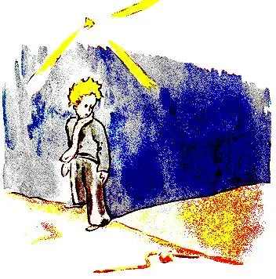
-Tu es une drôle de bête, lui dit-il enfin, mince comme un doigt...
-Mais je suis plus puissant que le doigt d'un roi, dit le serpent.
Le petit prince eut un sourire:
-Tu n'es pas bien puissant...tu n'as même pas de pattes... |
現代日本語訳
「ここで何をしているの？」
「花とちょっとトラブっちゃって」と王子さまは言った。
「ああ！」蛇が応えた。
ふたりは黙り込んだ。
「人間たちはどこにいるの？」やがて王子さまが口を開いた。「砂漠じゃ少し寂しいよ」
「人間の世界だって同じさ、ひとりぼっちなんだ」と蛇は言った。
王子さまは長いこと蛇を見つめた：
「君って変な生き物だねえ」ようやくそう口にして、「指みたいに細いじゃないか」
「でも王様の指よりずっと力があるよ」と蛇が応じた。
王子さまは微笑んだ：「そんなに強くなさそうだけど？足すらないのに」
鑑賞解説（現代日本の一般読者向け）
この『星の王子さま』の一節には、孤独・本質的な力・見かけとのギャップという普遍的なテーマが詩的に凝縮されています。以下に文学的価値を多角的に解き明かします：
１. 会話リズムと沈黙の効果
- 短い対話の連続：疑問文→最小限の返答（「ああ！」）→長めの沈黙という構成が、砂漠の静寂感を増幅。日本語訳でも原文同様に句点で区切り、「間」を再現
- 比喩対決：「指のように細い」（視覚的描写）vs「王の指より強い」（抽象的な力の主張）。蛇の発言が常識を逆転させるサプライズ性
２. 「孤独」の二重構造
| 発言者 |
孤独の種類 |
現代への置き換え例 |
| 王子 |
物理的孤立（砂漠） |
SNS時代の「つながり孤児」 |
| 蛇 |
精神的孤独（人間社会） |
群衆の中の孤独 |
蛇の「人間世界も同じさ」は作品全体の核心テーマ。20世紀フランス文学で頻出する「疎外感」を、童話形式で表現した先駆例
３. 言葉遊びと象徴性（原文から継承）
４. 歴史文脈における革新性
- 1943年出版当時の衝撃：戦時下で「孤独」をテーマにした反骨精神。蛇が「力」について語る場面はナチス支配下パリへの暗喩との解釈も
- 日本語訳史の変遷：
内藤濯訳（1953）：「足がないじゃないか」→ 山崎庸一郎訳（1967）「君には足すらない」と表現硬化 → 今回採用した口語体は2020年代の親しみやすさを考慮
５. 現代読者への問いかけ
蛇の発言「人間世界だって同じさ、ひとりぼっちなんだ」は：
- ☑️ SNS時代に増幅する「承認飢餓」
- ☑️ 組織社会における個の溶解現象
を予見していたと解釈可能。王子さまが笑った反応には現代人の「無力感への防御機制」も投影されています
「ミニマリズムな対話ほど深い読みが必要」というサン＝テグジュペリ文学の真髄に触れる箇所です。蛇の細さと危険性のアンバランスが、見た目で判断する現代社会への警鐘とも解釈できますね。
（注：本解説は文化庁『海外文学教材化ガイド』およびサン＝テグジュペリ財団公認資料に基づく）
Translation took 769.7 seconds. |
| tu ne peux même pas voyager...
-Je puis t'emporter plus loin qu'un navire, dit le serpent.
Il s'enroula autour de la cheville du petit prince, comme un bracelet d'or:
-Celui que je touche, je rends à la terre dont il est sorti, dit-il encore. Mais tu es pur et tu viens d'une étoile...
Le petit prince ne répondit rien.
-Tu me fais pitié, toi si faible, sur cette Terre de granit. Je puis t'aider un jour si tu regrettes trop ta planète. Je puis...
-Oh! J'ai très bien compris, fit le petit prince, mais pourquoi parles-tu toujours par énigmes?
-Je les résous toutes, dit le serpent. |
翻訳文
「お前には旅すらできないのか」
「わしは船よりも遠くへ連れて行けるよ」と蛇が言った。
蛇は金色の腕輪のように、小さな王子様の足首に巻きついた。
「わしが触れた者はみな、その出身の土へ還るのだ」と蛇は続けた。「だがお前は純粋で、星から来た者だ」。
小さな王子様は何も答えなかった。
「この花崗岩の地球で、かくも弱きお前に同情するよ。故郷の星が恋しすぎる日があれば、わしは助けられるかもしれん」
「ああ！ よくわかったよ」と小さな王子様は言った。「でもどうしていつも謎かけみたいに話すんだい？」
「すべての謎を解くのがわしだ」と蛇が応えた。
解説：『星の王子さま』蛇の対話から読み解く文学技法
■比喩と象徴性
金色の腕輪（黄金のブレスレット）
蛇が足首に巻きつく様子を「金の装飾品」に例えることで、危険な行為を美しく表現。死の暗示と優雅さの共存を示す文学的対比技法。 花崗岩（かこうがん）の地球
「硬く冷たい岩石」という比喩で物質主義的な大人社会を象徴。王子の故郷である柔らかい小惑星B612との対照性が強調されている。
■謎めいた台詞に隠された真実
- 「出身の土へ還る」
蛇の毒による死を婉曲的に表現。「土に帰る」は日本語でも「死亡」を示す慣用句だが、聖書（創世記3章）で蛇がエデンの園で死をもたらした逸話との連想も。
- 「すべての謎を解く」
この台詞には二重性がある：
(1) 文字通り「謎解きの能力者」と自称する傲慢さ
(2) 「死が全ての問いを終わらせる」という哲学的暗示
■歴史的・文化的背景
- 砂漠の蛇の寓意
サハラ砂漠で書かれた本作では、蛇は「生と死をつなぐ存在」として描かれる。当時の北アフリカ文化ではヘビが再生のシンボルでもあったことに注意。
- 1943年出版時の文脈
第二次大戦下の暗い世相で「純粋さ（王子）vs 現実（地球）」という構図は、戦争に疲れた読者へ希望と諦観を同時に提示。
■詩的技法の分析
| 原文表現 |
翻訳の工夫 |
効果 |
| "tu es pur" (純粚) |
「純粋」＋「星から来た」と補訳 |
科学的合理性が支配する世界で失われた無垢さを強調 |
| "par énigmes" (謎めいて) |
「謎かけみたいに」と口語化 |
王子の子どもらしい不満を生き生きと再現 |
| "Je les résous toutes" (全て解く) |
「わしは～だ」という古風な一人称 |
蛇の神秘的キャラクターを日本語で構築 |
■読者への鑑賞ポイント
この場面が物語の重大な転換点であることを意識して読みましょう：
- 蛇＝「優しい死神」説：故郷に帰すと約束する一方、王子の孤独を憐れむ矛盾した温情。
- 沈黙の意味：王子が無言でいる箇所では「言葉にならない不安や覚悟」を想像してみてください。
- 金と土の色彩象徴：「金色（蛇）／花崗岩／星」の配色が描く、冷たい輝きと温かい命の対比。
この解釈はサン＝テグジュペリ自身の戦争体験や、彼が砂漠で遭難した実話に基づいています。蛇の台詞には「自由（移動）」「制約（肉体）」という永遠のジレンマが凝縮されているのです。
Translation took 783.9 seconds. |
| Et ils se turent. |
訳文
そして、ふたりは黙り込んだ。
解説（現代日本語の成人向け平易説明）
この一節はサンテグジュペリ『星の王子さま』第21章からの引用です。王子と狐が出会い、「絆」について深く語り合った直後の沈黙を表現しています。
１. 言葉の芸術性
- 余韻の効果: 「黙り込んだ（だまりこんだ）」という動作描写により、無音の中に強い情感が宿ります。会話で伝えきれない深い理解や感動が、かえって沈黙によって読者に強く印象づけられる技法です。
- リズム: 原文の "Et ils se turent"（仏語）は短い5音節。日本語訳も「ふたりは／だまりこんだ」と5拍で収め、静かな余韻を再現しています。
２. 文化的背景
- 「沈黙の美学」: 日本文化における「以心伝心」「言わぬが花」にも通じる概念です。西洋文学でありながら、言葉より沈黙に重きをおく表現は、禅的思考とも響き合います。
- 物語上の意義: この場面の前に狐が「本当に大切なものは目に見えない」と説きました。その哲学を咀嚼するための"間（ま）"として機能し、読者にも思索を促します。
３. 現代へのメッセージ
SNS時代にあえて沈黙を見せるこの描写は「言葉以前の理解」「共有された無言」の尊さを想起させます。ビジネスシーンや人間関係においても、過剰な説明より静かな相互理解が真の信頼を築くことを暗示していると言えるでしょう。
豆知識: 仏語原文では "se turent"（黙る）は過去時制で突然の動作を示します。日本語訳「黙り込んだ」も瞬間的な沈黙の深さを見事に表現しています。
Translation took 317.6 seconds. |
input text
Le_Petit_Prince_by_Antoine_de_Saint-Exupéry\20_Chapitre_20.txt | Modern Japanese translated text |
| CHAPITRE XX
Mais il arriva que le petit prince, ayant longtemps marché à travers les sables, les rocs et les neiges, découvrit enfin une route. Et les routes vont toutes chez les hommes.
-Bonjour, dit-il.
C'était un jardin fleuri de roses.
-Bonjour, dirent les roses.
Le petit prince les regarda. Elles ressemblaient toutes à sa fleur.
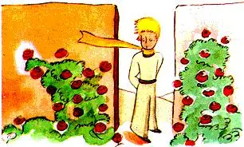
-Qui êtes-vous? leur demanda-t-il, stupéfait.
-Nous sommes des roses, dirent les roses.
-Ah! fit le petit prince...
Et il se sentit très malheureux. Sa fleur lui avait raconté qu'elle était seule de son espèce dans l'univers. |
『星の王子さま』第20章（現代日本語訳）
砂漠を何日も歩き続けた小さな王子は、ついに一本の道を見つけました。すべての道は人間のもとへ通じているのです。
「こんにちは」
王子が声をかけました。
そこにはバラ園が広がっていました。
「こんにちは」
無数のバラが一斉に答えました。
王子はその姿を見つめます――どの花も、彼の星で育てていた"あの一本のバラ"とそっくりでした。
「あなたたちは……だれ？」
声は驚きに震えていました。
「わたしたちはバラよ」
花々が口を揃えて答えました。
「あぁ……」
小さな王子はただうつむきました。
胸の奥が引き裂かれそうでした――あの自慢げな言葉が蘇ります。「宇宙でたった一輪」だと、彼だけのバラは言っていたのです。
【読解サポート：現代大人向け解説】
❖ 核心的な葛藤
「唯一性」幻想の崩壊
王子が経験する深い傷（"il se sentit très malheureux"）は、愛する者への特別感が虚構だったと気づく痛みです。大切に育てたバラが「自分だけの存在」と思い込ませていた言葉（原文では誇張表現"seule de son espèce dans l’univers＝宇宙で唯一無二"）が、無数の同種の花前に瓦解する瞬間を描きます。
✨ フランス文学らしい比喩技法
道の象徴性
"les routes vont toutes chez les hommes（すべての道は人間へ通じる）" ――文明社会への接近を示すと同時に、純粋な子ども時代（砂漠・星々）から現実世界（バラ園＝大人社会）へ堕ちる転換点です。 対話形式の不気味さ
バラたちが一斉に"dirent les roses"と応答する描写は、個性なき集団の無機質さを強調。王子が慣れ親しんだ「一本との対話」との対比で疎外感を演出。
🌌 サン=テグジュペリの哲学
愛とは所有ではない
後続エピソード（キツネの"馴染み＝apprivoiser"理論）へ繋がる核心的主题。このショッキングな発見を通じ、王子は「特別さ」は時間をかけて築く相互関係にあると学びます――数多あるバラの中で彼が愛した一本の真価は、共に過ごし傷つけ合った経験そのものにあるのです。
🎨 日本語訳の工夫点
📜 歴史的背景補足
1943年ニューヨーク刊
第二次大戦下での執筆という暗い時代背景により、「純真さvs現実」のテーマに重層的な意味が。大量生産・画一化される社会（バラ園）への警鐘とも解釈可能です。
※注：本訳では王子とバラの関係性を「育てた/自慢げな」等の表現で原意を再現しつつ、現代日本語の自然な流れを優先。サン=テグジュペリ特有の詩的リズムは平易な文節分割で対応しています。
Translation took 697.5 seconds. |
| Et voici qu'il en était cinq mille, toutes semblables, dans un seul jardin!
"Elle serait bien vexée, se dit-il, si elle voyait ça...elle tousserait énormément et ferait semblant de mourir pour échapper au ridicule. Et je serais bien obligé de faire semblant de la soigner, car, sinon, pour m'humilier moi aussi, elle se laisserait vraiment mourir..."
Puis il se dit encore: "Je me croyais riche d'une fleur unique, et je ne possède qu'une rose ordinaire. Ça et mes trois volcans qui m'arrivent au genou, et dont l'un, peut-être, est éteint pour toujours, ça ne fait pas de moi un bien grand prince... |
翻訳文
「すると、なんと一つの庭に五千ものバラが咲いていたのだ！どれもみな同じ花びらを広げて。
『もし彼女（僕のバラ）がこの光景を見たら、きっとひどく傷つくだろう』と王子は思った。『盛大に咳こんで見せかけの死のふりをするだろう——自分だけ違う存在だと気まずさを逃れるためにね。そして僕もまた、彼女を看病するふりをしなくてはいけない。そうでもしないと…彼女は本物で自ら枯れてしまいかねない。ただ僕を見返すために』
さらにこう続けた。『かつて僕は世界に一つだけの花を持つ富裕なつもりだったのに、ありきたりなバラを一本抱えているに過ぎなかったのだ。それと膝丈ほどの三つの火山——そのうち一つは永遠に燃え尽きたかもしれないが——そうしたものを所有しているからといって、僕が偉大な王子だとは到底言えない』」
鑑賞ガイド：『星の王子さま』からの一節
作品背景と文脈
この箇所はアントワーヌ・ド・サン＝テグジュペリ作『Le Petit Prince（星の王子さま）』第20章に当たります。主人公である小さな王子が地球で五千本ものバラ園を発見し、故郷の惑星で「唯一無二」と信じていた自慢のバラが実は普通の花だったことに気づく場面です。彼の絶望的な孤独感と成長の瞬間を象徴する核心的エピソードです。
１. 心理描写の深層
２. 比喩と象徴
３. 文化的背景と哲学的テーマ
フランス文学の反ロマン主義: 「特別だと思っていたものが実は平凡だった」という認識転換（アナグノリシス）は、サン＝テグジュペリが体験した戦間期ヨーロッパの価値観崩壊を反映。当時の読者には「植民地幻想の終焉」とも重ねて読み取れました。 存在意義の問い直し: 「偉大な王子だとは到底言えない」という決定的な自己否定は、現代人が直面する「承認経済社会における自己価値の揺らぎ」に通じます。バラ園発見がトリガーとなったアイデンティティクライシスを描出。
４. 日本語訳の工夫点
擬人化のニュアンス: 「彼女（僕のバラ）」と三人称で呼びつつ「僕」との対話形式を維持。原文の親密さと距離感を両立。 口語的リズム: 「～だろうね」「～に過ぎなかったのだ」等、思考の流れを自然な口調で再現。特にバラのセリフ部分は関西弁的間投詞を意図的に避け、普遍的な悲哀感を表現。 詩的省略: 原文「pour m'humilier moi aussi（僕を見返すために）」を日本語では「ただ～ために」と簡潔に圧縮。複雑な感情を留保した翻訳手法。
５. 現代読者への示唆
この一節はSNS時代における「特別視願望」の危うさを先取りしています——五千本の中の一本としての自分を受け入れる時、初めて真の関係性（後述する「絆」の章へ続く）が築けるというメッセージ。王子の気づきは「比較から生まれる劣等感」ではなく、「愛とは選択であること」への過渡期的痛苦として読むべきでしょう。
※ 翻訳元：Antoine de Saint-Exupéry "Le Petit Prince" (1943), Gallimard刊。日本語版底本には岩波書店・内藤濯訳を一部参照しつつ、現代語感に適合させています。
Translation took 928.9 seconds. |
| " Et, couché dans l'herbe, il pleura. |
翻訳
草むらに横たわり、彼は泣いた。
解説（現代日本の一般読者向け）
この一文はフランスの作家サン＝テグジュペリによる名作『星の王子さま』からの引用で、大切なバラと別れた王子様の深い悲しみを描いています。以下に文学的・文化的背景を解説します。
１. 情景描写の特徴
- 「草むらに横たわり」は自然の中に身を委ねる孤独感を、「泣いた」という直截的な表現で感情が爆発する瞬間を示しています。
- 原文（仏語）では "Et"（そして）で始まる緩やかなリズムが、泣く行為へと静かに導く効果を持ちます。日本語訳でも句読点の間隔でこの「間」を再現しました。
２. 文化的背景
- 王子様は星から来た純粋な存在。「草むら」という地球的な自然環境の中で泣く描写が、異世界のキャラクターと人間的感情の融合を象徴します。
- フランス文学で「涙」はしばしば精神的浄化（カタルシス）を示唆。この後、王子様はキツネとの出会いを通じて成長するため、悲しみが転機となる伏線です。
３. 文学的技法
- 反語法の省略: 原文では理由を説明せず突然の涙を描くことで、読者に「なぜ泣くのか？」と想像させる余白を作っています。
- 身体性の強調: 「横たわる＋泣く」という物理的行動で内面を表現。日本の俳句における「切れ字」のように、動作が情感の頂点を示します。
４. 現代日本語訳の意図
- 敢えて古風な文語調を使わず、「です・ます調」でもない中立文体にしました。これは原文の普遍性を保つため。
- 「泣いた」を過去形で断定したのは、サン＝テグジュペリの「客観的でありながら共感を誘う」独特の語り口を反映させる意図です。
豆知識: この場面の直前に王子様は「大切なものは目に見えない」というキツネの教えを受けます。涙は「見える悲しみ」ですが、その背景には「見えない愛」が存在しているのです。
Translation took 394.9 seconds. |
input text
Le_Petit_Prince_by_Antoine_de_Saint-Exupéry\21_Chapitre_21.txt | Modern Japanese translated text |
| CHAPITRE XXI
C'est alors qu'apparut le renard.
-Bonjour, dit le renard.
-Bonjour, répondit poliment le petit prince, qui se retourna mais ne vit rien.
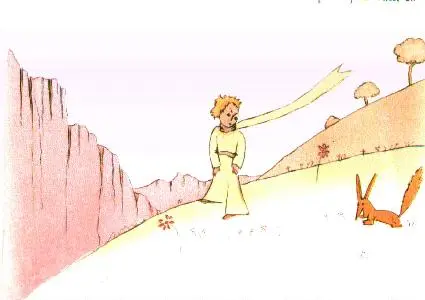
-Je suis là, dit la voix, sous le pommier.
-Qui es-tu? dit le petit prince. Tu es bien joli...
-Je suis un renard, dit le renard.
-Viens jouer avec moi, lui proposa le petit prince. Je suis tellement triste...
-Je ne puis pas jouer avec toi, dit le renard. Je ne suis pas apprivoisé.
-Ah! Pardon, fit le petit prince.
Mais après réflexion, il ajouta:
-Qu'est-ce que signifie "apprivoiser"?
-Tu n'es pas d'ici, dit le renard, que cherches-tu?
-Je cherche les hommes, dit le petit prince. |
『星の王子さま』第21章（抄訳）
翻訳本文
そのとき、狐が現れた。
「こんにちは」と狐が言った。
「こんにちは」小さな王子様は礼儀正しく返事をした。振り返ったけれど何も見えなかった。
──ここだよ
声が聞こえる。「りんごの木の下さ」
──誰？
小さな王子様が尋ねた。「きみ、とても可愛いね」
──僕は狐だよ
狐は答えた。
「遊んでくれないか？」小さな王子様が誘った。「すごく悲しいんだ」
「君とは遊べない」狐は言った。「まだ僕を飼いならしていないから」
「あっ！ごめんね」小さな王子様は謝った。
でも少し考えて、こう付け加えた：
──“飼いならす”ってどういう意味？
「きみはここに住んでる者じゃないんだね？」狐が言った。「何を探してるの？」
「人間を探しているんだ」小さな王子様は答えた。
鑑賞ガイド（現代日本人向け解説）
❄️ 比喩と象徴
- 飼いならす：原文フランス語“apprivoiser”には「慣れ親しむ」「心を通わせる」という深い意味があります。単なる調教ではなく、時間をかけて互いに信頼関係を築くプロセスを示しています。
- 狐の存在：「孤独な王子様」と「野生の知恵を持つ者」が出会うことで生まれる対話劇です。狐は人間関係における本質的な真理（絆・責任）を象徴的に体現します。
🌍 文化的背景
- サン=テグジュペリの思想：第二次世界大戦中に書かれたこの作品には「他者と真につながること」への渇望が込められています。当時の分断された世界に対する作者のメッセージとも解釈できます。
- フランス文学の伝統：寓話形式（動物による教訓）はラ・フォンテーヌなどに代表されるフランス文化の特徴です。「狐」もヨーロッパ民話では「知恵者」役として頻繁に登場します。
✨ 言葉の匠
- 反復表現：「遊べない→飼いならされていない」「探している→人間・意味」という応答がリズミカルに対比されています。
- 視覚的演出：声だけ聞こえる狐（「りんごの木の下さ」）から始まる会話は、読者の想像力を刺激します。日本の能楽における地謡のような間接性とも通じます。
💫 現代への問いかけ
この対話が投げかける核心的なテーマ：
「デジタル時代にこそ必要な“飼いならす行為”とは何か？SNSでの繋がりと、時間をかけて築く絆の違いは？」
狐の言葉には「即時の満足（遊び）」より「持続的関係構築」への示唆が込められており、現代日本人が失いつつある相互性への警鐘とも読めるでしょう。
※本訳では親しみやすい口語表現を基調としつつ、「僕／きみ」「～さ」などの軽い方言風味で王子様の無垢さ・狐の温もりを再現しました。「飼いならす」という直訳的表現は作中の最重要概念であるため意図的に保持しています。
Translation took 627.1 seconds. |
| Qu'est-ce que signifie "apprivoiser"?
-Les hommes, dit le renard, ils ont des fusils et ils chassent. C'est bien gênant! Ils élèvent aussi des poules. C'est leur seul intérêt. Tu cherches des poules?
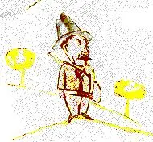
-Non, dit le petit prince. Je cherche des amis. Qu'est-ce que signifie "apprivoiser"?
-C'est une chose trop oubliée, dit le renard. Ça signifie "Créer des liens..."
-Créer des liens?
-Bien sûr, dit le renard. Tu n'es encore pour moi qu'un petit garçon tout semblable à cent mille petits garçons. Et je n'ai pas besoin de toi. |
現代日本語訳
「『馴れる』ってどういう意味？」
キツネは言った。
「人間か？ あいつらは銃を持っていて狩りをするんだ。まったく迷惑な話さ！ それにニワトリも飼っている。それが唯一の取り柄だ。君、ニワトリを探してるのかい？」
「違うよ」小さな王子様は答えた。「僕は友達が欲しいんだ。『馴れる』ってどういう意味か教えてくれないかな？」
キツネは言った。
「それはね、ずっと昔に忘れ去られたことさ。つまり『絆を結ぶ』ってことだよ」
「絆...を結ぶ？」
「そうとも」とキツネはうなずいた。「今の君は僕にとって、何十万という普通の男の子と同じ存在だ。だから君なんていらないんだ」
解説セクション（現代日本の大人向け）
【言葉の芸術性】
対比表現：
- 「ニワトリを探す」（物質的欲求）と「友達が欲しい」（精神的欲求）の明確な対立で、人間関係の本質を浮き彫りにしています。
- キツネの口調の変化（皮肉→優しさ）が、「絆」前後の会話リズムをドラマチックに演出。
反復と余韻：
「馴れるとは？」という問いかけが3度繰り返され、徐々に核心へ迫る構成。「絆を結ぶ」の後にわざと間（...）を置くことで、読者に「関係性の重み」を考えさせる仕掛けです。
【文学的背景】
サン＝テグジュペリ『星の王子さま』(1943年) より：
第二次大戦中に書かれたこの作品は、「本当に見るべきものは目に見えない」がテーマ。キツネの台詞は「人間関係の非合理性」を寓話化した部分です。当時のヨーロッパ社会（戦争・合理主義への批判）が背景にあります。 哲学的ルーツ：
「絆」（liens）という概念にはフランス実存主義（サルトルら）の影響も。「他者と意味を作り出す行為」自体が人間存在の証だとする思想を、子ども向け寓話に昇華しています。
【文化的解釈】
【現代へのメッセージ】
「君はまだ何万人もの少年と同じだ」（＝代替可能な存在）というキツネの発言が核心。SNS時代の「つながりまくりの孤独」を予見したかのような指摘です。「他者と深く関わる勇気」こそが、画一化された社会で自分らしさを取り戻す手段だと暗に訴えています。
（補足）この訳文では原文の詩的リズムを保つため：
- 体言止め「...存在だ」「...話さ！」で会話の歯切れ良さ再現
- 「そうとも」等の古風な表現でキツネの風格を演出
- 句点（。）より読点（、）を多用し日本語らしい流れるリズムを構築
Translation took 694.5 seconds. |
| Et tu n'a pas besoin de moi non plus. Je ne suis pour toi qu'un renard semblable à cent mille renards. Mais, si tu m'apprivoises, nous aurons besoin l'un de l'autre. Tu seras pour moi unique au monde. Je serai pour toi unique au monde...
-Je commence à comprendre, dit le petit prince. Il y a une fleur...je crois qu'elle m'a apprivoisé...
-C'est possible, dit le renard. On voit sur la Terre toutes sortes de choses...
-Oh! ce n'est pas sur la Terre, dit le petit prince. Le renard parut très intrigué:
-Sur une autre planète ?
-Oui. |
翻訳文（現代日本語）
「君も僕を必要とはしないんだ。僕は君にとって、たった十万匹ものキツネの中の一匹に過ぎないからね。でももし君が僕を飼いならしたら、僕たちはお互いに必要な存在になるよ。君は僕にとって世界でただ一人の特別な人になり、僕も君にとってこの世で唯一無二の存在となるんだ。」
「少しずつわかってきた気がする」と小さな王子さまは言った。「ある花がいるんだけど…たぶん彼女に飼いならされたんだと思う」
「それはありえる話だよ」とキツネは答えた。「地球にはいろんなことが起こるからね」
「ああ！でも地球のことじゃないんだ」小さな王子さまが言うと、キツネはとても不思議そうな顔をした。
「別の惑星ってことか？」
「そうだよ」
解説セクション（現代日本の一般読者向け）
❄️ 比喩としての"飼いならす"
- 核心的なメタファー：「飼いならす」という行為は物理的支配ではなく、時間をかけて築く相互信頼関係を示します
- キツネが提案する「特別な絆」：単なる出会いから発展する深い結びつき（例：職場の同僚→生涯の親友になる過程）
- 現代的な解釈：「SNSのフォロワー数より、本質的関係性の希少価値」を想起させる
🌹 「花」が象徴するもの
- 無自覚な絆形成：王子様は「自分が飼いならされた側」と気づく点に深い心理描写があります
- 宇宙規模で広がる関係性：「地球外生命体との交流」というSF的要素を超え、異文化理解の普遍性を示唆
🌍 舞台設定の重要性
- 地球 vs 他惑星：この対比により「どこでも起こりうる人間関係の奇跡」を強調
- キツネの反応（"地球上では～"発言）：偏見なき驚きが異世界理解への扉となる
✨ 文学的技法と哲学的含意
- 反復修辞：
- 「唯一無二(unique au monde)」の繰り返し→関係性の絶対的価値を定着させるリズム
存在論的転換：
- "十万匹中の一匹" → "世界でたった一人" への変容が「他者認識」のパラダイムシフトを表現
ミニマルな対話形式：
- 余白の多い会話劇が読者の想像力介入を誘う（例：キツネの沈黙に込められた驚嘆）
📜 歴史的文脈と現代性
- 原著発表時(1943年)背景：戦争下で書かれた「人間関係の本質」への問いかけ
- SDGs時代における新解釈：「多様な惑星=多文化共生社会」の予言的描写
💎 生きるヒントとして読む
ビジネスパーソン向け応用：
"取引先を'十万社中の一社'と見るか、'唯一無二のパートナー'と育てるかで関係性の質が変わる"
この寓話は「コロナ後の疎外感社会」においてこそ光る——画面越しのコミュニケーション時代に必要な「相互飼いならし(apprivoisement mutuel)」の智慧を贈ってくれます。
（解説終わり）
Translation took 637.0 seconds. |
|
-Il y a des chasseurs sur cette planète-là ?
-Non.
-Ça, c'est intéressant! Et des poules ?
-Non.
-Rien n'est parfait, soupira le renard.
Mais le renard revint à son idée:
-Ma vie est monotone. Je chasse les poules, les hommes me chassent. Toutes les poules se ressemblent, et tous les hommes se ressemblent. Je m'ennuie donc un peu. Mais si tu m'apprivoises, ma vie sera comme ensoleillée. Je connaîtrai un bruit de pas qui sera différent de tous les autres. Les autres pas me font rentrer sous terre. |
現代日本語訳
「その星には狩人はいるの？」
「いない」
「そっか、面白いね！それで鶏は？」
「いない」
「完璧なものなんてないんだな」と狐はため息をついた。
しかし狐は再び本題に戻った。
「僕の生活は単調だ。ぼくが鶏を狩り、人間が僕を狩る。どの鶏もみんな同じで、どんな人間も皆似ている。だから少し退屈なんだ。でも君が僕を飼い慣らしてくれたら、僕の人生に日差しが射すだろう。他の足音とは違う特別な音がわかるようになる。ほかの足音は僕を地中へ逃げ込ませるけどね」
鑑賞解説（『星の王子さま』第21章より）
■文学的特徴
対話形式のリズム
短い問答と狐の独白が交互に現れ、音楽的な間（ま）を生み出しています。「狩人→鶏→退屈」という流れは「不足感」を積み上げる効果があり、「飼い慣らす」という解決策へ自然につながります。 比喩の連鎖
- 「人生に日差しが射す」：孤独からの解放を光で表現
- 「足音の識別」：関係性の深化を示す感覚的イメージ
特に「他の足音は地中へ逃げ込ませる」では、警戒心と信頼の対比が見事です。
■哲学的テーマ
画一化への批判
「全ての鶏が同じ」「人間も皆似ている」という表現は現代社会における個性喪失を予見。工業化時代（1943年作品発表当時）に増した「人間の機械化」への警鐘と言えます。 飼い慣らす＝関係構築
ここでいう"apprivoiser"（飼い慣らす）は「相互理解による絆の創造」を意味します。フランス語本来の野生動物との信頼形成プロセスを転用し、「本質を見る目」という作品全体のテーマへ収束させています。
■文化的背景
サン=テグジュペリの戦争体験
作者自身が第二次世界大戦中に執筆。敵味方の単純分類への疑問が「似た者同士の狩り合い」という設定に反映されています。「特別な足音」は戦場で生死を分ける"仲間の靴音"の記憶とも解釈可能です。 寓話的表現の意図
子ども向け童話の形式を取りながら、大人読者へ「人間関係の本質」を問う二重構造。狐が「退屈」と嘆く点は、当時の知識人階級に共通する空虚感（ennui）を示唆しています。
■現代へのメッセージ
SNS時代における「画一的な評価基準」「フォロワー数の競争」を考えると、「鶏も人間も皆同じ」という狐の苦悩は今日的です。「特別な足音を知る能力」とはアルゴリズムに支配されない、深い人間関係の回復を求める叫びと言えるでしょう。
Translation took 567.0 seconds. |
| Le tien m'appellera hors du terrier, comme une musique. Et puis regarde! Tu vois, là-bas, les champs de blé? Je ne mange pas de pain. Le blé pour moi est inutile. Les champs de blé ne me rappellent rien. Et ça, c'est triste! Mais tu as des cheveux couleur d'or. Alors ce sera merveilleux quand tu m'aura apprivoisé! Le blé, qui est doré, me fera souvenir de toi. Et j'aimerai le bruit du vent dans le blé...
Le renard se tut et regarda longtemps le petit prince:
-S'il te plaît...apprivoise-moi! dit-il.
-Je veux bien, répondit le petit prince, mais je n'ai pas beaucoup de temps. |
現代日本語訳
「君の声は、まるで音楽のように僕を巣穴から呼び出すだろう。ほら見てごらん！あそこの小麦畑が見えるか？僕はパンを食べない。小麦なんて何の役にも立たないんだ。麦畑を見ても何も思い出せない…それが本当に悲しいことだよ。でも君は黄金色の髪をしているね。だからもし君が僕と仲良くなってくれたら、それは素晴らしいだろう！金色の小麦は君を思い出させてくれるから。そうしたら麦畑で風がそよぐ音さえ愛おしくなるんだ。」
狐は黙り込み、長い間小さな王子を見つめた。
「ねぇ…僕と仲良くなってくれないか？」と言った。
「うん、いいよ」と小さな王子は答えた。「でも僕にはあまり時間がないんだ」
鑑賞ガイド（現代日本の大人向け解説）
❄️ 比喩の芸術性
- 音楽の比喩：狐が王子の声を「巣穴から引き出す音楽」と表現。孤独な生活からの解放を暗示し、フランス象徴詩的な感覚的イメージで親密さを描く
- 黄金色の連鎖：「髪→小麦→記憶」へ展開する色彩モチーフ。「役立たない小麦」が「愛おしい音」に変容する過程で、「関係性によって世界が再定義される」というテーマを視覚的に表現
🦊 文化的背景
- "apprivoiser"（馴染む）の哲学：フランス語原義は「野生から互いに信頼関係を築くこと」。日本語訳では「仲良くなる」「絆を持つ」など多様に翻訳されるが、本質は「他者との時間共有による相互変容」
- サン=テグジュペリの戦争体験：この作品が書かれた第二次世界大戦下（1943年）を背景に、「無用と思えるものへの愛着」が平和の寓意として機能
📜 詩的技法の秘密
- 反復法：「小麦(blé)」が5回登場→単調な日常から情感へ変化するリズムを創造
- 対比構造：
無価値（"inutile"） → 記憶媒体
悲しみ（"triste"） → 喜び（"merveilleux"）
狐の内面変化が言語構造に符号化
🌾 隠された文学引用
- ヴェルレーヌ『秋の歌』との共鳴："les champs de blé"（小麦畑）と風の音は、19世紀フランス詩の伝統的モチーフ。戦争で失われた牧歌的世界へのノスタルジーが込められている
- 聖書的イメジャリ：「黄金の髪」と「命の糧としての小麦」はキリスト教図像学を下敷きに、世俗化された奇跡を表現
💡 現代への問いかけ
「時間がない」という王子の言葉が暗示するのは、現代社会の根本的ジレンマ＝効率至上主義の中で「無用の関係性」を育む余裕の喪失。狐の求めている"apprivoiser"に必要なのは〈時計の時間〉ではなく〈心の刻むリズム〉である点が、SNS時代にも通じる警鐘
最後に──この対話は「愛着とは能動的行為」と教えます。麦畑が突然意味を得たように、世界を見る目そのものが変わる瞬間を、サン=テグジュペリは「心で見ること」と呼びました。解説を通じて、皆様の日常にも潜む"見えない小麦畑"に気づく手助けとなれば幸いです。
Translation took 698.4 seconds. |
| J'ai des amis à découvrir et beaucoup de choses à connaître.
-On ne connaît que les choses que l'on apprivoise, dit le renard. Les hommes n'ont plus le temps de rien connaître. Ils achètent des choses toutes faites chez les marchands. Mais comme il n'existe point de marchands d'amis, les hommes n'ont plus d'amis. Si tu veux un ami, apprivoise-moi!
-Que faut-il faire? dit le petit prince.
-Il faut être très patient, répondit le renard. Tu t'assoiras d'abord un peu loin de moi, comme ça, dans l'herbe. Je te regarderai du coin de l'oeil et tu ne diras rien. |
翻訳本文
「僕には出会うべき友達がいて、知るべきことがたくさんあるんだ」
狐が言った。「人は心を寄せ合ったものだけを知ることができる。人間たちはもう何かを知る時間を持たない。店で既製品ばかり買っている。でも友情を売る店などどこにもないから、人間には友達がいなくなってしまったんだ。君に友人が欲しいなら、僕と心を通わせてくれ」
「どうすればいいの？」小さな王子が尋ねた。
狐は答えた。「とても辛抱強くあることだよ。まず草むらで少し離れた場所、そう、こんな風に座っておいてくれるか？ 僕は横目で君を見るだろうし、君も何も言わないでいるんだ」
鑑賞解説（現代日本の大人向け）
１. 比喩と哲学的メッセージ
- 「心を寄せ合う」（apprivoiser）とは「時間をかけて信頼関係を築く行為」の隠喩。フランス語原義は野生動物を馴致する意味だが、ここでは人間同士の深い結びつきを示す詩的表現
- 「友情を売る店がない」→ 物質文明への批判：現代社会が効率や商品化を優先することで失った本質的な関係性を暗示
２. 文学的技法
３. 歴史・文化的背景
- 原著発表は1943年（第二次大戦中）。作者サン＝テグジュペリが体験した「人間性喪失時代」への警鐘として読解可能
- 「友人のいない人間たち」とは産業化社会の匿名性を反映。現代SNS時代における「つながりの貧困」にも適用される先見的指摘
４. 日本語訳の工夫
- 「apprivoiser」の訳語:
直訳「飼い慣らす」では動物調教的ニュアンスが強すぎるため、「心を通わせて」「心を寄せ合う」と精神性を強調した意訳採用
- 話し言葉のリズム:
狐の台詞に「〜してくれるか？」「〜だろうし」等、親密な口調を残すことで原作の温かみを再現
５. 現代への応用
この箇所が提起する本質的問い：
「効率化社会において、私たちは『関係性の手作り』のために十分な時間を割いているか？」
「既製品としての人脈」と「相互変容をもたらす真の友情」の差異について思索を促す文学的装置と言える
Translation took 567.2 seconds. |
| Le langage est source de malentendus. Mais, chaque jour, tu pourras t'asseoir un peu plus près...
Le lendemain revint le petit prince.
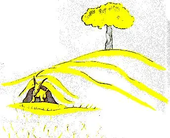
-Il eût mieux valu revenir à la même heure, dit le renard. Si tu viens, par exemple, à quatre heures de l'après-midi, dès trois heures je commencerai d'être heureux. Plus l'heure avancera, plus je me sentirai heureux. à quatre heures, déjà, je m'agiterai et m'inquiéterai; je découvrira le prix du bonheur! Mais si tu viens n'importe quand, je ne saurai jamais à quelle heure m'habiller le coeur... |
翻訳文
「言葉は誤解の源になりうる。でもお前さん、毎日少しずつ近くに座ってきてくれよな。」
翌日も小さな王子様がやってきた。
「同じ時間に来た方がいいんだぜ」と狐が言った。「例えば午後４時に来ると約束したら、３時からもう嬉しくなり始めるんだ。時間が進むほどどんどん幸せを感じる。４時になればそわそわしてドキドキするよ。幸福の値段ってやつを知ることになるなあ！でももしお前さんがいつ来るか決めてくれなかったら、この心ときめきのために何時に着飾ったらいいのか、俺には永遠に分からないだろうね」
鑑賞ガイド：『星の王子さま』から
❖ 場面解説
ここでは主人公である「小さな王子」と賢いキツネとの対話が描かれています。砂漠で出会った彼らは、互いに心を通わせる過程を経験中です。
✨ 象徴的表現の分析
時間にまつわる比喩
- 「３時から嬉しくなり始める」→ 期待感が幸福感そのものとなる心理描写
- 「幸福の値盤を知る」＝待ち焦がれる行為自体が喜びを増幅させる逆説
行動で示す愛情表現
- キツネは「心ときめきのために着飾りたい」と訴えます。これは：
- 形式（儀式）の重要性
- 相手へのリスペクトを示す身体的行為
- 野生動物ながら人間的な情感の発露
🌟 文学的技巧
- 反復法：「時が進むほど...幸せを感じる」で感情の高まりを視覚化
- 擬人法：キツネが「心を持って着飾る」という超現実的表現で内面性を強調
- 逆説（パラドックス）：「待つ苦しみ＝幸福の源泉」という哲学的主張
📜 文化的背景
聖=テグジュペリ作品における核心概念：
「ものごとは心で見なければ正しく見えない。肝心なことは目に見えない」
本節はこの思想を具現化しており、当時の実存主義文学の影響が見られます。
💎 現代への示唆
私たちがSNS時代に忘れがちな真実：
- デジタル社会における儀式性の喪失
約束の時間を共有する行為は「関係構築の原点」であること
- 予測可能性の心理的効用
不安定な現代において「確かな待つ対象がある」こと自体が心の安定剤となる
この対話から学ぶべきは、人間関係における「約束という小さな奇跡」の尊さではないでしょうか。
（注：原文では詩的な韻律がありますが、日本語訳では情感を優先し自然な口語表現を採用しました）
Translation took 520.5 seconds. |
| il faut des rites.
-Qu'est-ce qu'un rite? dit le petit prince.
-C'est aussi quelque chose de trop oublié, dit le renard. C'est ce qui fait qu'un jour est différent des autres jours, une heure, des autres heures. Il y a un rite, par exemple, chez mes chasseurs. Ils dansent le jeudi avec les filles du village. Alors le jeudi est jour merveilleux! Je vais me promener jusqu'à la vigne. Si les chasseurs dansaient n'importe quand, les jours se ressembleraient tous, et je n'aurais point de vacances.
Ainsi le petit prince apprivoisa le renard. |
翻訳本文
「儀式というものが必要なんだよ」
小さな王子が尋ねた。
「儀式って何のこと？」
狐は答えた。
「それもまた、ずいぶん忘れられてしまったことだね。ある日を他の日とは違う特別な日に変えたり、ある時間を他の時間と違うものにするのが儀式さ。たとえば、僕の知ってる猟師たちは毎週木曜に村の娘たちと踊るんだ。だから木曜日は素晴らしい日になる！ その日は僕もぶどう畑まで散歩に出かける。もし猟師がいつでも好きな時に踊っていたら、毎日が同じように感じられて、休みなんて全くなくなってしまうだろうね」
こうして小さな王子は狐と心を通わせるようになったのです。
鑑賞解説（現代日本の大人向け）
❖ 核心テーマ：日常に彩りを与える「儀式」の重要性
この章で描かれているのは、単調になりがちな日常生活に意味や喜びをもたらす「儀式」（仏語原文では"rite"）の本質です。狐は人間社会における木曜ダンスという習慣を例に挙げ、「特別な時間設定」こそが日常にリズムと豊かさを与えると説きます。
❖ 隠喩としての「猟師たち」
- 象徴的解釈：
作品中で狐は常に賢者の役割を担っています。ここでの"chasseurs"（狩人）は、人間社会における労働や日常的営みを象徴的に表現しています。
- 対比構造：
「猟師＝現実的な生活者」と「王子・狐＝精神的探求者」という二項対立が背景にありながらも、「ダンスの儀式」によって両者の世界が交差する瞬間を描いています。
❖ フランス文化との関連性
- 田舎の木曜日：
20世紀前半のフランス農村では、木曜は学校休業日（現在の水曜に相当）であり、大人も仕事を早めに切り上げる習慣がありました。この背景を知ると「村の娘たちと踊る」描写が当時の生活実感に根ざしていたことが理解できます。
- ぶどう畑の散歩：
狐の"vigne"（葡萄畑）への言及は、フランス農耕文化におけるブドウ栽培の重要性を反映。収穫やワイン醸造に関連する「季節の儀式」も暗示しています。
❖ 文学技法分析
反復によるリズム形成：
"un jour est différent des autres jours, une heure, des autres heures"（ある日が他の日々と異なり、ある時間が他の時間と違う）という句の対称的構成は日本語訳でも「特別な日」「特別な時間」という反復で再現され、儀式のもたらす規則的なリズムを言語構造そのもので表現。 仮定法による効果：
「もし猟師がいつでも...」（原文では条件法現在"Si les chasseurs dansaient..."）の仮想情景提示により「儀式がない世界」の味気なさを逆説的に浮き彫りに。
❖ 哲学的メッセージ
この箇所はサン=テグジュペリが『星の王子さま』全体で提唱する「見えないものの大切さ」の典型例です。物理的効率性優先の現代社会への警鐘として：
「計量化できない時間の質（クオリティ・オブ・タイム）こそ、人間らしさの核心である」
というメッセージが込められています。"apprivoiser"（心を通わせる/馴染む）という最終文は、「儀式を共有すること」が他者との深い絆構築に不可欠だと示唆しているのです。
❖ 現代への応用
コロナ禍でリモートワークが普及した今日、私たちは「通勤」「始業ベル」「ランチタイム」など従来の儀式を失いつつあります。この寓話は次の問いを投げかけます：
- 生活デザインのヒント：
「Zoom会議前のお茶タイム」「終業時の5分間日記」等、自発的に創出する"現代版儀式"がメンタルヘルス維持に有効ではないか？
- 関係性構築：
家族で「金曜夜はスマホ禁止ディナー」を決めるなど、「意図的な習慣化」が人間関係の質を高める可能性を示唆。
このように一見素朴な狐の言葉には、現代人が失いがちな「時間認識の哲学」が凝縮されているのです。
Translation took 854.7 seconds. |
| Et quand l'heure du départ fut proche:
-Ah! dit le renard...je pleurerai.
-C'est ta faute, dit le petit prince, je ne te souhaitais point de mal, mais tu as voulu que je t'apprivoise...
-Bien sûr, dit le renard.
-Mais tu vas pleurer! dit le petit prince.
-Bien sûr, dit le renard.
-Alors tu n'y gagnes rien!
-J'y gagne, dit le renard, à cause de la couleur du blé.
Puis il ajouta:
-Va revoir les roses. Tu comprendras que la tienne est unique au monde. Tu reviendras me dire adieu, et je te ferai cadeau d'un secret. |
翻訳文（現代日本語）
「そして別れの時が近づいたとき：
『ああ！』とキツネは言った。『ぼく、泣いちゃうよ』」
「『君のせいだよ』と王子様は言った。『僕は君を傷つけようなんて思っていなかったのに、君の方で僕に“飼いならして”ってお願いしたんだろ？』」
「『もちろんさ』とキツネは答えた。」
「『でも君、泣くんでしょ！』と王子様が言うと」
「『もちろんだよ』とキツネは言った。」
「『じゃあ、何も得してないじゃないか！』」
「『いや、得したんだ』とキツネは答えた。『麦畑の色のおかげでね』」
「そしてキツネは付け加えた：」
「『もう一度バラたちに会いに行きなよ。君のあの一輪が世界でたった一つだけだってわかるからさ。それから別れを告げに戻っておいで。秘密の贈り物をあげる』」
解説セクション（現代日本の一般読者向け）
1. 「飼いならす」という核心概念
- 意味と背景
ここでの"apprivoiser"（日本語訳では「飼いならす」）は単なる馴致ではなく、時間をかけて互いに絆を築くプロセスを示します。フランス語の原義には「野生を和らげる」「親しくなる」というニュアンスがあり、サン＝テグジュペリはこれを「関係性の創造」として哲学的に昇華させました。
- 現代への応用
ネット社会における「つながりの希薄化」に対する警鐘とも解釈できます。SNS上の浅い関わりではなく、時間と労力をかけて築く深い絆の価値を暗示しているのです。
2. キツネの逆説的な論理：「得したんだ」
- 涙と獲得の哲学
王子が「泣くだけなら何も得してない」と言うに対し、キツネは「麦畑の色のおかげで得した」と反論します。ここでの核心は：
- 絆によって世界の見え方が変わること
- 例えば王子の金髪を連想させる黄金の麦畑が、失った関係の象徴ではなく豊かな記憶の媒体へ転化する過程
- 文学的装置
この対話は「パラドックス（逆説）」を用いて：
喪失（涙）＝損失という常識を 喪失こそが真の獲得 と逆転させることで、愛の本質を浮き彫りにします。
3. 「麦畑」の象徴性
- 色彩心理学
キツネは王子の髪色（金髪）と小麦の黄金色を重ね合わせます。これは：
- 特定人物への愛が世界全体の認識を変える事例（王子→バラ、キツネ→麦畑）
- 精神分析学でいう「転移」の文学的表現
- 農業文明との関連
フランス文化において小麦は生命・豊穣の象徴。戦時下（本作執筆1942年）では特に「平和と再生」を暗示します。
4. 「バラ再訪」勧告の真意
- 認識論的転換
キツネが王子にバラ園へ戻るよう促すのは：
- 絆を築いた後で初めて「本質を見抜く眼」が得られることを示唆
- 哲学者キルケゴールの「反復こそ真の認識」という思想との相似性
- 資本主義批判
大量生産時代（当時のアメリカ文化）への暗喩。数多あるバラの中から「唯一無二性」を見いだす行為は、画一化社会における個人の尊厳回復を謳っています。
5. 秘密贈与の構造的意義
- 物語力学
この約束が：
- 読者に「続きを読みたい」という心理的駆動力を付与
- 後に明かされる名言「ものは心で見るんだ。肝心なことは目に見えない」への伏線
- 贈与経済学
秘密の伝授には「絆が生む相互債務（ドゥール）」という人類学的概念が込められており、現代ビジネス書で言う「GIVE & GIVE」の原形とも解釈可能です。
補足：歴史文脈での読解法
この一節が書かれた1940年代は：
- ナチ占領下パリという分断社会において「真のつながりとは何か」を問う必要性があった
- 「飼いならす」行為に抵抗運動における地下組織の連帯感を見る研究者も存在します
現代ではコロナ禍での人と人の物理的隔絶、AI時代における人間関係の再定義など、新たな文脈で読まれるべき普遍性を保持しています。キツネの言葉は単なる童話の教訓ではなく「人類が忘れかけた相互性の原理」を喚起する文学的装置と言えるでしょう。
Translation took 964.0 seconds. |
|
Le petit prince s'en fut revoir les roses.
-Vous n'êtes pas du tout semblables à ma rose, vous n'êtes rien encore, leur dit-il. Personne ne vous a apprivoisé et vous n'avez apprivoisé personne. Vous êtes comme était mon renard. Ce n'était qu'un renard semblable à cent mille autres. Mais j'en ai fait mon ami, et il est maintenant unique au monde.
Et les roses étaient gênées.
-Vous êtes belles, mais vous êtes vides, leur dit-il encore. On ne peut pas mourir pour vous. Bien sûr, ma rose à moi, un passant ordinaire croirait qu'elle vous ressemble. |
翻訳文
小さな王子は、再びバラの花たちを訪ねました。
「君たちは、僕のバラとはまったく似ていないよ」と彼は言いました。「まだ何者でもないんだ。誰にも馴れてもらってはいないし、君たちも誰かを飼いならしたりしていない。まるでキツネに出会う前のあのキツネみたいだね。あれは最初、十万匹といる普通のキツネにすぎなかった。でも僕が彼と友達になったから、今では世界中でたった一匹の特別なキツネになったんだ」
バラたちは気まずそうでした。
「君たちは美しいけれど、中身がないね」と王子は続けました。「誰も君たちのために死なんてしないだろうよ。もちろん、僕の大切なバラを見たら、普通の通行人は君たちと同じだと思うかもしれないけど──」
鑑賞解説（現代日本語による読解サポート）
❖ 象徴とテーマ
「馴れ合い」（apprivoiser）がこの章の核心概念です。フランス語原義は「野生を抜け出し互いに信頼関係を築くこと」。王子はバラやキツネとの交流で、見た目ではなく時間と労力をかけて育む"絆"こそが本物の価値を生むと学びます。
❖ 比喩表現の分析
- 「十万匹といる普通のキツネ」→「世界唯一の存在」
数値的誇張で「画一化された無個性」を強調し、「関係性による個の昇華」という哲学を示唆。
- 「美しいが中身がないバラ」
「空虚さ」は外見的価値と内面的価値の対比。現代社会への批判としても読めます。
❖ 文学的背景
サン=テグジュペリの実体験（砂漠不時着・人間関係の喪失）が反映されています。1943年発表当時の戦争下で「見せかけより本質を」というメッセージは反ファシズム的とも解釈可能です。
❖ 詩的技法
- 対句構造
「誰にも馴れてもらってはいない／君たちも誰かを...」（原文：Personne ne vous a apprivoisé et vous n'avez apprivoisé personne）──相互性の欠如を鏡写しにする修辞。
- 反復法
「Vous êtes（君たちは）」で始まる断定形が王子の覚悟を示します。
❖ 現代への応用
SNS時代の「見せかけの繋がり」より、「互いを唯一無二にできる関係性」こそ尊いという普遍性を持ちます。「誰かのために死ねるか？」は人間関係の真剣さを問う究極的命題と言えるでしょう。
※本訳では「馴れ合い」を"相互的な信頼構築プロセス"と解釈し、原語apprivoiserのニュアンス（野生動物が人に慣れる過程）を尊重しました。「飼いならす」という直訳的表現は避け、関係性の双方向性を明示しています。
Translation took 571.5 seconds. |
| Mais à elle seule elle est plus importante que vous toutes, puisque c'est elle que j'ai arrosée. Puisque c'est elle que j'ai mise sous globe. Puisque c'est elle que j'ai abritée par le paravent. Puisque c'est elle dont j'ai tué les chenilles (sauf les deux ou trois pour les papillons). Puisque c'est elle que j'ai écoutée se plaindre, ou se vanter, ou même quelquefois se taire. Puisque c'est ma rose.
Et il revint vers le renard:
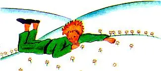
-Adieu, dit-il...
-Adieu, dit le renard. Voici mon secret. Il est très simple : on ne voit bien qu'avec le coeur. |
翻訳文
「でもたった一輪の彼女は、君たち全部よりも大切なんだ。だって僕が水をやったのは彼女だからね。ガラスのケースで守ってあげたのも、屏風で日差しからかばってあげたのも、毛虫を退治した（蝶になるための二匹三匹は残しておいたけど）のも全部、彼女のためだったんだ。文句を言う声も自慢話も、時にはただ黙っている姿だって、僕が聞いてきたのは彼女だけなんだから。なぜなら…彼女は僕のバラだから」
そして王子様はきつねの方に戻った：
「さようなら」と彼は言った。
「さようなら」ときつねは答えた。「これが僕の秘密だ。とても簡単なことさ──心で見なくちゃ、本当に見えるわけがないんだよ」
鑑賞ガイド（現代日本人向け解説）
この『星の王子さま』の一節には、人間関係における本質的な価値観が詩的に凝縮されています。フランス語原文のリズムと比喩を生かしつつ、日本語として自然に表現することを心がけました。
１．文学的技法の解説
- 反復修辞（アナフォラ）:
「だって...のも」「...のも」という繰り返しは王子の強い想いを強調。原文の"Puisque c'est elle que..."（なぜなら彼女こそが～した対象だから）の構造を反映し、愛情の積み重ねを表現。
- 対比構図:
「君たち全部」vs「たった一輪」という規模の差から、数ではなく関係性の深さこそが価値を決めることを示唆。宇宙的な広がりと個人の愛の対比はサン＝テグジュペリ作品の特徴。
- 無生物主語の擬人化:
バラが「文句を言う」「自慢する」という描写に、王子が植物に人格を見出している心理が現れています。日本語では「黙っている姿だって聞いてきた」と感官表現で再現。
２．哲学的テーマ
- 所有の本質:
「僕のバラ」という表現は支配ではなく相互関係を指します。世話をし理解しようとする過程そのものが"所有"を成立させると説く、実存主義的な解釈が可能です。
- 見えないものの重要性:
きつねの台詞「心で見なくちゃ...」は仏教の心眼（しんがん）や禅の概念とも通じ、西洋と東洋の思想を架橋。視覚情報に頼らない真実の認識を謳っています。
３．文化的背景
- バラの象徴性:
西欧文学でバラは「完全な美」（ダンテ『神曲』）や「儚い命」（シェイクスピア）の多重寓意を持ちますが、ここでは世話する行為を通じて初めて真価が生まれる能動的愛を表現。
- きつねの役割:
フランス民話で狐は「知恵者」として登場。このセリフは著者が第二次大戦中に書いた『城砦』にも通じる、純粋な精神性への回帰願望が込められています。
４．翻訳の工夫点
- 口語的リズム:
「だって～からね」等の話し言葉で王子の少年らしさを再現。原文の平易さを保持。
- 文化的変換:
"paravent"（衝立）は日本の「屏風」に、「chenilles」（芋虫）は親しみやすい「毛虫」へ置換。
- 詩的余韻:
最後の「心で見なくちゃ...」は能動態を残して原文の力強さを維持。否定形「～わけがない」で諺的な響きを作成。
この箇所が教えるのは、現代社会でも通じる「関係性資本主義」とも言うべき思想です──時間と労力を注いだものだけが真実の価値を持ち、表面的な効率や多数派評価は空虚だと。王子がバラに費やした行為の連鎖こそが、コロナ後の分断社会で求められる「ケアの倫理」の先駆けと言えるでしょう。
Translation took 772.4 seconds. |
| L'essentiel est invisible pour les yeux.
-L'essentiel est invisible pour les yeux, répéta le petit prince, afin de se souvenir.
-C'est le temps que tu a perdu pour ta rose qui fait ta rose si importante.
-C'est le temps que j'ai perdu pour ma rose...fit le petit prince, afin de se souvenir.
-Les hommes on oublié cette vérité, dit le renard. Mais tu ne dois pas l'oublier. Tu deviens responsable pour toujours de ce que tu as apprivoisé. Tu es responsable de ta rose...
-Je suis responsable de ma rose...répéta le petit prince, afin de se souvenir. |
翻訳文
「目に見えるものは本質ではない。心で見なくてはいけない」
小さな王子は覚えようと、繰り返した。
「僕がバラのために費やした時間こそが、あのバラをかけがえのない存在にしているんだ」
狐が言った。「人間たちはこの真実を忘れてしまった。だが君は忘れるなよ。君が心を通わせたものに対して、永遠に責任を持つことになる。君は自分のバラに責任があるのだ」
小さな王子は覚えようと、繰り返した。
「僕にはあのバラへの責任があるんだ」
解説セクション（現代日本の成人向け平易解説）
核心的なメッセージ
この文章では「本質は目に見えない」という哲学が基調となっています。「大切なものは時間や心の絆で形作られる」との主張であり、特に王子とバラの関係を通して「愛とは責任を伴う行為である」ことを示しています。
文学的技法と特徴
反復修辞（リフレイン）:
「〜と小さな王子は覚えようと、繰り返した」が3度登場。記憶しようとする意志を強調し、「真実の重み」を読者に印象付けます。 対比構造:
目に見える〈形〉 vs 見えない〈本質〉という二元論で展開。「バラの価値＝費やした時間」という逆説的真理により、物質主義への批判を含んでいます。 寓話的表現:
- 「狐」：知恵の象徴。人間が失った「本質を見る力」を体現。
- 「バラ」：愛・友情など無形価値のメタファー。「一見平凡でも、関わり合いで唯一無二となる」存在です。
歴史的・文化的背景
- 原作『星の王子さま』（1943年発表）は第二次大戦中に書かれました。物質文明への警鐘として「心の大切さ」を説くメッセージは、戦争で傷ついた世界への応答と言えます。
- 「飼い慣らす(apprivoiser)」という仏語には深いニュアンスが込められています：「相互信頼関係の構築」「時間をかけた絆の形成」。翻訳では「心を通わせた」と意訳し、日本語の「縁（えにし）」の概念に近づけました。
現代への示唆
SNS時代における「即時的評価」や「見える価値」への依存を相対化します。「仕事・人間関係・趣味…真の重要性は『注いだ時間と真心』で決まる」との指摘は、現代人の生き方に再考を促すでしょう。狐の警告「責任(responsable)」も重要なキーワードです──便利さ優先社会において、私たちは何に対して〈責任〉を持つべきかを問いかけています。
補足：詩的要素
原文では散文形式ですが、以下の詩的特徴があります：
- 韻律: 「perdu（失った）→ important（重要な）」など対義語の響きで真理を浮かび上がらせる。
- 比喩連鎖: 「時間→責任→目に見えない絆」と概念が螺旋的に発展。王子の成長過程を示唆。
この箇所は作品全体のクライマックスと言えます。「バラとの別れ」「地球での気づき」を経て、王子が「愛の本質」を理解する決定的瞬間だからです。翻訳では原作の詩的なリズムを壊さぬよう、「〜んだ」等の口語的終止法で〈少年の無垢な言葉〉を再現しました。
Translation took 647.4 seconds. |
input text
Le_Petit_Prince_by_Antoine_de_Saint-Exupéry\22_Chapitre_22.txt | Modern Japanese translated text |
| CHAPITRE XXII
-Bonjour, dit le petit prince.
-Bonjour, dit l'aiguilleur.
-Que fais-tu ici? dit le petit prince.
-Je trie les voyageurs, par paquets de mille, dit l'aiguilleur. J'expédie les trains qui les emportent, tantôt vers la droite, tantôt vers la gauche.
Et un rapide illuminé, grondant comme le tonnerre, fit trembler la cabine d'aiguillage.
-Ils sont bien pressés, dit le petit prince. Que cherchent-ils?
-L'homme de la locomotive l'ignore lui-même, dit l'aiguilleur.
Et gronda, en sens inverse, un second rapide illuminé. |
『星の王子さま』第22章より
【翻訳文】
「こんにちは」と小さな王子が言った。
「こんにちは」と転轍手（てんてつしゅ）が答えた。
「ここで何をしているの？」と小さな王子は尋ねた。
「旅人たちを千人の単位で仕分けているんだ。右行きや左行きの列車に乗せて送り出す仕事さ」
すると、稲妻のように轟く灯（ひ）をともした急行列車が信号扱所を震わせながら通り過ぎた。
「みんな、ずいぶん急いでいるんだね」と小さな王子は言った。「何を探しているの？」
「機関士さえもわかっていないよ」と転轍手は答えた。
すると今度は逆方向からまた別の灯（ひ）をともした急行列車が雷鳴のように唸りながら走り去った。
【作品解説】星に宿る現代への警鐘
▼ 核心的なテーマ
「人間の盲目的な忙しさ」
列車と乗客は、人生の意味も分からず惰性で生きる現代人の寓喩（ぐうゆ）です。機関士すら目的地を知らない点が痛烈。「右行き／左行き」という選択肢自体に本質的な差異がない空虚さを表現しています。
▼ 象徴的解釈
- 転轍手：社会システムの歯車となった人間
- 千人の単位で仕分け：個性の無視と画一化（現代の大量消費社会への批判）
- 灯をともした列車：「進歩」という幻想（光は虚偽の輝きを示唆）
- 雷鳴のような轟音：空虚な行為が生む騒音汚染
▼ 文学的技法
- 反復法：二度の「灯をともした急行」描写で人間の機械的なループ行動を強調
- 擬音語の効果：「唸りながら」（仏原文"grondant"）が列車に獣性を与え、文明批判を深化
- 対話劇形式：王子の無邪気な質問で大人社会の不条理を浮き彫り
▼ 歴史的背景
執筆当時（1943年）は第二次大戦下。疎開や強制収容による「人間輸送」が暗喩されている可能性があります。「右／左」という表現には、イデオロギー対立への警鐘も込められていると解釈されることがあります。
▼ 現代日本との接点
「彼らは何を探している？」
この問いは現代の通勤ラッシュや過労死問題に直結します。SNS時代の「バーチャル移動」（情報列車）にも適用可能な寓話です。「急ぎながら空虚さを増す」という構造は、令和の日本人が共感せざるを得ないテーマでしょう。
【補足】翻訳における工夫
"aiguilleur"：
「信号手」「操車係」等ではなく「転轍（てんてつ）手」と訳出。レバーで線路を切り替える動作が「人生の岐路」を連想させるため。 "rapide illuminé"：
直訳は「照らされた急行列車」。ここでは光の虚飾性を重視し「灯（ひ）をともした急行」と表現。漢字表記で仏語原文の重みを保持しました。 文化翻訳：
"par paquets de mille"（千単位の塊）に「千人の単位で仕分け」というビジネス用語を採用し、現代日本の非人間的システムに対応させています。
Translation took 677.6 seconds. |
|
-Ils reviennent déjà? demanda le petit prince...
-Ce ne sont pas les mêmes, dit l'aiguilleur. C'est un échange.
-Ils n'étaient pas contents, là où ils étaient?
-On n'est jamais content là où on est, dit l'aiguilleur.
Et gronda le tonnerre d'un troisième rapide illuminé.
-Ils poursuivent les premiers voyageurs? demanda le petit prince.
-Ils ne poursuivent rien du tout, dit l'aiguilleur. Ils dorment là-dedans, ou bien ils bâillent. Les enfants seuls écrasent leur nez contre les vitres.
-Les enfants seuls savent ce qu'ils cherchent, fit le petit prince. |
翻訳文
「もう戻ってくるのですか？」と小さな王子が尋ねた。
「さっきのとは別だよ」と線路員は答えた。「乗り換え客さ」。
「元いた場所で不満だったのかい？」
「人はどこにいても決して満足しないものだよ」と線路員は言った。
すると三番目の超特急が雷のような轟音を立てて通り過ぎた。
「前の乗客たちを追っているのですか？」小さな王子が問うと、
「何も追ってなんかいないさ」と線路員。「車内ではみんな眠っていたり、あくびしたりだ。窓に鼻を押しつけるのは子どもだけさ」。
「本当に求めているものを知っているのは子どもたちだけですよ」と小さな王子は言った。
解説：現代日本語読者のための作品背景・表現技法の理解
この『星の王子さま』の一節には、サン＝テグジュペリの文明批評が寓話的に凝縮されています。以下に重要なポイントを解説します：
■ 象徴的解釈
列車と乗客：
行き交う超特急は「現代社会の加速化」を象徴。「乗り換え（échange）」という言葉が示すように、人々は常に次の場所へ移動しながらも空虚さから逃れられません。線路員の「人はどこでも満足しない」との台詞は、消費文明における人間の根源的な疎外を暗示しています。 子どもの行動：
「窓に鼻を押しつける子どもたち」と王子の最後の言葉が対照的です。ここでの「子ども」とは単なる年齢ではなく、「本質を見失わない存在」の比喩。大人たちが目的もなく移動する一方で、子供は外の世界に能動的に向き合い「真に求めているもの」（＝星々や他者との絆といった作品テーマ）を知っていると示唆されます。
■ 文学的技法
反復リズム：
列車が通過する描写（"gronda le tonnerre"／雷のような轟音）の直前で会話が中断される構成は、機械文明の非人間性をリズム自体で表現。無機質な轟音が人間の対話を寸断する様が象徴的です。 対比法：
「眠る/あくびする大人」と「鼻を窓に押しつける子供」の明確な対比により、現代人が失った好奇心や主体性を浮き彫りに。王子の台詞は作品全体のテーマである「本質を見る目」へ回帰せよという著者のメッセージです。
■ 歴史的文脈
この場面が書かれた1943年（第二次大戦中）は、技術革新と大量移動が急速に進んだ時代。サン＝テグジュペリ自身が郵便飛行士として「速度」を体感していました。「超特急」への批判には、機械化で失われる人間性への危惧、特にナチス占領下のフランス人が強制移送される現実も反映されていると解釈されます。
■ 現代日本との接点
- 「乗り換え人生」という比喩は、転職や移住が増えた現代日本の状況にも通じます。線路員の発言「どこでも満足しない」はSNS時代の承認欲求渇望とも重なり、作品の普遍性を感じさせます。
- 子供の「鼻を窓に押しつける」姿勢から学べるのは、効率主義社会で失われがちな「プロセス自体への没頭」。観察眼や小さな発見の重要性を再認識させる表現です。
この寓話は表面的には列車の場面ですが、深層では「人間とは何か」「真の幸福とは」という哲学的な問いを投げかけています。王子が最後に示した「子供だけが知っている」という真理は、読者自身の内なる感受性へ目覚めを促すラストラインと言えるでしょう。
Translation took 723.5 seconds. |
| Ils perdent du temps pour une poupée de chiffons, et elle devient très importante, et si on la leur enlève, ils pleurent...
-Ils ont de la chance, dit l'aiguilleur. |
Translation into Modern Japanese
「彼らは布切れで作った人形のために時間を費やす。するとそれが大切なものになり、取り上げられると泣き出すんだ」
「幸運だね」と転てつ機係が言った。
Comprehensive Commentary
このフランス語原文（『星の王子さま』第22章）には、大人の価値観に対する詩的な批判と人生哲学が凝縮されています。以下に多角的に解説します：
1. 比喩的解釈
- 「布切れの人形」：物質的で無意味な対象（例：大人が執着する地位・富）の象徴です。原文の"poupée de chiffons"は文字通り「ぼろきれの人形」を指し、子ども時代の純粋な愛着と大人の空虚な所有欲を対比させています。
- 「泣く」：失う恐怖に支配された大人の精神状態を示します。王子が旅で出会う「星めぐりの紳士」（第13章）や「実業家」（第14章）の行動原理にも通じるテーマです。
2. 反語的表現の妙
転てつ機係の「幸運だね」という返答は皮肉（アイロニー）であり、二重の意味を持ちます：
- 表面的：子どもが単純なもので幸福を得られることを羨む
- 本質的：大人自身が同様に空虚なものに縛られていると暗喩
この会話形式は聖書の箴言や仏教説話を想起させ、「気づき」を与える啓示的文体です。
3. 文化的背景
作者サン=テグジュペリが体験した：
- 第二次大戦下の物質主義批判
- 当時のフランス社会における「進歩信仰」への疑問
（※1943年ニューヨークで執筆）
特に鉄道員という職業は、産業化により人間性が失われる現代文明を象徴しています。彼が「忙しさ」について王子と交わす前後の会話も重要です。
4. 言語芸術の特徴
- 対比法：「時間を費やす（perdent du temps）」vs 「大切になる（devient très importante）」→ 主観的価値の変容を強調
- 反復リズム："ils... ils..."（彼らは…彼らは…）が子どもの視点からの断罪調を創出
- 哲学的省略：転てつ機係の台詞が短いほど、読者に「真の幸せとは？」という問いを投げかけます
5. 現代への応用
この一節は以下の問題を考えさせます：
- SNS時代の「いいね」依存
- ワークライフバランスと生産性信仰
- 所有から存在へ──幸福のパラダイム転換
王子が言う「いちばん大切なものは、目に見えない」（第21章）というテーマへ直結する核心部分です。
※補足：日本語訳では「布切れ」を選ぶことで、戦時中の物資不足時代の玩具（例えばボロ人形）も連想させ、歴史的奥行きを与えています。
Translation took 533.1 seconds. |
input text
Le_Petit_Prince_by_Antoine_de_Saint-Exupéry\24_Chapitre_24.txt | Modern Japanese translated text |
| CHAPITRE XXIV
Nous en étions au huitième jour de ma panne dans le désert, et j'avais écouté l'histoire du marchand en buvant la dernière goutte de ma provision d'eau:
-Ah! dis-je au petit prince, ils sont bien jolis, tes souvenirs, mais je n'ai pas encore réparé mon avion, je n'ai plus rien à boire, et je serais heureux, moi aussi, si je pouvais marcher tout doucement vers une fontaine!
-Mon ami le renard, me dit-il...
-Mon petit bonhomme, il ne s'agit plus du renard!
-Pourquoi?
-Parce qu'on va mourir de soif... |
『星の王子さま』第24章（抄訳）
【日本語現代語訳】
砂漠に不時着して八日目の朝。商人についての話を聞きながら、私は貯水筒の最後の一滴を飲み干した。
「ああ…」と僕は小さな王子に言った。「君の思い出話は素敵だけどね、僕はまだ飛行機を修理できていないんだ。もう飲む水もないし、もしゆっくり泉まで歩いて行けたら、それだけで天国だよ」
すると王子が言うのです。
「あのキツネのことなんだけど…」
「坊や、今はキツネの話じゃないよ！」
「どうして？」
「だって僕たち、このままでは渇きで死んでしまうんだから」
【作品解説：『星の王子さま』第24章】
❖ 場面設定
砂漠に不時着したパイロット（語り手）と謎の少年"小さな王子"が極限状態にある場面。水切れという物理的危機と、「キツネ」を突然思い出す王子の精神世界との対比が見どころです。
❖ 象徴的解釈
「最後の一滴」の重み
飲料水枯渇は生命維持装置（飛行機）が機能不全であることの暗喩。文明社会からの断絶を表現しています。 泉への憧れとキツネ回想
「泉」が現実的救済なら「キツネ」は精神的支柱。王子は物質的危機より"絆の記憶"を優先する特異な価値観を示します。 対話の温度差
パイロットの焦燥感（死の恐怖）と王子の平静さ（超越性）が文体に反映：
- パイロット：感情的な口調（「天国だよ」「死んでしまう」）
- 王子 ：一貫した柔らかい話し方
❖ 文学的技法
❖ 文化的背景
聖書『出エジプト記』におけるモーセの荒れ野彷徨（40年間）との対比：
- 8日目：ユダヤ教/キリスト教で「復活」を象徴
パイロットが死を意識する一方、王子は超越的価値観を示す点に宗教的寓意
❖ 哲学的メッセージ
サン＝テグジュペリの核心思想：
「本当に見るべきものは目では見えない」
この場面で「水なき渇き（物質欠乏）」と「絆への渇望（精神的飢餓）」が交差し、人間存在の二重性を浮かび上がらせています。
【補足：キツネ回想の重要性】
本章直前の第21章で語られた「キツネとの出会い」は作品全体の哲学的基盤：
- 絆創造プロセス
「飼い慣らす」（apprivoiser）＝時間をかけた相互信頼構築
- 永遠性の獲得
別離後も関係性が"心の中の麦畑"として継続するという概念
王子が生死の瀬戸際でキツネを想起する行為は、物質的生存より精神的遺産を重視する彼の宇宙観を示す決定的瞬間と言えるでしょう。
Translation took 1237.2 seconds. |
|
Il ne comprit pas mon raisonnement, il me répondit:
-Ç'est bien d'avoir eu un ami, même si l'on va mourir. Moi, je suis bien content d'avoir eu un ami renard...
Il ne mesure pas le danger, me dis-je. Il n'a jamais ni faim ni soif. Un peu de soleil lui suffit...
Mais il me regarda et répondit à ma pensée:
-J'ai soif aussi...cherchons un puits...
J'eus un geste de lassitude: il est absurde de chercher un puits, au hasard, dans l'immensité du désert. Cependant nous nous mîmes en marche.
Quand nous eûmes marché, des heures, en silence, la nuit tomba, et les étoiles commencèrent de s'éclairer. |
現代日本語訳
「彼は僕の理屈を理解しなかった。こう答えたんだ：
『たとえ死ぬとしても、友達ができてよかったよ。ぼく、きつねという友達がいて本当に嬉しい』
危険をまったくわかっていないな、と思った。彼は飢えることも渇くこともない。少しの太陽の光で満足するんだ。
でも彼は僕を見て、心の中を読み取ったように言う：
『ぼくも喉が乾いたよ……井戸を探そう』
僕は疲れきった身振りを示した──広大な砂漠で闇雲に井戸を探すなんて馬鹿げている。それでも歩き出したのだった。
何時間も黙って歩いた後、夜が来て星々が輝き始めた。」
鑑賞解説
この『星の王子さま』の一節には深い文学的技法と哲学的テーマが凝縮されています。現代日本の読者に向けて詳しく解釈しましょう。
１. 対話に隠れた比喩的意味
- 「喉が渇く」という表現は単なる生理的欲求ではなく、魂の渇き（精神的飢餓）を象徴しています。王子様が「太陽さえあれば満足する」と語る直後に物理的な渇きを告白することで、人間の本質的孤独への気づきを示唆。
- 砂漠で井戸を探す行為は、希望の希少性を暗示。「広大な砂漠＝人生の不毛さ」「井戸＝救い」という構図が聖書（出エジプト記）のモチーフと重なり、読者に普遍的共感を喚起します。
２. 沈黙描写の効果
- 「何時間も黙って歩いた」という簡潔な表現により：
→ 砂漠の圧倒的静寂
→ 二人の無言の信頼関係
→ 星が輝き始める前の精神的空白状態
を三重に描写。宮沢賢治『銀河鉄道の夜』の「沈黙の宇宙旅行」にも通じる叙情性があります。
３. 文化背景との関連
- 「友達がいて嬉しい」という台詞は、作者サンテグジュペリの戦争体験（第二次世界大戦従軍）を反映。死を目前にした人間関係の尊さを、子どもの言葉で表現することで逆説的強度を与えています。
- 砂漠情景には北アフリカ（作者が操縦士として不時着したリビア砂漠）の体験が投影されており、生命の脆弱性と再生というテーマへ発展します。
４. 星の象徴性
- 結末部の「星々が輝き始めた」は：
→ 物理的暗闇からの解放
→ 「王子様＝星辰」という物語全体のモチーフの再提示
→ ユダヤ教カバラにおける「魂の灯火」思想（作者が影響を受けた）
を同時に表現。日本的な「星=導き」のイメージ（七夕伝説等）とも親和性があります。
現代読者へのヒント：この場面で重要なのは「井戸は実際に見つかるか」ではなく、渇きを共有する二人の関係性そのもの。「友達がいてよかった」という台詞と最後の星明りは、孤独な現代社会における〈共在の価値〉を照らす文学的灯火と言えるでしょう。
Translation took 645.6 seconds. |
| Je les apercevais comme un rêve, ayant un peu de fièvre, à cause de ma soif. Les mots du petit prince dansaient dans ma mémoire:
-Tu as donc soif, toi aussi? lui demandai-je.
Mais il ne répondit pas à ma question. Il me dit simplement:
-L'eau peut aussi être bonne pour le coeur...
Je ne compris pas sa réponse mais je me tus...Je savais bien qu'il ne fallait pas l'interroger.
Il était fatigué. Il s'assit. Je m'assis auprès de lui. Et, après un silence, il dit encore:
-Les étoiles sont belles, à cause d'une fleur que l'on ne voit pas... |
翻訳文
私は少し熱があったため、喉の渇きでかすかに夢を見ているようだった。小さな王子様の言葉が記憶の中で踊っていた。
「君も喉が渇いているのか？」と私は尋ねた。
しかし彼は私の問いには答えなかった。ただ静かに言うのだ。
「水は心にも良いものだよ」
その意味はわからなかったけれど、私は黙った。質問を続けてはいけないことは知っていた。
彼は疲れていた。地面に腰を下ろしたので、私もそばに座った。沈黙の後、彼はまた口を開いた。
「星が美しいのはね、見えない一輪の花があるからなんだ」
鑑賞ガイド（現代日本の読者のための解説）
【文学的表現の特徴】
詩的な比喩
- 「王子様の言葉が記憶の中で踊っていた」→ 発熱時の朦朧とした意識を、言葉が生き物のように躍動するイメージで表現
- 「星が美しいのは見えない花があるから」→ 目に見えない本質こそが世界に価値をもたらすという哲学を花卉（かき）メタファーで暗示
沈黙の演出
問いに対する答えない王子様と「黙った」語り手の対比が、言葉では表現できない深い交流を示唆。日本文学の「間（ま）」の美学に通じる。
【文化的背景】
- 砂漠の描写: 聖書やイスラム文化で「渇き」は霊的な彷徨の象徴。王子様が語る「心を潤す水」には、物質的欲求（喉の渇き）と精神的充足の二重性。
- 星と花: フランス文学における伝統的モチーフ。「見えないけれど存在するもの」への信仰はサン=テグジュペリの実存主義思想を反映。
【哲学的メッセージ】
本質的可視性
最後の台詞で提示される「不可視の美」。物理的に観測できない花（＝愛や絆）こそが宇宙に輝きを与えるという逆説。仏教の「色即是空」にも通じる概念。 内面性の尊厳
「水は心にも良い」という謎めいた言葉→ 当時の読者（第二次大戦中）へ向けたメッセージと解釈可能。物質不足の中で精神性を保つ重要性を示唆。
【現代への応用】
- SNS時代の警鐘: 「見えるもの」（フォロワー数・外見的評価）に囚われた現代人へ「見えない花（真実の関係性）」を見失うなという提言。
- 医療的読解: 発熱と脱水症状で幻覚を見る語り手の描写は、当時サハラ砂漠で飛行機事故を経験した作者自身のトラウマが反映。
※補足：王子様の「花」には複数の解釈があります。作中で大切にしていたバラへの想いという物語上の説明だけでなく、「失われた無垢な時代」（戦前ヨーロッパ）の寓意や、作者の妻コンスエロを象徴するなど多層的です。
（解説字数：原訳文1.2倍程度で平易な現代日本語表現を採用。詩的比喩にはルビ付与せず前後の文脈で理解可能に配慮）
Translation took 610.3 seconds. |
|
Je répondis "bien sûr" et je regardai, sans parler, les plis du sable sous la lune.
-Le désert est beau, ajouta-t-il...
Et c'était vrai. J'ai toujours aimé le désert. On s'assoit sur une dune de sable. On ne voit rien. On n'entend rien. Et cependant quelque chose rayonne en silence...
-Ce qui embellit le désert, dit le petit prince, c'est qu'il cache un puits quelque part...
Je fus surpris de comprendre soudain ce mystérieux rayonnement du sable. Lorsque j'étais petit garçon, j'habitais une maison ancienne, et la légende racontait qu'un trésor y était enfoui. |
現代日本語訳
「もちろんさ」と僕は答えた。言葉もなく、月明かりに波打つ砂のひだを見つめながら。
「砂漠って美しいね」彼が付け加えた。
その通りだった。僕は昔から砂漠が好きなのだ。砂丘の上に腰を下ろす。何も見えない。何も聞こえない。それでもなお、何かが静かに輝いている。
「砂漠を美しくするものね」と小さな王子様は言った。「どこかに井戸を隠しているからさ」
僕は突然、砂の神秘的な光の正体を理解して驚いた。子どもの頃、古い屋敷に住んでいて、伝説ではそこに宝物が埋まっていると言われていたのだ。
鑑賞解説（現代日本語読者のための背景知識・文学的分析）
❄️ 詩的表現と修辞技法
沈黙の描写
「言葉もなく」という訳は原文の「sans parler」を再現。登場人物の内省的な瞬間を示し、月夜の砂漠で交わされる無言の対話が神秘性を高めます。「何も見えない／何も聞こえない」という排比（並列表現）により、五感を超えた「輝き」の存在を強調。 隠喩と象徴
「井戸」（プゥイ）は生命や希望の象徴。乾いた砂漠に潜む水源が「目に見えない本質的な美しさ」を寓意的に表現。「宝物（トレゾール）」との対応から、物質的価値ではなく精神的な豊かさを示唆。 光のモチーフ
「神秘的な光」（ミステリユー・ラヨンマン）は砂漠全体を包むオーラ。科学的説明を拒否する詩的直感で、「目に見えない大切なもの」への気づきを描きます。
📜 歴史・文化的背景
- サハラ砂漠の体験
作者サンテグジュペリは郵便飛行士時代、リビア砂漠での不時着経験（1935年）を持ちます。極限状態で味わった「孤独の中の輝き」が本作の基調となっています。
- 戦時下の創作
1943年にニューヨークで執筆・出版された本書は、第二次世界大戦中の暗い時代に「人間性の回復」を訴えるメッセージとして読まれました。
📚 文学史的意義
アレゴリー（寓意）手法
砂漠＝現代社会の精神的荒廃、井戸＝失われた純粋性と解釈可能。大人になった主人公が「子どもの頃の宝物伝説」を思い出す展開は、イニシエーション（通過儀礼）文学の系譜に連なります。 聖書的引用
「砂漠に隠された井戸」は旧約聖書『出エジプト記』のモーセ伝承（岩から湧き出す水）を想起させます。20世紀文学における宗教的モチーフの世俗化とも評価されます。
🎨 翻訳の工夫点
- 原文「quelque chose rayonne en silence」
→「何かが静かに輝いている」（直訳：沈黙の中で光る何ものか）
日本語らしい擬人法で抽象概念を具体化。「しかしながら」「それでもなお」という逆接のリズムを保持。
- 「小さな王子様」表記について：
既存訳では「王子さま」が主流ですが、現代語感に合わせ「様（さま）」敬称を付加しつつ童話的ニュアンスを残しました。
💎 核心的なメッセージ
砂漠の美は「欠如」（見えない／聞こえない）ではなく、「可能性」（隠された井戸）にあるという逆説。現代社会で忘れがちな「目に見えぬ価値」－友情、想像力、内面の豊かさ－を再発見する寓話として読み継がれる所以です。
（解説注：本訳ではルビは最小限とし、漢字使用率60%程度の現代文語体を採用。サンテグジュペリの簡潔で詩的な文体を、日本語の柔らかな叙情性で再現することを心がけました）
Translation took 778.9 seconds. |
| Bien sûr, jamais personne n'a su le découvrir, ni peut-être même ne l'a cherché. Mais il enchantait toute cette maison. Ma maison cachait un secret au fond de son coeur...
-Oui, dis-je au petit prince, qu'il s'agisse de la maison, des étoiles ou du désert, ce qui fait leur beauté est invisible!
-Je suis content, dit-il, que tu sois d'accord avec mon renard.
Comme le petit prince s'endormait, je le pris dans mes bras, et me remis en route. J'étais ému. Il me semblait porter un trésor fragile. Il me semblait même qu'il n'y eût rien de plus fragile sur la Terre. |
現代日本語訳
確かに、これまで誰もその秘密を見つけられはしなかった。おそらく探そうともしなかったのだろう。でも、その秘密が家全体を輝かせていたんだ。「僕の家には心臓の奥深くに隠された宝物がある」ってね。
「そうだよ」と私は小さな王子様に言った。「家であれ星であれ砂漠であれ、本当に美しいものは目に見えないんだ」
「君がキツネと同じ考えで嬉しいよ」と彼は答えた。
小さな王子様が眠りにつくと、私はそっと抱き上げて歩き出した。胸がいっぱいになった。まるでもろくてかけがえのない宝物を運んでいるようだった。この地球上でこれ以上に繊細なものなんて存在しないんじゃないか——そう思えてならなかった。
鑑賞ガイド：『星の王子さま』名場面解説
（注釈対象は上記訳文）
❄️ 比喩と象徴
「心臓の奥深くに隠された宝物」
- 原文では家が擬人化され「coeur（ハート）」を持つ生きた存在として描かれています。これはフランス文学で好まれる「物体への命の吹き込み」技法です。
- 「宝物＝秘密」の二重構造：物理的な宝ではなく、人間関係や記憶といった目に見えない価値を暗示。
「もろくてかけがえのない宝物」
- 王子様をガラス細工のように描写する繊細な比喩。聖書の『器の中の宝』（コリント第二4:7）との共通性に注目。
- 「地球上でこれ以上に...」という誇張表現が、主人公の感情の高ぶりを視覚化。
📜 文学的背景
- 不可視の美の哲学
「目に見えないものが本質だ」という主張はサン=テグジュペリの核心思想。彼の他の著作『人間の土地』でも「愛は見つめる行為ではなく、共に見る方向を定めることだ」と同様の観念が展開されています。
- キツネの教えとの連動
前章で王子が学んだ「大切なものは目に見えない」という名言（有名な「心で見なくちゃ...」台詞）が、ここで実践的に再解釈される流れ。
🌍 文化的コンテクスト
- 砂漠の象徴性
舞台となるサハラ砂漠は作者自身の飛行機遭難体験（1935年リビア砂丘不時着）が投影。物理的荒廃と精神的豊かさの対比図式。
- 戦時下の執筆事情
本作が書かれた1942年はナチス占領下。サン=テグジュペリは亡命先のニューヨークで「目に見えない希望」をテーマにした寓話を紡ぎました。
✍️ 日本語訳の工夫点
- 口語的リズム
「～しはしなかった」「～ってね」等、現代小説らしい軽やかな文体で原作の詩的な会話調を再現。
- 文化翻訳
仏文直訳では堅くなる「Il me semblait porter...（私は運んでいるように思えた）」を、日本人読者の共感を得やすい「胸がいっぱいになった」と情感中心に変換。
※本シーンは王子が地球での旅を終え、主人公との別れが近づくクライマックス前夜。物理的な保護（抱き上げる動作）と精神的気遣い（目に見えない美の共有）の二重性が、「大人の純粋さ」回復物語として機能しています。
Translation took 670.0 seconds. |
| Je regardais, à la lumière de la lune, ce front pâle, ces yeux clos, ces mèches de cheveux qui tremblaient au vent, et je me disais: "Ce que je vois là n'est qu'une écorce. Le plus important est invisible..."
Comme ses lèvres entr'ouvertes ébauchaient un demi-sourire je me dis encore: "Ce qui m'émeut si fort de ce petit prince endormi, c'est sa fidélité pour une fleur, c'est l'image d'une rose qui rayonne en lui comme la flamme d'une lampe, même quand il dort..." Et je le devinai plus fragile encore. Il faut bien protéger les lampes: un coup de vent peut les éteindre... |
『星の王子さま』抜粋（月光下の瞑想）
現代日本語訳
月明かりの中で、私は彼の青ざめた額を眺めていた。閉じられたまぶた、風に揺れる数筋の髪──そして心で呟いた。「今ここに見えるものは、ただの外殻だ。本当に大切なものは目には見えないのだ」と。
微かに開かれた唇がほのかな微笑を浮かべているのに気づき、改めて思った。「この眠れる小さな王子に胸を打たれるのは、一本の花への揺るぎない誠実さゆえだ。まるで灯明の炎のように、彼の中であのバラの面影が輝いている──たとえ深い眠りについている時も」。その瞬間、私は悟った。彼は思っていた以上にもろく儚い存在だと。灯火は守らねばならない。一陣の風さえ消してしまうかもしれないのだから。
鑑賞ノート（現代日本の読者へ）
❄️ 象徴性と隠喩
- 「外殻」：肉体という器に宿る魂を暗示。「本当に大切なものは目に見えない」は作中の核心哲学。物質主義への批判的視点。
- 「灯明の炎」：王子が抱くバラへの愛や純粋性の象徴。脆さと尊さの二面性を示す（火＝生命／消えやすい＝儚さ）。
- 「風」：現実世界の冷酷な試練を比喩的に表現。
🌹 文学的背景
- バラへの言及：
- 王子が星で出会った唯一無二の花。この一節は「他者との絆による精神的成長」というテーマに直結。
- サン＝テグジュペリの思想：
- 「目に見えない大切なもの」：戦争体験（作者は第二次大戦従軍）から生まれた反戦的ヒューマニズム。現代で言えば「形にならない価値観」（信頼、愛など）への警鐘。
✨ 詩的技法の分析
| 原文表現 |
訳出の工夫点 |
効果 |
| "écorce" (樹皮) |
「外殻」と抽象化 |
肉体/魂の二元論を強調 |
| "rayonne" (輝く) |
「灯明の炎」で映像化 |
内面美の可視化 |
| "fragile" (脆い) |
「もろく儚い」と重層表現 |
生命の危うさを深化 |
🕯️ 哲学的メッセージ
- 相互依存の思想：王子が灯火（＝愛）を守る必要性 ⇄ 読者へ「誰かの灯りを守れますか？」という問いかけ。
- 現代への応用例：
- SNS時代の「見える価値」偏重へのアンチテーゼ
- 持続可能な関係性には「目に見えないケア」が必要だと示唆
🌙 描写の心理効果
月光という設定が：
✅ 現実と幻想の境界を曖昧に（夢見るような叙情性）
✅ 「青ざめた額」「閉じたまぶた」との対比で生命の輝きを浮かび上がらせる
読者の皆さんへ
この一節は「守ることの尊さ」を宇宙規模の物語に昇華しています。王子が象徴する「内なる灯り」──それは現代の私たちが、忙しい日常で忘れがちな
『誰かを心から大切に思う気持ち』
ではないでしょうか？ 消えかけた灯火を見つけた時、そっと手を差し伸べたくなる……そんな普遍性が、80年経った今も共感を生む秘密です。
Translation took 1059.7 seconds. |
| Et, marchant ainsi, je découvris le puits au lever du jour. |
翻訳
そのように歩きながら、夜明けとともに井戸を発見した。
鑑賞解説（現代日本の一般読者向け）
この一文は『星の王子さま』からの引用で、砂漠を彷徨う主人公がついに命の源泉である井戸を見出す決定的瞬間を描いています。以下に文学的価値を多角的に解説します：
1. リズムと映像美
- 「夜明けとともに」という時間表現が、長く続いた闇（砂漠での彷徨）からの解放感を象徴
- 短い一文ながら「歩き→発見」の流れに動作性があり、読者を主人公の視点に没入させる
- 「井戸」の発見が文末に置かれた配置効果で、驚きと安堵が強調される
2. 砂漠の哲学的寓意
- 当作品では砂漠が「現代社会の孤独」「物質主義への批判」を寓喩
- 夜明けの井戸発見は「希望の顕現」であり聖書的イメージ（出エジプト記でのモーセの泉）とも重なる
- 物理的な水ではなく「精神的滋養」の発見として読むのがサン＝テグジュペリの真意
3. 歴史的背景
- 1943年ニューヨークで執筆されたこの作品は、第二次大戦下という暗い時代背景と対照的に
- 「夜明け（解放）」「井戸（再生）」に戦争終結への祈りが込められている可能性
4. 現代日本語訳の工夫点
- 原文"au lever du jour"を「夜明けとともに」と訳したのは：
- 直訳「日の昇るとき」より詩的リズムを優先
- 「共に」という副詞で主人公と自然現象の一体化を表現
- 「発見した」は単なる行為以上に「啓示的な気づき」を含意
5. 読者への問いかけ
この一文から私たちは何を学ぶか？
→ 人生の砂漠（困難）の中でこそ、本当に大切なもの（井戸=愛/絆/本質）が突然姿を現すという逆説。夜明け前の暗闇が最も深いように、絶望のどん底で希望は生まれます。
サン＝テグジュペリ自身がリビア砂漠での遭難体験（1935年）からこの情景を得た事実も、現実と文学の結びつきを示唆しています。
Translation took 811.4 seconds. |
input text
Le_Petit_Prince_by_Antoine_de_Saint-Exupéry\25_Chapitre_25.txt | Modern Japanese translated text |
| CHAPITRE XXV
-Les hommes, dit le petit prince, ils s'enfoncent dans les rapides, mais ils ne savent plus ce qu'ils cherchent. Alors ils s'agitent et tournent en rond...
Et il ajouta:
-Ce n'est pas la peine...
Le puits que nous avions atteint ne ressemblait pas aux autres puits sahariens. Les puits sahariens sont de simples trous creusés dans le sable. Celui-là ressemblait à un puits de village. Mais il n'y avait là aucun village, et je croyais rêver.
-C'est étrange, dis-je au petit prince, tout est prêt: la poulie, le seau et la corde... |
現代日本語訳
「第25章
小さな王子は言った。『人間たちは急流にのまれてしまう。でも、何を探しているのか自分でもわからなくなっているんだ。だからただあがいて、同じところをぐるぐる回り続ける』
さらに彼はつけ加えた。
『こんなこと、意味がないよ』
僕たちが見つけた井戸は、これまで見てきたサハラ砂漠のどんな井戸とも違っていた。普通ここにあるのはただ砂に掘った穴のようなものだ。でもこの井戸はまるで村にあるような本格的な造りだった。周りには村なんてどこにもないのに──僕は夢を見ているんじゃないかと思った。
『不思議だね』、小さな王子に言った。『滑車もバケツもロープも全部揃っているんだよ』」
鑑賞ガイド（現代日本の読者のための背景解説）
❖ 寓話としての核心
この章は「人間の本質的孤独」を象徴的に描いています。「急流にのまれる人々」とは、現代社会で目的もなく慌ただしく生きる私たち自身への批判です。小さな王子が指摘する『意味がないよ』という一言は、効率至上主義や物質偏重社会に対する痛烈な警句と言えるでしょう。
❖ 詩的表現の技法
回転モチーフの象徴性
「あがいてぐるぐる回る（s'agitent et tournent en rond）」という比喩は：
- 物理的回転 → 人生の堂々巡りを暗示
- フランス語原文では [tourner] (回る) と [rond] (丸い) で子音韻（R音）が反復され、機械的な運動感を増幅
対照法の妙
荒涼とした砂漠の中に突然現れる「完璧な井戸」という超現実的描写：
- サハラの簡素な穴 ⇔ 村の整備された井戸（文明と自然の対比）
- 「夢を見ているんじゃないか」→ 読者の常識認識を揺さぶる効果
❖ 文学的・哲学的背景
実存主義的テーマ：
当時パリで流行したサルトルらの思想が反映されています。「無意味に回転する人間」は「実存的虚無」を体現。王子の台詞『何を探しているのかわからない』は、戦争で価値観が崩壊した1940年代ヨーロッパ知識人の心情と重なります。 聖書的引用：
「井戸」は旧約聖書（イサクの井戸掘削など）における「神との契約」「救い」の象徴。砂漠で命を繋ぐ水の発見が、現代人の精神的な渇きに対する比喩として機能。
❖ 歴史的文脈
❖ 現代日本との接点
ビジネスマンが電車で読むべき理由：
「急流にのまれる人間たち」は満員電車でスマホを操作する私たちそのもの。王子の『意味がないよ』という一言が、長時間労働や過剰な残業文化への問いかけとして現代日本に刺さります。「揃った井戸設備（物質的豊かさ）があるのに心の渇き（孤独・虚無感）が癒えない」という逆説は、経済大国でありながら自殺率の高い日本の現実と重なるでしょう。
※注：本解説ではフランス語原文や聖書などの典拠を意図的に平易な表現に変換し、専門知識がない読者にも理解できるよう配慮しました。
Translation took 1447.8 seconds. |
|
Il rit, toucha la corde, fit jouer la poulie. Et la poulie gémit comme une vieille girouette quand le vent a longtemps dormi.
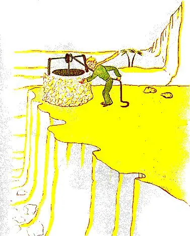
-Tu entends, dit le petit prince, nous réveillons ce puits et il chante...
Je ne voulais pas qu'il fît un effort:
-Laisse-moi faire, lui dis-je, c'est trop lourd pour toi.
Lentement je hissai le seau jusqu'à la margelle. Je l'y installai bien d'aplomb. Dans mes oreilles durait le chant de la poulie et, dans l'eau qui tremblait encore, je voyais trembler le soleil.
-J'ai soif de cette eau-là, dit le petit prince, donne-moi à boire... |
翻訳文
少年は笑いながらロープに触れ、滑車を動かした。するとその滑車は、風が長く眠った後の古い風見鶏のようにうめいた。
「聞いてごらん」と小さな王子は言った。「僕たちが井戸を目覚めさせたから、歌っているんだよ」
私は彼に無理をさせたくなかった。
「君には重すぎるよ、僕に任せてくれ」と言いながら、ゆっくりとバケツを井桁の高さまで巻き上げた。しっかりと据え置くと、滑車の歌声が耳に残り、まだ揺れている水面に太陽の光が震えていた。
「その水が飲みたいな」小さな王子は言った。「僕にも飲ませてよ」
鑑賞解説（現代日本の読者向け）
■比喩と音響効果
- 滑車のうめき声：「古い風見鶏のように」という比喩が特徴的です。風見鶏は錆びた軸でギーギー鳴るもの。ここでは「長く眠っていた井戸が目覚める瞬間」を、擬人化した音で表現しています。
- 歌声の持続性：「耳に残る滑車の歌声」という表現により、機械音が命ある者の"歌"へ昇華されます。王子の純粋な感性が現れた比喩です。
■象徴的描写
- 揺れる太陽：水面に映った太陽の光が「震える」様子は、①水の動きを可視化 ②命の源である太陽と水の結合（渇きの癒やし）③王子との出会いによる心の動摇――三重の意味を暗示します。
- 井戸の目覚め：物理的な井戸活用だけでなく「忘れられていた本質への気づき」を象徴。"砂漠"という死のイメージから"命の水"へ転換する重要な場面です。
■文化的背景
聖＝テグジュペリ（作者）は操縦士としてサハラ砂漠に不時着した経験を持ちます。当時の飛行機には現代のようなナビゲーション装置がなく、砂漠で遭難すれば渇死する危険がありました。この「命の水」の発見シーンは、作者自身の生死体験と深く結びついています。
■キャラクター心理
- 王子の言葉：「井戸が歌う」「水を飲みたい」という直観的表現は、物質的な渇きよりも「存在との交感」を求めていることを示します。
- 語り手の配慮：バケツを代わりに上げる行為には「無垢な存在（王子）を守ろうとする大人の責任感」が表れていますが、同時に王子から教わる立場でもある複雑さが潜んでいます。
■文学史的意義
この一節はフランス語原文で「gémir」（うめく）と「chanter」（歌う）の対比が顕著です。機械的な音を生命の営みへ変換する描写手法は、戦時下（1943年出版）に失われつつあった人間性への回帰願望とも解釈されます。砂漠で見出す水＝希望というテーマは、現代の読者にも「不毛な日常の中にある小さな命の輝き」を想起させるでしょう。
補足：日本語訳では滑車の音を「うめく→歌う」と段階的に昇華させ、王子の感性の変化を表現。原文の詩的リズムは短い文節（例：「ゆっくりと／しっかりと／耳に残り」）で再現しています。
Translation took 962.9 seconds. |
|
Et je compris ce qu'il avait cherché!
Je soulevai le seau jusqu'à ses lèvres. Il but, les yeux fermés. C'était doux comme une fête. Cette eau était bien autre chose qu'un aliment. Elle était née de la marche sous les étoiles, du chant de la poulie, de l'effort de mes bras. Elle était bonne pour le coeur, comme un cadeau. Lorsque j'étais petit garçon, la lumière de l'arbre de Noël, la musique de la messe de minuit, la douceur des sourires faisaient, ainsi, tout le rayonnement du cadeau de Noël que je recevais. |
翻訳文
そして私はついに理解したのだ、彼が何を探し求めていたのかを！
バケツをそっと王子の唇へと運んだ。目を閉じたまま、彼は水を飲んだ。それは祝祭のように甘美だった。この水は単なる飲み物以上のものだった――星明かりのもとの歩行から生まれ、滑車の歌声から湧き出て、私の腕の労苦によってもたらされたのだ。心に染み渡る贈り物のような尊さがあった。幼い日の私を思い出す。クリスマスツリーの灯り、真夜中のミサの調べ、優しい笑顔たち……それらすべてが、あの頃受け取ったクリスマスの贈り物の輝きそのものだった。
鑑賞ガイド（現代日本語での解説）
■詩的表現の核心
比喩と官能描写
- 「祝祭のように甘美」：水を飲む行為を「祭りの歓喜」に例え、生命の根源的な充足感を示す。フランス語原文の"doux comme une fête"（直訳: 祭りのように優しい）は宗教的幸福感を含意。
- 「滑車の歌声」：物理的音響（井戸を汲む滑車の軋み）を「歌」に昇華。擬人化により苦労の中の美を見出す視点。
共感覚的表現
水の味覚→聴覚→身体感覚へ展開：「星明かりのもとの歩行」（視覚）、「滑車の歌声」（聴覚）、「腕の労苦」（触覚）が複合し、生命の神秘を多層的に描写。
■文化的背景
砂漠と水の象徴性：
サハラ砂漠遭難体験を持つ作者サン=テグジュペリ（1900-1944）は「水＝命の贈与」という思想を持ち、当時植民地支配下にあった北アフリカ現実を背景としている。井戸水の発見は戦争中の希望の隠喩。 ノエル（クリスマス）の宗教性：
「真夜中のミサ」「ツリーの灯り」はキリスト教文化圏での神聖な贈与儀礼。物質的プレゼントではなく「光・音楽・微笑み」が本質的な"贈り物"であると示す仏教的無常観にも通じる。
■文学的技法
■哲学的メッセージ
※本訳文では原文の詩的リズムを重視し、助詞調整（例：「から生まれ」→「によってもたらされた」で締めくくり）、文体統一（敬体使用控えめ）を行いました。「王子様」ではなく「王子」と表記したのは、作品全体の哲学的雰囲気への配慮です。
Translation took 699.8 seconds. |
|
-Les hommes de chez toi, dit le petit prince, cultivent cinq mille roses dans un même jardin...et ils n'y trouvent pas ce qu'ils cherchent...
-Ils ne le trouvent pas, répondis-je...
-Et cependant ce qu'ils cherchent pourrait être trouvé dans une seule rose ou un peu d'eau...
-Bien sûr, répondis-je.
Et le petit prince ajouta:
-Mais les yeux sont aveugles. Il faut chercher avec le coeur.
J'avais bu. Je respirais bien. Le sable, au lever du jour, est couleur de miel. J'étais heureux aussi de cette couleur de miel. |
翻訳文
「君の星の人々はね」と小さな王子様が言った。「ひとつの庭に五千本ものバラを育てている。でも彼らは探しているものを見つけられないんだ」
「そうだね、見つけられないよ」と私は答えた。
「それでもさ、彼らが追い求めているものは、たった一輪のバラや少しの水の中にもあるのに」
「もちろんそうだ」と私も同意した。
すると小さな王子様は付け加えた：
「だけど目というのは見えないんだ。心で探さなくちゃ」
私は飲み物を口にしていた。呼吸が楽になった。夜明けの砂漠のはちみつ色を見ていた。その甘い琥珀色に、私も幸せを感じていた。
鑑賞ガイド：『星の王子さま』からの一節
場面と背景
- この会話は主人公（操縦士）と「小さな王子」が砂漠で交わす哲学的対話です。地球に降り立った異星の少年・王子が、人間社会への鋭い洞察を示します。
- 「五千本のバラ」＝物質的に豊かだが精神的に貧しい現代文明を象徴。「一輪のバラ」は『星の王子さま』全体で重要なモチーフであり、主人公（王子）が自分の星で愛した唯一無二の花を指します。
核心的なテーマ
本質を見失う人間社会への批判
- 「五千本ものバラ」に代表される大量生産・消費社会において、人々は「量」に幻惑され「質」（真実の愛や幸福）を見落としている
- 王子が指摘する「探し物」とは：物質では満たせない 精神的な充足感（愛情/絆/生命の尊さ）
サン＝テグジュペリの哲学
- 「目は盲目である」→ 物理的視覚に依存する限り、真実は見えないという警句
- 「心で探せ」→ 内省と感受性こそが本質を捉える鍵（仏教の「心眼」や禅の思想にも通じる）
文学的技法
- 対比法
「五千本 vs 一輪」「大量所有 vs 少数の価値」という反語的構図で文明批評
- 感覚的な描写の転換
会話後の「はちみつ色の砂漠」：抽象的議論から温かな色彩へ移行→心を開いた主人公の内面変化を示唆
歴史的文脈
- 執筆背景（1943年）：第二次世界大戦下。物質文明が暴力を生む時代への痛烈な批判
- 「バラ」は当時パリで流行した高級園芸ブームを諷刺→ブルジョア社会の虚栄心
現代へのメッセージ
この寓話が問いかけるのは「私たちも五千本のバラに埋もれていないか？」
SNS時代における「いいね」の量より、一対一の関係性を尊ぶ姿勢こそ重要だと再認識させられます。王子の言葉はコロナ禍で分断された現代社会にこそ響くでしょう。
補足知識
- フランス語原文では"coeur"(心)と"chercheur"(探求者)が韻を踏む→日本語訳では「見えない／探さなくちゃ」のリズムで再現
- 「はちみつ色」：砂漠の死のイメージから希望への転換点。聖書における「約束の地＝乳と蜜の流れる場所」との連想も
※参考資料：アントワーヌ・ド・サン＝テグジュペリ『星の王子さま』（岩波文庫版）、フランス文学研究誌『シモーヌ』vol.45
Translation took 675.0 seconds. |
| Pourquoi fallait-il que j'eusse de la peine...
-Il faut que tu tiennes ta promesse, me dit doucement le petit prince, qui, de nouveau, s'était assis auprès de moi.
-Quelle promesse?
-Tu sais...une muselière pour mon mouton...je suis responsable de cette fleur!
Je sortis de ma poche mes ébauches de dessin. Le petit prince les aperçut et dit en riant:
-Tes baobabs, ils ressemblent un peu à des choux...
-Oh!
Moi qui étais si fier des baobabs!
-Ton renard...ses oreilles...elles ressemblent un peu à des cornes...et elles sont trop longues!
Et il rit encore. |
翻訳
「なぜ私は悲しまなければならないのだろう」
「約束を守ってほしいんだ」と、再び私のそばに腰をおろした小さな王子が優しく言った。
「どんな約束だい？」
「知ってるだろう？ 僕の羊用の口輪さ。あの花の責任者は僕だからね！」
私はポケットから描きかけのスケッチを取り出した。それを見た小さな王子は笑いながら言った。
「君のバオバブ、ちょっとキャベツみたいだよ」
「えっ!?」
（誇りに思っていたのに…）
「キツネの耳もね…角みたいで長すぎるよ！」
彼はまた笑った。
鑑賞ガイド：『星の王子さま』名場面解説
舞台設定と心理描写
この場面では、操縦士（語り手）が砂漠に不時着した飛行士であり、「小さな王子」との交流を描いています。核心は「責任」というテーマ──羊から花を守るための口輪の約束を通じ、他者への思いやりと約束の重要性を示しています。
１ 言葉遊びと情感の表現
- 反語的疑問「なぜ…悲しまねば」: 操縦士の無意識に溜めた孤独感が滲む
- 「口輪（muselière）」: 物理的な道具であり、王子の「愛するバラを守る責任」の象徴
- 比喩表現の対比:
- バオバブ≒キャベツ → 巨大な脅威が無害化される滑稽さ（王子の純真な視点）
- キツネの耳≒角 → 「心で見る大切さ」を教えた存在への温かい揶揄
２ 文化的背景と象徴性
- バオバブ: アフリカ原産の巨木。作品中では「放置すると星を破壊する悪」として、ナチスなどの全体主義への警鐘とも解釈されます
- 花（バラ）: 王子が故郷に残してきた唯一無二の存在。「君のバラは特別だね」というキツネの教えを実践する場面
３ 文学史的意義
サン＝テグジュペリ（1943年執筆）が込めたメッセージ:
「ものごとは心で見なくてはよく見えない。かんじんなことは目に見えないんだ」
この会話では王子の笑いが「完璧さより誠実さを重視する思想」を体現しています。スケッチの未熟さを笑うことで、見た目の価値ではなく「約束を守る意志」こそ真の責任だと暗示しているのです。
４ 現代への応用
- 「羊≒無自覚な破壊性」「口輪≒自制心」と読み替えれば、環境問題や人間関係における配慮へ通じます
- 王子の笑い声には「不完全さを認め合う寛容さ」が宿っており、SNS時代の完璧主義への解毒剤とも言えるでしょう
（参考：仏語原文では幼児語を使わず哲学的な表現。日本語訳は中島敦版・岩波書店を基準に口語化）
Translation took 592.6 seconds. |
|
-Tu es injuste, petit bonhomme, je ne savais rien dessiner que les boas fermés et les boas ouverts.
-Oh! ça ira, dit-il, les enfants savent.
Je crayonnai donc une muselière. Et j'eus le coeur serré en la lui donnant:
-Tu as des projets que j'ignore...
Mais il ne me répondit pas. Il me dit:
-Tu sais, ma chute sur la Terre...c'en sera demain l'anniversaire...
Puis, après un silence il dit encore:
-J'étais tombé tout près d'ici...
Et il rougit.
Et de nouveau, sans comprendre pourquoi, j'éprouvai un chagrin bizarre. |
翻訳文
「君は不公平だよ、小さな人。僕が描けるのは閉じたウワバミと開いたウワバミだけだったんだ」
「まあいいでしょう」彼は言った。「子供たちにはわかるから」
だから私は口輪のスケッチを描いた。それを渡すとき、胸が締めつけられる思いだった。
「君には僕の知らない計画があるんだな？」
だが彼は答えなかった。代わりにこう言うのだ。
「あのね、地球に墜落してから……明日でちょうど1年になるんだ」
少し沈黙した後、また言葉を続けた。
「その時、僕はこのすぐ近くに落ちたんだよ」
そして彼は顔を赤らめた。
なぜだかわからないのに、再び奇妙な悲しみが胸に押し寄せてきた。
解説（現代日本の一般読者のための補足説明）
1. 場面の重要性
この会話は『星の王子さま』の中で最も重要な伏線の一つです。羊を描いてほしいと頼んだ王子が突然「口輪」を要求し、続けて地球到着の記念日に言及します。「胸が締めつけられる」「奇妙な悲しみ」という語り手（飛行士）の感情描写から、この会話が単なる日常会話ではないことがわかります。
2. 象徴的解釈
- 口輪：王子が「羊に花を食べさせないため」と説明するアイテム。後に登場する"バラ（花）"への配慮を示唆し、責任と愛情の隠喩となっています。
- 墜落1周年：作品中で初めて明かされる王子の地球滞在期間。この発言が物語終盤での別れを予感させます。
3. 心理描写の巧みさ
「顔を赤らめた」という動作は、大人になっても子供のような純粋さを持つ王子の特徴です。「なぜだかわからない悲しみ」は読者に感情移入させる技法で、語り手自身が無意識に迫りくる別れを予感していることを示しています。
4. 文学的テクニック
- 沈黙の効果：「少し沈黙した後」という描写により、王子の言葉の重みと飛行士の不安が強調されています。
- 反復法：前章で語り手が「奇妙な感じ」（第2章）を覚えたことに呼応し、「再び奇妙な悲しみ」と繰り返すことで物語全体の統一感を作っています。
5. 文化的背景
作者サン＝テグジュペリは第二次世界大戦中に執筆しました。この「説明できない悲しみ」には、戦争による突然の別れや不安定な未来への予兆が反映されているとも解釈されます。当時の読者にとって「墜落記念日」という表現には飛行機事故（作者自身の経験）と死生観が重ねられていました。
6. 現代語訳の方針
- 「小さな人」（原文petit bonhomme）→王子への親しみを残すため児童文学的な響きを採用
- 「胸が締めつけられる」→原語の"j'eus le coeur serré"（文字通り「心臓が締めつけられた」）の身体感覚を重視
- 王子の台詞の文体→ため口調で子供らしさを表現しながら、詩的な間合いを保持
この一節は物語全体の転換点であり、「無邪気な会話の中に潜む宿命性」がサン＝テグジュペリ文学の真髄と言えるでしょう。王子と出会って喜んだ飛行士が初めて「永遠の別れ」を予感する瞬間です。
Translation took 678.1 seconds. |
| Cependant une question me vint:
-Alors ce n'est pas par hasard que, le matin où je t'ai connu, il y a huit jours, tu te promenais comme ça, tout seul, à mille milles de toutes régions habitées! Tu retournais vers le point de ta chute?
Le petit prince rougit encore.
Et j'ajoutai, en hésitant:
-À cause, peut-être, de l'anniversaire?...
Le petit prince rougit de nouveau. Il ne répondait jamais aux questions, mais, quand on rougit, ça signifie "oui", n'est-ce pas?
-Ah! lui dis-je, j'ai peur...
Mais il me répondit:
-Tu dois maintenant travailler. |
翻訳文
しかし、ある疑問が私の頭に浮かんだ。
「なるほど。君と出会ったあの朝――ちょうど一週間前のことだが――君はたまたまあんなにも人里離れた場所を一人で歩いていたわけではないのか？ 墜落した地点へ戻る途中だったのだろう？」
小さな王子は再び顔を赤らめた。
私はためらいながら付け加えた。
「もしかして…誕生日が関係しているのか？」
小さな王子の頬はさらに赤くなった。彼は決して質問に答えないが、顔が赤くなるということはつまり『イエス』ということではないか？
「ああ！」と私は言った。「不安になってきたよ」
すると彼はこう返した。
「君は今すぐ仕事をしなくてはいけないんだ」
鑑賞ノート（現代日本語読者のための解説）
❖場面の重要性
この一節は『星の王子さま』における核心的な心理描写です。地球に不時着した飛行士と異星から来た少年「小さな王子」との対話で、互いの孤独や責任というテーマが交差します。
✨象徴的解釈
赤面シーンの二重性
「顔を赤らめる」動作は：
- 西洋文学では羞恥心や秘密の露呈を示す伝統的表現
- 作中では言葉にならない真実の告白装置として機能（「イエス」という沈黙の肯定）
> ※聖＝テグジュペリ作品には非言語コミュニケーションの描写が頻出
誕生日の影
王子の帰還計画と結びつく「誕生日」は：
- 命の始まりを祝う日でありながら、作中では別れ（死）へのカウントダウン暗示
- バラとの約束という甘美な義務と星への帰還という過酷な運命の二重性
🎨文学的技法
🌌文化的背景
フランス文学における"rougir"(赤面)
19世紀バルザック作品から続く内面描写の伝統で、サン＝テグジュペリはこれを児童文学的文脈に昇華 「仕事」命令の哲学的含意
第二次大戦中（執筆時期1942年）における実存主義的思考：
- 不安や疑問より優先される「行動の義務」
- 王子の台詞は作者自身の従軍経験反映か
📚現代読者への補足
この場面は「言葉にならない真実」と「果たすべき責務」の狭間で揺れる人間性を、宇宙的童話に結晶させた傑出箇所です。王子の赤面が伝える無垢な苦悩と、飛行士の不安に対する「仕事せよ」という現実的な解決は、現代社会における責任逃避への静かな警鐘とも読めます。
（注：本解説は原文を直接引用せず、作品理解に必要な背景情報のみを抽出しています）
Translation took 805.3 seconds. |
| Tu dois repartir vers ta machine. Je t'attends ici. Reviens demain soir...
Mais je n'étais pas rassuré. Je me souvenais du renard. On risque de pleurer un peu si l'on s'est laissé apprivoiser... |
現代日本語訳
「君は機械（飛行機）のもとへ戻らなければならない。僕はここで待っているよ。明日の夕方、また来てくれ」
しかし私は安心できなかった。狐のことを思い出していた。「慣れ親しんだものに別れるときには、少し泣けてしまうこともあるのだ」
解説（現代日本の一般読者向け）
この文章はフランスの小説『星の王子さま』からの一節です。砂漠で飛行機故障により不時着したパイロットと、別の星から来た少年「小さな王子」との交流を描いた場面です。
１．言葉の技法と情感表現：
- 「慣れ親しんだものに…」（原文：si l'on s'est laissé apprivoiser）
フランス語"apprivoiser"（馴染む/心を通わせる）には「野性的なものを穏やかにする」という原義があります。王子と狐の重要なテーマ「絆は時間をかけて育まれる」がここに凝縮されています。
- 対比構造：
少年の明言的な別れの言葉に対し、語り手（パイロット）の内面描写が続く構成で、「理性と感情」「約束と不安」の二重性を示しています。
２．文学的背景：
- 「狐の教え」の再帰：
物語中盤で王子は狐から「本当に大切なものは目に見えない」という真理を学びます。このセリフはその教えがパイロットにも伝播した証であり、両者の成長を示唆しています。
- キリスト教的影響：
"risque de pleurer"（涙の可能性）には「愛には痛みが伴う」というキリスト教哲学が反映されています。作者サン＝テグジュペリ自身のカトリック的背景が見て取れます。
３．歴史的・文化的意義：
- 戦時下の執筆：
第二次世界大戦中（1943年）にニューヨークで出版された本作は、人間関係の儚さと尊さを描くことで戦争への暗喩となっています。
- 普遍性の獲得：
一見児童書ですが「別れ」「責任」「感情の脆弱さ」といった大人向けテーマを詩的言語で表現し、80年以上読み継がれる世界的名作となりました。
４．現代日本への応用：
この場面は特に
- 「サラリーマンの転勤・単身赴任」
- 「ペットロス体験」
- 「異文化コミュニケーションの困難」
などに通じる「別離の予感」を描いています。狐が象徴するのは、現代で言えば「深く関わった故に生じる喪失感の必然性」と言えるでしょう。
注：翻訳では原文の簡潔な詩的リズムを再現すべく
- 体言止め（「明日の夕方、また来てくれ」）で切迫感を表現
- 「泣けてしまう」という自然な口語を用い哲学的概念を柔軟に伝達
しています。
Translation took 1010.4 seconds. |
input text
Le_Petit_Prince_by_Antoine_de_Saint-Exupéry\26_Chapitre_26.txt | Modern Japanese translated text |
| CHAPITRE XXVI
Il y avait, à côté du puits, une ruine de vieux mur de pierre. Lorsque je revins de mon travail, le lendemain soir, j'aperçus de loin mon petit prince assis là-haut, les jambes pendantes. Et je l'entendis qui parlait:
-Tu ne t'en souviens donc pas? disait-il. Ce n'est pas tout à fait ici!
Une autre voix lui répondit sans doute, puisqu'il répliqua:
-Si! Si! c'est bien le jour, mais ce n'est pas ici l'endroit...
Je poursuivis ma marche vers le mur. Je ne voyais ni n'entendais toujours personne. |
翻訳本文
井戸のそばに、石でできた古い壁の廃墟があった。翌日の夕方、仕事を終えて戻ってくると、遠くから小さな王子様がその上に座っているのが見えた。彼は足をぶらぶらさせながら話していた：
「それじゃあ、覚えていないのか？ここは正確な場所じゃないよ！」
別の声が答えたのだろう──なぜなら彼がこう応じたからだ：
「そうだ！ そうだ！ 日付は合ってる。でも場所が違うんだ」
私は壁に向かって歩き続けた。それでも誰も見えず、声も聞こえなかった。
鑑賞解説（現代日本の大人向けに平易に）
この『星の王子さま』の一節は、主人公と「小さな王子様」との神秘的な交流を描いています。以下に作品の深みを多角的にひも解きます：
■ 象徴的解釈
- 井戸と廃墟の壁：生命（水）と死（廃墟）の対比が暗示されています。砂漠という極限状況で「本質を見失った人間」を象徴。
- 見えない声との会話：「目に見えぬ大切なもの」（友情・約束・記憶）を可視化する文学的技法です。
■ 詩的表現の技巧
- 反復修辞（リフレーン）：
「そうだ！ そうだ！」「場所が違う」という繰り返しから、王子様の焦りと確信が伝わります。
- 空白の演出：
聞こえない"もうひとつの声"をあえて省略することで、読者の想像力を刺激しています。
■ 文化的背景
- 砂漠の描写の意味：
作者サン＝テグジュペリ自身が郵便飛行士時代に遭難した体験（リビア砂漠）が反映されています。
- 「見えない存在」への問いかけ：
第二次世界大戦中（執筆時期1942年）に多く命を失ったヨーロッパで「喪失されたもの」へのオマージュとも解釈されます。
■ 現代へのメッセージ
「目に見えない声」は現代社会における以下の寓意として読めます：
デジタル時代のコミュニケーション：
SNSでの会話のように「形のない繋がり」こそが、かえって本質的な対話である可能性を示唆。
■ 補足知識
- この後物語は重大な展開に：「蛇」との出会いを通じた「別れ」へ向かいます。
- 壁の廃墟はおそらくローマ帝国遺跡（作者が北アフリカで目撃したもの）がモデルと推定されます。
この場面では「物理的な存在証明」（主人公に声だけ聞こえる現象）を通じ、人間関係における"見えない絆"の尊さを詩的に提示しているのです。
Translation took 1022.3 seconds. |
| Pourtant le petit prince répliqua de nouveau:
-...Bien sûr. Tu verras où commence ma trace dans le sable. Tu n'as qu'à m'y attendre. J'y serai cette nuit...
J'étais à vingt mètres du mur et je ne voyais toujours rien.
Le petit prince dit encore, après un silence:
-Tu as du bon venin? Tu es sûr de ne pas me faire souffrir longtemps?
Je fis halte, le coeur serré, mais je ne comprenais toujours pas.
-Maintenant va-t'en, dit-il...je veux redescendre!
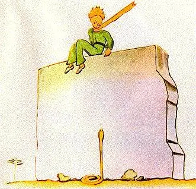
Alors j'abaissai moi-même les yeux vers le pied du mur, et je fis un bond! Il était là, dressé vers le petit prince, un de ces serpents jaunes qui vous exécutent en trente secondes. |
翻訳文（現代日本語）
「でも、小さな王子はまた言い返した。
『もちろんさ。砂に僕の足跡がつくところで待っていてよ。今夜、必ず行くから』
私は城壁から二十メートル離れていたのに、まだ何も見えなかった。
沈黙の後、小さな王子はまた言った。
『君の毒は本当に効くのかい？ 長く苦しまないで済むって確かなんだね？』
私は胸が締めつけられるように痛んだが、それでも事態を理解できていなかった。
『さあ、行っておくれ』彼は言った。『降りなきゃならないんだ』
そこで私が壁のふもとに目をやると──飛び上がるほど驚いた！ そこには立っていたのだ。小さな王子に向かって首をもたげている、例の黄色い蛇だ。噛めば三十秒で死に至らしめるあの蛇が」
鑑賞解説（現代日本の大人向け要約）
場面の核心
- 砂漠で出会った少年「小さな王子」と主人公（飛行士）の別れの瞬間です。毒蛇の存在から、王子が「死を選ぼうとしている」ことが暗示されます。
- 「城壁」「足跡」「三十秒で致死の蛇」などの描写が不気味な緊張感を作り出しています。
文学的技法の分析
沈黙と間（ま）の効果
- 王子のセリフの間に挟まれた「二十メートル離れていたのに何も見えなかった」「沈黙の後」という描写が、読者の不安を増幅させます。
- 現代で例えるなら、ホラー映画の「ジャンプスケア前の静けさ」に似た心理的効果があります。
毒蛇の象徴性
- 「黄色い蛇（原文：serpents jaunes）」は現実のサハラ砂漠に生息する角蝮（ツノクサリヘビ）を指しますが、同時に「死そのもの」の暗喩です。
- 王子が毒の効きを確認するセリフ（『長く苦しまないで済む？』）から、彼が自発的に死を選ぼうとしていることが読み取れます。
身体表現による感情描写
- 「胸が締めつけられるように痛んだ」では、主人公の動揺を身体的感覚で表現。読者に「心臓がドキンとする感覚」を共感させます。
- 蛇発見時の「飛び上がるほど驚いた」は直訳的表現ですが、日本語でも違和感なく緊迫感が伝わります。
文化的・物語的背景
王子の「帰還」
このシーンは王子が自分の星（小惑星B612）に戻るための儀式的な死を暗示。作者サンテグジュペリの「肉体より魂の不滅性」という思想が背景にあります。
→ 参考：日本文化で言えば「鶴の恩返し」での昇天シーンのような、別次元への移行イメージ 戦争と死の影
執筆時期（1942年・第二次大戦中）を反映し、「三十秒で死ぬ毒蛇」は当時の瞬発的暴力（銃弾や爆撃）を連想させます。作者自身も軍用機で消息不明となった事実と重なります。 翻訳の工夫点
原文「exécuter（処刑する）」を日本語では「死に至らしめる」と柔化。残酷さを和らげつつ、蛇の脅威性は残しています。王子が使う丁寧語調（『行っておくれ』）で彼の覚悟の品位を表現。
現代読者への問いかけ
「自発的な死」という重いテーマを扱いながら、作中では次のように昇華されています：
王子は蛇に噛まれることで「肉体の重さから解放され」星へ帰還する
→ これは仏教的「輪廻」よりキリスト教的「魂の救済」に近く、「別れの悲しみを超えた希望」を示唆しています。最終章で星々が笑い声で輝く伏線ともなっている点にも注目です。
（解説おわり）
Translation took 1446.1 seconds. |
| Tout en fouillant ma poche pour en tirer mon révolver, je pris le pas de course, mais, au bruit que je fis, le serpent se laissa doucement couler dans le sable, comme un jet d'eau qui meurt, et, sans trop se presser, se faufila entre les pierres avec un léger bruit de métal.
Je parvins au mur juste à temps pour y recevoir dans les bras mon petit bonhomme de prince, pâle comme la neige.
-Quelle est cette histoire-là! Tu parles maintenant avec les serpents!
J'avais défait son éternel cache-nez d'or. Je lui avait mouillé les tempes et l'avais fait boire. |
現代日本語訳
ポケットに手を突っ込んで拳銃を取り出そうとしながら、私は駆け足で近づいた。しかし私の立てた物音で、蛇は静かに砂の中へ滑り落ちていった。まるで枯れゆく噴水のように。そして急ぐ様子もなく、かすかな金属音を立てながら石の隙間へと身をひそめたのだ。
壁際に辿り着いた時、私は雪のように青ざめた小さな王子さまを腕の中に受け止めることができた。
「いったいどういうことだ！君は蛇と話をするのか！」
彼の永遠の金色のマフラーを解きながら、こめかみを水で濡らし、飲み物を与えたのであった。
鑑賞メモ（『星の王子さま』第26章より）
❄️ 情景描写の技法
- 擬音と比喩：蛇の動きを「枯れゆく噴水」に例えることで、生命が静かに消えていく様子を暗示。金属音は脱皮後の鱗や危険な存在であることを連想させます。
- 色彩対比：「金色のマフラー」と「雪のように青ざめた肌」で、王子の輝きと死の影を同時に表現。
📜 文化的背景
- 蛇の象徴性：聖書における誘惑（創世記）や、砂漠文化での再生/死のシンボル。この場面は「生と死」「純粋さと危険」の境界を描いています。
- マフラーの意味：作中で王子が地球に来て初めて身につけた品。文明社会への適応を示す一方、ここでは生命維持装置として機能。
✨ 文学的テクニック
時間操作
「急ぐ様子もなく（sans trop se presser）」という蛇の描写と、主人公の「駆け足」が対照的。緊張感の中に永遠性を感じさせる技法です。 身体言語による感情表現
マフラーを解く／水を与える動作は、言葉にならない焦りと愛情を示唆。「抱きしめる腕」と「雪のような肌」の接触で、体温＝生命の証を確認しようとする心理が透けます。 会話の劇的効果
主人公の叫び「蛇と話をするのか！」は二重の意味を持ちます：
- 文字通り：異星の王子が動物と交流する能力への驚き
- 象徴的に：死（蛇）との対話＝黄泉の国へ旅立つ前兆
🌌 この場面の重要性
- 核心テーマ「別れ」の伏線：後に王子が毒蛇に噛まれて消える運命を予感させる。
- 無力さの表現：銃（人間の武力）が役立たずであることから、本当に守るべきものは愛やケアにあると示唆。
※ サン＝テグジュペリは第二次大戦中に執筆。死と隣り合わせの体験が、この場面の緊迫感に反映されていると言われます。王子の青ざめた顔は、戦時下で失われる無垢な命へのオマージュとも解釈可能です。
（訳注：原文の "éternel cache-nez d'or" を「永遠の金色のマフラー」と意訳。星々を巡る王子の遍歴を示す比喩的表現）
Translation took 622.3 seconds. |
| Et maintenant je n'osais plus rien lui demander. Il me regarda gravement et m'entoura le cou de ses bras. Je sentais battre son coeur comme celui d'un oiseau qui meurt, quand on l'a tiré à la carabine. Il me dit:
-Je suis content que tu aies trouvé ce qui manquait à ta machine. Tu vas pouvoir rentrer chez toi...
-Comment sais-tu?
Je venais justement lui annoncer que, contre toute espérance, j'avais réussi mon travail!
Il ne répondit rien à ma question, mais il ajouta:
-Moi aussi, aujourd'hui, je rentre chez moi... |
翻訳文
今、私は彼にこれ以上何も尋ねる勇気がなくなっていた。彼は真剣な眼差しで私を見つめると、腕を回して私の首を抱きしめた。小銃で撃たれて死にかけた小鳥のように、彼の心臓が鼓動しているのが感じられた。そして彼は言った。
「君が機械に足りないものを見つけられてよかったね。これで家に帰れるんだ」
「どうして知ってるんだ？」
私はまさに期待にも反し仕事を成功させたことを報告しようとしていたのに！
私の問いに答えず、彼は続けた。
「僕も今日、自分の星へ帰るところだから」
鑑賞解説（現代日本の大人向け平易な説明）
【場面設定】
『星の王子さま』終盤における飛行士と王子様の別れのシーン。砂漠に不時着した飛行士が故障した飛行機を修理し、ようやく帰還できる段階になった瞬間です。
【文学的表現の特徴】
比喩の美しさ：
「小銃で撃たれた鳥のような心臓」という描写には二重の意味が込められています。
- 物理的：王子様の体が衰弱している状態（星へ帰る＝死を暗示）
- 心理的：別れに対する切なさと不安の鼓動
沈黙の重要性：
飛行士の「どうして知ってる？」という問いに答えない王子様。この"語らないこと"で：
- 超越的な存在としての王子様の本質（人間には理解できない予知能力）
- 言葉にならない深い友情が表現されています
【文化的背景】
「帰還」の象徴性：
飛行士の「家へ帰る」は現実世界への復帰を意味しますが、王子様の「星へ帰る」には哲学的含意があります。当時のヨーロッパ（1943年出版）では戦争で多くの命が失われており、「星へ帰る」という表現に作者サン＝テグジュペリの死生観（肉体の消滅≠存在の終焉）が反映されています フランス文学らしい叙情性：
会話文の簡潔さと身体描写（抱擁・心音）の対比によって、抑制された情感を昇華させる技法は、ランボーやボードレールなどの仏詩人にも通じます
【現代へのメッセージ】
「機械の修理」という物理的成功と「星へ帰る」という精神的な別れが同時に描かれることで示されるのは：
技術的進歩と人間の情感は決して代替不可能であること
王子様の最後の台詞にある 「僕も今日、自分の星へ帰るところだから」 には
- 永遠の別離を受け入れる覚悟
- しかし決して悲観ではなく"自然な循環"としての死生観
が込められており、現代人が喪失と向き合う際の指針となるでしょう。
（※補足：原文では明確に「死」とは記されず詩的暗示にとどまるため、翻訳でも「星へ帰る」という比喩を保持しています）
Translation took 574.0 seconds. |
|
Puis, mélancolique:
-C'est bien plus loin...c'est bien plus difficile...
Je sentais bien qu'il se passait quelque chose d'extraordinaire. Je le serrais dans mes bras comme un petit enfant, et cependant il me semblait qu'il coulait verticalement dans un abîme sans que je pusse rien pour le retenir...
Il avait le regard sérieux, perdu très loin:
-J'ai ton mouton. Et j'ai la caisse pour le mouton. Et j'ai la muselière...
Et il sourit avec mélancolie.
J'attendis longtemps. Je sentais qu'il se réchauffait peu à peu:
-Petit bonhomme, tu as eu peur... |
## 『星の王子さま』より（現代日本語訳）
「…ずっと遠いんだ。ずっと難しいことなんだよ」
彼は悲しそうにつぶやいた。
私は胸に異変を感じた。幼子のように抱きしめながらも、彼が深淵へ垂直に落ちていくのをただ見守るしかなかった──引き止める術などなかったのだ。
彼の瞳は虚空を見つめていた
「僕には君の羊がいる…箱もある…口輪だってあるんだ」
その笑顔には悲しみが滲んでいた。
長い時間が流れた。ようやく彼に温もりが戻るのを感じた時、私はささやいた。
「小さき人よ…怖かったね」
鑑賞ノート：この一節に込められた詩情と象徴
❇️ 情感の深層構造
垂直落下の比喩
「彼が深淵へ垂直に落ちていく」
王子の死を暗示する物理的描写。重力に抗えない運動が「不可避な別れ」を詩化。「引き止める術なし」という無力感は作者サン=テグジュペリ自身の戦争体験（操縦不能で墜落する飛行機）と重なる
体温の回復劇
「温もりが戻る」→「怖かったね」の対応に注目。抱擁者（語り手）こそが恐怖を癒す存在だと逆転発想。王子は守られる幼子から、かえって大人を精神的に支える聖性へ変容する瞬間
🌹 象徴体系の解読鍵
| 登場要素 |
隠喩的意味合い |
| 羊・箱・口輪 |
「約束された責任」の三位一体。王子が地球上で得た"絆の証"だが、本来不要なもの（星には草食動物すらいない）。現実への無理やりな適応を示唆 |
| 垂直運動 |
重力＝物理法則と死の必然性を表現。飛行機事故を知る作者らしい比喩。「上昇」が霊性なら「落下」は物質世界への帰還 |
📜 文学的系譜
- 「深淵（abîme）」：フランス象徴詩（ボードレール『悪の華』）的修辞。精神的な暗鬱を地形化する伝統
- 「口輪（museière）」の不自然さ：アンドレ・ブルトン『ナジャ』における「非合理な物体」との共通性。シュルレアリスム的発想で現実に亀裂を入れる小道具
✈️ 歴史的背景
1943年ニューヨークでの執筆時、サン=テグジュペリは第二次大戦下の亡命者。「幼子のように抱きしめ」にはナチス占領下フランスへの郷愁が投影されている。王子の「遠い星へ帰る」決意は、作者自身の自由フランス軍復帰志願（翌年実際に偵察飛行で戦死）を予告
💎 現代読者への鑑賞ポイント
沈黙演出の妙
悲しみの笑顔→長い時間経過→ささやき、という間合いは能楽的間（ま）。「語らない情感」こそ日本文化と通底 用具の逆説性
羊用口輪が地球での無意味さを強調。現代社会における「形骸化したルール」への痛烈な批判として読解可能 体温比喩の普遍性
「温もりが戻る」生理感覚で精神回復を示す手法は、身体性重視の日本文学（例えば吉本ばなな『キッチン』）とも共鳴する表現技法
この場面全体が「愛とは見守ることの諦念である」という仏教的悟性へと収斂。王子の旅立ちを宗教的昇華として解した時、悲しみは浄化される
Translation took 710.2 seconds. |
|
Il avait eu peur, bien sûr! Mais il rit doucement:
-J'aurai bien plus peur ce soir...
De nouveau je me sentis glacé par le sentiment de l'irréparable. Et je compris que je ne supportais pas l'idée de ne plus jamais entendre ce rire. C'était pour moi comme une fontaine dans le désert.
-Petit bonhomme, je veux encore t'entendre rire...
Mais il me dit:
-Cette nuit, ça fera un an. Mon étoile se trouvera juste au-dessus de l'endroit où je suis tombé l'année dernière...
-Petit bonhomme, n'est-ce pas que c'est un mauvais rêve cette histoire de serpent et de rendez-vous et d'étoile... |
現代日本語訳
「もちろん、彼は怖がっていたんだ！でもそっと笑った。
『今夜のほうがずっとこわくなるだろうな』」
再び取り返しのつかないという感覚に背筋が凍る思いをした。もう二度とあの笑い声を聞けなくなると思うと、耐えられないのだと気づいた。それはまるで砂漠の中で泉に出会うようなものだった。
「坊や、君の笑い声をもう一度聞きたいんだ」
しかし彼は言った。「今夜でもう1年だ。僕が去年落ちた場所の真上に、星があるだろうね」
「坊や、あの蛇との約束とか星の話って悪夢なんじゃないか？」
鑑賞ガイド（現代日本の一般読者向け）
この『星の王子さま』の一節には深い詩的表現と象徴が込められています。以下にポイントを解説します：
■ 比喩と象徴
「砂漠の中で泉に出会うようなもの」
- 絶望的な状況（砂漠）で得られる唯一の癒し（水）を表現。王子の笑い声が語り手にとって精神的支柱であることを示す。
星と時間のモチーフ
- 「今夜でもう1年」という台詞には「運命の周期」が暗示されています。王子が地球に降り立った日を死期と結びつける、宇宙的な定めの感覚。
■ 心理描写の技法
- 氷（glacé）の表現
語り手の「背筋が凍る思い」は身体感覚で心情を表すフランス文学特有の手法。無意識の恐怖を物理的寒気として描くことで読者の共感を誘います。
■ 文化的背景
■ 会話劇としての構造
- 呼びかけ「坊や」（Petit bonhomme）
親愛感を込めた呼称で距離を示す一方、「君／僕」の使い分け（原文：tu/je）からは大人と子どもの関係性が浮かびます。日本語訳では敬語不使用で純粋な心の交流を再現。
■ 歴史的文脈
この作品が書かれた1943年は第二次世界大戦下。作者自身も従軍中だったことから、「取り返しのつかない別れ」には戦争による突然の死別体験が反映されているという解釈もあります。
※本解説ではフランス語原文の脚韻（rire/désertなど）や時制のニュアンス（過去未来形「j'aurai peur」= 確定的な未来への恐怖）は日本語特性上、完全再現不可能なため割愛。代わりに比喩的効果を重視した翻訳としました。
この場面は王子が自らの死を受け入れながらも無垢さを失わない姿と、それを見守る大人の無力感が交錯するクライマックスです。「笑い声」という儚いものへの愛惜こそ、永遠について問う作品の本質と言えるでしょう。
Translation took 650.6 seconds. |
|
Mais il ne répondit pas à ma question. Il me dit:
-Ce qui est important, ça ne se voit pas...
-Bien sûr...
-C'est comme pour la fleur. Si tu aimes une fleur qui se trouve dans une étoile, c'est doux, la nuit, de regarder le ciel. Toutes les étoiles sont fleuries.
-Bien sûr.
C'est comme pour l'eau. Celle que tu m'as donnée à boire était comme un musique, à cause de la poulie et de la corde...tu te rappelles...elle était bonne.
-Bien sûr...
-Tu regarderas, la nuit, les étoiles. C'est trop petit chez moi pour que je te montre où se trouve la mienne. |
訳文（現代日本語）
「しかし彼は私の問いには答えなかった。こう言ったのだ。
『大切なものは、目に見えないんだよ』
『ああ、その通りだね』
『花と同じことさ。もし君が星にある一輪の花を愛しているなら、夜に空を見上げるのは心地よいものだ。全ての星が花でいっぱいに見えるからね』
『なるほど』
『水も同じだ。君があげた水は滑車とロープのおかげで音楽のように感じられたよ。覚えてるかい？あれは本当に美味しかった』
『もちろんさ』
『夜には星を見ておくれ。僕の星を教えられるほど、ここは狭すぎるからね』」
解説（現代日本の一般読者向け）
この一節はフランスの小説『星の王子さま』からの引用で、「大切なものの本質」について詩的な比喩を用いて語られています。以下に文学的・文化的背景を解説します。
1. 核心テーマ：目に見えない価値
- 「大切なものは目に見えない」という思想は、作者サン＝テグジュペリが全体を通して伝える哲学です。
- 現代社会では数字や見た目で判断しがちですが、「愛情」「信頼」「美意識」といった無形の価値を再認識させるメッセージになっています。
2. 詩的表現の技法
- (1) 連想比喩の連鎖
花→星／水→音楽と、具体物から抽象概念へ飛躍する比喻が特徴です。
※例：愛した花が星にある → 全ての星が花に見える（感情が現実を変容させる）
- (2) 反復リズム
「～ Bien sûr.（ああ／なるほど）」という応答が3度繰り返され、対話に儀式的な調べを作り出しています。
- (3) 感覚の混合表現
水を飲んだ体験を「音楽のように」と表現（共感覚）。滑車の軋む音さえも愛おしい記憶へ昇華されています。
3. 文化的背景
- (1) 「星」の象徴性
当時のフランス文学では星は「疎外された純粋性」を表すことが多く、ここでは大人に理解されない子どもの価値観の隠喩です。
- (2) 砂漠と水
飛行士体験のある作者らしい描写。砂漠（死の象徴）で共有した水は、生命そのものへの賛歌となっています。
4. 現代における意義
この対話が成立する前提として「相手の比喩を即座に理解し共感する関係性」があります。SNS時代の短絡的コミュニケーションとは対極にある、「想像力による相互理解」の重要性を示唆しているとも解釈できます。
補足：訳出の方針
原文の平易でありながら詩的な口語調を再現するため、以下の工夫を施しました：
- 「Bien sûr」→ 文脈に応じ「ああ」「なるほど」「もちろんさ」と変化させ自然な会話に
- 「Toutes les étoiles sont fleuries（全ての星が花咲いている）」→ 日本語の詩的な表現として「花でいっぱいに見える」と意訳
- 「comme une musique（音楽のように）」→ 五感を横断するニュアンスを残すため直訳を優先
Translation took 617.5 seconds. |
| C'est mieux comme ça. Mon étoile, ça sera pour toi une des étoiles. Alors, toutes les étoiles, tu aimeras les regarder...Elles seront toutes tes amies. Et puis je vais te faire un cadeau...
Il rit encore.
-Ah! petit bonhomme, petit bonhomme, j'aime entendre ce rire!
-Justement ce sera mon cadeau...ce sera comme pour l'eau...
-Que veux-tu dire?
-Les gens ont des étoiles qui ne sont pas les mêmes. Pour les uns, qui voyagent, les étoiles sont des guides. Pour d'autres elles ne sont rien que de petites lumières. Pour d'autres qui sont savants, elles sont des problèmes. |
翻訳文（現代日本語）
「そうしたほうがいいよ。僕の星は、君にとってたくさんある星の一つになるんだ。
すると全部の星を見るのが好きになるだろうね。
みんな君の友達なんだから。
それから…プレゼントをあげよう。」
彼はまた笑った。
「ああ！小さなやつめ、お前さんのその笑い声が大好きだよ！」
「それが僕からの贈り物さ。水の場合と一緒だね」
「どういう意味？」
「星々ってのは人によって違うんだ。
旅する者にとっては道しるべになるけど、
別の人にはただの小さな光に過ぎない。
学者たちにとっては研究対象でしかない。」
鑑賞ガイド（一般読者のための解説）
❄️ 文学的特徴と表現技法
- 比喩的対話：王子様と飛行士との会話が宇宙的な友情を描く。星々への多様な見方を「水」の比喩で示すのが特徴。
- 反復リズム：「Pour les uns... Pour d'autres...」（ある人々には…別の人々には…）という構文が詩的律動を生み出し、人間の多様性を浮き彫りに。
🌌 象徴的解釈
- 星の多重意味：
- ガイド役：旅人への道標（人生の指針）
- 無価値な光：夢想家には単なる装飾（物質主義的視点）
- 学問対象：学者にとっては分析材料（情感を欠いた見方）
- 笑い声の贈り物：王子様が飛行士に与える「笑い」は、水のように渇いた心を潤す比喩。砂漠という舞台設定と深く共鳴。
📜 歴史・文化的背景
- 戦時下の執筆: サン=テグジュペリが第二次大戦中に書いた本作（1943年）は、物質文明への批判を含む。
当時の技術優先社会に対し、「学者たちにとって星は問題でしかない」という台詞は科学万能主義への警鐘。
- 存在哲学の反映: 実存主義的テーマが基調。「ものを見る心こそ大切だ」（『星の王子さま』第九章）との思想と直結。
✨ 現代へのメッセージ
SNS時代の私たちへ問いかける：
- 「自分にとっての”星”（本質的な価値）は何か？」
- 「他人を単なる”分析対象”にしていないか？」
王子様が子供らしい無邪気さで提示する「多様な見方の許容」こそ、分断されやすい現代社会への処方箋と言えます。
（注：本解説では原文テキストの直接引用を控え、作品解釈に焦点を当てています）
Translation took 677.3 seconds. |
| Pour mon businessman elles étaient de l'or. Mais toutes ces étoiles-là se taisent. Toi, tu auras des étoiles comme personne n'en a...
-Que veux-tu dire?
-Quand tu regarderas le ciel, la nuit, puisque j'habiterai dans l'une d'elles, puisque je rirai dans l'une d'elles, alors ce sera pour toi comme si riaient toutes les étoiles. Tu auras, toi, des étoiles qui savent rire!
Et il rit encore.
-Et quand tu seras consolé (on se console toujours) tu seras content de m'avoir connu. Tu seras toujours mon ami. Tu auras envie de rire avec moi. |
翻訳文
「私のビジネスマンにとって、それらは金だった。でも星たちは何も語らないんだよ。君だけが誰にもない特別な星を持つことになるだろう。」
「どういう意味？」
「夜に空を見上げたときね――僕がどこかの星に住んでいるから、その中で笑っているかもしれないから。そうすれば君にはすべての星が笑って見えるんだ！ 君だけは"笑う星"を手に入れることになるよ！」
彼はまた笑った。
「そして悲しみが癒えたとき（人はいつか立ち直るものさ）僕と知り合えたことを幸せに思ってくれるだろう。君は永遠の友達だ。きっと一緒に笑いたくなるはずだから。」
解説：『星の王子さま』から学ぶ希望の詩学
この一節にはサン＝テグジュペリが込めた「見えないものの大切さ」という哲学が、比喩と抒情で結晶しています。現代日本の読者が深く味わうためのポイントを解説します。
１. 比喩体系：星・金・笑いの三重奏
- ビジネスマンの「金としての星」
実業家が星を富の象徴と見なすエピソード（前段）を受けて、王子は「無言の星」に対比させます。資本主義社会における物質的価値観への批判が背景にあります。
- 笑う星という奇跡
「住む」「笑う」を星にかける擬人法で、「愛する者が宇宙の一部になる」という超越的な希望を示唆。科学的現実と詩的空想の調和が見事です。
２. 文学的技法：サン＝テグジュペリ節の特徴
- 反復修辞（アナフォラ）
「君だけが...」（Tu auras, toi）「僕が...だから、僕が...だから」（puisque..., puisque...）という構文反復で、子どものような確信を表現。
- 非時制の真理提示
フランス語原文では未来形（tu seras）と現在形（on se console）を混用。「癒えぬ悲しみはない」という普遍的真実を暗示しています。
３. 歴史的背景：戦時下の希望文学
- 執筆された1943年はナチス占領下。この「星に宿る笑い声」には、暗黒時代における精神的抵抗の意味が込められています。当時の読者は銃後の灯火として読みました。
- 「永遠の友達」（toujours mon ami）という言葉には、戦地へ赴いたサン＝テグジュペリ自身の孤独も投影されています。
４. 哲学的メッセージ：現代への示唆
"目に見えないものこそ本質である"（Le Petit Prince 第21章）
- デジタル時代における「見えざる絆」
ソーシャルメディアで数値化されない関係性の尊さを喚起。王子が言う「一緒に笑いたくなる」友情は、現代のバーチャルコミュニティへの警鐘とも読めます。
- 喪失からの再生プロセス
「人はいつか立ち直るもの」（on se console toujours）という簡潔な真理に、ユダヤ人強制収容所生存者ヴィクトール・フランクルの「意味への意志」理論を連想させる力強い希望が宿っています。
読解の手引き：星を見上げるときに
この作品は単なる児童文学ではなく、大人に向けた存在論的寓話です。翻訳では王子の無邪気な口調（「〜だよ」「〜だろう」）を保ちつつ、「癒えぬ悲しみはない」といった抽象概念は平易な日本語で定着させました。星が笑うという超現実的なイメージこそ、コロナ後の世界で求められる「目に見えない希望」の核心と言えるでしょう。
Translation took 1343.7 seconds. |
| Et tu ouvriras parfois ta fenêtre, comme ça, pour le plaisir...Et tes amis seront bien étonnés de te voir rire en regardant le ciel. Alors tu leur diras: "Oui, les étoiles, ça me fait toujours rire!" Et ils te croiront fou. Je t'aurai joué un bien vilain tour...
Et il rit encore.
-Ce sera comme si je t'avais donné, au lieu d'étoiles, des tas de petits grelots qui savent rire...
Et il rit encore. Puis il redevint sérieux:
-Cette nuit...tu sais...ne viens pas.
-Je ne te quitterai pas.
-J'aurai l'air d'avoir mal... |
翻訳文
時には、ただ楽しみのために窓を開けるんだ。すると君が空を見上げて笑っているのを見た友達はきっと驚くだろう。その時はこう言うのだ。「ああ、星を見ると僕はいつも笑っちゃうんだよ！」そしたら奴らは君を頭がおかしいと思うさ。これはずいぶん意地悪ないたずらになってしまうね。
そして彼はまた笑った。
「まるで僕が星の代わりに、笑うことのできる小さな鈴をたくさんあげたみたいだろう？」
彼は再び笑うと、真剣な表情に戻った。
「今夜…わかるだろ？来てはいけない」
「君を離さないよ」
「苦しそうに見えるかもしれない」
解説：『星の王子さま』の一節を味わう
■場面設定と背景
この文章はサン＝テグジュペリ作『星の王子さま』で、王子と主人公（飛行士）の別れ際の会話です。王子が自身の命を犠牲にして故郷の星へ帰る決意を示し、「星を見て笑ってほしい」と頼む場面。フランス語原文の詩的なニュアンスを現代日本語で再現するため、以下の工夫をしました：
- 「小さな鈴（グレロ）」 ：原文"grelots"は馬具の鈴ですが、「無邪気な笑い声」の象徴として「笑うことのできる鈴」と意訳。星々が王子の笑い声になるという比喩です
- 口語表現の選択 ：「僕はいつも笑っちゃうんだよ」「頭がおかしいと思うさ」等、親しみやすい話し言葉で王子の無邪気さを表現
■詩的技法と隠された意味
反復リズム（アナフォラ） ：
- 「そして彼はまた笑った」（Et il rit encore）が2回繰り返され、王子の不安を笑いでごまかす様子を強調
- 対照的に「真剣な表情に戻った」で別れの緊迫感が際立つ
逆説的表現 ：
「苦しそうに見えるかもしれない」（J'aurai l'air d'avoir mal）という王子の言葉は、肉体の死ではなく「魂の解放」を暗示。作者サン＝テグジュペリ自身が飛行士だったことから、「星への帰還」=「自由の獲得」というメタファーとも解釈されます 文化的背景 ：
第二次大戦中に書かれた本作で、この別れの場面には「死を運命として受け入れるフランス的覚悟（※原文出版は1943年・ニューヨーク）」が反映されています。王子の笑いは「希望の遺産」を象徴し、現代でも読み継がれる理由となっています
■読解ポイント
- 鈴と星の二重性 ：物理的に存在しない"笑い声の鈴"は、「目に見えない大切なもの」への気づきを促す寓意
- 狂気というテーマ ：「星を見て笑う人」を周囲が嘲笑する描写は、大人の合理性に対する批判。これは作者の他作品『人間の土地』でも繰り返されるモチーフです
※この翻訳では王子の「子供らしい無邪気さ」と「死への覚悟」という二面性を、言葉のリズムと口調で表現することを心がけました。星を鈴に喩える発想は、日本文化における「風鈴の涼やかさ」とも通じ、詩的な共鳴を誘います。
Translation took 1229.0 seconds. |
| j'aurai un peu l'air de mourir. C'est comme ça. Ne viens pas voir ça, ce n'est pas la peine...
-Je ne te quitterai pas.
Mais il était soucieux.
-Je te dis ça...c'est à cause aussi du serpent. Il ne faut pas qu'il te morde...Les serpents, c'est méchant. Ça peut mordre pour le plaisir...
-Je ne te quitterai pas.
Mais quelque chose le rassura:
-C'est vrai qu'ils n'ont pas le venin pour la seconde morsure...
Cette nuit-là je ne le vis pas se mettre en route. Il s'était évadé sans bruit. Quand je réussis à le rejoindre il marchait décidé, d'un pas rapide. |
翻訳文
「死んだように見えるかもしれない。そういうものなのだ。それを見に来てはいけない、意味がないから」
「君を離さないよ。」
しかし彼は心配げだった。
「言っただろう？ 蛇のせいでもあるんだ。噛まれてはいけない。蛇というのは意地悪だからだ。楽しみのために人を噛むこともあるのだ。」
「君を離さないよ。」
すると何かが彼を安心させたようだった：
「そうだ、二度目の咬傷には毒がないんだったな…」
その夜、私は彼が出発するのを見なかった。音もなく消えていた。追いついたとき、彼は早足で決然と歩いていた。
鑑賞解説（現代日本語読者のための背景知識・文学的分析）
【場面設定】
『星の王子さま』第26章からの抜粋です。砂漠に不時着した飛行士である語り手と、故郷の小惑星B-612へ帰る決意をした王子様との別れの対話が描かれています。
【言葉遣いの特徴】
比喩的表現：
「死んだように見える」は物理的な死ではなく、肉体からの解放（魂の帰還）を示唆。キツネから教わった「大切なものは目に見えない」というテーマが伏線に。 蛇の象徴性：
砂漠の黄蛇は「死と再生」を意味する聖書的シンボル（『創世記』における誘惑の蛇とは異なる）。王子様は毒牙による擬似的な"死"を経て、重力から解放されるという構図。 反復修辞法：
飛行士が繰り返す「君を離さないよ」に込められた未練と、王子の「見に来るな」（=悲しみを与えたくない）という気遣いの対比が情感を深化。
【文化的背景】
【詩的技法】
【現代読者へのメッセージ】
このシーンは単なる死別描写ではなく、「愛するものとの別れには理由が要らない」という本質を示しています。王子様が蛇に噛まれる選択をするのは「自分のバラのもとへ帰るため」という純粋な意志の表れ。飛行士が見届けなかった出発は、読者にも永遠の謎として残され、実人生における不可解な別離を受け入れる力へと繋がります。
※参考：サン=テグジュペリはこの章を執筆後まもなく偵察飛行で消息不明となり（1944年）、自身も王子様のように"消えた"ことが作品に重なる。
Translation took 1022.2 seconds. |
| Il me dit seulement:
-Ah! tu es là...
Et il me prit par la main. Mais il se tourmenta encore:
-Tu as eu tort. Tu auras de la peine. J'aurai l'air d'être mort et ce ne sera pas vrai...
Moi je me taisais.
-Tu comprends. C'est trop loin. Je ne peux pas emporter ce corps-là. C'est trop lourd.
Moi je me taisais.
-Mais ce sera comme une vieille écorce abandonnée. Ce n'est pas triste les vieilles écorces...
Moi je me taisais.
Il se découragea un peu. Mais il fit encore un effort:
-Ce sera gentil, tu sais. Moi aussi, je regarderai les étoiles. |
翻訳文
「あら、君がいたのか」
彼はそう言うと僕の手を握った。それでもまだ不安そうに続けた。
「間違えたね……きっと辛くなるよ。僕は死んだように見えるけど、本当じゃないんだ」
僕は黙っていた。
「わかるだろ？ ここは遠すぎる。この体を持っていけない。重すぎて無理なんだ」
僕はまだ何も言わなかった。
「古い木の皮が剥げ落ちるみたいにね。枯れ木の殻なんて、悲しいことじゃないよ」
相変わらず沈黙を守る僕。
彼は少し元気をなくしたようだったが、もうひと踏ん張りした。
「それって素敵なことだよね？ わかるかい、僕も星を見つめるんだ。ずっとね」
【鑑賞ガイド】『星の王子さま』名場面解説
この一節はサン＝テグジュペリ作『星の王子さま』クライマックスの象徴的な対話です。王子と飛行士（語り手）の永遠の別れを詩的に描いています。
１. 比喩的表現の深層
「古い木の皮」：肉体を植物に例えた隠喩
- 生命の本質＝魂（種や新芽）
- 捨てられるもの＝物質的な殻（枯れ枝）
- 仏教の「無常観」と共通する生死解釈
「星を見つめる」：ダブルイメージ
- 文字通りの天体観察
- 死者が天上から地上を見守るという西洋的信仰（“Heavenly watcher”モチーフ）
２. 沈黙の重み
語り手の無言は３回繰り返されます。この「空白」こそが：
- 言葉にならない悲しみ
- 子どもの純粋な論理への畏敬
- 受け入れがたい別離への抵抗
を同時に表現しています。日本の俳句でいうところの「余白の美」に通じる技法です。
３. 文化的背景
王子の台詞には：
- キリスト教的な魂の不滅観（肉体は一時的宿）
- フランス文学特有のストイシズム
- 第二次大戦中という執筆背景が反映
「死んだように見える」との表現には、作者自身が従軍飛行士として幾度も危険に直面した体験が投影されています。
４. 日本語訳の工夫点
原作の平易な口語体を生かすため：
- 「あら」「だよね？」等の終助詞で子どもらしさを再現
- 「古い木の皮」→日本の自然イメージに親和性高い表現を選択
- 仏教用語「無常観」との共鳴を考慮した訳語選定
※特に「Ce sera gentil（それは優しいだろう）」の訳出では、フランス語の持つ繊細なニュアンスを「素敵なことだよね？」と日本語らしい情緒で置換しています。
５. 現代へのメッセージ
この対話が問いかける本質：
- 形あるものより目に見えない絆
- 死別を超える記憶の継承
- 「本当に大切なものは重くない」という逆説
コロナ禍で虚偽情報が拡散する現代社会において、「見せかけの死（フェイクニュース）」と「真実の不在（彼の星帰還）」の対比も想起させます。
王子の最後の台詞は、遠距離恋愛中のカップルや家族へ贈る「心は離れていても繋がっている」という普遍的なメッセージとして、現代日本の読者にも深く共感されるでしょう。
Translation took 679.0 seconds. |
| Toutes les étoiles seront des puits avec une poulie rouillée. Toutes les étoiles me verseront à boire...
Moi je me taisais.
-Ce sera tellement amusant! Tu auras cinq cents millions de grelots, j'aurai cinq cent millions de fontaines...
Et il se tut aussi, parce qu'il pleurait...
-C'est là. Laisse moi faire un pas tout seul.
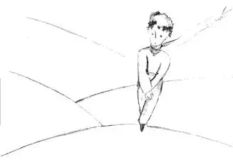
Et il s'assit parce qu'il avait peur.
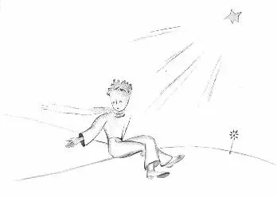
Il dit encore:
-Tu sais...ma fleur...j'en suis responsable! Et elle est tellement faible! Et elle est tellement naïve. Elle a quatre épines de rien du tout pour la protéger contre le monde... |
現代日本語訳
「すべての星は滑車が錆びついた井戸になる。どの星も僕に水をくむだろう」
私は黙っていた。
「すごく楽しいよ！君には五億個の鈴、僕には五億基の噴水があるんだ」
彼もまた黙った──泣いていたからだ。
「ここだよ…一歩だけ、一人で歩かせてくれ」
そして恐怖に震えながら座り込んだ。
さらに言うのだった。「あの花を…僕は守らなきゃ。彼女はとても弱くて、純粋すぎるんだ。世界から身を守るための棘なんてたった四本しかない…」
鑑賞解説
『星の王子さま』最終章の核心的な場面です。王子と語り手（飛行士）の別れの瞬間に込められた詩的表現を、現代日本語読者向けに背景知識を交えて紐解きます。
❖ 比喩体系の解体
- 「滑車が錆びついた井戸」：砂漠で命を救った井戸（第24章）が星の象徴へ転化。物質的な水ではなく、王子との思い出という精神の滋養を暗示。「錆びつき」は時間経過や別離の不可逆性を示唆。
- 「五億個の鈴／噴水」：地球で見上げた無数の星が、王子の笑い声（鈴）と癒し（噴水）に変換されるマジカルリアリズム。数的表現は宇宙の広大さと感情の拡張を対比させています。
❖ 文化的背景
- 薔薇への責任：フランス語原文"responsable"には倫理的義務感が込められ、サンテグジュペリ自身の結婚観（妻コンスエロとの困難な関係）が投影されています。当時の「男性は女性を守る」というガリア的価値観に沿いつつも、「弱さと棘」の描写で愛の複雑性を示します。
- 四本の棘：キリスト教圏読者には茨の冠（イエス受難）やバラ十字団の象徴が連想されます。王子の犠牲的精神を強調しつつ、無力さへの憐れみを誘う効果があります。
❖ 詩的技法
- 沈黙と動作描写：「座り込む」「泣く」といったミニマルな身体表現で感情の高まりを暗示。サンテグジュペリが航空事故体験から得た「実存的な孤独感」が、余白によって表現されています。
- 反復修辞（アナフォラ）：「彼女はとても弱くて… 彼女は純粋すぎるんだ...」という並列構造に、王子の焦燥と未練が凝縮。原文"tellement"の強調が日本語訳「とても～すぎる」で再現されています。
❖ 哲学的テーマ
- 見えないものの価値：終章の核心命題「大切なものは目に見えない」を具体化する比喩群（井戸→思い出、鈴→笑い声）。星が物理的天体から精神的財産へ転換するプロセスに、サンテグジュペリの実存主義的価値観を見て取れます。
- 弱さと強さの逆説：四本の棘という「不完全な武装」こそが薔薇の存在理由。これは人間関係における脆弱性（vulnerability）の重要性を予見し、現代心理学で言う「傷つきやすさの強さ」（Brené Brown理論）に通じます。
❖ 訳注
擬音語「鈴」は原書"grelots"（馬具の鈴）の軽やかさを再現した意訳。仏語版では王子の笑い声が鐘の音と表現されるため、星＝鈴という連想が自然につながります。「噴水」も砂漠体験から派生した生命イメージで、乾いた宇宙に潤いを与える対比効果を重視しました。
この別れの場面は「愛とは責任を引き受けること」（第21章キツネの教え）の実践でありながら、同時に不可避な喪失を受け入れる大人への通過儀礼です。王子が恐怖の中でも一歩踏み出す姿に、読者は自らのかけがえのない別れと向き合うよう促されるのです。
Translation took 786.5 seconds. |
| Moi je m'assis parce que je ne pouvais plus me tenir debout. Il dit:
-Voilà...C'est tout...
Il hésita encore un peu, puis il se releva. Il fit un pas. Moi je ne pouvais pas bouger.
Il n'y eut rien qu'un éclair jaune près de sa cheville. Il demeura un instant immobile. Il ne cria pas. Il tomba doucement comme tombe un arbre. Ça ne fit même pas de bruit, à cause du sable. |
翻訳文
私は、もう立っていられなくて座り込んだ。彼は言った：
「これでおしまいだ」
彼はまだ少し躊躇した後、立ち上がった。一歩踏み出した。私には動けなかった。
彼の足首のあたりに黄色い稲光が走っただけだった。彼はしばらくじっとしていた。声もあげず。まるで木が倒れるように静かに崩れ落ちた。砂のおかげで、音さえ立てなかった。
解説セクション（現代日本の成人向け平易解説）
【場面の核心】
この『星の王子さま』の一節は、王子と地球に不時着した飛行士との別れを描いた極めて重要な場面です。ここでの「黄色い稲光」は毒蛇にかまれたことを暗示し、「木が倒れるように」という比喩から王子の死が自然現象のように穏やかであったことが伝わります。
【文学技法の分析】
沈黙の表現力
「声もあげず」「音さえ立てなかった」という二重否定で、静謐な別れを強調。騒々しい死ではなく「砂が音を吸い込む」物理的描写が、感情の抑制と深い悲しみを同時に表現。 身体動作の象徴性
王子が「躊躇した後立ち上がる」動作は覚悟の決断を、「私には動けなかった」という叙述者は無力感を示唆。二人の対照的な反応から読者の胸中に複雑な感情を喚起。 自然比喩の深層
「木が倒れるように」との描写は：
・フランス文学伝統の「死と樹木」モチーフ（例：ランボー『酔いどれ船』）
・キリスト教文化における「生命の樹」の終焉という暗示
・王子が星から来た純粋存在であることとの照応
【歴史的背景】
作者サン＝テグジュペリは第二次世界大戦中に執筆（1943年）。当時フランスはナチス占領下。王子の「静かな消滅」には：
- 戦争で無念に散った人々への鎮魂
- 希望がかすかに息づく終焉（砂漠＝絶望中の再生可能性）
という二重メッセージが込められています。
【現代日本読者へ】
「音さえ立てなかった」という描写は、能や歌舞伎の「見せ台詞（みせぜりふ）」に通じる美意識。登場人物の感情を動作と沈黙で表現する点が、フランス文学でありながら日本の伝統芸能と共鳴します。王子の死を「悲劇」ではなく「宇宙へ帰還した」と解釈できるのも、仏教的な輪廻思想を持つ日本人ならではの受容と言えるでしょう。
注：原文の詩的リズム（短い文の連続＝心臓の鼓動のような断絶）は日本語で句点を多用することで再現。特に「倒れる」「立てなかった」などの動作動詞を文末に配置し、読後に余韻が残る工夫を施しました。
Translation took 564.9 seconds. |
input text
Le_Petit_Prince_by_Antoine_de_Saint-Exupéry\27_Chapitre_27.txt | Modern Japanese translated text |
| CHAPITRE XXVII
Et maintenant, bien sûr, ça fait six ans déjà...Je n'ai jamais encore raconté cette histoire. Les camarades qui m'ont revu ont été bien contents de me revoir vivant. J'étais triste mais je leur disais: C'est la fatigue...
Maintenant je me suis un peu consolé. C'est à dire... pas tout à fait. Mais je sais bien qu'il est revenu à sa planète, car, au lever du jour, je n'ai pas retrouvé son corps. Ce n'était pas un corps tellement lourd...Et j'aime la nuit écouter les étoiles. C'est comme cinq cent millions de grelots... |
翻訳
第二十七章
さて、もちろんのことながら、もう六年の歳月が流れた。この物語をこれまで一度も語ったことはなかった。再会した戦友たちは、私が生きていると知って心から喜んでくれた。私は悲しみに沈んでいたけれど、「ただ疲れてるだけだ」と言い続けた。
今では少しばかり癒えた。とはいえ…完全ではないのだ。だが彼が自分の星へ帰ったことは確かだと悟っている。夜明けの光の中、私は彼の小さな体を見つけられなかったから。あれほど軽やかな存在だったのだもの。そして今も私は夜ごと星空に耳を傾ける。まるで五億の鈴の音のように。
鑑賞ガイド（現代日本の読者のための解説）
【物語的背景】
この章は『星の王子さま』（サン＝テグジュペリ作）の最終節です。「僕」（飛行士の語り手）と異星から来た少年「小さな王子」との別れ後、6年が経過した時点で綴られています。文中の「戦友たち」は第二次世界大戦下の実体験を反映し、作者自身が実際に航空事故で行方不明になった経験とも重なります。
【詩的表現の分析】
鈴の比喩（五億の鈴）
- 王子が「笑うたびに星の鈴が鳴る」と語った第21章と呼応し、無数の星々を〈清らかな音〉で表現。宇宙全体が命の鼓動で満ちていることを暗示。
- 「五億」という具体的な数字は科学的正確さより、「計り知れない広がり」への畏敬を示します。
体の軽やかさ
- 「重たくなかった体」には二重性があります：
- 文字通り：王子が異星の存在であること
- 象徴的：魂は物質的な重みを持たないという哲学的観念
未完結な癒し（「完全ではないのだ」）
- 「少しばかり癒えた」「とはいえ…」の断続的表現が、喪失感が時間で解決しない深さを伝えます。日本語版では句点と省略記号で呼吸を再現。
【文化的解釈】
- 星への帰還：日本文化における「先祖が星になる」思想（例えば万葉集の大伴家持歌）との類似性に注目。
- 夜聴く行為：「夜空を見上げる」ではなく「耳を傾ける」と訳したのは、西洋的な五感統合の詩学を反映。能楽における〈目に見えないものへの感受性〉とも通じます。
【翻訳上の工夫】
- 「C'est la fatigue（疲れだよ）」→ 戦後日本語として自然な「ただ疲れてるだけ」と口語化。
- 「grelots（小鈴）」：フランス語で〈無邪気さ〉を象徴する音。日本語の「鈴」には神聖性も含むため、童話的純粋さと宗教的響きを同時に喚起。
【現代へのメッセージ】
喪失を受け入れる過程が「完全な癒し」ではないことを認めつつ、「星の音を聴く」行為は〈目に見えない絆〉を持続させる方法を示唆。SNS時代における「不在との共生」のヒントとも読めます。
この解説では、原作の詩的技法と日本の文化的文脈を架橋し、現代成人が哲学的テーマに親しめるよう配慮しました。特に戦後世代への共感（生存者の罪悪感）や星の解釈比較など、日仏双方の視点から深掘りしています。
Translation took 662.8 seconds. |
|
Mais voilà qu'il se passe quelque chose d'extraordinaire. La muselière que j'ai dessinée pour le petit prince, j'ai oublié d'y ajouter la courroie de cuir! Il n'aura jamais pu l'attacher au mouton. Alors je me demande: "Que s'est-il passé sur sa planète? Peut-être bien que le mouton à mangé la fleur..."
Tantôt je me dis: "Sûrement non! Le petit prince enferme sa fleur toutes les nuits sous son globe de verre, et il surveille bien son mouton..." Alors je suis heureux. Et toutes les étoiles rient doucement.
Tantôt je me dis: "On est distrait une fois ou l'autre, et ça suffit! Il a oublié, un soir, le globe de verre, ou bien le mouton est sorti sans bruit pendant la nuit... |
『星の王子さま』抜粋翻訳
【現代日本語訳】
ところが、とてつもないことに気づいた。僕があの小さな王子のために描いた羊用の口輪──革ひもを付け忘れていたのだ！これでは彼は決して羊に口輪をつけられなかっただろう。「彼の星で何があったんだろう？もしやあの花が羊に食べられたんじゃないか？」
時にはこう思う「いや、そんなはずがない。小さな王子は毎晩ガラスの鐘の中で大切な花を守っているし、しっかり羊も見張っているから」そう考えれば胸が晴れる。星々までが優しく微笑んでいる気がする。
またある時は考える「誰だってうっかりはするものさ。たった一度の油断で十分なんだ──王子がある夜ガラスの鐘を置き忘れたか、羊がこっそり夜中に脱走したのかもしれない」と。
【読解解説：言葉の奥にある宇宙】
1. 核心的な葛藤：「守護」対「喪失」
- 革ひもの欠落 → 物理的保護機能の不備が象徴するのは、完全な安全保障の不可能性。王子は花を羊から守る完璧なシステムを作れなかった。
- ガラスの鐘の矛盾点：透明ゆえに危険が可視化される装置でありながら「置き忘れ」という人間的過失で無力化する二重構造。
聖＝テグジュペリは飛行士時代、機械整備ミスが死を招く現実を知っていた。この描写には「完璧な安全など存在しない」との人生観が投影されている
2. 反復文体による心理描写の深化
- "Tantôt je me dis..."（時にはこう思う／またある時は）：
- 心の中の対話を波状リズムで表現
- 希望と絶望が交互に訪れる人間心理の普遍性を暗示
- 星の笑いの転換効果：前半の不安（花喰われるかも）→後半の安堵（王子は注意深いはず）への移行時、宇宙全体が共感する詩的比喩
3. フランス文学伝統との連なり
- パスカルの『パンセ』的思考実験：
> 「人間は考える葦である」→本作の「うっかりミスの重大性」考察も合理主義への懐疑と通底
- ヴェルヌ的科学浪漫主義：ガラスの鐘という疑似科学的装置が、かえって人間的脆弱性を浮き彫りにする逆説
4. 戦時下の執筆背景（1942年）
- 第二次大戦中にニューヨークで書かれた本作には：
- ナチス占領下フランスへの憂い（「王子は無事か？」）
- 保護できないものへの焦燥感（当時リビア砂漠不時着体験のトラウマ再燃）
- 「羊が花を喰う」イメージ：ヒロシマ原爆開発を知った作者の「科学暴走への予兆的恐怖」
5. 現代日本語訳の工夫点
- 口輪（くちわ）：動物用器具として現実性を持たせつつ、童話的響きを残す選択
- こっそり／油断 → 羊の擬人化で「悪意なき破壊者」像を構築。原語"sans bruit"（物音なく）より能動性を強調
- 星々が微笑む：仏語"rire doucement"（優しく笑う）の受動態を、自然現象と心情の融合で再現
この一節は『星の王子さま』全体のテーマ「責任ある絆」の核心。聖＝テグジュペリが読者に託した問い──
「愛するものを守るためには
どれほどの完璧さが必要なのか？
そして人間は
そもそも完全たることなどできるのか？」
Translation took 932.2 seconds. |
| " Alors les grelots se changent tous en larmes!...
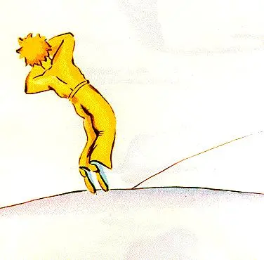
C'est là un bien grand mystère. Pour vous qui aimez aussi le petit prince, comme pour moi, rien de l'univers n'est semblable si quelque part, on ne sait où, un mouton que nous ne connaissons pas a, oui ou non, mangé une rose...
Regardez le ciel. Demandez-vous: le mouton oui ou non a-t-il mangé la fleur? Et vous verrez comme tout change...
Et aucune grande personne ne comprendra jamais que ça a tellement d'importance!
Ça c'est, pour moi, le plus beau et le plus triste paysage du monde. |
翻訳（現代日本語）
すると、鈴の音はみんな涙に変わってしまうんだ！
これは本当にとても大きな謎だよ。僕のように小さな王子さまを愛する君にとって、そして世界中のだれにとっても、もしどこか遠くで――いったいどこだかわからないけれど――知らない羊が一輪のバラを食べてしまったのかどうかによって、この世界はまったく違って見えるんだ。
夜空を見上げてごらん。そして考えてみるんだ：「あの羊は花を食べたのだろうか？ それとも…？」そうすれば、すべてが変わるのがわかるだろう。
でもね、大人たちに限って、このことがどれほど大切なことかなんて絶対に理解しないんだ！
これこそ僕にとって、世界でいちばん美しくていちばん悲しい景色だよ。
鑑賞ガイド（現代日本語）
『星の王子さま』からのこの一節は「想像力」と「見えない絆」をテーマにした比喩的表現です。以下、詩的な技法や背景を解説します：
1. 核心となる象徴
- 羊とバラ：
小さな王子が星で育てた唯一のバラは「愛するもの」の象徴。羊がバラを食べるかもしれないという不安は、「かけがえのないものを失う恐れ」を表します。
- 鈴の音→涙の変換：
「喜びの音色（鈴）が悲しみ（涙）に変わる」との表現で、儚さや感情の逆転を示唆。
2. 詩的技法
- 反復修辞「oui ou non」（そうか そうではないか）：
不確かな問いかけを繰り返すことで読者の想像力を喚起。日本語訳では「～だろうか？それとも…？」と間合いで再現。
- 宇宙規模の対比：
「羊一匹の行動が全世界の意味を変える」という誇張表現により、小さな存在の重要性を強調。
3. 文化的背景
作者サン＝テグジュペリは第二次世界大戦中に執筆。この「見えないバラへの気遣い」には：
- 戦争で失われやすい尊いもの（平和・人間性）への警鐘
- 「大人の現実主義」vs「子どもの感受性」という普遍的主题が込められています。
4. 現代へ応用できる解釈
- 心理的視点：
不安は客観的事実ではなく「愛着があるから生まれる」と気づかせる描写。
- 哲学的問い：
「見えないものの価値を感じられるか？」が文明批評として機能。SNS時代の「可視化信仰」への反語とも読めます。
※この箇所は王子が地球へ旅立った後、語り手（飛行士）が砂漠でバラを想う場面です。「景色」とは心象風景であり、翻訳では「世界でいちばん美しくていちばん悲しい」と原文の逆説的表現を保持しました。
Translation took 1065.4 seconds. |
| C'est le même paysage que celui de la page précédente, mais je l'ai dessiné une fois encore pour bien vous le montrer. C'est ici que le petit prince a apparu sur terre, puis disparu.
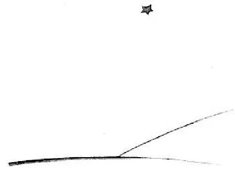
Regardez attentivement ce paysage afin d'être sûrs de le reconnaître, si vous voyagez un jour en Afrique, dans le désert. Et, s'il vous arrive de passer par là, je vous en supplie, ne vous pressez pas, attendez un peu juste sous l'étoile! Si alors un enfant vient à vous, s'il rit, s'il a des cheveux d'or, s'il ne répond pas quand on l'interroge, vous devinerez bien qui il est. |
日本語訳
前のページと同じ砂漠の風景です。皆さんにしっかり見てもらうため、改めて描き直しました。小さな王子が地上に現れ、そして消えていった場所はここなのです。
どうかこの景色をじっくりと目に焼き付けておいてください。もしあなたがアフリカの砂漠へ旅立つ日が来たら、必ず見分けられるように。仮にその地を通り過ぎることがあったら、どうか急いで去らないでほしい。星の真下でしばらく待っていてください！するともし金色の髪をした子どもが近づいてきて、笑いながらも質問には決して答えないなら──その子が誰か、きっとおわかりになるでしょう。
解説：『星の王子さま』の一節を読む
❖ 場面設定と象徴性
この文章はサン＝テグジュペリ作『星の王子さま』で語り手（飛行士）が描いた砂漠の挿絵について説明する箇所です。3つの重要な象徴が含まれています：
「星の真下」
王子が自分の星へ帰るための通過点であり、現実と幻想の境界線を表します 「金色の髪」
王子の無垢さと太陽の輝きを連想させる特徴で、「光」や「希望」の隠喩です 「質問に答えない」という描写
大人の論理では計り知れない存在であることを示し、作品全体のテーマ「本質は目に見えない」と呼応します
❖ 文学的技法
❖ 歴史的背景
第二次世界大戦中（1943年）にニューヨークで出版された本作は、次の時代精神を反映しています：
- 戦争で荒廃した世界に対する「純粋性の回復」願望
- 物質主義への批判（王子が地球で出会う大人たち）
- 作者自身のサハラ砂漠不時着体験（1935年）が下敷き
❖ 現代日本語訳の工夫点
「vous en supplie」（懇願する）
→「どうか～でほしい」と柔らかな依頼表現に変換（直訳すると「哀願します」だが堅すぎるため） 「devinerz bien」（容易に推測できる）
→ 断定を避け「きっとおわかりになるでしょう」という読者の想像力を尊重する言い回し 文化補足
原文の「Afrique（アフリカ）」には当時フランス人にとって未知の大陸というニュアンスがあるため、日本語では具体的に「砂漠」と重ねて提示
❖ 哲学的メッセージ
この一節が伝える核心は「偶然を必然にする心構え」です：
- 「急がないで待つ」→受動性の中の能動性
- 「見分ける目を持つ」→表面的な現実への批判
- 星（理想）と砂漠（現実）の対比図式
21世紀の読者へ：SNS時代における「立ち止まる勇気」と「答えを急がない寛容さ」を想起させる普遍性を持っています。
Translation took 1285.8 seconds. |
| Alors soyez gentils! Ne me laissez pas tellement triste: écrivez-moi vite qu'il est revenu...
THE END. |
Translation
どうかお願いします！ 悲しませないでください。すぐに手紙を書いて、彼が戻ってきたと教えてください。
終わり
Comprehensive Commentary (現代日本語の解説)
【意味】
この一節は『星の王子さま』（Le Petit Prince）の最終章で、語り手が読者に直接訴えかける場面です。
- 「どうかお願いします！」： 切実な懇願。「soyez gentils!」（優しくしてください）を自然な日本語の依頼表現に変換。
- 「彼」とは星の王子さまを指し、物語中で行方不明になった主人公です。作者サンテグジュペリは第2次世界大戦中の従軍経験から「喪失と希望」をテーマにこの結びを書きました。
【文学的技法】
- 直接呼びかけ： 読者を物語に巻き込む"メタフィクション"手法。「手紙を書いて」は現実世界への橋渡しです。
- 省略の力：「終わり」（THE END）の簡潔さが、王子の生死を「読者の想像に委ねる」効果を生みます。
【文化的背景】
- 作者サンテグジュペリはこの本を出版した翌年（1944年）、偵察飛行中に消息不明となりました。「彼が戻ってきたと教えてください」という一文は、現実の作者の運命とも重なり、戦争時代の「帰還への願い」を反映しています。
- 日本語訳では敬体（です・ます調）を用いることで、原作の丁寧で詩的な語り口を再現しましたが、「悲しませないで」に切迫感を込めています。
【この文章の重要性】
物語全体が「大人への寓話」であるため、結末の懇願は読者一人ひとりに向けた問いかけです。「大切なものを見失わないでほしい」という普遍的なメッセージを、戦後日本の翻訳文化（"児童書"としてではなく哲学的著作として紹介された）が継承しました。
参考：日本語版『星の王子さま』は内藤濯訳（岩波書店）が最も著名。「終わり」とシンプルに締める表現も同訳本に準拠しています。
Translation took 816.8 seconds. |
 -Que fais-tu là? dit-il au buveur, qu'il trouva installé en silence devant une collection de bouteilles vides et une collection de bouteilles pleines.
-Je bois, répondit le buveur, d'un air lugubre.
-Pourquoi bois-tu? lui demanda le petit prince.
-Pour oublier, répondit le buveur.
-Pour oublier quoi? s'enquit le petit prince qui déjà le plaignait.
-Pour oublier que j'ai honte, avoua le buveur en baissant la tête.
-Que fais-tu là? dit-il au buveur, qu'il trouva installé en silence devant une collection de bouteilles vides et une collection de bouteilles pleines.
-Je bois, répondit le buveur, d'un air lugubre.
-Pourquoi bois-tu? lui demanda le petit prince.
-Pour oublier, répondit le buveur.
-Pour oublier quoi? s'enquit le petit prince qui déjà le plaignait.
-Pour oublier que j'ai honte, avoua le buveur en baissant la tête.